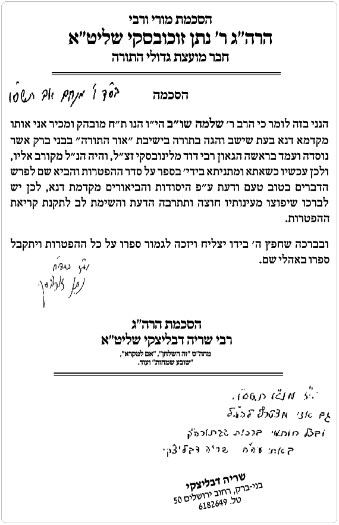
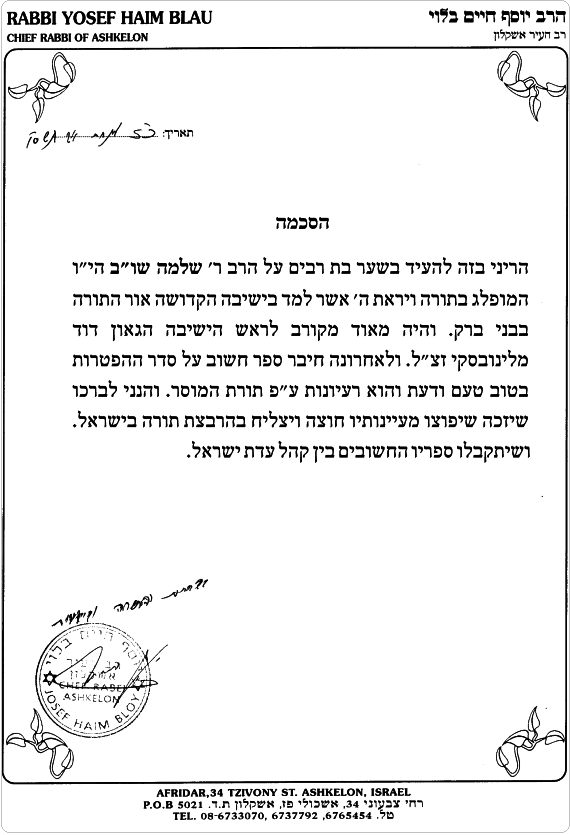

מלבד על הפרק דיני ההפטרה שהזכויות עליו שמורות לרב יצחק יוסף שליט''א
ומלבד ההפטרות עצמן שהזכויות עליהן שיכות לארגון J. Alan Groves Center.
 הקדמות ברכות ההפטרה הפטרה לשבת בראשית - כה אמר הפטרה לפרשת נח - רני עקרה הפטרה לפרשת לך לך - למה תאמר הפטרה לפרשת וירא - ואשה אחת הפטרה לפרשת חיי שרה - והמלך דוד הפטרה לפרשת תולדות - משא דבר יהוה הפטרה לפרשת ויצא - ועמי תלואים הפטרה לפרשת וישלח - חזון עבדיה הפטרה לפרשת וישב - כה אמר ה' הפטרה לשבת א' של חנוכה - רני ושמחי הפטרה לשבת ב' של חנוכה - ויעש חירום הפטרה לפרשת מקץ - ויקץ שלמה הפטרה לפרשת ויגש - ויהי דבר ה' הפטרה לפרשת ויחי - ויקרבו ימי דוד ביבליוגרפיה
הקדמות ברכות ההפטרה הפטרה לשבת בראשית - כה אמר הפטרה לפרשת נח - רני עקרה הפטרה לפרשת לך לך - למה תאמר הפטרה לפרשת וירא - ואשה אחת הפטרה לפרשת חיי שרה - והמלך דוד הפטרה לפרשת תולדות - משא דבר יהוה הפטרה לפרשת ויצא - ועמי תלואים הפטרה לפרשת וישלח - חזון עבדיה הפטרה לפרשת וישב - כה אמר ה' הפטרה לשבת א' של חנוכה - רני ושמחי הפטרה לשבת ב' של חנוכה - ויעש חירום הפטרה לפרשת מקץ - ויקץ שלמה הפטרה לפרשת ויגש - ויהי דבר ה' הפטרה לפרשת ויחי - ויקרבו ימי דוד ביבליוגרפיה הקדמות
הסכמות
הקדמה
מבוא
עם הספר
ברכת תודה
ברכת אב
התודה והברכה
יסוד המנהג לומר קדיש ולהפטיר בנביא
דיני ההפטרה - מספר ילקוט יוסף
טבלאת הקריאות התורה וההפטרות של המועדים
ברכות ההפטרה
ברכות ההפטרה לשבת כמנהג הספרדים
ברכות ההפטרה לשבת כמנהג האשכנזים
ברכות ההפטרה לשבת כמנהג התימנים (בלאדי)
הפטרה לשבת בראשית - כה אמר
קריאת ההפטרה
הפטרה ופשרה
פרשה ופשרה
הפטרה לפרשת נח - רני עקרה
קריאת ההפטרה
הפטרה ופשרה
פרשה ופשרה
הפטרה לפרשת לך לך - למה תאמר
קריאת ההפטרה
הפטרה ופשרה
פרשה ופשרה
הפטרה לפרשת וירא - ואשה אחת
קריאת ההפטרה
הפטרה ופשרה
פרשה ופשרה
הפטרה לפרשת חיי שרה - והמלך דוד
קריאת ההפטרה
הפטרה ופשרה
פרשה ופשרה
הפטרה לפרשת תולדות - משא דבר יהוה
קריאת ההפטרה
הפטרה ופשרה
פרשה ופשרה
הפטרה לפרשת ויצא - ועמי תלואים
קריאת ההפטרה
הפטרה ופשרה
פרשה ופשרה
הפטרה לפרשת וישלח - חזון עבדיה
קריאת ההפטרה
הפטרה ופשרה
פרשה ופשרה
הפטרה לפרשת וישב - כה אמר ה'
קריאת ההפטרה
הפטרה ופשרה
פרשה ופשרה
הפטרה לשבת א' של חנוכה - רני ושמחי
קריאת ההפטרה
הפטרה ופשרה
הפטרה לשבת ב' של חנוכה - ויעש חירום
קריאת ההפטרה
הפטרה ופשרה
הפטרה לפרשת מקץ - ויקץ שלמה
קריאת ההפטרה
הפטרה ופשרה
פרשה ופשרה
הפטרה לפרשת ויגש - ויהי דבר ה'
קריאת ההפטרה
הפטרה ופשרה
פרשה ופשרה
הפטרה לפרשת ויחי - ויקרבו ימי דוד
קריאת ההפטרה
הפטרה ופשרה
פרשה ופשרה
ביבליוגרפיה






אודה ה' בכל לבב בסוד ישרים ועדה
אודה ה' בכל לבב בסוד ישרים ועדה על כל הטוב שגמלני מעודי ועד עתה שזיכני לישב באהלה של תורה בחיק ת''ח. ארשת שפתי תוחיל שעוד יוסיף ה' חסדו ואמתו להאיר עיני בתורתו הקדושה, ויחנני חכמה בינה ודעת לחבר עוד חיבורים. והשי''ת יעזרני על דבר כבוד שמו להוציא לאור עולם כל חיבורי אשר קבלה נשמתי מהר סיני לזכות הרבים.
וכעת עלתה בלבי מחשבה טובה להוציא לאור עולם ספר בשם ''ספור מן ההפטרה'' שעולה בגימטריא עם הכולל 740 כמנין שמי ''שלמה ב''ר נסים'' כמובא בספר הרוקח שצריך המחבר לרמוז שמו בחיבורו. ובו ליקטתי אחר האומרים, אמרות ה' אמרות טהורות, ליקוטי בתר ליקוטי זעיר פה זעיר שם לאסוף כעמיר גורנה. מהרבה ספרים וסופרים מאירים כספירים ראשונים ואחרונים על ההפטרה וקישורה לפרשה, עפ''י החוט המשולש: הלבוש, אבודרהם והרמב''ם. וכן העלתי על הכתב את דברי התורה שהייתי דורש בלילי שבתות בבתי כנסיות וכן מגישם בפני תלמידי. ובסופו כתבתי הלכות הקשורות להפטרה על פי פסיקותיו של מרן מלכא שר התורה הראשון לציון רבינו עובדיה יוסף שליט''א.
וכבר כתב הרמב''ן: כי אם לא יהיה בדברינו רק השנות הדברים לא הפסדנו טרחינו ועמלינו אצל היודע ועד הנאמן. וכן כתב הגאון ר' אליעזר פאפו זצ''ל בספרו ''פלא יועץ'': אם חננו ה' רוח ודעת יעשה ספר ללמד ולהועיל ואם יזכה שיועיל דבריו בדור מן הדורות לאחד מני אלף די לו אם בא לעולם אלא לדבר זה. שהעיקר היום הוא לא לחדש חידושים אלא ללקט ליקוטים, וכך המעשה בספר זה ליקוטי בתר ליקוטי.
וידוע מה שכתב בספר חסידים (סימן תק''ל): שהקב''ה גוזר על האדם אם יהיה חכם וכמה ספרים יעשה, וכל מי שגילה לו הקב''ה חידוש בתורה ואינו כותבו ויכול הוא לכותבו, הרי הוא גוזל את הבריות. כי לא גילו לו מן השמים אלא על מנת לכותבו ולהפיצו ברבים, שכן נאמר: ''סוד ה' ליראיו ובריתו להודיעם'' וכן נאמר: ''יפוצו מעינותיך חוצה''.
וכפי שמבארים בלשון הלצה את דברי התנא יהושע בן פרחיה: עשה לך רב ''ו: קְנֶה לך חבר'' (אבות א) ''קָנֶה לך חבר'' הקולמוס (קנה) נעשה לי חבר ולא מש מידי. אל החפץ חיים בא עשיר ולמדן ידוע וביקש לקנות את כל הספרים שכתב החפץ חיים. ''את כל הספרים'' כך אמר, מלבד ספר אחד בשם ''שמירת הלשון'' המדבר על חומרת חטאי הלשון.
שאלו החפץ חיים: ''מדוע אינך חפץ בספר זה''? השיב העשיר: ''עסקים ענפים לי עם אנשים רבים ושונים. עלי לחתום הסכמים כדי לקבל עובדים ולברר על עברם, לפטר עובדים המתרשלים בתפקידם, לקבל מידע על קונים שונים ועל מדת יושרם של מוכרים ועוד ועוד''. ''ברור לי'', המשיך העשיר, ''שלא אוכל להגמל מלשון הרע, ומשום כך לא אפיק כל תועלת מן הספר הזה''.
שמע החפץ חיים את דברי העשיר וסיפר לו כי לפני זמן מסוים, בא הוא עצמו לפני רבי ישראל מסלנט מיסד תנועת המוסר ושטח לפניו בעיה זו ממש, שמפקפק בתועלת הספר ''שמירת הלשון'', מכיון שישנם אנשי עסקים שלא יסכימו להגמל מדיבורים אסורים שכה הורגלו אליהם.
מיד השיב לו ר' ישראל מסלנט: ''אפילו אם לא תצליח אלא לעקור אנחה מלבו של יהודי בצערו על כישלון בלשון הרע, כדאית כל טרחתך בחיבור זה הספר''.
הרב שמשון רפאל הירש זצ''ל, מקברניטי יהדות גרמניה בסערות הימים, כותב בהקדמתו לאחד מספריו העוסק בענייני ש''ק, כי שכרו הגדול ביותר בכתיבתו יהא כשיהודים יתעוררו מתוך הספר להתחזק בשמירת שבת. הוא מרחיק לכת בקביעתו, כי גם אם משפחה יהודית אחת תתעורר מתוך קריאת ספרו, הרי ששוה היתה כל מלאכת הכתיבה.
וזה המקום להוקיר טובה ולשגר ברכה מעומקא דליבא למקומות שהיו לי אכסניא של תורה בצילם חמדתי וישבתי. החל בישיבת ''ראדין'' שבראשה עמד הרב חיים יונה פלאטו שליט''א, ובי''ס ''יסודי התורה'' בנתניה שהיתה תחת נהולו של הרב זאב יהודה יעקובוביץ, ישיבת ''תפארת ציון'' שבראשה עמד הרב הצדיק רבי יעקב שניידמן, וישיבת ''אור התורה'' בב''ב אם הישיבות הספרדיות בישוב החדש, שבראשה עמד רבי ומורי הגאון הצדיק רבי אלכסנדר דוד מלינובסקי זצ''ל, ועימו נשא בעול המנהל הרוחני המשגיח הגה''צ רבי שלום צבי הכהן שפירא זצ''ל. עימם שירתו בקודש הרבנים הגאונים רבי זלמן רוטנברג זצ''ל שהיה מוסר שיחות מוסר במוצש''ק ורבי ראובן פיין זצ''ל שהיה מוסר שיעורים. ואי אפשר שלא להזכיר את הצדיק חסידא ופרישא רבי עמרם אזולאי זצ''ל שאף שלא נימנה רישמית על צוות הישיבה בשקידתו העצומה היה נר התמיד של הישיבה. דמויות הוד דור דעה שאזל מן העולם וחבל על דאבדין ולא משתכחין. ועימם היו גם הר''מים הרבנים הגאונים שיבדלחט''א הרה''ג רבי צבי סימן טוב שליט''א הרה''ג רבי מכלוף פחימה שליט''א והרה''ג רבי נתן זוכובסקי שליט''א שהסכמותיהם מעטרים את ספרי. הדמויות המיוחדות שזכינו שילוו אותנו בישיבה, שכל אחת מהן בפני עצמה ניחונה ביחודיות שאפיינה אותה וזה תרם לפסיפס הכללי של השלימות.
והריני להוקיר תודה וברכה לרב שלום זכריה שליט''א ראש מוסדות ''אוצר החיים'', ולרב אלישע רפאל שליט''א מנהל ת''ת ''פרי חדש'', שזה למעלה מעשור שנים אני משמש כמלמד תשב''ר בחצרות קדשם.
ומאז נישואי ועד עתה הריני משמש בקודש כמלמד תשב''ר זה שלוש עשורים. ומתלמידי יותר מכולם. וכן אמרו שהתורה נקנית בפלפול התלמידים.
כמו כן הריני להוקיר טובה וברכה מקירות לבי למרכז רוחני לתורה ולתפילה ''נר למאור החיים'' בניהולו של ר' שלמה שחף הי''ו ועזר כנגדו המשב''ק ר' טל אלעד הי''ו ובראשו עומד הרה''ג ר' אברהם לוי שליט''א. ששם קבעתי מקום לתפילתי במקדש מעט זה מאז הווסדו ועד עתה שם אשב כי איויתיה, שהוא מהוה מגדל אור לכל הסביבה.
הספר נערך ביגיעה רבה ובעיון מעמיק על כל פרט ופרט עד מקום שידי יד כהה מגעת, לדלות פנינים מתוך דבריהם הקדושים. כפי שחנני השי''ת ובהתיעצות עם תלמידי חכמים מובהקים כדי שיצא דבר נאה ומתקבל. וכשם שאי אפשר לבר בלי תבן, כך אי אפשר לספר בלי שגיאות, ושגיאות מי יבין. יה''ר שלא נבוש בעולם הזה ולא נכלם לעולם הבא, אמן.
טעם קריאת ההפטרה מובא בר''ן ובאבודרהם:
לפי שאנטיוכוס הרשע מלך יון, גזר על ישראל שלא יקראו בתורה ברבים. והחכמים שבאותו הדור תיקנו שיקראו בנביא מעין הקריאה בפרשה, והיות ומספר העולים לתורה שבעה, ולכל עולה קוראים לא פחות משלושה פסוקים, לכן תיקנו לקרוא בנביא כ''א פסוקים, וכן שבע ברכות. ועכשיו אף שבטלה הגזירה ואפשר לקרוא בתורה ברבים, המנהג לקרוא בנביא לא בטל. וכן כתב הבא''ח פ' כי תשא: קדושת ''ובא לציון'' היא הנקראת קדושה דסדרא, מפני כי האחרונים סדרו אותה דוגמת קדושת העמידה, כנזכר בשבולי הלקט שהביאו הבית יוסף. פעם אחת גזרו האויבים על ישראל שלא יאמרו קדושה בתפילה, והיו מניחים אורבים וממתינים עד שיגמרו העמידה עם החזרה והולכים. לכך התקינו לומר סדר קדושה כאן. ואע''ג דבטלה הגזירה לא ביטלו קדושה זו אח''כ, מפני שבאמת יש בה טעם עפ''י הסוד.
פירוש השם ''הפטרה'' הוא ''סיום'', שהרי קריאת ההפטרה מסיימת את הקריאה בציבור. ורבינו תם כתב טעם אחר, לפי שאמרו חז''ל: כיון שנפתח ספר תורה אסור לדבר אפי' בדבר הלכה, לכן נקראת ''הפטרה'' שפירושה ''פתיחה''. שלאחר קריאת התורה מותר לפתוח - להפטיר בדבר הלכה.
לאחר סיום קריאת התורה, עולה בנוסף למניין הקרואים, אחד מן הציבור, והוא הקרוי ''מפטיר'' וקורא שנית את הקטע האחרון מקריאת התורה של אותו יום.
ובמועדים ושבתות של ארבע פרשיות וכו' קורא המפטיר בספר השני. לאחר שגוללים את ספר התורה המפטיר מברך ברכת ההפטרה וקורא קטע בנביא, אחר כך מברך מספר ברכות.
המפטיר קורא תחילה בתורה, כדי שלא יבאו להשוות בין כבוד התורה לכבוד הנביאים, שאם יברך ויקרא בנביא בלבד, יאמרו שכבוד התורה וכבוד הנביא שוים. לכן קורא בתורה תחילה שידעו כולם שכבודה גדול מכבוד הנביא.
מה אשיב לה', כל תגמולוהי עלי
מה אשיב לה', כל תגמולוהי עלי שזיכני להוציא את ספרי במהדורה חדשה מתוקנת ומורחבת עם תוספות פנינים נופך ספיר ויהלום.
אפתח פי בשיר ורננים להודות ולהלל לצור שוכן מעונים, שהגיעני לזמן הזה.
כי סליק רבי אבא, אמר: יהא רעוא דאימא מילתא דתתקבל (ביצה לח.).
יהי רצון שאומר דברים המתקבלים על הלב ולא אכשל בדבר הלכה, אמן.
המחבר עוסק בחיי היום יום בתחום החינוך וההוראה זה שלוש עשורים. את החומר ליקט במסגרת השיעורים שמסר בטוב טעם ודעת לצאן קדשים ובפני שומעי לקחו מידי שבת בשבתו.
והוא כותב: הדבר שהוביל אותו להוציא ספר יחודי זה לאור, מכיון שראה שזה עניין שמעסיק רבים וטובים והסיפרות בנושא זה דלה עד מאוד וחסרה על מדף הספרים, עד כדי כך כשהראהו לאחד מגדולי הדור התבטא הרב בזו הלשון: ''לא ראיתי כבושם הזה ביאור נפלא על ההפטרות''. הספר זכה להסכמות נלהבות של גדולי ומאורי ישראל מכל החוגים.
המאמרים הנבחרים שבספר כוללים מקבץ עשיר ורב תוכן בנושא ההפטרה וקישורה לפרשה עפ''י גדולי המחשבה והמוסר, ושזור במעשיות מהתלמוד ועד לימינו אנו. מתובל ברעיונות הגיגים מאמרים ודברי מחשבה מפי ספרים וסופרים מאירים כספירים חדשים גם ישנים.
הספר כתוב בצורה קולחת ומרתקת בסגנון צח ובהיר ובשפה השוה לכל נפש. ישנם נושאים מרתקים שקיבלו במה נרחבת כגון: נושא עין הרע, חלומות, עשרה הרוגי מלכות, אמונה ובטחון, הכרת הטוב, מעלת הצדקה, במעלת הענוה ובגנות הגאוה, אש המחלוקת, חומרת לשוה''ר, חומרת הקללה ועונשה, חוקות הגוים, השבת, עמלה של תורה, קונטרס עולם התפילה, שער השמחה, עצות וסגולות לזרע של קיימא, לאשה מעוברת, ללידה קלה, חינוך ילדים, זכר לחורבן, חורבן יהדות אירופה, נבואת אחרית הימים, מלחמת גוג ומגוג, גאולה ועוד.
בכבוד רב
ההוצאה לאור
זכור תזכור ותשוח עלי נפשי על הסתלקותו של האי גברא רבה אדוני אבי מורי ועטרת ראשי ר' נסים ב''ר ראובן זצ''ל זרע קודש מגזע תרשישים, זכרונו לברכה לחיי העוה''ב. שהזדכך ביסורים בערוב ימיו. אשר כל ימיו היה נהנה מיגיע כפיו נשא ונתן באמונה וקבע עתים לתורה. שהשכים והעריב בבית הכנסת ''בני ציון'' באשקלון והיה משמש בקודש בבית מקדש מעט זה, שייף עייל שייף נפיק ולא החזיק טיבותא לנפשיה, וקויים בו ''כל הקובע מקום לתפילתו אלהי אברהם בעזרו''. והשריש במשפחתו הגדולה אשר הקים לתפארה, אורחות חיים תום ויושר אהבת תורה ויראת שמים טהורה צניעות וכל מידה טובה וכל אשר בי מכחו ומאשראתו יניקתיהו. אשר בעצם כתיבת ספרי עלתה נשמתו הטהורה השמימה. לכן שמחה זו מהולה בצער יגון ותוגה על כי הורם הנזר והוסרה העטרה ביום הנשגב הושענא רבא כ''א בתשרי התשס''ה. לקו המאורות ונסתלק מעמנו אבינו היקר ז''ל ועלה בסערה השמימה. ובמסתרים תבכה נפשי על האי שופרא דבלי בארעא. שבת משוש לבנו, נהפך לאבל מחולנו, נפלה עטרת ראשנו. כל ימיו היה מסור לבני משפחתו והיה מסתפק במועט לצורך עצמו. על אלה אני בוכיה עיני עיני יורדה מים על שברי, כי רחק ממני מנחם משיב נפשי.
הספר הזה מוקדש לעילוי נשמת מו''ר אבי עטרת ראשי ענוותן ושפל רוח המנוח נסים ב''ר ראובן זצ''ל אשר ברוב מסירותו והשגחתו עלי הגעתי עד הלום.
יהי רצון שתהיה נשמתו צרורה בצרור החיים ויעמוד לגורלו לקץ הימין. נפשו בטוב תלין וזרעו ירש ארץ.
ויה''ר שיעמוד בתפילה ויהיה מליץ יושר עבור רעייתו שתבלחט''א, מרת אמי שתחי' אירן אילנה מנב''ת ובעד כל משפחתו יוצאי חלציו. ת. נ. צ. ב. ה
חובה נעימה היא לי להביע תודתי וברכתי לכבוד מרת אמי הורתי ומורתי מנשים באהל תבורך, בטח בה לב בעלה. מרת אירן אילנה תחי' לבית בן טובים, שטבועה בה מדת החסד והרחמים כאמותינו הקדושות. כל ימיה השליכה את נפשה מנגד לשם שמים בכוחות על אנושיים לגדלנו לתורה וליראת שמים טהורה ומן הבאר ההיא ישקו כל העדרים עצה ותושיה. אורך ימים ושנות חיים יוסיפו לה עוד ינובון בשיבה דשנים ורעננים יהיו בבריאות גופא ונהורא מעליא, תנו לה מפרי ידיה ויהללוה בשערים מעשיה. שהביאוני לחיי העולם הזה וזיכוני לחיי העוה''ב, והושיבוני בין ברכי ת''ח אשר מידם היתה לי זאת להגיע עד הלום. וחמין ושמן שסכתני אמי בילדותי הן עמדו לי בעת זקנותי. יתן ה' יתברך ותזכה לרוב אושר ונחת דקדושה מכל יוצאי חלציה שיחיו, בנים ובני בנים עוסקים בתורה ובמצוות לאורך ימים ושנות חיים. אתה ה' תשמריה וכצנה רצון תעטריה.
כן הנני להביע בזה רחשי תודה וברכה מרובה לחמותי מנב''ת מרת רג'ינה תחי' לבית יוספיאן שתראה בחופת כל ילדיה ותזכה לרוות נחת מכל יוצאי חלציה מתוך בריאות הנפש והגוף לאורך ימים טובים.
ויה''ר שאזכה יחד עם רעייתי היקרה מנב''ת מרת פנינה מלכה תחי' לגדל את ילדינו לתורה לחופה ולמעשים טובים על אדני התורה והיראה בדרך ישראל סבא מתוך נחת דקדושה ושלווה מרובה. ונזכה לראות בנים ובני בנים עוסקים בתורה ובמצוות ויראת שמים טהורה ובמידות תרומיות מתוך אושר עושר וכבוד. ונמצא חן ושכל טוב בעיני אלהים ואדם אמן.
הצעיר באלפי ישראל
שלמה ב''ר נסים שו''ב
יהי רצון מלפניך ה' אלהינו ואלהי אבותינו. שתתמלא ברחמים וברצון על בני וכל יוצאי חלצי שיהיו תלמידי חכמים, שלמים במידות ודעות. בישנים רחמנים וגומלי חסדים, ויהיה להם לשון לימודים ודעת נכונה ומיושבת. ויהיו מוצלחים ומבורכים בכל, ותגביה ותרומם מזלם, וימצאו חן ושכל טוב בעיניך ובעיני בריותיך, בריאים וחזקים כל ימיהם לעבודתך. ויהיו עוסקים בתורה לשמה, ותן להם רוחב לבב ושכל טוב להבין, כל רואיהם יכירום כי הם זרע ברך ה', ותן בהם כח ובריאות איתנה לעבודתך וליראתך. ויהיו בנינו כשתילי זיתים סביב לשולחנינו. ותאריך שנותי ושנות אשתי נות ביתי בטוב ובנעימים, ובכל אשר נפנה נשכיל ונצליח, ונזכה לראות יחד את כל בנינו לימודי ה' גדולים בתורה ויראת שמים טהורה ובמדות תרומיות לגאון ולתפארת. ותציל את זרענו מעין הרע ומיצר הרע ומחלאים רעים. ויקוים בנו מקרא שכתוב: ''אשר בנינו כנטיעים מגודלים בנעוריהם בנותינו כזויות מחוטבות תבנית היכל''.
ולא ימוש ספר התורה מפינו ומפי זרענו וזרע זרענו עד עולם. ונשמח בצאצאינו באושר עושר וכבוד וכל טוב סלה.
וכעת שהגעתי עד הלום בס''ד לברך על המוגמר. הריני משגר ברכת תודה וברכה מעומקא דליבא, לבתי היקרה אודליה תחי', שהקדישה מזמנה טרחה בעשר אצבעותיה והקלידה את הספר הזה המונח לפניכם, סדרה וערכה את כל הספר, ולאחר מכן היתה לי לעזר בהגהות חוזרות ונשנות כולל פיסוק ותוכן.
וכן תודתי העמוקה מקרב לב נתונה לבתי היקרה בתאל תחי' שסייעה בידי הן מבחינה דקדוקית והן מבחינה לשונית.
יה''ר שבחיק ירא אלהים תנתן ותזכה במהרה להקים בית כשר ונאמן על אדני התורה והיראה בדרך ישראל סבא, ותראה זרע ברך ה' בנים ובני בנים עוסקים בתורה ובמצוות. ברך ה' חילה ופועל ידיה תרצה ותהי משכורתה שלימה מעם ה'. וה' הטוב ישלם לה גמולה משלם, מידו המלאה והרחבה העשירה והפתוחה ובכל אשר תפנה תשכיל ותצליח, אמן סלה.
וכאן המקום להודות מקרב לב לר' יאיר ידעי הי''ו, שהיה לי לעזר ולאחיסמך בעצה ובהכוונה לאורך כל הדרך, יה''ר שחפץ ה' בידו יצלח להמשיך במלאכת קודש זו להגדיל תורה ולהאדירה.
מעשה ברבי עקיבא שיצא לאיזה מקום במדבר כדי לחזור על לימודו במקום שאין איש שיפריע לו בלימודו. פגש באיש מת ערום ושחור כפחם רץ כמרוצת הסוס וסוחב משא של חבילת עצים על כתפו ולא יכל לעצור בו ולהניחה היה כורע תחת הנטל והיה צווח ומתאנח נוראות.
אמר לו ר''ע: מה מעשיך, מדוע אתה עובד עבודה קשה כזו במדבר? א''ל: לא מן החיים אני אלא מת אנכי, ובכל יום פוקדים עלי מלאכי חבלה הממונים עלי לחטוב עצים ושורפים אותי בהם, מפני שלא עזבתי איסור שלא עשיתי בעולם ההוא ועכשיו יש עלי שומרים ולא עוזבים אותי לנוח. א''ל ר''ע: האם שמעת מהממונים עליך אם יש לך תקנה להפטר מפורענות זו? א''ל: שמעתי מאחרי הפרגוד שהיו אומרים, אם היה למסכן הזה בן שעומד בתוך הקהל ואומר קדיש, וברכו את ה' המבורך, או יפטיר בנביא והקהל עונים אחריו ''יהא שמיה רבה מברך'', ו''ברוך ה' המבורך'', מיד היו פוטרים אותי מהעונש. א''ל ר''ע: האם עזבת בן? א''ל: בחייך אל תעכב אותי שאני פוחד מהמלאכים שמכים אותי בשוטים של אש ואומרים לי: מדוע אתה לא בא מיד? לא מניחים לי להתעכב. ר''ע אילצו לענות לו תשובה. מפני כבוד תורתו של ר''ע וכן מפני שהוא נחשב בשמים השיב לו: עזבתי אשה מעוברת ואיני יודע מה עלה בגורלה. לקח ממנו ר''ע את פרטי מגוריו ועזבו לנפשו.
הלך ר''ע לאותה מדינה, אמר להם: ביתו של פלוני היכן הוא? אמרו לו: יעקר זכרו - ימח שמו של ההוא שחיק עצמות. א''ל: מדוע? אמרו לו: הוא היה שודד את כל האנשים ומצער את הבריות ולא עוד אלא שבא על נערה המאורסה ביום הכפורים.
הלך לביתו ומצא את אשתו מעוברת, המתין לה עד שילדה, ובשעטו''מ ילדה בן זכר. הלך ר''ע ומל את הבן. לאחר שגדל הושיבו לפניו ללמוד תורה, ולא היה קולט ומבין. ישב עליו ר''ע בתענית ארבעים יום והתפלל עליו, עד שיצאה בת קול ואמרה לר''ע שתפילתו התקבלה. הלך ולימדו תורה וקריאת שמע וברכת המזון. והעמידו בתוך הקהל ואמר קדיש וברכו. באותה שעה התירו את המת ופטרוהו מן הפורענות.
לימים הלך ר''ע לאותו מקום במדבר. נראה אליו המת, א''ל: תנוח דעתך שהנחת את דעתי והצלתני מדינה של גיהנם.
ומזה פשט המנהג שבנו של הנפטר אומר קדיש בתרא לפני עלינו לשבח כל י''ב חדש וגם להפטיר בנביא. (עפ''י מסכת כלה רבתי פרק שני)
וכדאיתא כעין זה בתנא דבי אליהו זוטא פרק יז, וזה לשונו: אמר רבי יוחנן בן זכאי: פעם אחת הייתי מהלך בדרך, ומצאתי אדם אחד שהוא היה מלקט עצים, ודיברתי עמו ולא החזיר לי דבר. ואחר כך היה בא אלי, ואמר לי: רבי! מת אני ולא חי. אמרתי לו: אם מת אתה, עצים הללו למה לך? ואמר לי: רבי! האזין לי מה שאומר לך דבר אחד. כשהייתי חי, אני וחברי היינו עוסקין בעבירה בפלטרין שלי, וכשבאנו לכאן גזרו עלינו גזר דין של שריפה. כשאני מלקט עצים שורפין את חברי, וכשהוא מלקט עצים אז שורפין אותי. ואמרתי לו: דינכם עד מתי ? ואמר לי: כשבאתי לכאן הנחתי אשתי מעוברת ויודע אני שזכר היא מעוברת, לכן בבקשה ממך! הוי זהיר בו בשעה שיהיה נולד עד שיהיה בן חמש שנים תוליך אותו לבית רבו למקרא, כי בשעה שהוא יאמר ''ברכו את ה' המבורך'' אז יהיו מעלין אותי מדינה של גיהנם.
טעם אמירת הקדיש אינו כמו שחושבים המון העם שהוא להציל את נפש הנפטר מדינה של גיהנם בלבד, אלא יש בו תועלת רבה להכניסו לגן עדן ולהעלותו ממדרגה למדרגה. ולכן צריך לאומרו גם בשבתות וימים טובים. (שהרשעים מוצאים מנוחה ואין דנים אותם בגיהנם)
חלק ב - סימן קמד - דיני ההפטרה
א יש מקומות שנהגו להוציא ספר תורה לחתן, תוך שבעת ימי המשתה, ולקרוא בו בברכות קריאת ''ואברהם זקן''. אולם ביום שאין מוציאין בו ספר תורה, אין להוציא ספר תורה במיוחד לקריאת פרשה זו. ובלאו הכי מנהגינו לקרוא פסוקים אלה אחר שהחתן מסיים את פרשת עלייתו בפרשת השבוע, ובירך ברכה אחרונה. ויש שנהגו שאחד קורא פסוק מתוך החומש, והעומד לידו קורא התרגום, פסוק בפסוק, ואין לשנות. [ילקוט יוסף, הלכות קריאת התורה עמוד קע].
ב ספרדי המתפלל עם האשכנזים, וכיבדוהו לעלות מפטיר, יש לו לקרוא את ההפטרה במבטא ספרדי, ולא לשנות ממבטאו הרגיל בו, ובפרט שאין לו לשנות המבטא בהזכרת שם ה', והאשכנזים יוצאים ידי חובת קריאת התורה במבטא ספרדי, וכן להיפך. והעולה הספרדי יקרא בעצמו ההפטרה בטעמיה, ולא יברך הוא ויקרא השליח צבור האשכנזי, אפילו אם קורא עמו את ההפטרה בטעמיה בלחש. וכל שכן שאין העולה מפטיר רשאי ליתן לשליח צבור לברך ברכות ההפטרה ולקרוא ההפטרה, אלא מי שעלה לתורה למפטיר הוא זה שצריך לברך ברכות ההפטרה ולקרוא ההפטרה. [ילקוט יוסף, חלק ב', ספר על הלכות קריאת התורה וביכה''נ, עמוד קעא].
ג צריך לקרוא ההפטרה בקול רם, כדי שכל הצבור ישמעו את קריאת ההפטרה. ואף שכל הקהל צריכים גם הם לקרוא בפיהם את ההפטרה, מכל מקום ינמיכו את קולם לקרוא ההפטרה בלחש, ואזניהם קשובות למפטיר הקורא את ההפטרה. ויש לקרוא ההפטרה אות באות תיבה בתיבה, ולא לבלוע אותיות בקריאת ההפטרה, ואין למפטיר ליתן את קריאת ההפטרה לשליח צבור, אלא זה שעלה לספר תורה ומברך ברכות ההפטרה, הוא זה שיקרא את ההפטרה בעצמו, וכמבואר. ולכן נכון שקודם עלייתו לתורה למפטיר, ישנן את ההפטרה בטעמיה ודקדוקיה. [ילקו''י שם, עמוד קעא].
ד כהן שכבר קנה עליית מפטיר במנחה של יום הכפורים, יש להתיר לו שיעלה למפטיר. ומכל מקום לכתחלה יש למנוע ממנו שיקנה עליית מפטיר, שאין ראוי לקרותו אחר לוי, אף אם אומרים ''אף על פי שהוא כהן''. [ילקוט יוסף, חלק ב', ספר על הלכות קריאת התורה וביהכ''נ, עמוד קעב].
ה כשיש כהן אחד בבית הכנסת, ורוצה לעלות בשבת גם לעליית כהן וגם לעליית מפטיר, מפני שיש לו יאר-צייט, לכתחלה אין לו לעשות כן, ובדיעבד שכבר קנה והוא מצטער אם לא יעלה למפטיר, מותר שיעלה גם לעליית כהן וגם לעליית מפטיר. ואין צריך להחמיר להוציאו מחוץ לבית הכנסת ולהעלות ישראל במקום כהן. [ילקוט יוסף, ח''ב, ספר על הלכות קריאת התורה עמוד קעד].
ו ישראל שעלה לתורה, כגון עליית שלישי, לכתחלה לא יעלה לעליית מפטיר, אפילו בספר תורה אחד, אלא אם כן אין שם מי שיודע לקרוא ההפטרה. אמנם אם אחד מהקהל קנה עבורו את עליית מפטיר, במקום צורך מותר לו לעלות גם לעליית מפטיר, אף אם יש שם מי שיודע לקרוא את ההפטרה, אבל בימים שמוציאין בהם שני ספרי תורה, אין לעלות בכהאי גוונא. [ילקו''י שם, עמ' קעד].
ז כשמוציאין שני ספרי תורה, כגון במועדים, ארבע פרשיות, וכדומה, אומרים שני קדישים (חצי קדיש), ואם שכח המפטיר לומר קדיש, והתחיל בברכות ההפטרה, ימשיך בהפטרה, ויאמר הקדיש אחר סיום ברכות ההפטרה. ואם נתבלבל מחמת גערת הקהל, והפסיק באמצע ברכות ההפטרה, ואמר הקדיש, צריך לחזור ולברך שנית את ברכות ההפטרה אחר הקדיש. [ילקוט יוסף, שם, עמו' קעד].
ח קהל שיש להם רק ספר תורה אחד, ובשבת שצריכים לקרוא בשני ספרים, גוללין את הספר תורה למקום הקריאה של המפטיר, אף שקראו בספר תורה אחד, צריכים לומר שני קדישים, האחד אחר סיום פרשת השבוע (העולה השביעי-המשלים) וקדיש שני אחר קריאת ראש חודש, וכדומה. [ילקוט יוסף, חלק ב', ספר על הלכות קריאת התורה ובית הכנסת, עמוד קעה].
ט קהל שיש להם רק ספר תורה אחד, ונמצאו בו דיבוקים ופירודים רבים, יש להורות להם לקרוא בספר תורה זה עד שימצאו ספר תורה אחר, או עד שיתקנו את הספר תורה שלהם. אבל לא יברכו על קריאתו תחלה וסוף, אלא יקראו פרשת השבוע בלי ברכה. ואם נהגו לברך על ההפטרה, אין מזניחין אותם, שיש אומרים שבברכות השבח אין אומרים ''ספק ברכות להקל'', וכדאי הוא מרן השלחן ערוך לסמוך עליו. אבל לכתחלה במקום שאין מנהג יש להורות להם שגם על ההפטרה לא יברכו, שספק ברכות להקל גם בברכות השבח. [ילקוט יוסף, הלכות קריאת התורה עמוד קעה].
י במנחה של יום הכפורים ובמנחה של תשעה באב, שיש הפטרה והשלישי הוא המפטיר, אין לומר קדיש בין קריאת הספר תורה להפטרה, שמאחר והמפטיר הוא מחובת היום, ומתוך השלשה העולים לספר תורה, אסור לו להפסיק בקדיש בין הקריאה להפטרה, משום הפסק. אלא יאמר הקדיש אחרי ברכות האחרונות של ההפטרה, ואחר שיאמרו מזמור לדוד הבו לה' בני אילים בעת החזרת הספר תורה, יחזור השליח צבור לומר קדיש לפני תפלת מנחה. [ילקוט יוסף, הלכות קריאת התורה עמוד קעו. ילקוט יוסף מועדים הלכות יוהכ''פ. וכן הוא בחזון עובדיה על ימים נוראים, עמוד שנח].
יא ברכה ראשונה הנאמרת קודם ההפטרה, חשובה כולה כברכה אחת, ואין להפסיק באמצע הברכה. וגם אין לענות אמן כי אם בסיום הברכה ''ובנביאי האמת והצדק''. [ילקו''י שם, עמוד קעט].
יב העולה מפטיר ובטעות קראו לו רק שני פסוקים, ובירך כבר ברכה אחרונה, יחזור ויקרא שלשה פסוקים, ולא יברך שוב. ואם טעו וקראו לו רק ב' פסוקים וחצי, ובירך, אין צריך לחזור ולקרוא לו עוד פסוק, דבדיעבד יצא ידי חובה בקריאת ב' פסוקים וחצי. [ילקו''י שם, עמ' קעט. שאר''י ח''ג עמו' רעו].
יג מי שבירך על ההפטרה והתחיל לקרוא הפטרה אחרת, והזכירוהו הקהל, אינו חוזר לברך, ולא הוי הפסק, דספק ברכות להקל. [ילקוט יוסף, הלכות קריאת התורה עמוד קעט].
יד צבור שטעו והפטירו בנביא בהפטרה אחרת שלא מענין הפרשה, לא יצאו ידי חובתם, וצריכים לחזור ולהפטיר שוב בהפטרת השבוע, אבל לא יברכו ברכות ההפטרה. וכל זה כשבירכו ברכה אחרונה של ההפטרה, הא לאו הכי יקראו גם ההפטרה של פרשת השבוע, ולאחריה יברכו ברכות ההפטרה. [ילקוט יוסף, חלק ב', ספר על הלכות קריאת התורה ובית הכנסת, עמוד קפ].
טו כשחל ראש חודש בשבת, אין להזכיר בברכות ההפטרה ראש חודש כלל, ויש לחתום ''מקדש השבת'' בלבד, ואין לשנות. וכן בשבת חול המועד סוכות ופסח, שאין להזכיר בברכות ההפטרה אלא מקדש השבת בלבד. ומכל מקום אם טעה המפטיר והזכיר של חג סוכות בברכות ההפטרה, אין מחזירין אותו. [ילקוט יוסף, הלכות קריאת התורה עמוד קפא].
טז העולה מפטיר יש לו לענות אמן אחר ברכת ''מקדש השבת'' שבסוף ברכות ההפטרה, וכן נוהגים החכמים הבקיאים בהוראה, והעושה כן הרי זה חכם ומשובח, וכן ראוי להנהיג. [שם, עמ' קפב].
יז מצוה להדר לקרוא ההפטרה מתוך ספר ההפטרות הכתוב בכתב יד בקדושה על קלף. ואפילו אם הוא רק ליקוט הפטרות של שבתות השנה, ואינו ספר נביא שלם. ואם אין שם ספר כזה, עדיף לקרוא את ההפטרה מספר נביא שלם (בדפוס) מאשר לקרותה מתוך החומשים הנדפסים. ומכל מקום מה שנהגו בכל תפוצות ישראל לקרוא את ההפטרה בחומשים הנדפסים, יש להם על מה שיסמוכו. ומנהג קדמון הוא. [ילקוט יוסף, הלכות קריאת התורה עמוד קפב].
יח כבר נתבאר לעיל שמותר להניח ספר ההפטרות העשוי בגלילה כעין ספר תורה בתוך ארון הקודש, ליד ספרי התורה, ואין בזה איסור של הורדת הארון מקדושתו, שהוא מיוחד לספרי תורה, שלב בית דין מתנה עליהם. וכן נהגו, ולפיכך גם נהגו להצניע רימוני ספר תורה ויתר תשמישי קדושה בארון הקודש. ומעשים בכל יום שכאשר נמצא בשעת קריאת התורה טעות בספר תורה, או דיבוקים ופירודים, מחזירין הספר תורה לארון הקודש, אף שהוא פסול. [ילקוט יוסף, שם, עמוד קפג].
יט אין להתיר להשתמש ברימוני הספר תורה להניחם בראש ספר ההפטרות, שיש להגדיל מעלת קדושת הספרי תורה על קדושת ספרי הנביאים, אלא יש לעשות רימונים מיוחדים לספר ההפטרות, ויש בהם היכר. [ילקוט יוסף, חלק ב', ספר על הלכות קריאת התורה ובית הכנסת, עמוד קפד].
כ נכון שלא להגביה את ספר ההפטרות בשעה שמגביהים את הספר תורה, להראותו לצבור כשהוא פתוח. ואף על פי כן אם נהגו להגביה ספר ההפטרות אין לערער על מנהגם. [שם עמו' קפד].
כא הנוהגים לומר פסוק ''גואלינו ה' צבאו-ת שמו קדוש ישראל'' לאחר סיום קריאת ההפטרה, לפני הברכות, אין צורך למנוע מהם הפסוק, ואין לשנות מן המנהג, שהוא פסוק הבא לסיים בכי טוב ובדברי נחמה מהנביא. [ילקוט יוסף, חלק ב', ספר על הלכות קריאת התורה ובית הכנסת עמוד קפד].
כב מי שנתחייב בברכת ''הגומל'', כגון שהיה חולה ג' ימים ונתרפא, וכדומה, ועלה לעליית מפטיר, יברך ברכת הגומל אחר סיום ברכות ההפטרה. [ילקוט יוסף, הלכות קריאת התורה עמוד קפה].
כג ספרדי שנקרא לעלות לתורה במנחה של תעניות צבור אצל קהל אשכנזים, הנוהגים להפטיר, יעלה לספר תורה ויפטיר בברכות. [ילקוט יוסף, ב', ספר על הלכו' קריאת התורה וביהכ''נ, עמוד קפה].
כד כשאולם בית הכנסת גדול, ורוצים להשמיע את ההפטרה בתשעה באב דרך הרם-קול, וכן למנהג האשכנזים המפטירים בכל מנחה של תעניות צבור, מעיקר הדין אין בזה כל מניעה, ואף היושבים בריחוק מקורא ההפטרה, ובלעדי הרם-קול לא יכולים לשמוע את ההפטרה, אינם חייבים להתקרב לתיבה לשמוע את קריאת ההפטרה מהמפטיר. [ילקוט יוסף, הלכות קריאת התורה עמוד קפו].

בָּרוּךְ אַתָּה יְהֹוָה, אֱלֹהֵינוּ מֶלֶךְ הָעוֹלָם, אֲשֶׁר בָּחַר בִּנְבִיאִים טוֹבִים, וְרָצָה בְדִבְרֵיהֶם הַנֶּאֱמָרִים בֶּאֱמֶת: בָּרוּךְ אַתָּה יְהֹוָה הַבּוֹחֵר בַּתּוֹרָה וּבְמֹשֶׁה עַבְדּוֹ, וּבְיִשְׂרָאֵל עַמּוֹ, וּבִנְבִיאֵי הָאֱמֶת והַצֶּדֶק: (עונים אמן)
(וקורא ההפטרה, והקהל קוראים אותה בלחש: ולאחר קריאת ההפטרה יאמר)
גּוֹאֲלֵינוּ יְהֹוָה צְבָאוֹת שְׁמוֹ קְדוֹשׁ יִשְׂרָאֵל:
(ואחר כך יברך)
בָּרוּךְ אַתָּה יְהֹוָה, אֱלֹהֵינוּ מֶלֶךְ הָעוֹלָם צוּר כָּל הָעוֹלָמִים, צַדִּיק בְּכָל הַדּוֹרוֹת, הָאֵל הַנֶּאֱמָן, הָאוֹמֵר וְעֹשֶׂה, הַמְדַבֵּר וּמְקַיֵּם, כִּי כָל דְּבָרָיו אֱמֶת וָצֶדֶק. נֶאֱמָן אַתָּה הוּא יְהֹוָה אֱלֹהֵינוּ וְנֶאֱמָנִים דְּבָרֶיךָ, וְדָבָר אֶחָד מִדְּבָרֶיךָ אָחוֹר לֹא יָשׁוּב רֵיקָם, כִּי אֵל מֶלֶךְ נֶאֱמָן וְרַחֲמָן אָתָּה. בָּרוּךְ אַתָּה יְהֹוָה הָאֵל הַנֶּאֱמָן בְּכָל דְּבָרָיו: (עונים אמן)
רַחֵם עַל צִיּוֹן כִּי הִיא בֵּית חַיֵּינוּ וְלַעֲלוּבַת נֶפֶשׁ תּוֹשִׁיעַ בִּמְהֵרָה בְּיָמֵינוּ. בָּרוּךְ אַתָּה יְהֹוָה מְשַׂמֵּחַ צִיּוֹן בְּבָנֶיהָ: (עונים אמן)
שַׂמְּחֵנוּ יְהֹוָה אֱלֹהֵינוּ בְּאֵלִיָהוּ הַנָּבִיא עַבְדָּךְ, וּבְמַלְכוּת בֵּית דָּוִד מְשִׁיחָךְ, בִּמְהֵרָה יָבֹא וְיגֵל לִבֵּנוּ, עַל כִּסְאוֹ לֹא יֵשֶׁב זָר וְלֹא יִנְחֲלוּ עוֹד אֲחֵרִים אֶת כְּבוֹדוֹ, כִּי בְשֵׁם קָדְשׁךָ נִשְׁבַּעְתָּ לּוֹ שֶׁלֹּא יִכְבֶּה נֵרוֹ לְעוֹלָם וָעֶד. בָּרוּךְ אַתָּה יְהֹוָה מָגֵן דָּוִד: (עונים אמן)
עַל הַתּוֹרָה, וְעַל הָעֲבוֹדָה, וְעַל הַנְּבִיאִים, וְעַל יוֹם הַשַּׁבָּת הַזֶּה שֶׁנָּתַתָּ לָּנוּ יְהֹוָה אֱלֹהֵינוּ לִקְדֻשָּׁה וְלִמְנוּחָה לְכָבוֹד וּלְתִפְאָרֶת. עַל הַכֹּל יְהֹוָה אֱלֹהֵינוּ אֲנַחְנוּ מוֹדִים לָךְ וּמְבָרְכִים אוֹתָךְ. יִתְבָּרַךְ שִׁמְךָ בְּפִי כָּל חַי תָּמִיד לְעוֹלָם וָעֶד. בָּרוּךְ אַתָּה יְהֹוָה מְקַדֵּשׁ הַשַּׁבָּת, אָמֵן. (עונים אמן, וגם המברך יענה)
בָּרוּךְ אַתָּה יְהֹוָה, אֱלֹהֵינוּ מֶלֶךְ הָעוֹלָם, אֲשֶׁר בָּחַר בִּנְבִיאִים טוֹבִים, וְרָצָה בְדִבְרֵיהֶם הַנֶּאֱמָרִים בֶּאֱמֶת: בָּרוּךְ אַתָּה יְהֹוָה הַבּוֹחֵר בַּתּוֹרָה וּבְמֹשֶׁה עַבְדּוֹ, וּבְיִשְׂרָאֵל עַמּוֹ, וּבִנְבִיאֵי הָאֱמֶת והַצֶּדֶק: (עונים אמן)
(אחרי קריאת ההפטרה יברך ברכות אלו)
בָּרוּךְ אַתָּה יְהֹוָה, אֱלֹהֵינוּ מֶלֶךְ הָעוֹלָם צוּר כָּל הָעוֹלָמִים, צַדִּיק בְּכָל הַדּוֹרוֹת, הָאֵל הַנֶּאֱמָן, הָאוֹמֵר וְעֹשֶׂה, הַמְדַבֵּר וּמְקַיֵּם, שֶׁכָּל דְּבָרָיו אֱמֶת וָצֶדֶק. נֶאֱמָן אַתָּה הוּא יְהֹוָה אֱלֹהֵינוּ וְנֶאֱמָנִים דְּבָרֶיךָ, וְדָבָר אֶחָד מִדְּבָרֶיךָ אָחוֹר לֹא יָשׁוּב רֵיקָם, כִּי אֵל מֶלֶךְ נֶאֱמָן וְרַחֲמָן אָתָּה. בָּרוּךְ אַתָּה יְהֹוָה הָאֵל הַנֶּאֱמָן בְּכָל דְּבָרָיו: (עונים אמן)
רַחֵם עַל צִיּוֹן כִּי הִיא בֵּית חַיֵּינוּ וְלַעֲלוּבַת נֶפֶשׁ תּוֹשִׁיעַ בִּמְהֵרָה בְּיָמֵינוּ. בָּרוּךְ אַתָּה יְהֹוָה מְשַׂמֵּחַ צִיּוֹן בְּבָנֶיהָ: (עונים אמן)
שַׂמְּחֵנוּ יְהֹוָה אֱלֹהֵינוּ בְּאֵלִיָהוּ הַנָּבִיא עַבְדָּךְ, וּבְמַלְכוּת בֵּית דָּוִד מְשִׁיחָךְ, בִּמְהֵרָה יָבֹא וְיגֵל לִבֵּנוּ, עַל כִּסְאוֹ לֹא יֵשֶׁב זָר וְלֹא יִנְחֲלוּ עוֹד אֲחֵרִים אֶת כְּבוֹדוֹ, כִּי בְשֵׁם קָדְשׁךָ נִשְׁבַּעְתָּ לּוֹ שֶׁלֹּא יִכְבֶּה נֵרוֹ לְעוֹלָם וָעֶד. בָּרוּךְ אַתָּה יְהֹוָה מָגֵן דָּוִד: (עונים אמן)
עַל הַתּוֹרָה, וְעַל הָעֲבוֹדָה, וְעַל הַנְּבִיאִים, וְעַל יוֹם הַשַּׁבָּת הַזֶּה שֶׁנָּתַתָּ לָּנוּ יְהֹוָה אֱלֹהֵינוּ לִקְדֻשָּׁה וְלִמְנוּחָה לְכָבוֹד וּלְתִפְאָרֶת. עַל הַכֹּל יְהֹוָה אֱלֹהֵינוּ אֲנַחְנוּ מוֹדִים לָךְ וּמְבָרְכִים אוֹתָךְ. יִתְבָּרַךְ שִׁמְךָ בְּפִי כָּל חַי תָּמִיד לְעוֹלָם וָעֶד. בָּרוּךְ אַתָּה יְהֹוָה מְקַדֵּשׁ הַשַּׁבָּת, אָמֵן. (עונים אמן, וגם המברך יענה)
בָּרוּךְ אַתָּה יְהֹוָה, אֱלֹהֵינוּ מֶלֶךְ הָעוֹלָם, אֲשֶׁר בָּחַר בִּנְבִיאִים טוֹבִים, וְרָצָה בְדִבְרֵיהֶם הַנֶּאֱמָרִים בֶּאֱמֶת: בָּרוּךְ אַתָּה יְהֹוָה הַבּוֹחֵר בַּתּוֹרָה וּבְמֹשֶׁה עַבְדּוֹ, וּבְיִשְׂרָאֵל עַמּוֹ, וּבִנְבִיאֵי הָאֱמֶת והַצֶּדֶק: (עונים אמן)
(אחרי קריאת ההפטרה יברך ברכות אלו)
בָּרוּךְ אַתָּה יְהֹוָה, אֱלֹהֵינוּ מֶלֶךְ הָעוֹלָם צוּר כָּל הָעוֹלָמִים, צַדִּיק בְּכָל הַדּוֹרוֹת, הָאֵל הַנֶּאֱמָן, הָאוֹמֵר וְעֹשֶׂה מְדַבֵּר וּמְקַיֵּם, אֲשֶׁר כָּל דְּבָרָיו הָאֱמֶת וְהַצֶדֶק. נֶאֱמָן אַתָּה הוּא יְהֹוָה אֱלֹהֵינוּ וְנֶאֱמָנִים דְּבָרֶיךָ, וְדָבָר מִדְּבָרֶיךָ אָחוֹר לֹא יָשׁוּב רֵיקָם, כִּי אֵל נֶאֱמָן אָתָּה. בָּרוּךְ אַתָּה יְהֹוָה הָאֵל הַנֶּאֱמָן בְּכָל דְּבָרָיו: (עונים אמן)
רַחֵם עַל צִיּוֹן כִּי הִיא בֵּית חַיֵּינוּ וְלַעֲגוּמַת נֶפֶשׁ תִּנְקוֹם נָקָם בִּמְהֵרָה בְּיָמֵינוּ וְתִבָּנֶה מְהֵרָה. בָּרוּךְ אַתָּה יְהֹוָה בּוֹנֶה יְרוּשָׁלַיִם: (עונים אמן)
אֶת צֶמַח דָּוִד מְהֵרָה תַצְמִיחַ וְקַרְנוֹ תָּרוּם בִּישׁוּעָתֶךָ. בָּרוּךְ אַתָּה יְהֹוָה מָגֵן דָּוִד: (עונים אמן)
עַל הַתּוֹרָה, וְעַל הַנְּבִיאִים, וְעַל יוֹם הַמנוח הַזֶּה שֶׁנָּתַתָּ לָּנוּ יְהֹוָה אֱלֹהֵינוּ לִקְדֻשָּׁה וְלִמְנוּחָה לְכָבוֹד וּלְתִפְאָרֶת. עַל הַכֹּל אֲנַוּ מְבָרְכִים את שְׁמָךָ. בָּרוּךְ אַתָּה יְהֹוָה מְקַדֵּשׁ הַשַּׁבָּת, אָמֵן. (עונים אמן, וגם המברך יענה)
ספרדים: ישעיה פרק מ''ב פס' ה' - כ''א
אשכנזים: ישעיה פרק מ''ב פס' ה' - פרק מ''ג פס' י'
תימנים: ישעיה פרק מ''ב פס' א' - ט''ז
בהפטרה מסופר: על בריאת שמים וארץ.
כה אמר ה', בורא השמים ונוטיהם רוקע הארץ וצאצאיה,
נותן נשמה לעם עליה ורוח להולכים בה:
בפרשה מסופר: על בריאת שמים וארץ.
בראשית ברא אלהים, את השמים ואת הארץ:
ויאמר אלהים יהי אור.
ויאמר אלהים יהי רקיע.
ויאמר אלהים יקוו המים.
ויאמר אלהים תדשא הארץ.
ויאמר אלהים יהי מאורות.
ויאמר אלהים ישרצו המים.
ויאמר אלהים תוצא הארץ נפש חיה.
ויאמר אלהים נעשה אדם.
ויאמר אלהים הנה נתתי.
אשכנזים: ישעיה פרק מ''ב פס' ה' - פרק מ''ג פס' י'
תימנים: ישעיה פרק מ''ב פס' א' - ט''ז
בהפטרה מסופר: על בריאת שמים וארץ.
כה אמר ה', בורא השמים ונוטיהם רוקע הארץ וצאצאיה,
נותן נשמה לעם עליה ורוח להולכים בה:
בפרשה מסופר: על בריאת שמים וארץ.
בראשית ברא אלהים, את השמים ואת הארץ:
ויאמר אלהים יהי אור.
ויאמר אלהים יהי רקיע.
ויאמר אלהים יקוו המים.
ויאמר אלהים תדשא הארץ.
ויאמר אלהים יהי מאורות.
ויאמר אלהים ישרצו המים.
ויאמר אלהים תוצא הארץ נפש חיה.
ויאמר אלהים נעשה אדם.
ויאמר אלהים הנה נתתי.
{כאן מתחילים התימנים}
{א} הֵן עַבְדִּי אֶתְמָךְ בּוֹ בְּחִירִי רָצְתָה נַפְשִׁי נָתַתִּי רוּחִי עָלָיו מִשְׁפָּט לַגּוֹיִם יוֹצִיא: {ב} לֹא יִצְעַק וְלֹא יִשָּׂא וְלֹא יַשְׁמִיעַ בַּחוּץ קוֹלוֹ: {ג} קָנֶה רָצוּץ לֹא יִשְׁבּוֹר וּפִשְׁתָּה כֵהָה לֹא יְכַבֶּנָּה לֶאֱמֶת יוֹצִיא מִשְׁפָּט: {ד} לֹא יִכְהֶה וְלֹא יָרוּץ עַד יָשִׂים בָּאָרֶץ מִשְׁפָּט וּלְתוֹרָתוֹ אִיִּים יְיַחֵילוּ:
{כאן מתחילים הספרדים והאשכנזים}
(ה) כֹּה אָמַר הָאֵל יְהוָה בּוֹרֵא הַשָּׁמַיִם וְנוֹטֵיהֶם רֹקַע הָאָרֶץ וְצֶאֱצָאֶיהָ נֹתֵן נְשָׁמָה לָעָם עָלֶיהָ וְרוּחַ לַהֹלְכִים בָּהּ: (ו) אֲנִי יְהוָה קְרָאתִיךָ בְצֶדֶק וְאַחְזֵק בְּיָדֶךָ וְאֶצָּרְךָ וְאֶתֶּנְךָ לִבְרִית עָם לְאוֹר גּוֹיִם: (ז) לִפְקֹחַ עֵינַיִם עִוְרוֹת לְהוֹצִיא מִמַּסְגֵּר אַסִּיר מִבֵּית כֶּלֶא יֹשְׁבֵי חֹשֶׁךְ: (ח) אֲנִי יְהוָה הוּא שְׁמִי וּכְבוֹדִי לְאַחֵר לֹא אֶתֵּן וּתְהִלָּתִי לַפְּסִילִים: (ט) הָרִאשֹׁנוֹת הִנֵּה בָאוּ וַחֲדָשׁוֹת אֲנִי מַגִּיד בְּטֶרֶם תִּצְמַחְנָה אַשְׁמִיע אֶתְכֶם: (י) שִׁירוּ לַיהוָה שִׁיר חָדָשׁ תְּהִלָּתוֹ מִקְצֵה הָאָרֶץ יוֹרְדֵי הַיָּם וּמְלֹאוֹ אִיִּים וְיֹשְׁבֵיהֶם: (יא) יִשְׂאוּ מִדְבָּר וְעָרָיו חֲצֵרִים תֵּשֵׁב קֵדָר יָרֹנּוּ יֹשְׁבֵי סֶלַע מֵרֹאשׁ הָרִים יִצְוָחוּ: (יב) יָשִׂימוּ לַיהוָה כָּבוֹד וּתְהִלָּתוֹ בָּאִיִּים יַגִּידוּ: (יג) יְהוָה כַּגִּבּוֹר יֵצֵא כְּאִישׁ מִלְחָמוֹת יָעִיר קִנְאָה יָרִיעַ אַף יַצְרִיחַ עַל אֹיְבָיו יִתְגַּבָּר: (יד) הֶחֱשֵׁיתִי מֵעוֹלָם אַחֲרִישׁ אֶתְאַפָּק כַּיּוֹלֵדָה אֶפְעֶה אֶשֹּׁם וְאֶשְׁאַף יָחַד: (טו) אַחֲרִיב הָרִים וּגְבָעוֹת וְכָל עֶשְׂבָּם אוֹבִישׁ וְשַׂמְתִּי נְהָרוֹת לָאִיִּים וַאֲגַמִּים אוֹבִישׁ: (טז) וְהוֹלַכְתִּי עִוְרִים בְּדֶרֶךְ לֹא יָדָעוּ בִּנְתִיבוֹת לֹא יָדְעוּ אַדְרִיכֵם אָשִׂים מַחְשָׁךְ לִפְנֵיהֶם לָאוֹר וּמַעֲקַשִּׁים לְמִישׁוֹר אֵלֶּה הַדְּבָרִים עֲשִׂיתִם וְלֹא עֲזַבְתִּים: {כאן מסיימים התימנים }
(יז) נָסֹגוּ אָחוֹר יֵבֹשׁוּ בֹשֶׁת הַבֹּטְחִים בַּפָּסֶל הָאֹמְרִים לְמַסֵּכָה אַתֶּם אֱלֹהֵינוּ: (יח) הַחֵרְשִׁים שְׁמָעוּ וְהַעִוְרִים הַבִּיטוּ לִרְאוֹת: (יט) מִי עִוֵּר כִּי אִם עַבְדִּי וְחֵרֵשׁ כְּמַלְאָכִי אֶשְׁלָח מִי עִוֵּר כִּמְשֻׁלָּם וְעִוֵּר כְּעֶבֶד יְהוָה: (כ) (ראית) רָאוֹת רַבּוֹת וְלֹא תִשְׁמֹר פָּקוֹחַ אָזְנַיִם וְלֹא יִשְׁמָע: (כא) יְהוָה חָפֵץ לְמַעַן צִדְקוֹ יַגְדִּיל תּוֹרָה וְיַאְדִּיר: {כאן מסיימים הספרדים}
(כב) וְהוּא עַם בָּזוּז וְשָׁסוּי הָפֵחַ בַּחוּרִים כֻּלָּם וּבְבָתֵּי כְלָאִים הָחְבָּאוּ הָיוּ לָבַז וְאֵין מַצִּיל מְשִׁסָּה וְאֵין אֹמֵר הָשַׁב: (כג) מִי בָכֶם יַאֲזִין זֹאת יַקְשִׁב וְיִשְׁמַע לְאָחוֹר: (כד) מִי נָתַן (למשוסה) לִמְשִׁסָּה יַעֲקֹב וְיִשְׂרָאֵל לְבֹזְזִים הֲלוֹא יְהוָה זוּ חָטָאנוּ לוֹ וְלֹא אָבוּ בִדְרָכָיו הָלוֹךְ וְלֹא שָׁמְעוּ בְּתוֹרָתוֹ: (כה) וַיִּשְׁפֹּךְ עָלָיו חֵמָה אַפּוֹ וֶעֱזוּז מִלְחָמָה וַתְּלַהֲטֵהוּ מִסָּבִיב וְלֹא יָדָע וַתִּבְעַר בּוֹ וְלֹא יָשִׂים עַל לֵב: מג (א) וְעַתָּה כֹּה אָמַר יְהוָה בֹּרַאֲךָ יַעֲקֹב וְיֹצֶרְךָ יִשְׂרָאֵל אַל תִּירָא כִּי גְאַלְתִּיךָ קָרָאתִי בְשִׁמְךָ לִי אָתָּה: (ב) כִּי תַעֲבֹר בַּמַּיִם אִתְּךָ אָנִי וּבַנְּהָרוֹת לֹא יִשְׁטְפוּךָ כִּי תֵלֵךְ בְּמוֹ אֵשׁ לֹא תִכָּוֶה וְלֶהָבָה לֹא תִבְעַר בָּךְ: (ג) כִּי אֲנִי יְהוָה אֱלֹהֶיךָ קְדוֹשׁ יִשְׂרָאֵל מוֹשִׁיעֶךָ נָתַתִּי כָפְרְךָ מִצְרַיִם כּוּשׁ וּסְבָא תַּחְתֶּיךָ: (ד) מֵאֲשֶׁר יָקַרְתָּ בְעֵינַי נִכְבַּדְתָּ וַאֲנִי אֲהַבְתִּיךָ וְאֶתֵּן אָדָם תַּחְתֶּיךָ וּלְאֻמִּים תַּחַת נַפְשֶׁךָ: (ה) אַל תִּירָא כִּי אִתְּךָ אָנִי מִמִּזְרָח אָבִיא זַרְעֶךָ וּמִמַּעֲרָב אֲקַבְּצֶךָּ: (ו) אֹמַר לַצָּפוֹן תֵּנִי וּלְתֵימָן אַל תִּכְלָאִי הָבִיאִי בָנַי מֵרָחוֹק וּבְנוֹתַי מִקְצֵה הָאָרֶץ: (ז) כֹּל הַנִּקְרָא בִשְׁמִי וְלִכְבוֹדִי בְּרָאתִיו יְצַרְתִּיו אַף עֲשִׂיתִיו: (ח) הוֹצִיא עַם עִוֵּר וְעֵינַיִם יֵשׁ וְחֵרְשִׁים וְאָזְנַיִם לָמוֹ: (ט) כָּל הַגּוֹיִם נִקְבְּצוּ יַחְדָּו וְיֵאָסְפוּ לְאֻמִּים מִי בָהֶם יַגִּיד זֹאת וְרִאשֹׁנוֹת יַשְׁמִיעֻנוּ יִתְּנוּ עֵדֵיהֶם וְיִצְדָּקוּ וְיִשְׁמְעוּ וְיֹאמְרוּ אֱמֶת: (י) אַתֶּם עֵדַי נְאֻם יְהוָה וְעַבְדִּי אֲשֶׁר בָּחָרְתִּי לְמַעַן תֵּדְעוּ וְתַאֲמִינוּ לִי וְתָבִינוּ כִּי אֲנִי הוּא לְפָנַי לֹא נוֹצַר אֵל וְאַחֲרַי לֹא יִהְיֶה: {כאן מסיימים האשכנזים}
{א} הֵן עַבְדִּי אֶתְמָךְ בּוֹ בְּחִירִי רָצְתָה נַפְשִׁי נָתַתִּי רוּחִי עָלָיו מִשְׁפָּט לַגּוֹיִם יוֹצִיא: {ב} לֹא יִצְעַק וְלֹא יִשָּׂא וְלֹא יַשְׁמִיעַ בַּחוּץ קוֹלוֹ: {ג} קָנֶה רָצוּץ לֹא יִשְׁבּוֹר וּפִשְׁתָּה כֵהָה לֹא יְכַבֶּנָּה לֶאֱמֶת יוֹצִיא מִשְׁפָּט: {ד} לֹא יִכְהֶה וְלֹא יָרוּץ עַד יָשִׂים בָּאָרֶץ מִשְׁפָּט וּלְתוֹרָתוֹ אִיִּים יְיַחֵילוּ:
{כאן מתחילים הספרדים והאשכנזים}
(ה) כֹּה אָמַר הָאֵל יְהוָה בּוֹרֵא הַשָּׁמַיִם וְנוֹטֵיהֶם רֹקַע הָאָרֶץ וְצֶאֱצָאֶיהָ נֹתֵן נְשָׁמָה לָעָם עָלֶיהָ וְרוּחַ לַהֹלְכִים בָּהּ: (ו) אֲנִי יְהוָה קְרָאתִיךָ בְצֶדֶק וְאַחְזֵק בְּיָדֶךָ וְאֶצָּרְךָ וְאֶתֶּנְךָ לִבְרִית עָם לְאוֹר גּוֹיִם: (ז) לִפְקֹחַ עֵינַיִם עִוְרוֹת לְהוֹצִיא מִמַּסְגֵּר אַסִּיר מִבֵּית כֶּלֶא יֹשְׁבֵי חֹשֶׁךְ: (ח) אֲנִי יְהוָה הוּא שְׁמִי וּכְבוֹדִי לְאַחֵר לֹא אֶתֵּן וּתְהִלָּתִי לַפְּסִילִים: (ט) הָרִאשֹׁנוֹת הִנֵּה בָאוּ וַחֲדָשׁוֹת אֲנִי מַגִּיד בְּטֶרֶם תִּצְמַחְנָה אַשְׁמִיע אֶתְכֶם: (י) שִׁירוּ לַיהוָה שִׁיר חָדָשׁ תְּהִלָּתוֹ מִקְצֵה הָאָרֶץ יוֹרְדֵי הַיָּם וּמְלֹאוֹ אִיִּים וְיֹשְׁבֵיהֶם: (יא) יִשְׂאוּ מִדְבָּר וְעָרָיו חֲצֵרִים תֵּשֵׁב קֵדָר יָרֹנּוּ יֹשְׁבֵי סֶלַע מֵרֹאשׁ הָרִים יִצְוָחוּ: (יב) יָשִׂימוּ לַיהוָה כָּבוֹד וּתְהִלָּתוֹ בָּאִיִּים יַגִּידוּ: (יג) יְהוָה כַּגִּבּוֹר יֵצֵא כְּאִישׁ מִלְחָמוֹת יָעִיר קִנְאָה יָרִיעַ אַף יַצְרִיחַ עַל אֹיְבָיו יִתְגַּבָּר: (יד) הֶחֱשֵׁיתִי מֵעוֹלָם אַחֲרִישׁ אֶתְאַפָּק כַּיּוֹלֵדָה אֶפְעֶה אֶשֹּׁם וְאֶשְׁאַף יָחַד: (טו) אַחֲרִיב הָרִים וּגְבָעוֹת וְכָל עֶשְׂבָּם אוֹבִישׁ וְשַׂמְתִּי נְהָרוֹת לָאִיִּים וַאֲגַמִּים אוֹבִישׁ: (טז) וְהוֹלַכְתִּי עִוְרִים בְּדֶרֶךְ לֹא יָדָעוּ בִּנְתִיבוֹת לֹא יָדְעוּ אַדְרִיכֵם אָשִׂים מַחְשָׁךְ לִפְנֵיהֶם לָאוֹר וּמַעֲקַשִּׁים לְמִישׁוֹר אֵלֶּה הַדְּבָרִים עֲשִׂיתִם וְלֹא עֲזַבְתִּים: {כאן מסיימים התימנים }
(יז) נָסֹגוּ אָחוֹר יֵבֹשׁוּ בֹשֶׁת הַבֹּטְחִים בַּפָּסֶל הָאֹמְרִים לְמַסֵּכָה אַתֶּם אֱלֹהֵינוּ: (יח) הַחֵרְשִׁים שְׁמָעוּ וְהַעִוְרִים הַבִּיטוּ לִרְאוֹת: (יט) מִי עִוֵּר כִּי אִם עַבְדִּי וְחֵרֵשׁ כְּמַלְאָכִי אֶשְׁלָח מִי עִוֵּר כִּמְשֻׁלָּם וְעִוֵּר כְּעֶבֶד יְהוָה: (כ) (ראית) רָאוֹת רַבּוֹת וְלֹא תִשְׁמֹר פָּקוֹחַ אָזְנַיִם וְלֹא יִשְׁמָע: (כא) יְהוָה חָפֵץ לְמַעַן צִדְקוֹ יַגְדִּיל תּוֹרָה וְיַאְדִּיר: {כאן מסיימים הספרדים}
(כב) וְהוּא עַם בָּזוּז וְשָׁסוּי הָפֵחַ בַּחוּרִים כֻּלָּם וּבְבָתֵּי כְלָאִים הָחְבָּאוּ הָיוּ לָבַז וְאֵין מַצִּיל מְשִׁסָּה וְאֵין אֹמֵר הָשַׁב: (כג) מִי בָכֶם יַאֲזִין זֹאת יַקְשִׁב וְיִשְׁמַע לְאָחוֹר: (כד) מִי נָתַן (למשוסה) לִמְשִׁסָּה יַעֲקֹב וְיִשְׂרָאֵל לְבֹזְזִים הֲלוֹא יְהוָה זוּ חָטָאנוּ לוֹ וְלֹא אָבוּ בִדְרָכָיו הָלוֹךְ וְלֹא שָׁמְעוּ בְּתוֹרָתוֹ: (כה) וַיִּשְׁפֹּךְ עָלָיו חֵמָה אַפּוֹ וֶעֱזוּז מִלְחָמָה וַתְּלַהֲטֵהוּ מִסָּבִיב וְלֹא יָדָע וַתִּבְעַר בּוֹ וְלֹא יָשִׂים עַל לֵב: מג (א) וְעַתָּה כֹּה אָמַר יְהוָה בֹּרַאֲךָ יַעֲקֹב וְיֹצֶרְךָ יִשְׂרָאֵל אַל תִּירָא כִּי גְאַלְתִּיךָ קָרָאתִי בְשִׁמְךָ לִי אָתָּה: (ב) כִּי תַעֲבֹר בַּמַּיִם אִתְּךָ אָנִי וּבַנְּהָרוֹת לֹא יִשְׁטְפוּךָ כִּי תֵלֵךְ בְּמוֹ אֵשׁ לֹא תִכָּוֶה וְלֶהָבָה לֹא תִבְעַר בָּךְ: (ג) כִּי אֲנִי יְהוָה אֱלֹהֶיךָ קְדוֹשׁ יִשְׂרָאֵל מוֹשִׁיעֶךָ נָתַתִּי כָפְרְךָ מִצְרַיִם כּוּשׁ וּסְבָא תַּחְתֶּיךָ: (ד) מֵאֲשֶׁר יָקַרְתָּ בְעֵינַי נִכְבַּדְתָּ וַאֲנִי אֲהַבְתִּיךָ וְאֶתֵּן אָדָם תַּחְתֶּיךָ וּלְאֻמִּים תַּחַת נַפְשֶׁךָ: (ה) אַל תִּירָא כִּי אִתְּךָ אָנִי מִמִּזְרָח אָבִיא זַרְעֶךָ וּמִמַּעֲרָב אֲקַבְּצֶךָּ: (ו) אֹמַר לַצָּפוֹן תֵּנִי וּלְתֵימָן אַל תִּכְלָאִי הָבִיאִי בָנַי מֵרָחוֹק וּבְנוֹתַי מִקְצֵה הָאָרֶץ: (ז) כֹּל הַנִּקְרָא בִשְׁמִי וְלִכְבוֹדִי בְּרָאתִיו יְצַרְתִּיו אַף עֲשִׂיתִיו: (ח) הוֹצִיא עַם עִוֵּר וְעֵינַיִם יֵשׁ וְחֵרְשִׁים וְאָזְנַיִם לָמוֹ: (ט) כָּל הַגּוֹיִם נִקְבְּצוּ יַחְדָּו וְיֵאָסְפוּ לְאֻמִּים מִי בָהֶם יַגִּיד זֹאת וְרִאשֹׁנוֹת יַשְׁמִיעֻנוּ יִתְּנוּ עֵדֵיהֶם וְיִצְדָּקוּ וְיִשְׁמְעוּ וְיֹאמְרוּ אֱמֶת: (י) אַתֶּם עֵדַי נְאֻם יְהוָה וְעַבְדִּי אֲשֶׁר בָּחָרְתִּי לְמַעַן תֵּדְעוּ וְתַאֲמִינוּ לִי וְתָבִינוּ כִּי אֲנִי הוּא לְפָנַי לֹא נוֹצַר אֵל וְאַחֲרַי לֹא יִהְיֶה: {כאן מסיימים האשכנזים}
בהפטרה מסופר: על בריאת שמים וארץ.
כשם שהיה בכחו יתברך לברוא שמים וארץ, לתת נשמה לאדם עליה. כן בכחו יתברך להוציא את ישראל מהגלות ולפקוח את עיניהם שנתעוורו מחמת צרת הגלות.
וכשם שנתקיימו הנבואות הראשונות על סנחריב בימי ישעיהו הנביא, כך יתקיימו הנבואות החדשות שהן הנחמות והטובות, ואז כל יושבי תבל יפצחו בשירה וברינה לבורא יתברך, שהפסיק להתאפק ויצא לנקום באומות העולם שהצרו לישראל. מצרים כוש וסבא ינתנו ביד סנחריב, ישירו שיר שעוד לא שוררו עד עתה.
''כה אמר האל ה''', בעל הדין ובעל הרחמים, שהוא נוטה שמים וצבא השמים והגלגלים ומתחם כאהל על הארץ, פרש את הארץ רקע ורידד אותה, אעפ''י שכדור הארץ עגול - אליפסה, וברא עליה צמחים, דשאים ואילנות. ולא כדעת הכופרים שטוענים שהעולם קדמון.
''נותן נשמה לעם עליה'', לכל העם בשוה, לבני האדם שהולכים בקומה זקופה נותן נשמת חיים. ורוח להולכים בה, רוח נבואה - רוח קדושה למתהלכים לפניו.
בביאת מלך המשיח יחזור העולם למצבו הקודם בשעת הבריאה שכל הדברים היו כתקנן ומצליחים בחסד אל שבראם, עולם חסד יבנה. והקללות שנתקלל העולם יתוקנו ברחמים. יחודשו כנשר ע''י מלך המשיח ובזכותו.
וכאן מנבא שמלך המשיח ישלים את העולם השפל ויביא את כל בני האדם לעבודת השם יתברך והכרת אלהותו. לפי שעד עתה רוב העולם טועים באמונותיהם הכוזבות, ומלך המשיח יאיר להם וינחם במעגלי צדק למען שמו יתברך.
אני ה' שבראתי שמים וארץ אקרא לך ואוציאך מהגלות ואחזיק בידך לסוך בך בטחון ותהיה ''אור לגויים'' כי הגויים יעלו לציון לשחר פני המשיח, יתפקחו עיניהם של ישראל שנתעוורו מצרת הגלות והשעבוד.
הנביא אומר בשם ה': הנבואות הראשונות שיעדתי על בוא סנחריב, הנה באו והתקיימו. וכן אשר עשיתי במצרים בסיחון ובעוג ולשלושים ואחד מלכים הנה באו. הקב''ה התאפק על זה שבנ''י היו למרמס כף רגל ע''י פרעה מלך מצרים. וכן כשבא סנחריב בחירופים וגידופים ע''י רבשקה. ובבוא נבוכדנצאר החריב בית ה' והגלה את בנ''י. ה' שתק בגלות מצרים גלות בבל וגלות אדום.
אך מכאן ואילך כיולדה אפעה בעת בוא הישועה וזמן הגאולה.
אומר ה': עתה אני מודיע לכם ההבטחות החדשות שגם יתקיימו, וטרם תבואנה אגלה לכם בעת גאולת ישראל, וכולם ישירו ויספרו תהילות ה' מקצה הארץ ועד קצהו. יורדי הים, יושבי האיים כגון ונציה אנשי המדבר יושבי חצרים, ערים שאינם מוקפים חומה ובהם יושבים אנשי אהלי קידר, הגרים במגדלי הסלע. כל אלה רחוקים מישוב ונעדרים מכל ידיעה והכרה אלהית. כל הבריאה ירונו, סלעים מחסה לשפנים וההרים הגבוהים ליעלים.
ה' יקרא בצדק ממזרח לבחירו כשיגיע הזמן להגאל. המשיח שבו בחר ה' לא כמו משיחי השקר המזוייפים כדוגמת שבתי צבי שר''י.
אלא משיח שאהוב לפניו שישב על כסא דוד. ה' יחזק וישמור אותו, הוא יהיה נגיד, נביא ה' וחכם חרשים. ונחה עליו רוח ה'. מלא רוח ה' בחכמה ובינה, המשיח יהיה שופט עליון. אפי' הגויים יבואו להשפט אצלו. המשיח לא יצטרך למשול בחוזקה ובתקיפות ביד עריצים, לצעוק ולאיים, אלא בישוב הדעת וברוח פיו ימית רשע. המשיח לא יעניש את הרשעים כדרך שאר הנביאים כגון אלישע שהרג את הילדים ע''י דובים, ואליהו ששחט את נביאי הבעל בהר הכרמל.
כל הנהגתו של מלך המשיח תהיה בנחת ומרוב חכמתו ירום ונשא וגבה מאוד. והלכו עמים רבים ואמרו לכו ונעלה אל הר ה' ואל בית אלהי יעקב ויורנו מדבריו ונלכה באורחותיו. ''כי מציון תצא תורה ודבר ה' מירושלִם'' (ישעיה ב ג). יוציא משפטם לאור וישלים בין גוי לגוי שלא יהיה עוד מלחמה ביניהם. ''לא ישא גוי אל גוי חרב, ולא ילמדו עוד מלחמה'' (ישעיה ב ד) וזה יהיה אחר מלחמת גוג ומגוג. הוא יהיה ''אור לגויים'' לפקוח עיניים, שתרבה החכמה והדעת בעולם.
''ה' חפץ למען צדקו, יגדיל תורה ויאדיר'' (ישעיה מב כא).
מלחמת העולם השלישית
א''ר יצחק: שנה שמלך המשיח נגלה בו, כל מלכי אומות העולם מתגרים זה בזה - מחלוקת ומריבה ביניהם, ומהומות בכל עיר ועיר, ומלך פרס (אירן) מתגרה במלך ערבי (עירק-סעודיה) והולך מלך ערבי לארם - לאדום (המייצגת אצל חז''ל אימפריה נוצרית-ארה''ב) ליטול עצה מהם וחוזר מלך פרס ומחריב את כל העולם כולו, (אירן מתחילה בפעולות טרור או מלחמה ברחבי העולם כפי שהם מאיימים השכם והערב בכלי התקשורת) וכל אוה''ע מתרעשים ומתבהלים (פחד גדול מהטרור האירני בעולם) ואומרים: להיכן נבוא ולהיכן נלך? והקב''ה אומר להם: בני, אל תתיראו! כל מה שעשיתי לא עשיתי אלא בשבילכם, מפני מה אתם מתיראים אל תיראו הגיע זמן גאולתכם! ולא כגאולה הראשונה גאולה אחרונה, כי גאולה ראשונה היה לכם צער ושעבוד מלכיות אחריה. אבל גאולה אחרונה אין לכם צער ושעבוד מלכיות אחריה (פסיקתא רבתי לו).
סיכום המדרש
א''ר יצחק שחי לפני כאלפיים שנה! הוא צפה את ההתרחשויות בשנה שמלך המשיח נגלה בו, הוא חזה מה צפוי לקרות בעולם באותה שנה שמלך המשיח עתיד להתגלות. כל מלכי אומות העולם מתגרים זה בזה, איומי מלחמה ישמעו מכל עבר, כמו שאנו רואים מלחמות אזרחים, הפגנות בתוך איראן נגד הממשל, ההפגנות הסוערות באיראן הפכו עד מהרה למהפכה שסחפה מליוני איראנים לרחובות המרכזיים של טהרן, מהומות ניטשות ברחובות איראן, וקלגסי משמרות המהפכה ויתר זרועות הרשע שועטים ברחובות ומדכאים את כל מי שנחשד שאינו נאמן מספיק למשטר ולצמרת השלטון האיראני הקיצוני. המשטר הרודן תחת שלטון ה''אייתולות'' הקיף בטבעת חנק את איראן והפך אותה למדינה מוסלמית - שיעית קיצונית, ''ציר הרשע'' שזרעותיו האימתניות פרושות באמצעות חיזבאללה בצפון ועד מעוזי החמאס בדרום, מכוון בעצם למשטר ולמעוזי ה''אייתולות'' המרושע היושב באיראן, ומזין את בעלי בריתו בכל האמצעים הדרושים למלחמה בישראל ובארה''ב.
איומים ומלחמות בין המעצמות, נשיא איראן מתגרה בערב הסעודית ומאיים במלחמה, כל הערבים מקור מחצבתם מחצי האי ערב ומשם התפשטו לשאר מדינות המזרח התיכון כמו ירדן, מרוקו, מצרים וכו'. כידוע ישנם שני זרמים מרכזיים באיסלאם, הזרם הסוני שאליו משתייכת ערב הסעודית והזרם השיעי שאליו משתייכת הכת השלטת באיראן, שתי כתות אלה הם אויבים בלב ובנפש זה לזה, באיראן שולט ראש החץ השיעי ברשות הצורר אחמדיניג'אד יש''ו. ובערב הסעודית ראש החץ הסוני וישנה עוינות חזקה ביניהם מכיון שערב הסעודית פוחדת שאיראן תשליט הגמוניה שיעית על העולם הערבי והמוסלמי באמצעות עליונות צבאית וזה ע''י פיתוח נשק גרעיני, וגם שהאיראנים נחשבים דתיים קיצוניים וקנאים. ואילו ערב הסעודית נחשבים כמתונים.
ובצר להם הולך מלך ערב הסעודית למדינות ערב ובראשם ארה''ב להתייעצות כיצד להתגונן - להתקיף כנגד איומי נשיא איראן. היום אנו נמצאים בגלות האחרונה גלות אדום שהיא ארה''ב היא מעצמת העל והראש של תרבות אדום, היות ויש קשרים הדוקים, הן כלכליים והן צבאיים מדיניאים בין ערב הסעודית לארה''ב לכן מן ההגיון שהיא תפנה אליה לעזרה ועצה.
איראן תיפתח במלחמה, בתחילה בנשק קונבציונאלי וערב הסעודית וכן ארה''ב לא יטמנו ידם בצלחת ויחזירו מלחמה שערה, ואז איראן תשתמש בראשי נפץ גרעיני, כימי, ביולוגי, ובכל אמצעי הכחדה שכמוה לא היתה בהסטוריה.
מטרתו של אחמדיניג'אד שר''י נשיא איראן להבעיר את העולם המערבי שלדעתו הוא מקור הרשע ושורש הרע, זוהי האידאולוגיה שהוא מאמין בה ולכן צריך להכחיד את העולם המערבי, ולצורך זה הוא מכין חומר נפץ גרעיני [עדיין אינו מודה שיש ברשותו כור גרעיני סודי ליצור ראשי נפץ]. גם בתוככי איראן כל מי שמפקפק באידאולוגיה הזאת חברי הכת של משמרות המהפכה דואגים לחסל אותו. הוא אף הכריז בפני עצרת האו''ם שבקרוב מאוד יפול שלטון המעצמות המערביות ויושמדו, עבור זה יוקצו כל המשאבים הכלכליים והצבאיים, ואין פלא שמצב הכלכלה באיראן קורס וההבטלה גוברת.
וכל אומות העולם מתרעשים ומתבהלים ונופלים על פניהם ויאחז אותם צירים כצירי יולדה, פחד איום ונורא יהיה בעולם מהמלחמה הגרעינית מכיון שאין עדיין אפשרות להתגונן מפני פצצות גרעיניות וכן מהקרינה הרדיואקטיבית שתיווצר, ושני שליש מהעולם יחרב ורק שליש ישאר. כנבואת זכריה: ''והיה בכל הארץ נאֻם ה' פי שְ-נַיִם בה יכרתו יגועו, והשלִשית יוָתר בה'' (זכריה יג ח), כלומר שני שליש מאוכלוסית אומות העולם ימותו במלחמת העולם השלישית ורק שליש ישאר. אך עמ''י יעברו הרבה יסורים חבלי משיח, כמו שכתוב בגמ', שמואל אמר: צירוף אחר צירוף, שנאמר: ''ועוד בה עשִׂריה ושבה והיתה לבער'' (ישעיה ו יג), פרש''י: כשתשעה החלקים יהיו אבודים ולא נותר כי אם העשירית (כתובות קיב:). זאת אומרת שבעם ישראל יהיה צירוף ובירור לפני ביאת המשיח, ואז אם חלילה לא יעשו תשובה ימותו 90% מעמ''י ורק 10% המצורפים והמזוככים הצדיקים ישארו לפליטה ולהצלה, וחכם עיניו בראשו להקדים רפואה למכה.
וישראל מתרעשים ומתבהלים מפני הפחד הנורא שיהיה בעולם ויאמרו אם בארזים נפלה שלהבת מה יעשו אזובי קיר! ואומרים: להיכן נבוא ונלך? מאחר ולא תהיה אפשרות להשען על שום דבר בדרך הטבע, לא על ארה''ב הקנה הרצוץ, לא יעזרו מקלטים ממוגנים ולא חדרים אטומים, לא יעזרו מסכות אב''כ וכל אמצעי הגנה אחר. הבריות ירגישו חוסר אונים, ואומר להם הקב''ה לעמ''י: בני, אל תתראו! אין לכם כל סיבה לפחוד ולירא מכיון שכל מה שעשיתי בעולם לא עשיתי אלא בשבילכם ולטובתכם, כדי להחריב את מלכות אדום הרשעה ולשלם לה גמולה בראשה, מפני מה אתם מתיראים אל תיראו הגיע זמן גאולתכם! ובעת ההיא אין לנו על מי להשען אלא על אבינו שבשמים. שנו רבותינו: בשעה שמלך המשיח בא, עומד על גג בית המקדש והוא משמיע להם לישראל ואומר: ''ענוים הגיע זמן גאולתכם'', ואם אין אתם מאמינים ראו באורי שזרח עליכם. זהו שנאמר: ''קומי אורי כי בא אורך, וכבוד ה' עליך זרח'' (ישעיה ס א). ועליכם בלבד זרח ולא על עובדי אלילים, שנאמר: ''כי הנה החֹשך יכסה ארץ''. באותה שעה מבהיק הקב''ה אורו של מלך המשיח ושל ישראל, שנאמר: ''והלכו גוים לאורך, ומלכים לנֹגה זרחך'', והולכים כולם לאורן של מלך המשיח ושל ישראל. (ילקוט שמעוני רמז רצט)
''קומי אורי כי בא אורך'' האורה מראה לנו על השמחה והטובה, כיון שהגיע זמן הישועה זאת היא אורה גדולה לישראל שחכינו וצפינו אלפיים שנות גלות. הגויים יכירו באורך וירצו ללכת לאורך, כמו שנאמר: ''והלכו עמים רבים ואמרו לכו ונעלה אל הר ה' אל בית אלהי יעקב וירֹנו מדרכיו ונלכה באֹרחֹתיו'' (ישעיה ב ג). שילכו הגויים לאור ישראל הם ומלכיהם ושריהם (רד''ק).
אנו נמצאים בתקופה גורלית ביותר. כל הנבואות כל המדרשים כל דברי חז''ל מרמזים שאנו על סף הגאולה. מעצמת העל - כוחי ועוצם ידי של ארצות הברית קורסת ע''י פיגוע טרור בבניין התאומים שהיה גאותה ועוצמתה היא נוחלת מפלה מוחצת, הבוץ העירקי שאליו נקלעה מאות חיילים הרוגים, שורת סופות ההוריקן שמתרחשות שם מאות הרוגים, מאות אלפי פליטים. הכל קורס ואנו חייבים להתעורר. גם כאן בארצינו הקדושה יש משבר וקריסה טוטאלית, בחינוך, קריסת הכלכלה מאות אלפי מובטלים, מיתון קשה, מפעלים נסגרים, בתי מלון נעולים, תיירות בשפל, ''בעקבתא דמשיחא היוקר יאמיר'', אין בן דוד בא עד שתכלה פרוטה מן הכיס. בחברה ובביטחון, ישנה שחיתות שלטונית. אם ראית דור שצרות רבות באות עליו כנהר חכה לו. ואין לנו על מי להשען אלא על אבינו שבשמים!
ואמרו חז''ל: עתידה ירושלים שתיעשה מטרפולין לכל הגויים לעתיד לבוא, שנאמר: ''והלכו גויים לאורך''.
נבואת אחרית הימים
מנבא זכריה הנביא על מלחמת גוג ומגוג כפי שניבא עליה יחזקאל. ומדבר על מפלת גוג ומגוג ועל המופתים שיהיו אז.
גוג הוא שמו של מלך שעתיד להלחם עם ישראל ומלך המשיח באחרית הימים, ושם ארצו מגוג. ושם גוג נגזר משם מגוג, שזה בארמניא על גבול פרס רוסיה בהרי הקוקאז.
אז יצא ה' לנקום נקמת עמו ויהיה רעש גדול על אדמת ישראל.
''הנה יום בא לה', וחֻלק שללך בקרבך'' (זכריה יד א) - כל השלל ששללו ממך הבבליים ישוב אליך ויחולק בקרבך. וכן כל השלל שגזלו מאיתנו האויבים במשך שנות הגלות.
''ואספתי את כל הגוים אל ירושלִם למלחמה'' (יד ב), אביא בלבם מחשבה לעלות לירושלים למלחמה, ויתכנסו שבעים אומות העולם לירושלים, כמו שניבא יחזקאל. ועליה אמר בנבואת ישעיה, ''חבי כמעט רגע עד יעבור זעם'' (ישעיה כו כ).
ונאמר בנבואת דניאל: ''והיתה עת צרה אשר לא נהיתה מהיות גוי'' (יב א). שבאחרית הימים יתאספו הנוצרים לקחת את ירושלים מידי המוסלמים ואז תלכד העיר. יבזזו את הבתים, חצי העיר יגלו מחוץ לעיר ויתר העם הנשארים בעיר הקב''ה יתן להם כח וינצחו את אויביהם.
ה' ישלח מהומה בין שני המחנות הלוחמים ויהרגו איש את אחיו. הקב''ה יאסוף את כל הגויים שהצרו לישראל אל ירושלים כדי שיקבלו את עונשם.
ומנבא על פחד הרעש: ''ונסתם גיא הרי'', כשיבקע ההר ינוסו מפני קול הרעש וינוסו אל הגיא. וה' יבוא ועמו כל המלאכים להלחם בגוג, וישבה ירושלים לבטח עם השכינה. אז יבוא משיח בן דוד.
ומנבא על מגפת העמים: ''המק בשרו... ועיניו תימקנה... ולשונו תמק''. מי יודע אם תהיה מלחמת אטום, לוחמה קונבציונאלית, כימית, ביולוגית.
במסכת עדויות פ''ב מובא: שמשפט גוג ומגוג לעתיד לבוא י''ב חודש, רצונו לומר: שלא ינגפו בבת אחת אלא יהיו נימוקים והולכים עד שיכלו במשך י''ב חודש.
וכן מובא בספר יחזקאל פרק לח: ''ויהי דבר ה' אלי לאמֹר: בן אדם! שים פניך אל גוג ארץ המגוג... והנבא עליו: ואמרת כה אמר ה'... ושובבתיך ונתתי חחים בלחייך'' - אתן בלבך להיות שובב ומורד, ואתן חחים בלחייך למשוך אותך על ידם כדרך שמושכים החיות, אתן בלבך הרהורים ויצר המושך אותך מארצך לבוא על ארץ ישראל.
''והיה ביום ההוא ביום בוא גוג על אדמת ישראל נאֻם ה' אלהים, תעלה חמתי באפי: ובקנאתי באש עברתי דברתי, אם לא ביום ההוא יהיה רעש גדול על אדמת ישראל: ורעשו מפני... וכל האדם אשר על פני האדמה, ונהרסו ההרים ונפלו המדרגות וכל חומה לארץ תפול: וקראתי עליו לכל הרי חרב... איש באחיו'', כלומר הם יושמדו בחרב - בנשק עצמם. ונשפטתי אִתו בדבר - מגפה ובדם, וגשם שוטף ואבני אלגביש אש וגפרית אמטיר עליו ועל אגפיו ועל עמים רבים אשר אתו: והתגדלתי והתקדשתי ונודעתי לעיני גוים רבים, וידעו כי אני ה'''.
החפץ חיים אמר: שמלחמת גוג ומגוג תתחלק לשלושה חלקים!
מלחמת העולם הראשונה, מלחמת עולם השניה (שחזה אותה כעשרים וחמש שנה מראש) השואה הנוראה, והמלחמה השלישית האחרונה. ובסופה תהיה הגאולה השלמה.
והוסיף החפץ חיים ואמר: שבמלחמה השלישית יסבול כל העולם יסורי חבלי משיח. מלחמת גוג תהיה המלחמה האחרונה בעולם, אחריה יבואו ימות המשיח ולא יהיה יותר שעבוד.
מלחמת גוג ומגוג
הנביא יחזקאל ניבא, שבאחרית הימים ילחמו כל העמים סביב לירושלים. והיו הלוחמים מצד אחד הישמעאלים, והלוחמים מהצד השני הנוצרים. מערכה מול מערכה. וכולם יהרגו איש באחיו ויפלו בנופלים. כי בזמן שיתחילו הישמעאלים להרג בירושלים יקומו הנוצרים נגדם ויהרגו אותם, והישמעאלים לא יטמנו ידם בצלחת אלא ישיבו מלחמה שערה, ויהיה חרב איש באחיו. מזה ומזה תאכל החרב.
בן אדם שים פניך אל המלך גוג שהוא מולך על אומה שנקראת מגוג.
שם גוג ומגוג כבר ישכח בימים ההם עד שלא ידעו כלל מי היא האומה שנקראת בפי הנביא מגוג ושם מלכה גוג. רק אז כשיבוא על הארץ ויתקיימו דברי הנביא אז ידעו שזה הוא המלך גוג שניבא עליו.
הנבא עליו ועל הפורענות שאביא עליו ואמור לו: אשבר לבך עד שתתאוה מאוד לצאת ממקומך לבוא אל ארץ ישראל. אמשוך אותך ע''י רסן כמו שמושכין חיה, וכמו שצדים דג ע''י חכה. אשדל ואפתה אותך, אתן בלבך להיות שובב ומורד. ואז תצא בצבא רב ותצרף אליך עמים רבים לעזרתך. לבושי אפודות מגן - שחפצי''ם, וכובעי מגן - קסדות. באחרית הימים תהיה כשאעשה בך משפט.
ורוצה ה' שבאחרית הימים יתאספו שם במקום הרשע, הנוצרים והישמעאלים שתחתם גלו ישראל וסבלו רעות רבות וצרות, ושם יוריד אותם אל עמק יהושפט.
שמי יתקדש בעיני העמים. שע''י המופתים שאעשה בך יכירו כולם אלהותי איך אני שופט הגויים ומייסר הפושעים. ''למען ציון לא אחשה, ולמען ירושלִם לא אשקוט'' (ישעיה סב א).
''ביום בוא גוג על אדמת ישראל... תעלה חמתי באפי'' (לח יח), החימה הפנימית השמורה בלב על רשעתם בימים קדמונים.
אז יהיה רעש גדול על אדמת ישראל ע''י קולות ורעמים. חרדה גדולה תהיה בעולם:
ורעשו מפני דגי הים השוחים, ועוף המעופף בשמים, וחיות השדה שביבשה, ונהרסו ההרים הדוממים. הרעש יהיה ביבשה באוויר ובים, בחי. בעוף בשרץ ברמש ובדומם.
אני אשפוט ואעניש אותו בדבר ובדם, שהם דברים טבעיים ורגילים, שיוכלו לתלות אותם במקרה ובטבע, כי כן דרך המלחמה שישפך דם רב ויתפשט דבר מרוב ההרוגים והחללים. ומכיון שעדיין יכחישו את ידו הגדולה לכן יוריד עליהם גשם שוטף, ואבני אלגביש - אבני ברד המאירות כאבנים טובות ששמן גביש. אבני ברד שהתחילו לירד על מצרים יעמדו באויר ע''י תפילת משה רבינו, אבנים שעמדו על גב איש שלא ירדו, שנאמר: ''והברד ומטר לא נתך ארצה'' (שמות ט לג).
''אש וגפרית אמטיר עליו'' (לח כב), שאלו עונשים שמימיים ניסיים, שניכר לכל כי אצבע אלהים היא.
עופות טורפים יאכלו את בשרך, ואת העצמות יקברו כדי לטהר את הארץ מהעיפוש והסירחון ומטומאת מת. יתעסקו בקבורתם שבעה חדשים כי יהיו מתים רבים.
כל העמים יספרו בשבח ישראל. אין לך כאומה זו רחמנים וגומלי חסדים שהם קוברים את אויביהם שעמדו עליהם להרגם.
וחז''ל קיבלו ששלוש פעמים יבוא גוג על ירושלים. פעמיים המוזכרות כאן בנבואת יחזקאל ופעם יתבאר בנבואת זכריה פרק יד.
כי בני אדום הרומיים הם הנוצרים שהחריבו את בית המקדש השני.
ומובא במכתב מאליהו לרב דסלר זצ''ל. מלכות משיח צומחת ומתגלה מתוך מלכות אדום, שעל ידי חורבנה של מלכות אדום עולה ומתגלה מלכות שמים ''והיתה לה' המלוכה'' (עובדיה א כא). חורבנה של אדום יבוא רק ע''י חורבן העוה''ז. כאשר מביא הקב''ה את העולם למצב שיסודות חיי העולם הזה יתמוטטו. השלוה תתערער, חיי הפרט יהפכו לחיי דאגה פחד ויסורים, וכל העולם כולו יעמוד תחת אימת הרס וחורבן. אז יתגלה לעין כל, שהתרברבותו של האדם וגאותו על התקדמותו בכיבוש הבריאה כביכול, מביאים רק לאבדון. אז יכירו את ההעדר וההפסד שבחיי העולם הזה כשהם מרוקנים מכל תוכן רוחני, המובילים רק לכליה ואבדון. אז כשיתיאש האדם מלהשיג רצונותיו ותאוותיו, אז יתגלה אורו של משיח ''ועלו מושִעים בהר ציון לשפֹט את הר עשָׂו'' (עובדיה א כא), ותיראה ירידתה וחורבנה של מלכות אדום לעין כל.
באחרית הימים אחר שה' ילחם בגויים יותר לא ישתמשו בכלי נשק, ''וכתתו חרבותם לאתים... לא ישא גוי אל גוי חרב ולא ילמדו עוד מלחמה'' (ישעיה ב ד), כל הגויים ידעו כי אני ה' קדוש בישראל.
מובא במדרש: לעתיד לבוא יפנה הקב''ה לאומות העולם שינחמו את עמ''י. מיד יבואו ישראל ויטענו: רבוש''ע! אחרי גלות ארוכה כזו עקובה מדם יסורים וסבל רב, לא מצאת לנו מנחמים אחרים אלא הגויים הללו שמידם היתה לנו זאת? על צוארנו נרדפנו ולא הונח לנו בחשכת הגלות המרה. רבים קמים עלינו לכלותינו.
מלכות יון שגזרו כיתבו על קרן השור שאין לכם חלק באלהי ישראל. מלכות אדום הרשעה ששיעבדו את ישראל בכח - עשו הוא אדום, מלכות מדי ומלכות בבל שהציקו לעמ''י וגרמו להם יגון ואנחה.
נבוכדנצאר הרשע מייסד ממלכת בבל החדשה והאימפריה הבבלית שלח את נבוזראדן שר צבאו ורב הטבחים לשרוף את בית המקדש הראשון, לקח עמו את כלי ביהמ''ק והגלה את העם לבבל.
טיטוס קיסר רומי שחיק עצמות, שלח את יוסף בן מתתיהו אל היהודים לבקש את כניעתם. החריב את בית המקדש השני והעלהו באש, לכבודו הוקם ברומא ''שער הנצחון''.
אנטיוכוס הרשע שדד את אוצרות בית המקדש, היה מעורב במעשה חנה ושבעת בניה, גזירותיו גרמו למרד החשמונאים שבראשם עמד מתתיהו כהן גדול וחמשת בניו אבירי הלב.
טורנוסרופוס מושל רומי בימי מרד בר כוכבא, היה רודן וחרש את ההיכל וסביביו לקיים ''ציון שדה תחרש '' (מיכה ג יב), לאחר חורבן ביתר העיר הגדולה.
פרעה העריץ מלך מצרים שיעבד את בנ''י בפרך, בעבודה קשה בחומר ובלבנים ובכל עבודה בשדה. רחץ בדמם של תינוקות רכים כדי להעלות ארוכה לצרעתו 150 תינוקות בבוקר ו- 150 תינוקות בערב. ואף שיקע אותם בחומה, את זכריהם השליך ליאור.
בלעם בן בעור בא לקלל את עמ''י בקללות נמרצות.
עמלק יש''ו קירר את האמבטיה בפני אומות העולם ''ויזנב בך כל הנחשלים אחריך ואתה עיף ויגע'' (דברים כה יח), וגרם בכך שאין שמו של הקב''ה שלם ואין כסאו שלם ''כי יד על כס י-ה''. המן האגגי נין ונכד לעמלק ביקש ''להשמיד להרֹג ולאבד את כל היהודים מנער ועד זקן טף ונשים ביום אחד'' (אסתר ג יג). ''אשר הראיתני צרות רבות ורעות'' (תהלים עא כ).
ובכל דור ודור עומדים עלינו לכלותינו והקב''ה מצילנו מידם, רצוננו שאתה תנחמנו ולא העמים אשר שעבדונו ועינונו. מיד ישיב להם הקב''ה לישראל: אם אינכם חפצים להנחם אלא ממני, אנחמכם איפוא אני, ''אנכי אנכי הוא מנחמכם'' (ישעיה נא יב).
זכרון מלחמת גוג ומגוג
בראשית רבה: ''האספו ואגידה לכם את אשר יקרא אתכם באחרית הימים'' (בראשית מט א), ר' סימון אומר: מפלת גוג הראה להם.
ויקרא רבה: ''כל גוים סבבוני'' (תהלים קיח י), לימות גוג ומגוג.
''חצבה עמודיה שבעה'' (משלי ט א), אלו שבע שנים של גוג, ואותן שבע שנים הם שבעת ימי המשתה אחר החתונה של צדיקים לעתיד לבוא.
שמואל דרש: ''לא מאסתים ולא געלתים... כי אני ה' אלהיהם'' (ויקרא כו מד), בימי גוג ומגוג (מגילה יא.).
''אלדד ומידד מתנבאים במחנה'' (במדבר יא כז), וחז''ל דרשו כי אלדד ומידד התנבאו גם כן על עסקי גוג ומגוג (סנהדרין יז.).
ותרגום יונתן בן עוזיאל: ושניהם היו מתנבאים כאחד ואמרו בסוף עקב הימים - באחרית הימים גוג וחילותיו יעלו לירושלים וביד מלך המשיח הם נופלים.
''אני אמית ואחיה'' (דברים לב לט), תירגם יונתן בן עוזיאל, מחיתי את עם בית ישראל ואני ארפא אותם בסוף הימים - באחרית הימים ואין מציל מידי גוג וחילותיו לסדר קרב איתם.
''אל תזכרו ראשֹנות... הנני עֹשה חדשה'' (ישעיה מג יח), זו מלחמת גוג ומגוג (ברכות יג.).
''לך ה' הממלכה'' - זו מלחמת עמלק ''והמתנשא לכל לראש'' (דה''י א' כט יב) זו מלחמת גוג ומגוג (ברכות נח.).
''ועשה ה' צבאות לכל העמים בהר הזה משתה שמנים'' (ישעיה כה ו).
''יעורו ויעלו הגוים אל עמק יהושפט. המונים המונים בעמק החרוץ, כי קרוב יום ה''' (יואל ד).
אליהו רבה: ''ימים יֻצרו, ולו אחד בהם'' (תהלים קלט טז), זה יום גוג לעתיד לבוא.
''עורי צפון ובואי תימן'' (שה''ש ד טז), לכשיתעורר גוג הנתון בצפון יבוא ויפול בדרום.
והעיקר הוא פרק ב' בתהלים: ''למה רגשו גוים''.
גוג יצא מזרעו של יפת ובשכר שכיסה ערות אביו זכה להיקבר על אדמת ישראל. ביקש הקב''ה לעשות חזקיה משיח וסנחריב גוג ומגוג, אמרה מדת הדין לפני הקב''ה רבונו של עולם! ומה דוד מלך ישראל שאמר כמה שירות ותשבחות לפניך ק''ן מזמורים שבספר תהלים, לא עשיתו משיח. חזקיה שעשית לו כל הנסים הללו, שניצל מסנחריב ונתרפא מחליו ולא אמר שירה לפניך תעשהו משיח? ונדחה הדבר לעתיד לבוא באחרית הימים.
ואמרו חז''ל: עשר ירידות ירדה שכינה על העולם אחת בגן עדן וכו' ואחת שעתידה להיות בימי גוג ומגוג, שנאמר: ''ועמדו רגליו ביום ההוא על הר הזיתים'' (זכריה יד ד).
ואמר בר קפרא: כל המקיים שלוש סעודות בשבת ניצול משלוש פורענויות: מחבלו של משיח, מדינה של גיהנם וממלחמת גוג ומגוג.
בפרשה מסופר: על בריאת שמים וארץ.
ארז''ל: ''תנאי התנה הקב''ה עם מעשה בראשית ואמר להם: אם ישראל מקבלים התורה שיש בה חמשה ספרים, מוטב אתם מתקיימין. ואם לאו אני מחזיר אתכם לתהו ובוהו''. עצם בריאת העולם לא היתה אלא בשביל ישראל שיתעסקו בתורה כמו שנאמר: ''עם זו יצרתי לי תהלתי יספרו'' (ישעיהו מג כא).
כאשר נסללה מסילת הברזל מפטרבורג שברוסיה לברלין שבגרמניה אמר ר' חיים סולוביצי'ק מבריסק זצ''ל הרי זה בשביל שבני ישיבה יוכלו להגיע בקלות לוואלוזי'ן, שהרי כל מה שנעשה בעולם הכל נעשה בשביל התורה ולומדיה.
וכן כשסללו מסילת ברזל הטרנס - סיבירית שחצתה את כל ערבות סיביר עד חופי יפן במזרח הרחוק, מרחק של כעשרת אלפים ק''מ, נבנתה בדם ויזע במשך עשרות שנים. כולם התפלאו ותמהו לשם מה סוללים מסילה זו שעולה מליונים, אך לבסוף נמלטו דרכה תלמידי ישיבת מיר מאירופה הבוערת לחוף מבטחים ביפן.
זהו שאמר הקב''ה לאדם הראשון ''כל מה שבראתי בשבילך בראתי'' (קהלת רבה פ''ז).
ההתבוננות בבריאה גורמת להאמין במציאות הבורא. כמו שאמר ר' עקיבא לאותו מין, האם יש בירה - עולם בלא מנהיג?!
וזה שתיקן אדם הראשון ''מזמור שיר ליום השבת'' (תהלים צב א).
שירת הבריאה תוכנה הוא ''מה גדלו מעשיך ה''' יסוד המזמור הזה הוא שבח והודאה על בריאת העולם. תתקע''ד (974) דורות קודם שנברא העולם היתה התורה מונחת אצל הקב''ה, אמרה תורה: הקב''ה נסתכל בי וברא את העולם (זוהר תולדות קלד:). ולכן התורה היא התכנית לעולם ואם חסרה אות אחת בס''ת הספר תורה פסול כי חסר יסוד שעליו מושתת העולם. כשם שאדם בונה ארמון רב קומות עם מפלסים תחילה עורכים תכנית ע''י אדריכל, ארכיטקט, מהנדס. וכל קו הוא חשוב ואם קו אחד יחסר יתכן שזהו היסוד שעליו מושתת הארמון ואם לא יעשוהו כל הארמון יקרוס תחתיו. כך התורה הקדושה היא יסוד העולם.
מסופר על רב גדול בעל שעור קומה שנסע ברכבת ולצידו ישב אדריכל מפורסם בעל שם עולמי. וכדרך יהודים שיושבים בצוותא משוחחים על הא ועל דא. האדריכל החל לקנטר ולהשמיע טענות ומענות נגד התורה ולומדיה, והעיז פנים לדבר בגלוי על ''תיקונים'' בדת ישראל בתורה וחוקיה, כגון: שצווי התורה ''לא תבערו אש בכל מֹשבֹתיכם, ביום השבת'' (שמות לה ג), היה צווי לאדם הראשון במוצאי שבת קודש ואז לקח שתי אבנים וחיכך אבן באבן עד שיצא ניצוץ, אבל היום שהעולם מתקדם ובלחיצת כפתור אפשר להדליק אור, מזגן או כל מכשיר חשמלי אחר, א''כ צריך ''לתקן'' את החוק הזה. וכן על זו הדרך עוד ''תיקונים'' ושינויים. לשאלת הרב ובמה כבודו עוסק? השיבו האדריכל! אני בדרכי להגיש תכנית לבנין רב קומות - גורד שחקים ותוך כדי דיבור הוציא מתיק ג'ימס בונד מפה ענקית ובה משורטטת תכנית הבנין, והחל להסביר לרב בהתלהבות ובפרטי פרטים את התכנית, הקו הזה כאן יהיה חניון תת קרקעי, העיגול הזה כאן יהיה לובי מפואר ופה מעלית שקופה. אמר לו הרב: לדעתי, יש לעשות ''תיקונים'' ושינויים מעטים בתכנית, הרב לא הספיק לסיים את דבריו, קפץ עליו האדריכל כמי שהכישו נחש ואמר לו: וכי אתה למדת באוניברסיטה, וכי למדת מקצוע האדריכלות? הרי אין לך יד ושם באדריכלות, וכיצד תרהיב בנפשך להעיר ''ולתקן'' תכנית זו?! והרי זה למעלה מעשרים שנה עוסק אנכי במלאכה זו.
''ישמעו אזניך מה שפיך מדבר'' השיבו הרב. וכי אתה למדת בישיבה, וכי עסקת בתורה? זה למעלה משלשים שנה שעוסק אנכי בתורה זו, למדתיה לעומק, לארכה ולרוחבה, עושה לילות כימים בעסק התורה הקדושה, וכיצד תרהיב בנפשך להעיר ולתקן ''תיקונים'' בדת ישראל בתורה הקדושה ובחוקיה?! הרי אין לך יד ושם בתורה וחוקיה. ופני האדריכל חפו...
הקב''ה ברא את העולם בשביל התורה והרי התורה לא ניתנה לישראל אלא בשביל המצוות שיתעסקו בהם ויקיימו אותם, שנאמר: ''והגית בו יומם ולילה'' (יהושע א ח). ברא את האדם בעולמו ונתן בו יצה''ר לכל מיני תאוות ויצרים, שנאמר: ''כי יצר לב האדם רע מנעֻריו'' (בראשית ח כא). מרגע שננער ממעי אמו ניתן בו יצר הרע, אך בראתי יצר הרע בראתי לו תורה תבלין.
''וירא אלהים את האור כי טוב'' (בראשית א ד), ראה הקב''ה את אור שבעת הימים אדם צופה בו מסוף העולם ואינו כדאי שישתמשו בו רשעים והבדילו וגנזו לצדיקים לעתיד לבוא (חגיגה יב.). א''כ למה בראו וכי בכדי לגונזו?! אלא שאם כבר היה אור כזה בעולם ורק נגנז אפשר להוציאו מהגניזה, זו כבר לא בריאה חדשה ''ואין כל חדש תחת השמש'' (קהלת א ט).
על דרך זו בבריאת האדם במעי אמו צופה ומביט מסוף העולם ועד סופו ומלאך מלמדו את כל התורה וכשיוצא לאויר העולם משכיחו את מה שלימדו. מאותה סיבה לאחר שזה בכח יוכל להוציאה לפועל ע''י השתדלות ויגיעה.
בשעה שברא הקב''ה את האדם הראשון, נטלו והחזירו על כל אילני גן עדן, ואמר לו: ראה מעשי כמה נאים וכמה משובחים הם, וכל מה שבראתי בשבילך בראתי. תן דעתך שלא תקלקל ותחריב את עולמי! (מדרש רבה קהלת פרשה ז).
הקב''ה ברא בעולמו אילנות טובות ובריות טובות ליהנות בהם בני אדם. האדם צריך לדעת שהוא נזר הבריאה, בדמות המלאכים נברא, ניתן בו כח הדיבור יתר על כל הבריאה כדי שישיג השגות גבוהות. אמר הקב''ה למלאכים בהתפארות ''חכמתו מרובה משלכם''.
''ונתתי לך מהלכים בין העֹמדים האלה'' (זכריה ג ז). המלאכים בדרגת עומדים ואילו האדם בדרגת הולך ועולה בסולם. הקב''ה ברא בעולמו מליוני מיני בע''ח שמספרם עולה במליארדים, מכל הגדלים הצבעים והצורות. צמחים לרוב בגוונים מרהיבים ביופים. צבא השמים השמש ומשמשיה, שביל החלב הגלקסיה כולה. ''זה הים גדול ורחב ידים שם רמש ואין מספר, חיות קטנות עם גדֹלות'' (תהלים קד כה). ואין טעם דג העולה מן הים בעכו לטעם דג העולה מן הים באספמיא, שבאספמיא הדגים יותר טובים.
בריאת העולם
ההתבוננות בבריאת העולם היא הגורם לעורר באדם את אמונת הבורא יתברך שמו, כי מהבריאה יתעורר לב האדם להאמין בבורא יתברך ובהשגחתו הפרטית, כמו שאמר רבי עקיבא לאותו מין, מי איכא בירה בלא מנהיג? כי הבירה מחייבת שהבורא יתברך הוא המנהיג את העולם, וע''י האמונה בבורא יתברך ישמור את דרכי היושר והאמת ולא ילך בדרך נלוזה, כי יראת ה' מקור חיים לסור ממוקשי מות. ועל כן סיפרה התורה תולדות הבריאה כולה, כדי להורות ממנה דעת הבורא יתברך, שהוא הבורא המחדש את כל הבריאה מאפס המוחלט, ובמאמרו ברא שחקים וארץ, ברוך שאמר והיה העולם, ברוך עושה בראשית.
תתקע''ד (974) דורות קודם שנברא העולם, הסתכל הקב''ה באורייתא וברא עלמא. התורה הקדושה היא תכנית העולם ומלואו תבל ויושבי בה.
26 דורות מאדם הראשון עד מתן תורה. 10 דורות מאדם עד נח. 10 דורות מנח עד אברהם. 6 דורות מאברהם עד מתן תורה: אברהם, יצחק, יעקב, לוי, עמרם, משה קיבל תורה מסיני.
''דבר צוה לאלף דור'' (תהלים קה ח) 1000=26 + 974 דבר = ''תורה צוה לנו משה, מורשה'' (דברים לג ד) לאלף דור.
''ודבר ה' מירושלם'' (ישעיה ב ג) זו תורה.
26 דורות קיבלו מזון בחסד אל, כי לא היתה להם זכות התורה הקדושה שעדיין לא ניתנה. לכן אנו אומרים 26 ''הודו לה' כי טוב, כי לעולם חסדו'' (תהלים קיח).
אמר ר' יונתן: התנה הקב''ה תנאים עם הים שיהא נקרע לפני ישראל, זהו שכתוב: ''וישב הים לפנות בֹקר לאיתנו'' (שמות יד כז), לתנאו שהתנה הקב''ה עמו, וכתוב: ''יקוו המים'' (בראשית א ט), יקוו לי המים מה שאני עתיד לעשות בהם'' (ילקוט שמעוני פ' בשלח רמז רלו).
אמר ר' ירמיה בן אלעזר: לא עם הים בלבד התנה הקב''ה, אלא עם כל מה שנברא מששת ימי בראשית. זהו שכתוב: ''אני ידי נטו שמים וכל צבאם צויתי'' (ישעיה מה יב).
צויתי את הים שיקרע לפני ישראל.
צויתי את השמים ואת הארץ שישתתקו לפני משה, שנאמר: ''האזינו השמים ואדברה, ותשמע הארץ אמרי פי'' (דברים לב א).
צויתי את השמש ואת הירח שיעמדו לפני יהושע, שנאמר: ''ויאמר לעיני ישראל שמש בגבעון דום וירח בעמק אילון: וידם השמש וירח עמד'' (יהושע י יב).
צויתי את העורבים שיכלכלו את אליהו, שנאמר: ''ואת העֹרבים צויתי לכלכלך שם'' (מ''א יז ה).
צויתי את השמים שיפתחו לפני יחזקאל.
צויתי את הדג שיקיא את יונה, שנאמר (יונה ב יא): ''ויאמר ה' לדג, ויקא את יונה אל היבשה'' (ילקוט שמעוני פ' בשלח רמז רלז). ועיין ע''ש בין השמשות: פי הארץ, פי הבאר, פי האתון.
צויתי את האש שלא תזיק ותשלוט בחנניה משאל ועזריה, שנאמר: ''הא אנה חזה גברין ארבעה ש-רין מהלכין בגו נורא וחבל לא איתי בהון'' (דניאל ג כה). וכן שלא תשלוט באברהם שנשלך ע''י אמרפל.
צויתי את האריות שלא יחבלו ויזיקו לדניאל איש חמודות, שנאמר: ''אלהי שלח מלאכה וסגר פם אריותא ולא חבלוני'' (דניאל ו כג).
צויתי את השמים שיקבלו את אליהו הנביא כשיעלה בסערה השמימה, שנאמר: ''ויהי בהעלות ה' את אליהו בסערה השמים'' (מ''ב ב א).
צויתי את האור שיחשיך במצרים שלושת ימים, שנאמר: ''ויהי חשך אפלה בכל ארץ מצרים שלשת ימים'' (שמות י כב).
צויתי את המים שיטהרו את ישראל מטומאתם, שנאמר: ''מקוה ישראל ה''' (ירמיה יז יג), מה מקוה מטהר את הטמאים, אף הקב''ה מטהר את ישראל (סוף יומא).
צויתי את מי היאור בשעה שאהרן הכהן יכה במטה על המים אשר ביאור שיהפכו לדם, שנאמר: ''וירם במטה ויך את המים אשר ביאר לעיני פרעה ולעיני עבדיו, ויהפכו כל המים אשר ביאר לדם'' (שמות ז כ).
צויתי את המטה שיהפך לתנין - נחש כשיושלך לפני פרעה, שנאמר: ''וישלך אהרן את מטהו לפני פרעה ולפני עבדיו ויהי לתנין'' (שמות ו י).
צויתי את מי הירדן שיכרתו בפני יהושע בן נון, שנאמר: ''והיה כנוח כפות רגלי הכהנים נ�שאי ארון ה' אדון כל הארץ במי הירדן מי הירדן יכרתון'' (יהושע ג יג).
צויתי את מי הירדן שיחצו בפני אליהו הנביא, שנאמר: ''ויקח אליהו את אדרתו ויגל�ם ויכה את המים ויחצו הנה והנה, ויעברו שניהם בחרבה'' (מ''ב ב ח).
צויתי את מי הירדן שיחצו בפני אלישע, שנאמר: ''אף הוא ויכה את המים ויחצו הנה והנה ויעב�ר אלישע'' (מ''ב ב יד).
צויתי את מי הירדן שיחצה לפני יעקב אבינו, שנאמר: ''כי במקלי עברתי את הירדן הזה'' (בראשית לב יא). צויתי את הכוכבים שיערכו קרב עם סיסרא, שנאמר: ''מן השמים נלחמו, הכוכבים ממסלותם נלחמו עם סיסרא'' (שופטים ה כ).
צויתי את העורבים שיכלכלו את אליהו הנביא בזמן שיברח מפני אחאב המלך ואיזבל המרשעת, שנאמר: ''והע�רבים מביאים לו לחם ובשר בב�קר ולחם ובשר בערב'' (מ''א יז ו).
יום ראשון
''בראשית ברא אלהים, את השמים ואת הארץ'' (בראשית א א).
''בראשית ברא אלהים'', זה שאמר הכתוב: ''ה' בחכמה יסד ארץ'' (משלי ג יט).
וכשברא הקב''ה את עולמו נתיעץ בתורה וברא את העולם, שנאמר (משלי ח יד): ''לי עצה ותושיה, אני בינה לי גבורה'' (תנחומא א).
ביום הראשון ברא ה' את השמים ''נוטה שמים כיריעה'' (תהלים קד ב). את הארץ ''יסד ארץ על מכוניה'' (תהלים קד ה). ואת האור ''ע�טה אור כשׂלמה'' (תהלים קד ב).
''ויאמר אלהים יהי אור, ויהי אור: וירא אלהים את האור כי טוב, ויבדל'' (בראשית א ג), ובאור זה היה אפשר לצפות ולראות בו מסוף העולם ועד סופו, היה זך ומלא זוהר. ראהו שאינו כדאי להשתמש בו רשעים ראה מעשיהם מקולקלים כאנשי דור המבול, דור הפלגה, דורו של אנוש לכן גנזו והבדילו לצדיקים לעתיד לבוא (חגיגה יב.).
וכאשר הסתכל הקב''ה באותם דורות רשעים, שלא ראויים לאותו אור גנז אותו, זהו שכתוב: ''וימנע מרשעים אורם'' (איוב לח טו). ולמי גנזו? לצדיקים. כמו שכתוב (תהלים צז יא): ''אור זרֻע לצדיק, ולישרי לב שמחה'' (זוהר חדש).
ולפי פשוטו: ראה הקב''ה את אור שבעת הימים כי טוב הוא ואין נאה לו ולחושך שיהיו משתמשין בערבוביא, וקבע לאור תחומו ביום ולחושך תחומו בלילה.
''יום אחד'' (א ה), היה צריך לכתוב יום ראשון, כמו שכתוב בשאר הימים יום שני שלישי רביעי, ולמה כתב יום אחד? לפי שהיה הקב''ה יחיד בעולמו (בראשית רבה ג ח).
בראשית - אותיות א' בתשרי, שבו נברא העולם, בר''ה נברא העולם.
בראשית - אותיות ברא שתי, ברא שתי תורות תורה שבכתב ותורה שבעל פה.
בראשית - אותיות ירא שבת, בזכות שבת נברא העולם.
בראשית - אותיות בראת יש, ברא י''ש=310 עולמות לכל צדיק וצדיק.
בפסוק הראשון יש שבע תיבות, כנגד שבעת ימי השבוע, שבע שנות השמיטה, שבע שמיטות ביובל, שבעה רקיעים - וילון, רקיע, שחקים, זבול, מעון, מכון, ערבות. שבע ארצות - ארץ, אדמה, גיא, נשיה, ציה, ארקא, תבל. שבעה ימים, שבע משרתים - שצ''ם חנכ''ל שבתאי, צדק, מאדים, חמה, נוגה, כוכב, לבנה. וכנגדם אמר דוד המלך נעים זמירות ישראל: ''שבע ביום הללתיך'' (תהלים קיט קסד). ולכך תיקנו שבע תיבות בקדיש: יהא שמיה רבא מברך לעלם לעלמי עלמיא.
ואומרים אותו שבע פעמים ביום.
בפסוק הראשון כתובה שש פעמים האות א' ''בראשית ברא אלהים, את השמים ואת הארץ'', כנגד ששת אלפים שנה שהעולם יהיה.
חמש פעמים כתוב אור בפרשה - כנגד חמשה חומשי תורה שנקראו אור, שנאמר: ''כי נר מצוה ותורה אור'' (משלי ו כג).
בראשית - שש אותיות, כנגד ששת ימי המעשה.
יום שני
''ויאמר אלהים יהי רקיע בתוך המים, ויהי מבדיל בין מים למים'' (בראשית א ו). ביום השני ברא ה' את הרקיע, והבדיל בין המים אשר מתחת לרקיע לבין המים אשר מעל לרקיע.
''יהי רקיע'' יתחזק הרקיע, אעפ''י שנבראו השמים ביום הראשון, עדיין לחים היו וקרשו ביום השני מגערת הקב''ה באומרו ''יהי רקיע''! וזהו שכתוב ''עמודי שמים ירופפו'' (איוב כו יא), כל יום ראשון היו רפויין ולחים, וביום השני ''ויתמהו מגערתו'' שהיו מתמיהין ונתחזקו, קפאו וקרשו.
''בתוך המים'' (א ו), באמצע המים, שיש מרחק בין המים העליונים לרקיע כמו בין הרקיע למים שעל הארץ, ומן הארץ ועד הרקיע מהלך 500 שנה.
''מעל לרקיע'' (א ז), שהן תלויין באויר.
''ויקרא אלהים לרקיע שמים'' (א ח), רש''י מביא ג' פרושים:
א. שמים-שם מים.
ב. שמים - שׂא מים.
ג. שמים - אש ומים, שנבראו מאש ומים שעירבן הקב''ה זה בזה ועשה מהן רקיע. וכמו שכתוב ''הללוהו שמי השמים, והמים אשר מעל השמים'' (תהלים קמח ד), ושבעה רקיעים הם: וילון, רקיע, שחקים, זבול, מעון, מכון, ערבות.
יום שלישי
''ויאמר אלהים יקוו המים מתחת השמים אל מקום אחד ותראה היבשה, ויהי כן'' (בראשית א ט).
ביום השלישי צוה ה' על המים להתאסף על פני כל הארץ ליבשה קרא בשם ארץ, והארץ תלויה ברצון ה', כמו שכתוב: ''ת�לֶה ארץ על בלימה'' (איוב כו ז). ולהתאספות המים קרא בשם ''ימים'', והלא ים אחד הוא? כי כל הנחלים הולכים אל הים והיניקה שלהם מהים הגדול, א''כ מדוע קרא ''ימים'' ולא ''ים''? אלא אינו דומה טעם דג העולה מן הים בעכו לטעם דג העולה מן הים באספמיא שבספרד, שבאספמיא הדגים טובים יותר.
''זה הים גדול ורחב ידים שם רמש ואין מספר, חיות קטנות עם גד�לת'' (תהלים קד כה).
ובזה סיים את מלאכת היום השני.
עוד צוה ה' שהארץ תוציא דשא עשב וכל מיני הפירות שבעולם וכן היה.
''מזריע זרע'' (א יא), שיגדל בו זרע לזרוע ממנו במקום אחר. ''עץ פרי'' שיהא טעם העץ כטעם הפרי כמו האתרוג.
''יעל�ז שׂדי וכל אשר בו, אז ירננו כל עצי יער'' (תהלים צו יב).
מזריע זרע למינהו'' (א יב), ר''ת מזל, שאין לך עשב שאין לו מזל, כוכב, מלאך מלמעלה שאומר לו גדל.
יום רביעי
''ויאמר אלהים יהי מא�ר�ת ברקיע השמים'' (בראשית א יד).
ביום הרביעי ברא ה' את השמש, הירח ''עשה ירח למועדים'' (תהלים קד יט) ואת הכוכבים, כדי להאיר על הארץ שיאירו לעולם ולחמם את היקום, וכן הם מבשלים את הפירות, ולהבדיל בין היום ובין הלילה, ולהבדיל בין האור ובין החושך.
''יהי מא�ר�ת'' (א יד), מיום ראשון נבראו וביום רביעי צוה עליהם ה' להתלות ברקיע, וכן כל תולדות השמים והארץ נבראו כבר ביום הראשון, וכל אחד ואחד נקבע על עומדו ביום שנגזר עליו. ''יהי מא�ר�ת'' חסר אות ו' לרמוז שהוא יום מארה-קללה ליפול אסכרה בתינוקות, חולי המתחיל במעיים ונגמר בגרון ע''י חוסר נשימה באים לידי חנק חלילה, כמו שכתוב: ברביעי היו מתענים על אסכרה שלא תיפול בתינוקות (מסכת סופרים יז ה).
''להבדיל בין היום ובין הלילה'' (א יד), משנגנז האור הראשון.
''והיו לא�ת�ת'' (א יד), כשהמאורות לוקין סימן רע הוא לעולם, שנאמר: ''ומאתות השמים אל תחתו'' (ירמיה י ב), כשעושים רצון ה' אין סיבה לדאוג מן הפורענות (סוכה כט.).
''המא�ר�ת הגדולים'' (א טז), בתחילה כתוב: ''שני המא�ר�ת הגד�לים'' ואח''כ כתוב: ''את המאור הגד�ל''? שוים נבראו בגודלם ונתמעטה הלבנה על שקטרגה ואמרה אי אפשר לשני מלכים שישתמשו בכתר אחד ובזמן אחד. כי הכתר כנוי על האור והזוהר, ואין הדעת סובלת שנהיה אני והחמה מתבהקין בשוה במדת עוגל שלנו.
''ואת הכוכבים'' (א טז), ע''י שמיעט את הלבנה, הרבה צבאיה להפיס דעתה, ולא נתפייסה עד שחלק לה כבוד בקרבן ר''ח.
התלוננה הלבנה לפני הקב''ה ואמרה: רבוש''ע! אפשר לשני מלכים שהשתמשו בכתר אחד? אז כעס עליה הקב''ה ואמר לה: לכי מעטי עצמך! (ילקוט שמעוני בראשית פ''א סי' ח).
לירח אין אור עצמי אלא שקף של השמש, וזה שאנו אומרים ביוצר של שבת, ''ראה והתקין צורת הלבנה'' כלומר: צורה בלי אור. וזה שאנו אומרים בברכת הלבנה ''פועל אמת שפעולתו אמת'' כלומר: בדין הוא שהקטנת את הלבנה על שהתלוננה.
ברכת הלבנה מברכים פעם אחת בח�דש, וברכת החמה ''עושה מעשה בראשית'' אחת ל 28 שנה.
''הללוהו שמש וירח, הללוהו כל כוכבי אור'' (תהלים קמח ג):
יום חמישי
''ויאמר אלהים ישרצו המים שרץ נפש חיה, ועוף יעופף'' (בראשית א כ), ביום החמישי ה' צוה שהמים יוציאו כל מיני דגים, חיות שבים וכל מיני עופות שבעולם. העופות הטהורים מרובים על הטמאים, ה' ברך אותם שיפרו וירבו וימלאו את הימים ואת הארץ.
''התנינם'' (א כא), דגים גדולים שבים, ובדברי אגדה: הוא לויתן ובן זוגו שבראם זכר ונקבה והרג את הנקבה ומלחה וגנזה לצדיקים לעתיד לבוא לסעודה הגדולה, שאם יפרו וירבו לא יתקיים העולם בפניהם. ולכן ''התנינם'' חסר י' לרמוז שהרג את הנקבה. ''הללו את ה' מן הארץ, תנינים וכל תהומות'' (תהלים קמח ז).
''נפש החיה'' (א כא), נפש שיש בה חיות.
''ויברך א�תם'' (א כב), לפי שמחסרים אותם וצדין מהם ואוכלים אותם, הוצרכו לברכה. הרי דגים זהו מאכל שעולה על שלחן מלכים. שבת בלא דגים - כמלך בלא שרים. במשך כל ימות השנה אוכלים דגים בכל העולם ובפרט באירועים, כגון: חתונה, בר מצוה, ברית מילה וכו' וכן מפני שהדגים הגדולים בולעים את הדגים הקטנים מהם, וכך הם פוחתים נחסרים ונעלמים לכן הוזקקו לברכה. ואף החיות הוצרכו לברכה אלא מפני הנחש שעתיד לקללה לכך לא ברכן שלא יהיה הנחש שהוא חיה בכלל הברכה:
יום הששי
''ויאמר אלהים תוצא הארץ נפש חיה למינה'' (בראשית א כד), ביום הששי צוה ה' שהארץ תוציא כל מיני חיות בהמות ורמשים שבעולם, כל מין ומין בנפרד, אחר שהכין לאדם את העולם ברא אותו מן האדמה ונפח באפיו רוח חיים כח הדבור נשמה קדושה לעבוד את הבורא יתברך. וברכם שיפרו וירבו וימלאו את הארץ ויכבשוה. אמר רבי סימון: בשעה שבא הקב''ה לבראת את אדם הראשון, נעשו מלאכי השרת כיתים כיתים וחבורות חבורות. מהם אומרים: אל יברא! ומהם אומרים: יברא! זהו שכתוב: ''חסד ואמת נפגשו, צדק ושלום נשקו'' (תהלים פה יא). חסד אומר: יברא - שהוא גומל חסדים, עולם חסד יבנה. ואמת אומר: אל יברא - שכולו שקרים. צדק אומר: יברא - שהוא עושה צדקות, ובחסד ובצדקה העולם מתקיים. שלום אומר: אל יברא - שכולו קטטה ומריבה. מה עשה הקב''ה? נטל אמת והשליכו לארץ, זהו שכתוב: ''ותשלך אמת ארצה'' (דניאל ח יב). עד שמלאכי השרת מדיינין אלו עם אלו ומתעסקין אלו עם אלו בראו הקב''ה, אמר להן: מה אתם מדיינין, בחינם אתם עוסקים בו, כבר נעשה אדם (בראשית רבה פרשה ח ה).
''רמש'' הם שרצים שרומשים על הארץ.
הללו את ה', ''החיה וכל בהמה, רמש וצפור כנף'' (תהלים קמח י).
''ויעש'' (א כה), תקנם בצביונם ובקומתם, בתחילת הבריאה כל הברואים היו בצורה מפותחת ומושלמת. כל מעשי בראשית בקומן נבראו, ובדעתן נבראו, ובצביונם נבראו, שנאמר: ''ויכלו השמים והארץ וכל צבאם'' (בראשית ב א), אל תקרי צבאם אלא צביונם.
''כדמותנו'' (א כו), להבין ולהשכיל.
''וירדו בדגת הים'' (א כו), יש בלשון הזה לשון רדוי וממשלה, ולשון ירידה. זכה רודה בחיות ובבהמות, כמאמר הכתוב: ''תמשילהו במעשי ידיך, כל שתה תחת רגליו'' (תהלים ח ז), והוא מושל בתחתונים והם פוחדים ממנו, כמו שכתוב: ''ומוראכם וחתכם יהיה על כל חית הארץ ועל כל עוף השמים, בכל אשר תרמ�שׂ האדמה ובכל דגי הים בידכם נתנו'' (בראשית ט ב). ועושה בהם כחפצו, כמו שראינו אצל דניאל בגוב האריות, יונה במעי הדגה, העורבים שכלכלו את אליהו, היונה שנשלחה ע''י נח, יוסף בבור מלא נחשים ועקרבים.
לא זכה נעשה ירוד לפניהם והחיה מושלת בו, וזה שאמר קין לה' אחר שהרג את הבל אחיו, ''והייתי נע ונד בארץ והיה כל מ�צאי יהרגני'' (בראשית ד יד). היה ירא מן הבהמות והחיות שיהרגוהו, מיד ''וישם ה' לקין אות'' (ד טו), ה''א משמו של הקב''ה חקק במצחו של קין שלא תהא בריה מזיקתו.
''נעשה אדם בצלמנו'' (א כו), הצלם האלקי הוא הבחירה החופשית בלי טבע מכריח רק מרצון חופשי (משך חכמה).
שירת הבריאה
בשבת זו מתחילים אנו שוב מתחילת התורה, מתחילים מבראשית. כמה נעימה ומרגשת החויה הזו להתחיל מחדש - להתחיל מבראשית! כאילו השמים והארץ נבראו מחדש, איזו הרגשה נפלאה הכל זוהר ונעים מענג את הנפש, כמה נפלא הוא להתחיל מתחילת התורה. ''ישמח ה' במעשיו'' (תהלים קד לא):
ערב שבת בין השמשות
עשרה דברים נבראו בערב שבת בראשית עם גמר בריאת העולם. (אבות ה ו), עשרה דברים נבראו בערב שבת בין השמשות, ואלו הן:
פי הארץ
א. פי הארץ - לבלוע את קרח ועדתו, שנאמר: ''ותפתח הארץ את פיה ותבלע א�תם ואת בתיהם, ואת כל האדם אשר לקרח ואת כל הרכוש'' (במדבר טז לב), ואח''כ נסגרה האדמה, שנאמר: ''ותכס עליהם הארץ ויאבדו מתוך הקהל'' (במדבר טז לג), וכן נאמר: ''תפתח ארץ ותבלע דתן, ותכס על עדת אבירם'' (תהלים קו יז).
כל שלשים יום מחזירם גיהנם למקום שנבלעו חיים וצווחים שם ''משה אמת ותורתו אמת והם בדאים'' (בבא בתרא עד.) ומטרתו: להאמין בעונש הרשעים.
פי הבאר
ב. פי הבאר - של מרים הנביאה שהלכה עמם 40 שנה במדבר. היתה מלוה את בנ''י במדבר בכל המסעות, שנאמר: ''ומשם בארה, היא הבאר אשר אמר ה' למשה אס�ף את העם ואתנה להם מים'' (במדבר כא טז).
מעשה היה ברבינו האריז''ל שגדל במצרים וחי שם כ-36 שנה ובשנת הש''ל עלה ממצרים לא''י והתיישב בצפת עיר המקובלים. ולא היה חכם כמוהו בנגלה בנסתר ובחכמת הקבלה. למד תורה מפי אליהו הנביא זכור לטוב.
ומהרח''ו (רבי חיים ויטאל) שנולד בישראל והיה אב''ד בדמשק עלה לישראל ונסמך להוראה ע''י מר''ן רבינו יוסף קארו בעל השו''ע, כיון שהיה בקי גדול בש''ס ופוסקים וידע את הר''ן בע''פ. מורו בתורת הנגלה היה האלשיך הקדוש, ובתורת הנסתר הרמ''ק (ר' משה קורדובירו).
מהרח''ו הקים את ישיבת המקובלים בצפת עיר מולדתו ושם לימד את תלמידיו את חכמת הקבלה. כשעלה האר''י ממצרים הדבר עשה לו כנפיים ''ארי עלה ממצרים'' ונתפרסם שמעו על גדולתו בחכמת הקבלה. מהרח''ו לא ראה צורך ללכת אליו וללמוד תורה מפיו מפני שהיה גדול המקובלים בדורו וחשב שלא יוסיף לו מאומה. פעם למד מהרח''ו עם תלמידיו בזוהר ובקבלה ונתקלו באיזו קושיא חמורה ולא ידעו את פתרונה. ישב מהרח''ו בתענית והרבה בתפילה וביקש שיסייעוהו מן השמים להבין את הסוגיא, אמרו לו בחלום כי האר''י (ר''ת האלקי רבי יצחק לוריא אשכנזי) יודע את הביאור. הלך מהרח''ו לרבינו האר''י וקודם כניסתו אל הקודש אמר לו האר''י שהיה יודע לקרוא מחשבות בני אדם. באת אלי לביאור עניין פלוני שהתקשתה בו, זהו פירושו. השתאה והתפעל מהרח''ו מידיעותיו. אמר לו האר''י ישנו פרוש יותר בהיר בזה, מיד ביקש מהרח''ו מהאר''י שיאמר לו את הביאור הנוסף, וכן היה אמר לו האר''י יש ברשותי פרושים כנגד ששת ימי המעשה, ביקש מהרח''ו שיבאר לו אותם והאר''י ביאר לו בפן נוסף כך עד שאמר לו את כל ששת הפרושים. וכך כשהמהרח''ו משתאה לידיעותיו הרחבות ולעומק השגותיו של האר''י, אז האר''י הוסיף ואמר לו, יש באמתחתי פרוש נוסף מופלא מאוד כנגד יום השבת ואת עלית על כולנה, אך אינך ראוי לשומעו מפי. התחנן מהרח''ו והפציר ברבינו שיאמר לו את הפרוש אך האר''י עמד בסרובו. הלך מהרח''ו לביתו עין במר בוכה על שלא גילה לו את הפרוש השביעי ולב שמח על ששת הפרושים כנגד ששת ימי המעשה. ישב בתענית וביקש כי מן השמים יסייעוהו להבין. ואמרו לו בחלום שילך חזרה אל האר''י והוא יאות להסביר לו. כשחזר אליו, אמר לו האר''י דע לך! שבאתי כאן לעוה''ז רק על מנת ללמדך את חכמת הקבלה ותורת הנסתר שקיבלה נשמתי בהר סיני. ואין לי זמן רב להיות במחיצתך, מהרח''ו לא הבין כי האר''י רמז לו שלא יזכה ללמוד עמו אלא זמן מועט (פחות משנתיים כי האר''י החל ללמדו בערך בגיל 36 בשנת הש''ל ונפטר בגיל 38 בשנת ה, של''ב). האר''י החל ללמדו את תורת הקבלה, ואחר כמה ימים ראה מהרח''ו כי שכח כמה פרטים ממה שלימדו. לקחו האר''י לימה של טבריה שכר סירה ושט בתוך הכנרת. וכל הזמן הביט לצדדים אנה ואנה וכשראה כמין כברה בים מקום מים נובעים שזה היה בארה של מרים הורה לרב חובל לחתור לכיוון. שאב האר''י מים מן הבאר והשקה את מהרח''ו ואז קיבל מהרח''ו הארה נפלאה וגבר כח זכרונו ומ�חו נהפך למח מגנטי וקלט כל מה שלמד וזכרו היטב ונהיה כבור סוד שאינו מאבד טיפה. וכך לימדו האר''י בזמן כה קצר גילויים עליוניים שבאו לאר''י ברוה''ק את כל הסודות שלא שמעתן אוזן מעולם. מהרח''ו היה תלמידו המובהק והנערץ ביותר ונחשב לממלא מקומו ויורשו של האר''י בתורת הקבלה. שמו יצא לתהילה כאיש מופת ורבים פנו אליו בכל בעיה מחלה ופגע. ומאז חיבר את ספריו: שער הכוונות, מאמרי רשב''י, ספר הגלגולים, ספר עץ החיים, ספר עץ הדעת.
ובנ''י כל שתייתם במדבר היתה מבארה של מרים, מים חיים ונובעים מן הבאר, כי מן הבאר ההיא ישקו כל העדרים. ולמדו תורה מפיו של משה רבינו וזכרו כל לימודם, וזהו עניין ''לא ניתנה תורה אלא לאוכלי המן'' שלא היה להם עול פרנסה, רחיים בצוארו ויעסוק בתורה?! המן היה יורד בפתח האהל והיה חסר רק לקיטה, וכן למי ששתה מים מבארה של מרים המים המפקים הללו היו מעלים ארוכה ומרפא לכל בשרו. הרי לא היה במדבר קופ''ח ולא בי''ח לא רופאים ולא רפואות וכל אדם שלא חש בטוב שתה מבארה של מרים או סך את גופו ושב ורפא לו.
מר''ן בב''י בהלכות שבת מביא, שנהגו הנשים בכל מוצש''ק לשאוב מים מן הבארות, כי באר מרים מסתובבת בכל הבארות, ואולי יזכו לשאוב מים מבארה של מרים, ועל כן נוהגים ''ושאבתם מים בששון, ממעיני הישועה'' (ישעיה יב ג), שיש במים אלו ישועה ורפואה. מעשה באדם אחד שהיה מוכה בשחין פורח מכף רגל ועד ראש אין בו מתום, ותר אחר רופאים ורפואות ואין תעלה ומזור למכתו. ואשתו אשת חיל היתה שואבת בכל מוצש''ק מים מן הבאר, פעם הלכה לשאוב כדרכה בקודש ונזדמנה לה בארה של מרים ושאבה מים בששון, אך לא ידעה שאלו מים מבארה של מרים, בחזרתה הבית פגשה חברה וכדרכן של נשים הרבתה עמה בשיחה והתעכבה זמן מה, ובעלה המתין לה בקוצר רוח. כשסוף סוף הגיעה לביתה בעלה רתח מכעס והרים קולו קול עוז, ומרוב בהלה שמטה את כד החרס מידה ויהי לרסיסים והמים נשפכו, אך כמה טיפות הותזו על בעלה מוכה השחין, והנה זה פלא, בכל מקום שנגעו המים נתרפא בשרו באותו מקום ושב כבשר נער קטון. ואילו היה שותה מים אלו היה מעלה ארוכה לכל בשרו ושב ורפא לו. מכאן אנו רואים כח סגולתם של מי בארה של מרים הנביאה.
פי האתון
ג. פי האתון - של בלעם. שנגזר עליה בע''ש בין השמשות שתפתח את פיה תתוכח ותדבר עם בלעם, שנאמר: ''ויפתח ה' את פי האתון, ותאמר לבלעם מה עשיתי לך כי הכיתני זה של�ש רגלים'' (במדבר כב כח).
הקשת
ד. הקשת - בענן, שנאמר: ''והיה בענני ענן על הארץ ונראתה הקשת בענן'' (בראשית ט יד).
המן
ה. המן - שירד לישראל 40 שנה במדבר, שנאמר: ''ויראו בני ישראל ויאמרו איש אל אחיו מן הוא כי לא ידעו מה הוא, ויאמר משה אלהם הוא הלחם אשר נתן ה' לכם לאכלה'' (שמות טז טו), המן שירד לישראל היה לפי כח של כל אחד ואחד מישראל, הבחורים אכלוהו כלחם, שנאמר: ''הנני ממטיר לכם לחם מן השמים'' (שמות יב ד). הזקנים אכלוהו כצפיחית בדבש, שנאמר: ''וטעמו כצפיחת בדבש'' (שמות טז לא). והיונקים אכלוהו כחלב משדי אמם, שנאמר: ''והיה טעמו כטעם לשד השמן'' (במדבר יא ח), והתשושים אכלוהו כסולת בדבש, שנאמר (יחזקאל טז יט): ''ולחמי אשר נתתי לך סלת ושמן ודבש האכלתיך''. (שמות רבה פרשה כה סי' ג')
המן היה משתנה לכל טעם שירצה האדם פרט למה שמוזכר בפס' קישואים אבטיחים וכו' מפני שאינם בריאים לאשה מעוברת ומניקה ומקשים על הלימוד. המן הוא אוכל רוחני שנכנס באברים ''לחם אבירים אכל איש'' (תהלים עח כה), היה בצורה עגולה יפה כמו אבן קריסטל בצבע לבן, מחזק את האברים ומחכים את האדם. והדבש ידוע בטעמו לכל והוא רק אחד מששים מטעם המן, נתאר לעצמנו מה רב טעמו. התינוק יונק משדי אמו רק חלב אך טעמו של החלב באותו טעם מאכל שאכלה האם.
סדר ירידתו של המן כך היה: כל לילה היתה מנשבת רוח צפונית במדבר ומטאטא יפה. אח''כ ירדו גשמים ושטפו יפה את המדבר כמו ספונג'ה, אח''כ ירדה שכבת טל שהיה אפשר לראות את שקף הפנים מהזוהר על שכבת הטל. ירד ''מן'' ועליו כסוי שכבת טל נוספת, כדי שלא יעלו עליו חרקים ואבק. לזכר זה אנו מניחים בשבת מפה על השלחן עליה חלות ושוב מפה לכסות את החלות.
שטו-טיילו העם ולקטו-אספו מן בלי עבודה קשה. צדיקים מצאוהו בפתח אהליהם וכל אחד לפי דרגתו כך השיג את המן במרחק, המרבה לאסוף לא נשאר לו עודף ומי שאסף מעט לא חסר לו ראו השגחה נפלאה. ''צדיק א�כל לש�בע נפשו, ובטן רשעים תחסר'' (משלי יג כה), כי הנחש שרוי בתוך מעיו.
מזונותיו של אדם קצובים לו מראש השנה ועד ראש השנה וגם אם אדם עובד שעות נוספות זה לא יוסיף על מה שקבעו בשמים, הח''ח מביא משל, לדוד מים כשיש ברז אחד המים יורדים יותר באיטיות ונגמרים בשלב מסוים, אם נוסיף עוד ברז המים ירדו יותר מהר אך לא יהיה יותר מים בדוד.
משה הציע לבנ''י שיאכלו מן אך הטעם ישתנה לפי חשק האוכלו כמו שאנו מכירים היום חטיף בסלי בטעם פלאפל, גריל, פיצה, אבל העם אינם מרוצים מהרעיון ורוצים בשר לא ''טעם''.
המטה
ו. המטה - של משה רבינו שהיה עשוי מאבן סנפרינון שעשה בו את האותות, שנאמר: ''ואת המטה הזה תקח בידך, אשר תעשה בו את הא�ת�ת'' (שמות ד יז), ועל ידו הביא את מכות מצרים. והיה חקוק בו שם המפורש, ור''ת של עשרת המכות דצ''ך עד''ש באח''ב.
המטה נמסר תחילה לאדם הראשון בגן עדן, עד שהגיע ליעקב אבינו, שנאמר: ''כי במקלי עברתי את הירדן הזה'' (בראשית לב יא). ששם את המטה בירדן ונבקע הירדן. ויעקב הורידו למצרים ומסרו ליוסף בנו, וכשמת יוסף נלקח כל רכושו לבית פרעה, פרעה מסרו ליתרו שהיה אחד מיועציו הבכירים ולקחו עמו למדין ונטעו בגינתו ואף אדם לא יכל לעקור אותו, עד שבא משה רבינו לקחת את ציפורה בתו לאשה ראה את המטה שלח ידו ועקרו מן הארץ, ועדיין לא ידע מה יפה כחו עד שבא הקב''ה ואמר לו (שמות ד יז): ''ואת המטה הזה תקח בידך, אשר תעשה בו את הא�ת�ת''. (פרקי רבי אליעזר פרק מ).
השמיר
ז. השמיר - תולעת בגודל שעורה שבוקעת הרים ואין כל דבר קשה יכול לעמוד בפניה. ובו השתמש שלמה המלך בבניית בית המקדש, שנאמר: ''והבית בהבנ�תו אבן שלמה מסע נבנה'' (מ''א ו ז), ובו פיתחו את אבני החושן ואבני האפוד, כמו שכתוב בבריתא (סוטה מח:): אבנים הללו [שבחושן ובאפוד] אין כותבין אותן בדיו, משום שנאמר: ''פִתוחי ח�תם'' (שמות כח יא), ואין מסרטין עליהם באיזמל, משום שנאמר: ''במלוא�תם'' (שמות כח כ), אלא כותב עליהם בדיו ומראה להן שמיר מבחוץ והן נבקעות מאליהן.
הכתב
ח. הכתב - צורת האותיות שהיו חקוקות בלוחות.
המכתב
ט. המכתב - שהיו נקראים מכל ארבעת הצדדים, כמו שכתוב: ''והמכתב מכתב אלהים הוא חרות על הלֻח�ת'' (שמות לב טז).
הלוחות
י. הלוחות - השניים שנחצבו מגלגל חמה והיו עשויין מאבן סנפרינון, משה רבינו פסלם, כמו שנאמר: ''ויאמר ה' אל משה פסל לך שני לֻח�ת אבנים כראש�נים'' (שמות לד א).
המזיקין
* המזיקין - שדים ורוחות, מלאכי חבלה להעניש בהם את הרשעים. שד הוא רוח ללא גוף ויש לו רשות להזיק.
קבורתו של משה
* קבורתו של משה רבינו - כששלחה מלכות הרשעה למצוא את קברו של משה רבינו, העומדים למעלה מול בית פעור נדמה להם שהקבר למטה, והעומדים למטה נדמה להם שהקבר למעלה, לקיים מה שנאמר: ''ולא ידע איש את קבֻרתו'' (דברים לד ו).
הקב''ה חצב אותו בהר נבו ע''ש בראשית בין השמשות.
אילו של אברהם אבינו
* אילו של א''א - שנגזר עליו בע''ש בין השמשות שיהיה קרב על גבי המזבח במקום יצחק אבינו בשעת העקדה, והיה נאחז בסבך בקרניו ע''י מעשה שטן, שנאמר: ''וישא אברהם את עיניו וירא והנה איל אחר נאחז בסבך בקרניו'' (בראשית כב יג). אותו איל לא יצא ממנו דבר לבטלה. גידיו של האיל היו עשרה, כנגד עשרה מיתרים בכינורו של דוד המלך, כמו שכתוב: ''בנבל עשור זמרו לו'' (תהלים לג ב). עורו של האיל נעשה בו אזור למתניו של אליהו הנביא, שנאמר: ''ויאמרו אליו איש בעל שער ואזור עור אזור במתניו'' (מ''ב א ח). בקרן שמאל תקעו בהר סיני, שנאמר: ''ויהי קול הש�פר הולך וחזק מא�ד'' (שמות יט יט). קרן ימין היא גדולה מקרן שמאל ובה עתיד הקב''ה לתקוע לעתיד לבוא, שנאמר (ישעיה כז יג): ''והיה ביום ההוא יתקע בשופר גדול'' (פרקי ר''א פרק לא).
צבת בצבת עשויה
* צבת בצבת עשויה - מלקחיים, הצבת הראשונה נעשה בידי שמים (פסחים נד.). לקיים מה שנאמר: ''ואין כל חדש תחת השמש'' (קהלת א ט).
ספרדים: ישעיה פרק נ''ד פס' א'- י'
אשכנזים: ישעיה פרק נ''ד ופרק נ''ה פס' א' - ה'
בהפטרה מסופר: על מי המבול - מי נח.
כי מי נח זאת לי אשר נשבעתי מעבור מי נח עוד על הארץ, כן נשבעתי מקצוף עלייך ומגע�ר בך: כי ההרים ימושו והגבעות תמוטינה, וחסדי מאתך לא ימוש וברית שלומי לא תמוט אמר מרחמך ה':
בפרשה מסופר: על מי המבול - מי נח.
ואני הנני מביא את המבול מים על הארץ לשחת כל בשר אשר בו רוח חיים מתחת השמים, כל אשר בארץ יגוע: כי לימים עוד שבעה אנכי ממטיר על הארץ ארבעים יום וארבעים לילה, ומחיתי את כל היקום אשר עשיתי מעל פני האדמה: ונח בן שש מאות שנה, והמבול היה מים על הארץ: ויבוא נח ובניו ואשתו ונשי בניו אתו אל התיבה, מפני מי המבול: ויהי לשבעת הימים, ומי המבול היו על הארץ: ויהי המבול ארבעים יום על הארץ, וירבו המים וישאו את התיבה ותרם מעל הארץ: והקמותי את בריתי אתכם ולא יכרת כל בשר עוד ממי המבול, ולא יהיה עוד מבול לשחת הארץ: וזכרתי את בריתי אשר ביני וביניכם ובין כל נפש חיה בכל בשר, ולא יהיה עוד המים למבול לשחת כל בשר:
אשכנזים: ישעיה פרק נ''ד ופרק נ''ה פס' א' - ה'
בהפטרה מסופר: על מי המבול - מי נח.
כי מי נח זאת לי אשר נשבעתי מעבור מי נח עוד על הארץ, כן נשבעתי מקצוף עלייך ומגע�ר בך: כי ההרים ימושו והגבעות תמוטינה, וחסדי מאתך לא ימוש וברית שלומי לא תמוט אמר מרחמך ה':
בפרשה מסופר: על מי המבול - מי נח.
ואני הנני מביא את המבול מים על הארץ לשחת כל בשר אשר בו רוח חיים מתחת השמים, כל אשר בארץ יגוע: כי לימים עוד שבעה אנכי ממטיר על הארץ ארבעים יום וארבעים לילה, ומחיתי את כל היקום אשר עשיתי מעל פני האדמה: ונח בן שש מאות שנה, והמבול היה מים על הארץ: ויבוא נח ובניו ואשתו ונשי בניו אתו אל התיבה, מפני מי המבול: ויהי לשבעת הימים, ומי המבול היו על הארץ: ויהי המבול ארבעים יום על הארץ, וירבו המים וישאו את התיבה ותרם מעל הארץ: והקמותי את בריתי אתכם ולא יכרת כל בשר עוד ממי המבול, ולא יהיה עוד מבול לשחת הארץ: וזכרתי את בריתי אשר ביני וביניכם ובין כל נפש חיה בכל בשר, ולא יהיה עוד המים למבול לשחת כל בשר:
(א) רָנִּי עֲקָרָה לֹא יָלָדָה פִּצְחִי רִנָּה וְצַהֲלִי לֹא חָלָה כִּי רַבִּים בְּנֵי שׁוֹמֵמָה מִבְּנֵי בְעוּלָה אָמַר יְהוָה: (ב) הַרְחִיבִי מְקוֹם אָהֳלֵךְ וִירִיעוֹת מִשְׁכְּנוֹתַיִךְ יַטּוּ אַל תַּחְשֹׂכִי הַאֲרִיכִי מֵיתָרַיִךְ וִיתֵדֹתַיִךְ חַזֵּקִי: (ג) כִּי יָמִין וּשְׂמֹאול תִּפְרֹצִי וְזַרְעֵךְ גּוֹיִם יִירָשׁ וְעָרִים נְשַׁמּוֹת יוֹשִׁיבוּ: (ד) אַל תִּירְאִי כִּי לֹא תֵבוֹשִׁי וְאַל תִּכָּלְמִי כִּי לֹא תַחְפִּירִי כִּי בֹשֶׁת עֲלוּמַיִךְ תִּשְׁכָּחִי וְחֶרְפַּת אַלְמְנוּתַיִךְ לֹא תִזְכְּרִי עוֹד: (ה) כִּי בֹעֲלַיִךְ עֹשַׂיִךְ יְהוָה צְבָאוֹת שְׁמוֹ וְגֹאֲלֵךְ קְדוֹשׁ יִשְׂרָאֵל אֱלֹהֵי כָל הָאָרֶץ יִקָּרֵא: (ו) כִּי כְאִשָּׁה עֲזוּבָה וַעֲצוּבַת רוּחַ קְרָאָךְ יְהוָה וְאֵשֶׁת נְעוּרִים כִּי תִמָּאֵס אָמַר אֱלֹהָיִךְ: (ז) בְּרֶגַע קָטֹן עֲזַבְתִּיךְ וּבְרַחֲמִים גְּדֹלִים אֲקַבְּצֵךְ: (ח) בְּשֶׁצֶף קֶצֶף הִסְתַּרְתִּי פָנַי רֶגַע מִמֵּךְ וּבְחֶסֶד עוֹלָם רִחַמְתִּיךְ אָמַר גֹּאֲלֵךְ יְהוָה: (ט) כִּי מֵי נֹחַ זֹאת לִי אֲשֶׁר נִשְׁבַּעְתִּי מֵעֲבֹר מֵי נֹחַ עוֹד עַל הָאָרֶץ כֵּן נִשְׁבַּעְתִּי מִקְּצֹף עָלַיִךְ וּמִגְּעָר בָּךְ: (י) כִּי הֶהָרִים יָמוּשׁוּ וְהַגְּבָעוֹת תְּמוּטֶנָה וְחַסְדִּי מֵאִתֵּךְ לֹא יָמוּשׁ וּבְרִית שְׁלוֹמִי לֹא תָמוּט אָמַר מְרַחֲמֵךְ יְהוָה: {כאן מסיימים הספרדים}
(יא) עֲנִיָּה סֹעֲרָה לֹא נֻחָמָה הִנֵּה אָנֹכִי מַרְבִּיץ בַּפּוּךְ אֲבָנַיִךְ וִיסַדְתִּיךְ בַּסַּפִּירִים: (יב) וְשַׂמְתִּי כַּדְכֹד שִׁמְשֹׁתַיִךְ וּשְׁעָרַיִךְ לְאַבְנֵי אֶקְדָּח וְכָל גְּבוּלֵךְ לְאַבְנֵי חֵפֶץ: (יג) וְכָל בָּנַיִךְ לִמּוּדֵי יְהוָה וְרַב שְׁלוֹם בָּנָיִךְ: (יד) בִּצְדָקָה תִּכּוֹנָנִי רַחֲקִי מֵעֹשֶׁק כִּי לֹא תִירָאִי וּמִמְּחִתָּה כִּי לֹא תִקְרַב אֵלָיִךְ: (טו) הֵן גּוֹר יָגוּר אֶפֶס מֵאוֹתִי מִי גָר אִתָּךְ עָלַיִךְ יִפּוֹל: (טז) (הן) הִנֵּה אָנֹכִי בָּרָאתִי חָרָשׁ נֹפֵחַ בְּאֵשׁ פֶּחָם וּמוֹצִיא כְלִי לְמַעֲשֵׂהוּ וְאָנֹכִי בָּרָאתִי מַשְׁחִית לְחַבֵּל: (יז) כָּל כְּלִי יוּצַר עָלַיִךְ לֹא יִצְלָח וְכָל לָשׁוֹן תָּקוּם אִתָּךְ לַמִּשְׁפָּט תַּרְשִׁיעִי זֹאת נַחֲלַת עַבְדֵי יְהוָה וְצִדְקָתָם מֵאִתִּי נְאֻם יְהוָה: נה (א) הוֹי כָּל צָמֵא לְכוּ לַמַּיִם וַאֲשֶׁר אֵין לוֹ כָּסֶף לְכוּ שִׁבְרוּ וֶאֱכֹלוּ וּלְכוּ שִׁבְרוּ בְּלוֹא כֶסֶף וּבְלוֹא מְחִיר יַיִן וְחָלָב: (ב) לָמָּה תִשְׁקְלוּ כֶסֶף בְּלוֹא לֶחֶם וִיגִיעֲכֶם בְּלוֹא לְשָׂבְעָה שִׁמְעוּ שָׁמוֹעַ אֵלַי וְאִכְלוּ טוֹב וְתִתְעַנַּג בַּדֶּשֶׁן נַפְשְׁכֶם: (ג) הַטּוּ אָזְנְכֶם וּלְכוּ אֵלַי שִׁמְעוּ וּתְחִי נַפְשְׁכֶם וְאֶכְרְתָה לָכֶם בְּרִית עוֹלָם חַסְדֵי דָוִד הַנֶּאֱמָנִים: (ד) הֵן עֵד לְאוּמִּים נְתַתִּיו נָגִיד וּמְצַוֵּה לְאֻמִּים: (ה) הֵן גּוֹי לֹא תֵדַע תִּקְרָא וְגוֹי לֹא יְדָעוּךָ אֵלֶיךָ יָרוּצוּ לְמַעַן יְהוָה אֱלֹהֶיךָ וְלִקְדוֹשׁ יִשְׂרָאֵל כִּי פֵאֲרָךְ: {כאן מסיימים האשכנזים}
(יא) עֲנִיָּה סֹעֲרָה לֹא נֻחָמָה הִנֵּה אָנֹכִי מַרְבִּיץ בַּפּוּךְ אֲבָנַיִךְ וִיסַדְתִּיךְ בַּסַּפִּירִים: (יב) וְשַׂמְתִּי כַּדְכֹד שִׁמְשֹׁתַיִךְ וּשְׁעָרַיִךְ לְאַבְנֵי אֶקְדָּח וְכָל גְּבוּלֵךְ לְאַבְנֵי חֵפֶץ: (יג) וְכָל בָּנַיִךְ לִמּוּדֵי יְהוָה וְרַב שְׁלוֹם בָּנָיִךְ: (יד) בִּצְדָקָה תִּכּוֹנָנִי רַחֲקִי מֵעֹשֶׁק כִּי לֹא תִירָאִי וּמִמְּחִתָּה כִּי לֹא תִקְרַב אֵלָיִךְ: (טו) הֵן גּוֹר יָגוּר אֶפֶס מֵאוֹתִי מִי גָר אִתָּךְ עָלַיִךְ יִפּוֹל: (טז) (הן) הִנֵּה אָנֹכִי בָּרָאתִי חָרָשׁ נֹפֵחַ בְּאֵשׁ פֶּחָם וּמוֹצִיא כְלִי לְמַעֲשֵׂהוּ וְאָנֹכִי בָּרָאתִי מַשְׁחִית לְחַבֵּל: (יז) כָּל כְּלִי יוּצַר עָלַיִךְ לֹא יִצְלָח וְכָל לָשׁוֹן תָּקוּם אִתָּךְ לַמִּשְׁפָּט תַּרְשִׁיעִי זֹאת נַחֲלַת עַבְדֵי יְהוָה וְצִדְקָתָם מֵאִתִּי נְאֻם יְהוָה: נה (א) הוֹי כָּל צָמֵא לְכוּ לַמַּיִם וַאֲשֶׁר אֵין לוֹ כָּסֶף לְכוּ שִׁבְרוּ וֶאֱכֹלוּ וּלְכוּ שִׁבְרוּ בְּלוֹא כֶסֶף וּבְלוֹא מְחִיר יַיִן וְחָלָב: (ב) לָמָּה תִשְׁקְלוּ כֶסֶף בְּלוֹא לֶחֶם וִיגִיעֲכֶם בְּלוֹא לְשָׂבְעָה שִׁמְעוּ שָׁמוֹעַ אֵלַי וְאִכְלוּ טוֹב וְתִתְעַנַּג בַּדֶּשֶׁן נַפְשְׁכֶם: (ג) הַטּוּ אָזְנְכֶם וּלְכוּ אֵלַי שִׁמְעוּ וּתְחִי נַפְשְׁכֶם וְאֶכְרְתָה לָכֶם בְּרִית עוֹלָם חַסְדֵי דָוִד הַנֶּאֱמָנִים: (ד) הֵן עֵד לְאוּמִּים נְתַתִּיו נָגִיד וּמְצַוֵּה לְאֻמִּים: (ה) הֵן גּוֹי לֹא תֵדַע תִּקְרָא וְגוֹי לֹא יְדָעוּךָ אֵלֶיךָ יָרוּצוּ לְמַעַן יְהוָה אֱלֹהֶיךָ וְלִקְדוֹשׁ יִשְׂרָאֵל כִּי פֵאֲרָךְ: {כאן מסיימים האשכנזים}
בהפטרה מסופר: על מי המבול - מי נח.
''כי מי נח זאת לי אשר נשבעתי מעב�ר מי-נח עוד על הארץ, כן נשבעתי מקצ�ף עליך ומגער בך'' (ישעיה נד ט).
אומר הקב''ה כי הגזירה הזאת של הגלות הארוך המר והנמהר דומה לגזירה שהיתה בימי נח שהבאתי את מי המבול אחר שהארכתי אף במשך מאה ועשרים שנה אולי ישובו בתשובה, וצויתי את נח לבנות תיבה ולהודיע בעולם שאני עתיד להביא מבול להשחית העולם, ולא שבו.
והמבול בא ובלל וכילה הכל, וזכותו של נח עמדה לו ולמשפחתו בלבד. וכמו שאמרו חז''ל: אף נח מקטני אמנה היה מחוסר אמנה, מאמין ואינו מאמין שיבוא המבול ולא נכנס לתיבה עד שדחקוהו המים (רש''י). שאילו לא ראה המים שהגיעו עד ברכיו - עד קרסוליו לא היה נכנס לתיבה (בראשית רבה לב ו). אך הקב''ה השאיר זכר מהבריאה לקיום העולם, מהבהמה הטהורה שבעה שבעה, ומהטמאה שניים שניים זכר ונקבה, ומהם נתמלאה הארץ. והקב''ה נתעצב על אותה גזירה כמו שנאמר: ''ויתעצב אל לבו'' (בראשית ו ו).
אנשי אמונה אבדו
ואמר רבא: לא חרבה ירושלים אלא בשביל שפסקו ממנה אנשי אמנה, שנאמר (ירמיה ה א): ''שוטטו בחוצות ירושלים וראו נא ודעו ובקשו ברחובותיה אם תמצאו איש אם יש ע�שה משפט מבקש אמונה, ואסלח לה'' (שבת קט:).
וכמה חבל שאנשי אמונה אבדו שהיו גבורים לעמוד בפרץ, דוחים את הגזרות. היו לנו לחומה ולמחסה ביום זעם. מרוב עוונינו אבדנום, נאספו מנו בחטאינו. סעו המה למנוחות, עזבו אותנו לאנחות. ונביא מעשה שימחיש לנו את חסרון האמונה והפסדה בדורות אלו.
הגאון רבי מנחם מנדל מלובאויטש בעל ה''צמח צדק'' בהיותו צעיר לימים כאשר בא בברית האירוסין נכנס לבית סבו האדמו''ר ''בעל התניא'' לבשר לו שמגיע לו מזל''ט. ראה האדמו''ר שהחתן חגור אבנט מוזהב שמחירו יקר מאוד. שאל האדמו''ר את החתן: האם החותן שלך נתן לך אבנט זה במתנה? השיב החתן: כן. המשיך האדמו''ר לשאול: וכמה כסף נתן לך לנדוניא? ענה רבי מנחם מנדל: עשרת אלפים רובל, שזה סכום הגון מאוד. שאל האדמו''ר: ומה תעשה בסכום כה גדול? השיב החתן: אפקיד אותם ביד סוחר עשיר ונאמן ואקבל אחוזים כשותף לעיסקא ומזה אתפרנס בכבוד. שאל האדמו''ר: ומה יהיה אם העשיר יפשוט רגל ויהפך לעני, הרי תפסיד גם את הקרן וגם את הריוח. ענה רבי מנחם מנדל: הסוחר שאני מתכוין להפקיד אצלו את הכסף הוא עשיר גדול ואין לחשוש שמא יפול מנכסיו. אמר האדמו''ר לנכדו: המקבל עצה מן הזקנים אינו מפסיד, אני מציע לך שתפקיד את הכסף בקופת הגמילות חסדים שברשותי, אמנם לא תקבל רווחים בעוה''ז אך את הקרן תקבל בשלמות כשתבקשם חזרה. כך שהקרן תקבל בעוה''ז ומתן שכרה לעוה''ב. הנכד רבי מנחם מנדל לא רצה לסרב בפירוש למר זקנו האדמו''ר, אך חמק והלך לו ואת הכסף הפקיד ביד הסוחר שהיה מוכר בתור אדם אמיד ואמין. ברם דא עקא, כעבור חדשיים ימים נשרף כל רכושו של העשיר ונפל מאיגרא רמא לבירא עמיקתא ונעשה עני מרוד המחזר על הפתחים כי איבד את כל רכושו כהרף עין ונותר ערום ומחוסר כל ועוד רובצים עליו חובות הנושים שהפקידו בידיו את ממונם, מובן מאליו שעשרת אלפים רובל כסף של בעל ה''צמח צדק'' הלכו לטמיון והחתן הצעיר הצטער על כך מאוד. לימים נכנס הצמח צדק אל מר זקנו האדמו''ר בעל התניא. שאל האדמו''ר את נכדו, האם הרווחת כסף מן הנדוניא? השפיל החתן ראשו ובצר לו סיפר את האמת, שכספו הלך בלהבות וכל כספי העשיר ירדו לטמיון וכעת אין לעשיר פרוטה לפורטה והגיע עד פת לחם ונאלץ לחזר על הפתחים להחיות את נפשו ונפש עולליו. נאנח האדמו''ר אנחה עמוקה ואמר לו: ולמה לא שמעת לדברי, שביקשתי שתפקיד את כספך בקופת הגמ''ח שברשותי ואז היה לך גם קרן וגם ריוח בשלמות. חבל מאוד שאין לכם אמונת חכמים. בא ואספר לך מעשה מהדור הקודם שקיימו את דברי התנא באבות שאחד מארבעים ושמונה דברים שהתורה נקנית בהם היא ''באמונת חכמים''.
פעם נסעתי אל מורי ורבי המגיד ממזריטש זצ''ל, זה היה בימי החורף הקרים ושלג כבד ירד. בדרכי הגעתי לאכסניא אחת ובעל האכסניא היה יהודי ירא שמים, שאל אותי: מאין באתי ולאן פני מועדות? והשבתי לו: שאני תלמידו של המגיד ממזריטש ואני בדרכי אליו. כשמוע זאת בעל האכסניא כבדני בכל הכבוד והגיש בפני משקה חם להשיב את נפשי מהקור המקפיא ששרר בחוץ. כדרך יהודים שוחחנו על הא ועל דא, שאלתי אותו: כמה שנים אתה נמצא במלון הזה? ואמר לי: זה עשרות שנים שהוא מנהל את המלון וב''ה מזה הוא מתפרנס בכבוד. שאלתיו: האם יש במקום מנין והתפילות ערוכות כסדרן? והשיב לי בעצב, שאין מנין והוא מתפלל ביחיד הן בימות החול והן בשבתות ואינו שומע קריאת התורה. שאלתיו: היכן בניו מתחנכים אם אין תלמוד תורה במקום? והשיב לי בצער שהוא מקדיש כל יום זמן ללמד בניו תורה כפי מה שה' חנן אותו. ולשאלתי: מה הוא עושה בימים הנוראים? השיב: שהוא נוסע עם כל משפחתו לעיירה הסמוכה ושם הוא שוכר לו דירה עד אחר החגים וכך הוא נוהג מידי שנה בשנה. אמרתי לו: וכי כך נאה ליהודי ירא שמים להתפלל כל השנה ביחידות הוא ובניו ולהפסיד קדיש וקדושה וברכו וקריאת התורה? הצעתי לו שילך לגור בעיירה הסמוכה וכך יתעלה בתורה ויראת שמים. השיבני: מאין תהיה פרנסתי? שאלתיו: כמה בעלי בתים יש בעיירה ההיא? אמר לי: יותר ממאה משפחות. אמרתי לו: הקב''ה שהוא זן ומפרנס לכל מביצי כנים ועד קרני ראמים התקין מחיה ומזון לכל בריותיו אשר ברא ברחמיו וברוב חסדיו, בשביל מאה משפחות הגרות בעיירה יש לו פרנסה ורק בשבילך לא יוכל ח''ו להזמין פרנסה שם? שמע דברי ושתק. אחר שסעדתי את לבי עליתי לחדרי במלון וישנתי שנת ישרים. קמתי השכם כדי להתפלל ולהמשיך בדרכי למורי ורבי המגיד ממזריטש, והנה אזני שומעות קול המולה, הצצתי דרך החלון ומה עיני רואות, סבלים מעמיסים את תכולת האכסניא על עגלות. אחר התפילה שאלתי את בעל האכסניא, מה זאת? אמר לי: כבודו שכח מה אמר לי אתמול, שיש די פרנסה לקב''ה לפרנסני שם, שמעתי בקול כבודו ואני עובר דירה לעיירה הסמוכה לדור שם.
אמר ''בעל התניא'' לנכדו בעל ''הצמח צדק'' צא ולמד חוזק אמונתו של בעל המלון, שאף כי הייתי צעיר לימים ולא הכיר אותי אישית רק בשמוע שאני תלמידו של המגיד ממזריטש, תיכף ארז מטלטליו והשליך נפשו מנגד ועקר דירתו שגר בה עשרות שנים ופרנסתו מצויה שם בריוח, לעיירה הסמוכה שאין כל ביטחון שיוכל להתפרנס שם כראוי, ושם. מבטחו בה' ומיד שמע לעצתי. ואתה נכדי ומכיר בגדולתי שמעת ממני. שיש חשש שמא תפסיד גם את הקרן וגם את הרווחים ואתה שם עשרת אלפים רובל כסף שזה סכום הגון על קרן הצבי ולא בטחת בדברי ולא היתה בך אמונת חכמים כדבעי ומכאן ולהבא לחושבנא טבא (ענף עץ אבות פרק ו משנה ו).
היה גוי שבא פעמים מספר לבעל האכסניא שימכור לו את המלון אך בעל המלון לא היה מוכן, אך כעת אחר דברי הכבושין של ''בעל התניא'' באותו ערב מכר את המלון קיבל את כספו במזומן ועקר מהמלון. יום אחר המעשה היה קצר חשמלי במלון וכל המלון עלה בלהבות ואמונת חכמים שהיתה בבעל המלון הצילה את נפשו ורכושו.
''כי מי נח זאת לי''. כמו שנשבעתי בימי נח שלא אביא מבול לעולם, כי חסתי על העולם כולו שלא יאבד, כך את חשובה בעיני ככל העולם. והאפשרות שאקצוף עליך היא קשה בעיני כאילו הבאתי מבול מים לשחת כל בשר. ואחר שנשבעתי מעבור מי נח עוד, כן נשבעתי שתי שבועות: א) מקצוף עליך ב) מגעור בך.
כך גזרת הגלות שגזרתי עליך נצטערתי עליה כמו שנאמר: ''במסתרים תבכה נפשי'' (ירמיה יג יז). לכן אחר חורבנך וגלותך נשבעתי מקצוף עליך להביאך לגלות אחרת, ויותר מזה אפילו נשבעתי שיותר לא אגעור בך, אפילו גערה בעלמא, דהיינו לא הביא עלייך רעות בשבתך על אדמתך לא דבר ולא רעב ולא חולאים. אחרי הגאולה בביאת המשיח לעתיד לבוא תשרה השכינה והברכה בארץ ישראל מלא ברכת ה' כימי עולם קודם חטא אדם הראשון. כדברי חז''ל: עתידה ארץ ישראל שתוציא גלוסקאות וכלי מילת - משי. ימין ושמאל תפרוצי. וכולם ידעו את ה' קדוש ישראל, כי ה' יסיר את לב האבן מקרבכם ויתן לכם לב בשר. ''וכל בניך למודי ה', ורב שלום בניך'' (ישעיה נד יג).
''כי מי נח זאת לי''. בשצף קצף הסתרתי פני מכם, אבל בסופו של דבר ברחמים גדולים אקבצך. כמו שה' נשבע לנח שלא יביא עוד מבול לעולם. ופרעה מלך מצרים סמך על שבועה זו והבין שה' לא יעניש במים ולכן גזר על עמו לזרוק כל הבן הילוד ליאור. אכן ה' עמד בשבועתו ולא הביא מבול על פרעה הרשע, אך מידה כנגד מידה לא בטלה והוא נענש במים. הוא השליך ילדי ישראל למים, והקב''ה הביא את פרעה וחילו לים סוף ושם הטביעם במים.
ובזוהר הקדוש כתוב: למה נקראו מי המבול - מי נח, לפי שלא ביקש רחמים על העולם. ונאמר במדרש: אם ראית זכות אבות שמטה וזכות אמהות שהתמוטטה לך הדבק בגמילות חסדים, זהו שכתוב: ''כי ההרים ימושו - זו זכות אבות, והגבעות תמוטינה - זו זכות אמהות, מכאן ואילך חסדי מאיתך לא ימוש וברית שלומי לא תמוט אמר מרחמך ה' ''.
ואכרתה לכם ברית עולם. ''כל כלי יוצר עליך לא יצלח'' (ישעיה נד יז).
פתח התורה בגמילות חסד שהקב''ה הלביש את אדם וחוה כתנות עור, ונתן לחוה - הכלה כ''ד תכשיטין, ועשה להם חופה בגן עדן.
וסיים התורה בגמילות חסד ה' קבר את משה רבינו בגי.
בפרשה מסופר: על מי המבול - מי נח.
הגמ' במסכת סנהדרין (דף קח.) אומרת: דור המבול לא נתגאו אלא בשביל טובה שהשפיע להם הקב''ה.
מובא במדרש רבה פרשה לד יא:
על רוב הטובה שנתן הקב''ה לדור המבול. אמר רבי יצחק: אחת לארבעים שנה היו זורעים. ומהלכים מסוף העולם ועד סופו בשעה קלה. והיו תולשים ארזי לבנון בהליכתם - מרוב גבורתם. והיו אריות ונמרים חשובים בעיניהם כמו כינה בבשר האדם. ומזג האויר היה צח ויפה במשך כל השנה כמו מזג האויר בתקופת האביב בין פסח לעצרת.
ועל כח גבורתם מביא המדרש בפרשה לו א:
מעשה היה באשה אחת שילדה בלילה, אמרה לרך הנולד לך תדליק לי נר כדי לחתוך טבורך, יצא מהחדר כדי להביא את הנר ופגע בו שר השדים ששמו שמדון. התחילו להתגושש, לריב ולהתאבק הרך הנולד ושר השדים עד עלות השחר, ואז קרא התרנגול. אמר שמדון לתינוק: לך ותאמר לאמך שאתה בר מזל שקרא התרנגול שאלמלא קרא התרנגול שזה מודיע על עלות השחר, הנותן לשכוי - לתרנגול בינה להבחין בין יום ובין לילה, ואנו השדים יש לנו שלטון רק בלילה ואין לנו רשות להזיק ביום, שאלמלא כן הייתי מכה אותך והורג אותך. אמר לו התינוק: לך אתה ותאמר לאמך שאתה בר מזל שאמי עדיין לא הספיקה לחתוך את חבל הטבור וזה הגביל אותי אחרת הייתי מכה אותך והורג אותך. זה מה שכתוב: ''בתיהם שלום מפחד'' (איוב כא ט) מן המזיקים. ''ולא שבט אלוה עליהם'' מן היסורים.
והיא גרמה שאמרו לאל ''סור ממנו, ודעת דרכיך לא חפצנו'' (איוב כא יד) אמרו: וכי צריכין אנו לו אלא לטיפה של גשמים, יש לנו נהרות ומעינות שאנו מסתפקין מהן, אמר הקב''ה: בטובה שהשפעתי להם, בה מכעיסים אותי ובה אני דן אותם. שנאמר: ''ואני הנני מביא את המבול מים'' (בראשית ו יז). וכן נאמר: ''ואכל ושבע ודשן, ופנה אל אלהים אחרים'' (דברים לא כ). מלמד שפרע להם הקב''ה מידה כנגד מידה. ברותחים קלקלו בעבירה, וברותחים נדונו. ''וישמן ישֻרון ויבעט'' (דברים לב טו).
''ויב�א נח... אל התבה, מפני מי המבול'' (בראשית ז ז).
אף נח מקטני אמנה היה - מהספקנים, מאמין ואינו מאמין שיבוא המבול ולא נכנס לתיבה עד שדחקוהו המים - לחצו עליו להכנס.
ר''א הגדול אומר: כל מי שיש לו פת בסלו, ואומר מה אוכל למחר הרי זה מקטני אמנה (סוטה מח:).
באמונה ישנם דרגות. למשל שואלים את ראובן על שמעון כיצד נאמנותו ועונה ב''ה איש נאמן וישר, אם שמעון יבקש מראובן הלואה של 50 ש"ח ראובן יסמוך על יושרו ונאמנותו ויתן לו מבוקשו, אך אם שמעון יבקש הלואה ע''ס $5000 או ערבות בנקאית יתחיל ראובן להרהר בדבר ולהתלבט האם שמעון אכן ישר ונאמן עד כדי כך ואפשר לסמוך עליו. זהו גדר מאמין ואינו מאמין, ז''א ראובן סומך על שמעון בערבון מוגבל עד גבול מסוים, ולא באופן בלתי מוגבל.
אדם צריך להשתדל שיהיה פת בסלו באותו יום. אך אם יש לו פת להיום ואומר מה אוכל למחר הרי זה מקטני אמונה, כי הוא מודאג על מה שאין בסלו.
''אלה תולדות נח נח''
נח לשמים, נח לבריות. נח לעליונים, נח לתחתונים. נח בעולם הזה ונח בעולם הבא.
נח זה שנאמר עליו: ''איש צדיק תמים היה בד�ר�תיו'' (בראשית ו ט), בשני דורות.
מרן רבינו יוסף קארו זצ''ל פירש: ''בדורותיו'' בשתי תקופות גורליות חי נח ועמד בצדקו. ''דור המבול'' שהיה מושחת מבחינה מוסרית. ''כי השחית כל בשר''. ''כי מלאה הארץ חמס''. שהיו נכנסין זה בגבולו של זה. גוזלים זה צאנו של זה. היו רואים חמור של יתום, באים ולוקחים אותו ממנו. אלמנה שמת בעלה והניח לה שור, באים ולוקחים אותו ממנה. היה אדם מפקיד כיסו אצל חבירו ואפרסמון עימו, והיה הנפקד מניח הכיס עם האפרסמון תחת הקרקע (כספת) עם אוצרותיו, והמפקיד בא בלילה ומריח את האפרסמון ולוקח הכל כולל אוצרות הנפקד. שחיתות בין אדם לחבירו, על זה נאמר: נח איש ''צדיק'' (מדרש תנחומא יח).
לכשנדקדק בלשון הפסוק, נח איש צדיק תמים היה ''בדורותיו'', ולא אמר ''בדורו'', כי נח חי בשני דורות שונים זה מזה באופיים, דור המבול ודור הפלגה. הנה דור המבול עיקר חטאם היה במצוות שבין אדם לחבירו, כמו שאמר הפסוק: ''כי מלאה הארץ חמס מפניהם, והנני משחיתם את הארץ'' (בראשית ו יג), ואמרו חז''ל: לא נחתם גזר דינם של דור המבול, עד שפשטו ידיהם בגזל (סנהדרין קח.) והטעם לזה, כי דור המבול לא היו חומסים וגוזלים מחמת שהיו עניים ורעבים לפת לחם והיו זקוקים לממון, והאמת שההיפך מזה הוא הנכון. כי לא היה דור כדור המבול שהשפיע עליהם הקב''ה שפע וברכה וכל טוב. וכמו שאמרו חז''ל: אחת לארבעים שנה היו זורעים את האדמה, והיתה האדמה מוציאה להם תבואה המספיקה לארבעים שנה. נמצא שלא היו חסרים פרנסה כלל.
וכיצד היו בני דור המבול גונבים וגוזלים את חבריהם? מספרת הגמרא, דרש רבי יוסי בציפורי: בני דור המבול היו מפקידים אצל חבריהם את תכשיטי נשותיהם בתוך מטפחת מבושמת בריח אפרסמון שריחו נודף למרחוק, והיו נותנים את הפקדון בכספת היכן שמונחים תכשיטי נשותיהם, בלילה המפקיד - הגנב היה נכנס לבית חבירו שהפקיד אצלו את פקדונו והיה הולך אחר הריח והיה מגלה את מקום הכספת והיה מרוקן את הכספת עם התכשיטים של בעל הבית.
באותה שעה ישבו כמה גנבים בבית הכנסת לשמוע את הדרשה [כמו שהיום בדרשות של הרב ראובן אלבז שליט''א הרב אמנון יצחק שליט''א הרב דניאל זר שליט''א ועוד, יושבים אנשים מכל שכבות העם להאזין לשיחה המרתקת]. באותו הלילה נפרצו שלש מאות מחתרות בציפורי ע''י אותם הגנבים שיישמו את ''חכמת דור המבול''. אמרו לו: אתה לימדת את הגנבים המקומיים כיצד לגנוב את ממונינו גילית להם תכסיסי גניבה, אמר להם רבי יוסי: וכי מניין לי לדעת שיש בכם גנבים היושבים בבית הכנסת בשעת הדרשה ומאזינים לדברי? (סנהדרין קט.).
מאחר שבני דור המבול לא היו חסרים טובה אחת מן הטובות שישנם בעוה''ז, נמצא שלא גזלו מחבריהם לצורך מחייתם, כי על זה אמר החכם מכל אדם: ''לא יבוזו לגנב כי יגנוב, למלא נפשו כי ירעב'' (משלי ו ל). אלא עשו כן מרעות הלב בלבד. גניבה לשם גניבה וגזילה לשם גזילה, ולכך לא נחתם גזר דינם אלא על הגזל. וכנגד דור המבול שהיו נגועים במצוות שבין אדם לחבירו, אמר הכתוב על נח שהיה ''איש צדיק'', כי בחינת צדיק תכון על אדם שלם במצוות שבין אדם לחבירו.
ועל זה אפשר להביא את המשל של רבינו יוסף חיים. משל לגנב שנתפס במחתרת והובא בפני המלך לחרוץ משפטו. גזר עליו המלך גזר דין מות בתליה על עץ. ראה הגנב כי כלתה אליו הרעה מאת המלך, לכן פתח פיו בחכמה, ויאמר אל המלך: אדוני המלך ירום הודו! ככל אשר גזר עלי המלך הריני מקבל עלי באהבה. אך בקשה אחת לי מאת המלך לפני מותי! ויאמר המלך: מה בקשתך ותען. ויאמר הגנב: ישנה חכמה נפלאה שאין אדם על פני כדור הארץ יודע לעשותה מלבדי וחבל שחכמה נפלאה זו תרד עמי שאולה. על כן נפשי בבקשתי ללמדה את המלך כדי שישאר לחכמה זו זכר בעולם ולא תאבד. וישאל המלך: מהי חכמה נפלאה זו? ויען הגנב: יודע אני לזרוע זרע באדמה אחר הכנה מסוימת וכעבור זמן קצר ויוצא פרח ויצץ ציץ ויגמול שקדים. אמר המלך: בוא נצא אל גינת ביתן המלך ושם נראה את גודל חכמתך ובינתך לעיני כל השרים. ביקש הגנב סממנים מסויימים ועפ''י הוראת המלך מיד הובאו לפניו. שחק הגנב את הסממנים עירבב אותם הניחם בתוך ספל מים ולתוכם נתן את הגרעין הפלאי. כשהכל מוכן ומזומן אמר הגנב כעת צריך להכניס את הגרעין באדמה, אך בכדי שיפעל את פעולתו צריך להכניסו אדם שידיו לא נגעו מעולם בגזל או בגניבה. אם יזרע בידי נקי כפיים ובר לבב וראו זה פלא, אך אם גנב ואפילו פעם אחת לא תצליח הסגולה לפעול והגרעין נבול יבול. ומכיון שגנבתי ונתפסתי במחתרת איני יכול לעשות פעולה זו ולכן בקשתי שהמשנה למלך יתחב את הגרעין באדמה! ויאמר המשנה למלך: לא אסתיר מכם, כי בהיותי נער אבי היה שולח אותי לקניות ומפקיד בידי סכום כסף, הייתי עורך את הקניות ואומר לאבי שהקניות עלו סכום גבוה מסכום הקניה ואת הכסף הנותר הייתי משלשל לתוך כיסי וסרח העודף נשאר ברשותי. אמנם נער הייתי וצעיר לימים לכן הורתי היתר לעצמי כי על אבי מוטל עול פרנסתי והרי הוא עצם מעצמי ובשר מבשרי וכיס אחד לנו. לכן חוששני שסגולה זו לא תפעל בידי שהרי איני נקי כפיים.
פנה הגנב אל שר האוצר, ואמר לו: כבודו יכניס את הגרעין לתוך האדמה! ויען שר האוצר ויאמר: הרי הדבר גלוי וידוע שכל חשבונות הממלכה מסורים בידי ושגיאות מי יבין. הרי אני מגלגל בשנה מחזור של מליארדי דולארים שמא טעיתי בחשבון וחייבתי את קופת אוצר המלך אשר לא כדת, ולכן איני יכול לעשות סגולה זו.
בלית ברירה פנה הגנב אל המלך, ויאמר: א''כ המלך בכבודו ובעצמו יואל נא לתחוב את הגרעין באדמה! ויאמר המלך: את חטאי אני מזכיר היום, בהיותי נסיך קט ראיתי בכספת של אבי המלך מחרוזת פנינים יפה להפליא חמדתי אותה בלבי וממחשבה למעשה לקחתי אותה לעצמי בלא רואים, לכן גם ידי אינן נקיות דיו.
אז פתח הגנב פיו בחכמה ויאמר אל המלך: אדוני המלך! שר האוצר שלך הודה שידיו אינם נקיות, המשנה למלך הודה שגנב מאביו כסף, ואף המלך בכבודו ובעצמו אמר שחמד וגנב מחרוזת מאביו. א''כ למה יצא הקצף ותחרוץ את משפטי למיתה על גנבתי, ואנכי לא גנבתי מתוך חמדה ותאווה אלא מחמת העניות שלחצה אותי ושלחתי את ידי למלא את נפשי הרעבה! וכבר אמר החכם מכל אדם: ''לא יבוזו לגנב כי יגנוב, למלא נפשו כי ירעב'' (משלי ו ל). ויבוש המלך ויבן כי עשה הגנב בחכמה ויחון אותו וישלחהו לחפשי (בא''ח פ' קדושים).
לעומת זאת, ''דור הפלגה'' היו נגועים בין אדם למקום. היו כופרים באמונה באל אחד עד שאמרו: נבנה מגדל ונעלה לרקיע ונכה אותו בקרדומות, כדי שיזובו מימיו, ולא יהיה לו עוד מים להביא מבול עלינו.
היו מחרפים בפיהם, ונחלקו לשלוש כתות: כת אחת אומרת: נעלה ונשב שם - אף אם יבוא מבול לא יגיע אלינו מרוב גובהו של המגדל, ויסוד טעותם של אנשים אלו היה מפני שהאמינו שכל אלף תרנ''ו (1656) שנה נפתחים השמים ויורד מבול לעולם. ולכן חיבלו תחבולה כדי להימלט מגזירת ה'. משם הפיצם ה', פיזרם בכל העולם. כת שניה אומרת: נעשה עמו מלחמה - לא קבלו עליהם ''מלכות שמים'' אלא אמרו בואו ונעשה לנו מגדל ונעשה עבודה זרה בראשו, וניתן חרב בידה ותהי נראית כאילו עושה עמו מלחמה - נעשו קופים, רוחות - בלי גוף וצורה, ושדים ולילין - צורת אדם אלא שיש להם כנפים, שיצאו מכלל ''בעלי דעת'' ונלקח מהם צלם אלהים. וכת שלישית אומרת: נעלה ונעבוד שם עבודה זרה - ''בלע ה' פלג לשונם'' בלבל לשונם כדי שלא יהא אחד מכוון לדעת חבירו לעבוד עבודה זרה, בלל ה' שפת כל הארץ'', ויפץ ה' אותם משם''. וכולם לשם עבודה זרה נתכוונו (סנהדרין קט.). ועל זה נאמר: נח איש ''תמים'' באמונה, ''תמים תהיה עם ה' אלהיך'' (דברים יח יג).
''אשרי האיש'' זה נח. ''אשר לא הלך בעצת רשעים'' זה דור אנוש. ''ובדרך חטאים לא עמד'' זה דור המבול. ''ובמושב לצים לא ישב'' זה דור הפלגה. ''ונח מצא חן בעיני ה''' (בראשית רבה כו א).
נח איש צדיק תמים ''היה'' בדורותיו. א''ר יוחנן כל מי שנאמר בו ''היה'' מתחילתו ועד סופו הוא צדיק, היה מתגבר על עצמו כאיש. (מדרש רבה ל ח)
''נח איש צדיק'' (בראשית ו ט), פירש רש''י: ''הואיל והזכירו, סיפר בשבחו. שנאמר: ''זכר צדיק לברכה, ושם רשעים ירקב'' (משלי י ז). המזכיר שמו של הצדיק הרי הוא נזכר במעשיו הטובים, שהרי הם מהותו של הצדיק והם היוו את מרכז חייו, על כן הוא זוכרו ומברכו ומשבחו על מעשיו הטובים והצדיקים, מה שאין כן הרשע שהזכרון בו מעלה על הלב את מעשיו הרעים והמגונים המעוררים סלידה ממנו, גורם ששמו יתרקב וישתכח מן הלב, שאין בני האדם חפצים להזכירו, לפי שהם נבהלים מזכרון מעשיו שהותיר אחריו.
הגאון מוילנא עמד על שינוי הלשון המבואר בפסוק הנ''ל: מדוע אצל הצדיק מוזכר בפסוק הלשון ''זכר'' ואילו אצל הרשע מוזכר הלשון ''שם''? לכאורה היה לו לומר בשניהם לשון אחד, כגון: ''זכר צדיק לברכה (וזכר) רשעים ירקב''. או בשניהם לשון ''שם'' כגון: '' (שם) צדיק לברכה ושם רשעים ירקב'', מדוע שינה הכתוב בין הצדיק לרשע בדבר זה?
אומר על כך הגאון מוילנא בפירושו ל'משלי': ''זכר'' הוא לשון זכרון. דהיינו: אפילו אחרי מות הצדיק שלא נשאר אלא זכרונו, הוא נשאר לברכה אצל בני האדם. ואילו ''שם'' היינו: השם של הרשע ירקב אפילו בחייו ימח שמו וזכרו, שעוד בחיי חיותו של הרשע כבר מקללין אותו בני האדם ונרקב שמו בחייו.
בזכותו של נח ה' הציל את כל הבריאה מכיליון חרוץ.
מאה ועשרים שנה עוסק נח בבנין התיבה, מזהיר את העם מכריז ומפרסם ברבים שעתיד הקב''ה להביא מבול לעולם, עד כדי כך שהבריות היו מלעיגין עליו מבזין אותו וקוראים לו ''זקן בזוי שוטה'' (סנהדרין קח:).
ונח הצדיק ממשיך בדרכו. והתורה הקדושה מעידה עליו ''ויעש נח, ככל אשר צוה א�תו אלהים כן עשה'' (בראשית ו כב). לא הפיל דבר מכל דברו הטוב.
הקב''ה אומר לנח ''כי א�תך ראיתי צדיק לפני בדור הזה'' (בראשית ז א).
ריש לקיש דורש אותו לשבח: כל שכן שאילו היה בדור של צדיקים היה צדיק יותר (סנהדרין קח.).
''את האלהים התהלך נח'' (בראשית ו ט). דבוק היה בו וכל דרכיו לשמו, וזה היה כחו גדול משכלו שהתגבר על טבעו, כי הוא היה בדור רשעים וחומסים ולא למד ממעשיהם, ולא התמודד בעבודת ה' אלא הוא לבדו.
ואחר כל המעלות הנימנות לעיל, באים חז''ל ומעידים עליו ''אף נח מקטני אמנה היה'', עדיין יש בלבו ספיקות מאמין ואינו מאמין, עדיין לא נכנס לתיבה, יורדים גשמים ונח ממתין בחוץ, ''נבקעו כל מעינות תהום רבה'' (בראשית ז יא), ועדיין נח נשאר בחוץ בגדר מאמין ואינו מאמין עד שדחקוהו המים והגיעו עד ברכיו ונאלץ להכנס לתיבה, וזה אחר שהקב''ה בכבודו ובעצמו אומר לו במפורש ''בא אתה וכל ביתך אל התבה'' (בראשית ז א).
אנו רואים אדם עמל וטורח במשך מאה ועשרים שנה על בניית התיבה במו ידיו, נוטע עצים משקה מנסר בונה וכו' מכריז ומזהיר את אנשי דורו בפיו ובשפתיו. אך לבו בל עמו, את עצמו עדיין לא שכנע באמיתות מעשיו. בתוך תוכו בנבכי לבו מכרסם לו ספק ואינו מרפה ממנו. הוא האמין בהכרה שכלית שיבוא המבול אך לא בהכרה חושית. עדיין לא הִפְנִים.
ספרדים: ישעיה פרק מ' פס' כ''ז - פרק מ''א פס' ט''ז
תימנים: ישעיה פרק מ' פס' כ''ה - פרק מ''א פס' י''ז
בהפטרה מסופר: על מלחמת אברהם עם ארבעת המלכים
מי העיר ממזרח צדק יקראהו לרגלו, יתן לפניו גויים ומלכים ירד יתן כעפר חרבו כקש נדף קשתו: ירדפם יעבור שלום, אורח ברגליו לא יבוא:
בפרשה מסופר: על מלחמת אברהם עם ארבעת המלכים
ויבוא הפליט ויגד לאברם העברי, והוא שוכן באלוני ממרא האמורי אחי אשכול ואחי ענר והם בעלי ברית אברם: וישמע אברם כי נשבה אחיו, וירק את חניכיו ילידי ביתו שמונה עשר ושלש מאות וירדוף עד דן: ויחלק עליהם לילה הוא ועבדיו ויכם: וירדפם עד חובה אשר משמאל לדמשק:
תימנים: ישעיה פרק מ' פס' כ''ה - פרק מ''א פס' י''ז
בהפטרה מסופר: על מלחמת אברהם עם ארבעת המלכים
מי העיר ממזרח צדק יקראהו לרגלו, יתן לפניו גויים ומלכים ירד יתן כעפר חרבו כקש נדף קשתו: ירדפם יעבור שלום, אורח ברגליו לא יבוא:
בפרשה מסופר: על מלחמת אברהם עם ארבעת המלכים
ויבוא הפליט ויגד לאברם העברי, והוא שוכן באלוני ממרא האמורי אחי אשכול ואחי ענר והם בעלי ברית אברם: וישמע אברם כי נשבה אחיו, וירק את חניכיו ילידי ביתו שמונה עשר ושלש מאות וירדוף עד דן: ויחלק עליהם לילה הוא ועבדיו ויכם: וירדפם עד חובה אשר משמאל לדמשק:
{כאן מתחילים התימנים}
{כה} וְאֶל מִי תְדַמְּיוּנִי וְאֶשְׁוֶה יֹאמַר קָדוֹשׁ: {כו} שְׂאוּ מָרוֹם עֵינֵיכֶם וּרְאוּ מִי בָרָא אֵלֶּה הַמּוֹצִיא בְמִסְפָּר צְבָאָם לְכֻלָּם בְּשֵׁם יִקְרָא מֵרֹב אוֹנִים וְאַמִּיץ כֹּחַ אִישׁ לֹא נֶעְדָּר:
{כאן מתחילים הספרדים}
(כז) לָמָּה תֹאמַר יַעֲקֹב וּתְדַבֵּר יִשְׂרָאֵל נִסְתְּרָה דַרְכִּי מֵיְהוָה וּמֵאֱלֹהַי מִשְׁפָּטִי יַעֲבוֹר: (כח) הֲלוֹא יָדַעְתָּ אִם לֹא שָׁמַעְתָּ אֱלֹהֵי עוֹלָם יְהוָה בּוֹרֵא קְצוֹת הָאָרֶץ לֹא יִיעַף וְלֹא יִיגָע אֵין חֵקֶר לִתְבוּנָתוֹ: (כט) נֹתֵן לַיָּעֵף כֹּחַ וּלְאֵין אוֹנִים עָצְמָה יַרְבֶּה: (ל) וְיִעֲפוּ נְעָרִים וְיִגָעוּ וּבַחוּרִים כָּשׁוֹל יִכָּשֵׁלוּ: (לא) וְקוֹיֵ יְהוָה יַחֲלִיפוּ כֹחַ יַעֲלוּ אֵבֶר כַּנְּשָׁרִים יָרוּצוּ וְלֹא יִיגָעוּ יֵלְכוּ וְלֹא יִיעָפוּ: מא (א) הַחֲרִישׁוּ אֵלַי אִיִּים וּלְאֻמִּים יַחֲלִיפוּ כֹחַ יִגְּשׁוּ אָז יְדַבֵּרוּ יַחְדָּו לַמִּשְׁפָּט נִקְרָבָה: (ב) מִי הֵעִיר מִמִּזְרָח צֶדֶק יִקְרָאֵהוּ לְרַגְלוֹ יִתֵּן לְפָנָיו גּוֹיִם וּמְלָכִים יַרְדְּ יִתֵּן כֶּעָפָר חַרְבּוֹ כְּקַשׁ נִדָּף קַשְׁתּוֹ: (ג) יִרְדְּפֵם יַעֲבוֹר שָׁלוֹם אֹרַח בְּרַגְלָיו לֹא יָבוֹא: (ד) מִי פָעַל וְעָשָׂה קֹרֵא הַדֹּרוֹת מֵרֹאשׁ אֲנִי יְהוָה רִאשׁוֹן וְאֶת אַחֲרֹנִים אֲנִי הוּא: (ה) רָאוּ אִיִּים וְיִירָאוּ קְצוֹת הָאָרֶץ יֶחֱרָדוּ קָרְבוּ וַיֶּאֱתָיוּן: (ו) אִישׁ אֶת רֵעֵהוּ יַעְזֹרוּ וּלְאָחִיו יֹאמַר חֲזָק: (ז) וַיְחַזֵּק חָרָשׁ אֶת צֹרֵף מַחֲלִיק פַּטִּישׁ אֶת הוֹלֶם פָּעַם אֹמֵר לַדֶּבֶק טוֹב הוּא וַיְחַזְּקֵהוּ בְמַסְמְרִים לֹא יִמּוֹט: (ח) וְאַתָּה יִשְׂרָאֵל עַבְדִּי יַעֲקֹב אֲשֶׁר בְּחַרְתִּיךָ זֶרַע אַבְרָהָם אֹהֲבִי: (ט) אֲשֶׁר הֶחֱזַקְתִּיךָ מִקְצוֹת הָאָרֶץ וּמֵאֲצִילֶיהָ קְרָאתִיךָ וָאֹמַר לְךָ עַבְדִּי אַתָּה בְּחַרְתִּיךָ וְלֹא מְאַסְתִּיךָ: (י) אַל תִּירָא כִּי עִמְּךָ אָנִי אַל תִּשְׁתָּע כִּי אֲנִי אֱלֹהֶיךָ אִמַּצְתִּיךָ אַף עֲזַרְתִּיךָ אַף תְּמַכְתִּיךָ בִּימִין צִדְקִי: (יא) הֵן יֵבֹשׁוּ וְיִכָּלְמוּ כֹּל הַנֶּחֱרִים בָּךְ יִהְיוּ כְאַיִן וְיֹאבְדוּ אַנְשֵׁי רִיבֶךָ: (יב) תְּבַקְשֵׁם וְלֹא תִמְצָאֵם אַנְשֵׁי מַצֻּתֶךָ יִהְיוּ כְאַיִן וּכְאֶפֶס אַנְשֵׁי מִלְחַמְתֶּךָ: (יג) כִּי אֲנִי יְהוָה אֱלֹהֶיךָ מַחֲזִיק יְמִינֶךָ הָאֹמֵר לְךָ אַל תִּירָא אֲנִי עֲזַרְתִּיךָ: (יד) אַל תִּירְאִי תּוֹלַעַת יַעֲקֹב מְתֵי יִשְׂרָאֵל אֲנִי עֲזַרְתִּיךְ נְאֻם יְהוָה וְגֹאֲלֵךְ קְדוֹשׁ יִשְׂרָאֵל: (טו) הִנֵּה שַׂמְתִּיךְ לְמוֹרַג חָרוּץ חָדָשׁ בַּעַל פִּיפִיּוֹת תָּדוּשׁ הָרִים וְתָדֹק וּגְבָעוֹת כַּמֹּץ תָּשִׂים: (טז) תִּזְרֵם וְרוּחַ תִּשָּׂאֵם וּסְעָרָה תָּפִיץ אוֹתָם וְאַתָּה תָּגִיל בַּיהוָה בִּקְדוֹשׁ יִשְׂרָאֵל תִּתְהַלָּל: {כאן מסיימים הספרדים}
{יז} הָעֲנִיִּים וְהָאֶבְיוֹנִים מְבַקְשִׁים מַיִם וָאַיִן לְשׁוֹנָם בַּצָּמָא נָשָׁתָּה אֲנִי יְהוָה אֶעֱנֵם אֱלֹהֵי יִשְׂרָאֵל לֹא אֶעֶזְבֵם: {כאן מסיימים התימנים}
{כה} וְאֶל מִי תְדַמְּיוּנִי וְאֶשְׁוֶה יֹאמַר קָדוֹשׁ: {כו} שְׂאוּ מָרוֹם עֵינֵיכֶם וּרְאוּ מִי בָרָא אֵלֶּה הַמּוֹצִיא בְמִסְפָּר צְבָאָם לְכֻלָּם בְּשֵׁם יִקְרָא מֵרֹב אוֹנִים וְאַמִּיץ כֹּחַ אִישׁ לֹא נֶעְדָּר:
{כאן מתחילים הספרדים}
(כז) לָמָּה תֹאמַר יַעֲקֹב וּתְדַבֵּר יִשְׂרָאֵל נִסְתְּרָה דַרְכִּי מֵיְהוָה וּמֵאֱלֹהַי מִשְׁפָּטִי יַעֲבוֹר: (כח) הֲלוֹא יָדַעְתָּ אִם לֹא שָׁמַעְתָּ אֱלֹהֵי עוֹלָם יְהוָה בּוֹרֵא קְצוֹת הָאָרֶץ לֹא יִיעַף וְלֹא יִיגָע אֵין חֵקֶר לִתְבוּנָתוֹ: (כט) נֹתֵן לַיָּעֵף כֹּחַ וּלְאֵין אוֹנִים עָצְמָה יַרְבֶּה: (ל) וְיִעֲפוּ נְעָרִים וְיִגָעוּ וּבַחוּרִים כָּשׁוֹל יִכָּשֵׁלוּ: (לא) וְקוֹיֵ יְהוָה יַחֲלִיפוּ כֹחַ יַעֲלוּ אֵבֶר כַּנְּשָׁרִים יָרוּצוּ וְלֹא יִיגָעוּ יֵלְכוּ וְלֹא יִיעָפוּ: מא (א) הַחֲרִישׁוּ אֵלַי אִיִּים וּלְאֻמִּים יַחֲלִיפוּ כֹחַ יִגְּשׁוּ אָז יְדַבֵּרוּ יַחְדָּו לַמִּשְׁפָּט נִקְרָבָה: (ב) מִי הֵעִיר מִמִּזְרָח צֶדֶק יִקְרָאֵהוּ לְרַגְלוֹ יִתֵּן לְפָנָיו גּוֹיִם וּמְלָכִים יַרְדְּ יִתֵּן כֶּעָפָר חַרְבּוֹ כְּקַשׁ נִדָּף קַשְׁתּוֹ: (ג) יִרְדְּפֵם יַעֲבוֹר שָׁלוֹם אֹרַח בְּרַגְלָיו לֹא יָבוֹא: (ד) מִי פָעַל וְעָשָׂה קֹרֵא הַדֹּרוֹת מֵרֹאשׁ אֲנִי יְהוָה רִאשׁוֹן וְאֶת אַחֲרֹנִים אֲנִי הוּא: (ה) רָאוּ אִיִּים וְיִירָאוּ קְצוֹת הָאָרֶץ יֶחֱרָדוּ קָרְבוּ וַיֶּאֱתָיוּן: (ו) אִישׁ אֶת רֵעֵהוּ יַעְזֹרוּ וּלְאָחִיו יֹאמַר חֲזָק: (ז) וַיְחַזֵּק חָרָשׁ אֶת צֹרֵף מַחֲלִיק פַּטִּישׁ אֶת הוֹלֶם פָּעַם אֹמֵר לַדֶּבֶק טוֹב הוּא וַיְחַזְּקֵהוּ בְמַסְמְרִים לֹא יִמּוֹט: (ח) וְאַתָּה יִשְׂרָאֵל עַבְדִּי יַעֲקֹב אֲשֶׁר בְּחַרְתִּיךָ זֶרַע אַבְרָהָם אֹהֲבִי: (ט) אֲשֶׁר הֶחֱזַקְתִּיךָ מִקְצוֹת הָאָרֶץ וּמֵאֲצִילֶיהָ קְרָאתִיךָ וָאֹמַר לְךָ עַבְדִּי אַתָּה בְּחַרְתִּיךָ וְלֹא מְאַסְתִּיךָ: (י) אַל תִּירָא כִּי עִמְּךָ אָנִי אַל תִּשְׁתָּע כִּי אֲנִי אֱלֹהֶיךָ אִמַּצְתִּיךָ אַף עֲזַרְתִּיךָ אַף תְּמַכְתִּיךָ בִּימִין צִדְקִי: (יא) הֵן יֵבֹשׁוּ וְיִכָּלְמוּ כֹּל הַנֶּחֱרִים בָּךְ יִהְיוּ כְאַיִן וְיֹאבְדוּ אַנְשֵׁי רִיבֶךָ: (יב) תְּבַקְשֵׁם וְלֹא תִמְצָאֵם אַנְשֵׁי מַצֻּתֶךָ יִהְיוּ כְאַיִן וּכְאֶפֶס אַנְשֵׁי מִלְחַמְתֶּךָ: (יג) כִּי אֲנִי יְהוָה אֱלֹהֶיךָ מַחֲזִיק יְמִינֶךָ הָאֹמֵר לְךָ אַל תִּירָא אֲנִי עֲזַרְתִּיךָ: (יד) אַל תִּירְאִי תּוֹלַעַת יַעֲקֹב מְתֵי יִשְׂרָאֵל אֲנִי עֲזַרְתִּיךְ נְאֻם יְהוָה וְגֹאֲלֵךְ קְדוֹשׁ יִשְׂרָאֵל: (טו) הִנֵּה שַׂמְתִּיךְ לְמוֹרַג חָרוּץ חָדָשׁ בַּעַל פִּיפִיּוֹת תָּדוּשׁ הָרִים וְתָדֹק וּגְבָעוֹת כַּמֹּץ תָּשִׂים: (טז) תִּזְרֵם וְרוּחַ תִּשָּׂאֵם וּסְעָרָה תָּפִיץ אוֹתָם וְאַתָּה תָּגִיל בַּיהוָה בִּקְדוֹשׁ יִשְׂרָאֵל תִּתְהַלָּל: {כאן מסיימים הספרדים}
{יז} הָעֲנִיִּים וְהָאֶבְיוֹנִים מְבַקְשִׁים מַיִם וָאַיִן לְשׁוֹנָם בַּצָּמָא נָשָׁתָּה אֲנִי יְהוָה אֶעֱנֵם אֱלֹהֵי יִשְׂרָאֵל לֹא אֶעֶזְבֵם: {כאן מסיימים התימנים}
בהפטרה מסופר: על מלחמת אברהם עם ארבעת המלכים.
בנבואה זו מדבר על גאולת ישראל ועל סגולת ישראל שבאו מאברהם אבינו.
וכל מה שאירע לאברהם אבינו זהו סימן לבניו. מעשה אבות סימן לבנים, שגם הם יעמדו לפני אויביהם וסופם שיגאלו.
''מי העיר ממזרח צדק'' (ישעיה מא ב), מדבר על אברהם אבינו שהיה הראשון שהפיץ דעת ה' ואחדותו בעולם. ''כה אמר ה', בעבר הנהר ישבו אבותיכם מעולם, תרח אבי אברהם ואבי נחור ואקח את אברהם''. אברהם העברי שכל העולם מעבר אחד והוא מעבר השני. אמר הקב''ה לאומות העולם: ''מי העיר ממזרח'' מי עורר לצאת מארץ מזרח מארץ ארם שבה נולד אברהם, בארץ בני קדם - מזרח, שיעזוב את ארצו ומולדתו, את בית אביו תרח, בית מלא פסלים וידבק בי.
''צדק יקראהו לרגלו'' צדיק חי העולמים שהיה מאיר לו בכל מקום שהוא הולך. מזל צדק היה מאיר לו (מדרש רבה מג ג).
''צדק יקראהו לרגלו'' שהקב''ה עשה אותו רגל ראשון למרכבה, ''ואעשך לגוי גדול'' זהו שאומרים אלהי אברהם. שהיה אומר להם אמת וצדק הוא ה' ועבודה זרה אין בה ממש. ובכל מקום שדרכו רגליו קרא להם בצדק ואמת. ''ויקרא שם אברם בשם ה''' וצדק שהיה עושה היא היתה לקראת רגליו בכל אשר הלך. עשה אברהם פונדק דרכים עם ארבעה פתחים ומקבל עוברים ושבים ונטע להם ''אשל'' אכילה, שתיה, לינה - לויה. ושם היה צורף את הבריות לקרבן אל השכינה, והיה מחזקם להיות דבוקים בקב''ה ולא ימוט, עד שהיו אומרים העובדי אלילים מוטב לידבק באלוהו של אברהם ולא לידבק באלילים של נמרוד.
''ויטע אשל'' (בראשית כא לג), הובא מעשה בספר ''מי שלמה'': באיש אחד שהיה בעל בעמיו ומכניס אורחים מופלא, והיה האיש עשיר גדול וגומל חסדים. פעם אחת פרצה דלקה וכילתה את כל אשר לו נשרף ביתו וכל ממונו ירד לטמיון והיה למאכולת אש רח''ל. שאלו על כך את הגאון מוילנא על מה ולמה יצאה אש מאת ה' ואכלה כל אשר לו, הרי באותה מצוה שאדם עושה אינו ניכשל בה, א''כ מדוע לא הגינה עליו מצוות הכנסת אורחים שקיים בביתו בזריזות רבה ומופלאה? השיב להם הגר''א זצ''ל: מפני שמנהגו של אותו אדם היה לקיים באורחים את מצוות האכילה ושתיה בלבד ולא קיים בהם את מצוות הלויה, לכך נשאר מתיבת אש''ל רק האותיות ''אש'', לכן לא היה בכח המצוה להגן עליו מפני האש, כי לא השלימה כראוי.
''ויקח בידו את האש ואת המאכלת'' (בראשית כב ו), אברהם אבינו לקח אתו את זכות ה''אש'' - שהטיל עצמו אל כבשן האש על קידוש ה', ''ואת המאכלת'' - לקח אתו את זכות המאכלת - האכילה ושתיה שהיה ביתו פתוח לרווחה לכל עובר ושב, כל אורח נוטה ללון מצא שם את מקומו. את הזכויות הללו לקח אברהם עמו.
במדרש מסופר: לתרח אבי אברהם היה מפעל ליצור צלמים - פסלים, והיה ספק ראשי של עבודה זרה.
פעם אחת היה צריך תרח לצאת לרגל עסקיו והושיב את אברהם בנו למכור פסלים במקומו. כאשר בא איש ורצה לקנות צלמים שאל אותו אברהם: סליחה אדון בן כמה אתה? והאיש ענה לו שהוא כבן חמישים ששים. אמר לו אברהם: אוי לו לאיש הזה שהוא כבן ששים ורוצה להשתחוות לצלם שאינו אלא בן יום אחד בלבד! התבייש האיש עזב את הצלם בחנות והלך לדרכו.
פעם אחת באה אשה ובידה קערה גדולה מלאה סולת, ואמרה לאברהם: קח נא מנחתי מידי והקרב אותה לפני הצלמים! הניחה לו מנחתה והלכה לדרכה. קם אברהם לקח מקל - גרזן בידו ושבר את כל הצלמים פרט לצלם הגדול שבהם. אותו השאיר שלם ובידו תחב את המקל שבו שבר את הצלמים, ולפניו הניח את קערת הסולת.
כשהגיע תרח אביו מעסקיו ראה את כל הוונדליזם, שאל את אברהם בנו, מי עשה לצלמים זאת? ענה לו אברהם: אבא! לא אכחד ולא אסתיר מפניך, ומעשה שהיה כך היה: באה לפני אשה ובידה קערת סולת גדולה וביקשה ממני להקריב לפני הצלמים, זו הקערה המונחת לפני הצלם הגדול. כנראה שהצלמים היו מורעבים ולכן דחפו והתקוטטו אחד עם השני וכל אחד רצה לאכול ראשונה. ראה כך הפסל הגדול וכעס מאוד עליהם שהם חסרי דרך ארץ וכאילו לא בא אוכל לפיהם מעולם, ולכן קם בחמת זעמו לקח את המקל המונח בידו וניפץ את כל הצלמים הדק היטב.
אמר לו תרח: מה אתה משטה בי, מתעולל בי, צוחק עלי ומשקר אותי, וכי צלמים יודעים לריב ולהתקוטט וכי הם מבינים ויודעים לדבר ולהתנענע?!
אמר לו אברהם: ולא ישמעו אזניך מה שפיך מדבר?! הוא אשר אני חוזר ואומר לך השכם והערב, הרי הפסלים ''עצביהם כסף וזהב, מעשה ידי אדם: פה להם ולא ידברו, עינים להם ולא יראו: אזנים להם ולא ישמעו, אף להם ולא יריחון: ידיהם ולא ימישון רגליהם ולא יהלכו, לא יהגו בגרונם'' (תהלים קטו). א''כ מדוע אתה מכשיל את הרבים מסית ומדיח אותם לעבוד עבודה זרה ומוכר להם את הפסלים הללו ומשפיע עליהם שישתחוו להם ויקריבו לפניהם קרבנות? תרח מרוב כעסו מסרו לידי נמרוד - הוא אמרפל. היה נטוש ויכוח פולמוסי בין אברהם אבינו לנמרוד בעניין האמונה באל אחד. אמר נמרוד לאברהם: אם לא תשתחוה לפסלים, בו נשתחוה לאש. אמר לו אברהם: ונשתחוה למים שמכבין את האש. אמר לו נמרוד: נשתחוה למים. א''ל אברהם: א''כ נשתחוה לעננים שטוענים ונושאים את המים. א''ל נמרוד: נשתחוה לעננים. א''ל אברהם: א''כ נשתחוה לרוח שמפזרת את העננים. א''ל נמרוד: נשתחוה לרוח. א''ל אברהם: נשתחוה לבני האדם שסובלים את הרוח, שהרי האדם מלא נקבים נקבים חלולים חלולים והרוח נשארת בקרבו. א''ל נמרוד: אתה מספר לי סיפורים, דברים ריקים וחסרי תוכן אתה מדבר, אני איני משתחוה אלא לאש! הרי אני משליכך בתוכו ויבוא אלוה שאתה משתחוה לו ויצילך ממנו. ואכן נמרוד השליך את אברהם לתוך כבשן האש, וא''ל אם יש אמת בדבריך האלהים שאתה מאמין בו יצילך מן האש. ובאמת כך היה, הקב''ה בכבודו ובעצמו הצילו מן האש ובזה היה קידוש ה' גדול בעולם (מדרש רבה פרשה לח יג).
ומובא במדרש: פעם אחת בא זקן בן תשעים שנה לאכסניה של אברהם אבינו שהיו לה ארבעה פתחים לכל רוחות העולם, כל רעב ממנו יאכל וכל צמא ממנו ישתה. אחר שאכל ושתה ומילא את כריסו, ניגש למלצר להודות לו שנתקבל בסבר פנים יפות והיו מאכילין אותו ומשקין אותו חינם אין כסף, הכנסת אורחים יוצאת מן הכלל. אמר לו המלצר: בבקשה תיגש לבעל הבית ותודה לו! ניגש הזקן לאברהם כדי להודות לו. אמר לו אברהם: לא לי עליך להודות. א''ל הזקן: א''כ למי עלי להודות? א''ל אברהם: לבורא העולם שברא אותי ואותך ואת העולם, והיה משכנעו בטוב טעם ודעת. א''ל הזקן: איני מכיר אותו וסירב להודות לבורא העולם. א''ל אברהם: א''כ תצטרך לשלם טבין וטקילין על הארוחה החמה שאכלת כולל אירוח. הוציא הזקן פיסלון מכיסו ואמר לאברהם זה ברא את העולם ולו אני מודה ומתפלל וכל בקשותי אני שוטח בפניו.
א''ל אברהם: בן כמה אתה? ענה הזקן: בן תשעים שנה. א''ל אברהם: היכן ההגיון שלך, שאתה זקן בן תשעים ומשתחוה לפיסלון שפסל אדם לא מזמן ואתה מאמין שהוא ברא את העולם? אך הזקן נשאר בעקשנותו ואמר לאברהם שאבותיו ואבות אבותיו לימדוהו להשתחוות לפסל. אברהם אבינו ישב עמו שש שעות כדי לנסות להשפיע עליו, אך אזניו היו ערלות משמוע. ראה אברהם שלפניו יושב זקן ממרא והחליט ''באזני כסיל אל תדבר, כי יבוז לשכל מליך'' (משלי כג ט), וסילקו מביתו. אמר אברהם בלבו, עליו נאמר: ''ידע שור קנהו וחמור אבוס בעליו'' (ישעיה א ג). הזקן יצא לקראת ערב את בית אברהם והלך באשר ימצא.
באותה שעה נגלה ה' אל אברהם אבינו ואמר לו: אברהם! אני חיכיתי לזקן זה תשעים שנה שמא יחזור בתשובה, ואתה כעבור שש שעות בלבד כבר התיאשת, לא יכולת להמתין עוד מספר שעות שמא ישוב בתשובה?
מיד שלח אברהם את משרתיו לחפש את הזקן בין ההרים לפני רדת החשיכה. המשרתים מצאוהו טועה בדרך והשיבוהו לאברהם. אברהם ביקש את סליחתו על שגירש אותו מעל פניו בכעס, ואמר לו: שב עמי תסעד את לבך ארוחת ערב ולאחר מכן תשאר ללון כאן כי הדרך מלאה סכנות ולמחרת בבוקר אחר פת שחרית תצא לדרכך. הזקן שמח מאוד על ההצעה כמוצא שלל רב ונשאר בבית אברהם. אחר שסעד את לבו, אברהם המשיך לדבר על לבו עד שהעמיק חקר והשתכנע הזקן בבורא עולם והשליך הפסל מידו ונעשה מאמין ה'.
זה היה כחו של אברהם אבינו לקרב אנשים לבורא עולם ולהשיב לב טועים לאביהם שבשמים ''ויקרא שם אברם בשם ה'''.
''יתן לפניו גויים'' הקב''ה נתן לפני אברהם את ארבעת המלכים שהם: אמרפל - שאמר לאברהם פול לתוך כבשן האש, הוא נמרוד מלך שנער - בבל. אריוך מלך אלסר - מדי. כדרלעומר מלך עילם - יון. ותדעל מלך גויים - אדום. שאברהם אבינו רדף אחריהם עם שלוש מאות ושמונה עשר ילידי ביתו בלבד. אעפ''י שארבעת המלכים היו גבורים לא נמנע אברהם מלרדוף אחריהם, וה' מסרם בידו והציל מהם כל הנפשות השבי והרכוש. רדה ושלט במלכים אלו, והלם כל המלכים האלה פעם אחת.
''יתן כעפר חרבו כקש נדף קשתו'' (ישעיה מא ב), שהיה זורק עליהם עפר ונהפך לחרבות קש ונהפך לחרבות וקשתות, והם היו משליכים על אברהם חרבות והם נעשים עפר, חצים והם נעשים קש. כמעשה שנעשה עם נחום איש גם זו (כמובא במסכת תענית כא.).
פעם אחת רצו היהודים שגרו בארץ ישראל לשדר דורון - לשלוח מתנה לקיסר הרומי, אמרו: מי ילך בתור שליח ציר ונציג מטעם היהודים. החליטו שילך התנא נחום איש גם זו רבו של רבי עקיבא בן יוסף. שהרי הוא מלומד בנסים ואפשר לסמוך עליו בדרך הרחוקה והמסוכנת הזו. שלחו בידו ארגז מלא אבנים טובות ומרגליות. כשהגיע הלילה הלך ללון בבית מלון על אם הדרך. בעל המלון התעניין מה יש בארגז, ונחום השיבו אבנים טובות ומרגליות - מתנה לקיסר. קמו דיירי המלון בלילה ובחסות החשכה גנבו את האבנים הטובות והמרגליות רוקנו את הארגז מתוכנו ומלאוהו בעפר.
כשהגיע נחום אל הקיסר ברומי, פתחו את הארגז וראו שהוא מלא עפר. המלך בחמת כעסו רצה להרוג את כל היהודים. אמר המלך: היהודים עושים ממני צחוק ומשטים בי. ורצה להוציא מיד פקודת הוצאה להורג על כל היהודים. אמר נחום בלבו גם זו לטובה!
בא אליהו הנביא התחפש ונדמה לו כאחד משרי הקיסר. אמר אליהו הנביא למלך, אדוני המלך! אולי העפר הזה מעפר אברהם אביהם, כשהיה זורק עפר על ארבעת המלכים היה נהפך לחרבות וכשהיה זורק קש היה נהפך לחיצים, שהרי כתוב: ''יתן כעפר חרבו כקש נדף קשתו'' (ישעיה מא ב).
היתה מדינה אחת שהקיסר לא הצליח לכבוש אותה, שנים רבות היתה מורדת במלכות. זרקו עליהם מהעפר הזה וכבשו אותם. העלו את נחום לבית הגנזים - בית האוצר ומלאו את הארגז באבנים טובות ומרגליות ושלחוהו בכבוד גדול. כשחזרו כל המשלחת אל הקיסר הלכו ללון במלון שלן נחום בהליכתו. שאלו אותו דיירי המלון מה הבאת איתך, ואתה מלֻוה בפלוגה מלכותית, שעושים לך כבוד ויקר כזה גדול? אמר להם: את העפר שלקחתי מכאן הבאתי לשם. בשמעם כך הרסו וסתרו את המלון והביאו את העפר לבית המלך. אמרו למלך: העפר שהביא לך נחום איש גם זו נציג היהודים הוא משלנו. בדקו את העפר זרקו אותו ולא נהפך לחרבות וחיצים והרג המלך את דיירי המלון.
''ירדפם יעבור שלום, א�רח ברגליו לא יבוא'' (ישעיה מא ג).
מלחמת המלכים: באותו זמן היתה מלחמה גדולה בארץ ישראל, באו ארבעה מלכים גדולים גבורים חזקים ועצומים מאוד עם צבא רב וערכו מלחמה עם חמישה מלכים שביניהם היה גם ברע מלך סדום וניצחום במלחמה וכבשו את ארצם, וגם את לוט לקחו בשבי. מלך סדום ברח ונפל בתוך בור חימר - טיט ולא היה יכול להנצל בדרך הטבע. עוג מלך הבשן ניצל מן המלחמה ובא לספר לאברהם שלוט בן אחיו נפל בשבי, וכל כוונתו היתה שאברהם הצדיק ילחם כדי להציל את לוט ובודאי בדרך הטבע יהרג ואז עוג ישא את שרה לאשה. כשמוע אברהם כי נשבה לוט בן אחיו חשש מאוד לחילול ה' מכיון שלוט ואברהם היו דומים בקלסתר פנים ופחד אברהם שהבריות יחשבו שאברהם נפל בשבי ויאמרו היכן אלוהיו של זה. לכן אזר אברהם אומץ שם ביטחונו בבורא עולם אסף עמו שלוש מאות ושמונה עשר ילידי ביתו לקח עמו את אליעזר עבדו ויצא להלחם בחמשת המלכים. הנשק שהיה בידי אברהם היה חול וקש אך בחסדי ה' הם נהפכו לחצים וחרבות והתגבר עליהם וניצחם ושיחרר את לוט משביו. כשחזר אברהם מן המערכה עבר ליד ברע מלך סדום ובזכות אברהם צף ועלה מלך סדום מתוך הטיט וניצל, אז האמינו כולם גם בנס שעשה ה' לאברהם והצילו מתוך כבשן האש, שעד אז היו מפקפקים ''במעשיה'' הזו.
אברהם אבינו רדף את ארבעת המלכים וחיילותיהם, שהיו מעצמות על, יצאו למלחמה מול צבא של למעלה משנים וחצי מליון חיילים חזקים וגיבורים (סנהדרין צה:) עד כדי כך שניצחו את חמשת המלכים, ואברהם לקח עמו סך הכל שלוש מאות ושמונה עשר ילידי ביתו, אנשים לא מיומנים במלחמה לא אנשי חייל וללא נשק ורדף אותם עד דמשק ולא נפל אחד מכל אנשיו במלחמה ועבר בשלום, ולא פקד אותו שום אסון ושום דבר רע בדרך ולא כאבו רגליו.
וכשראו זאת יושבי האיים נתמלאו יראה ופחד, ולכן נתקרבו ובאו לעשות שלום עם אברהם, כמו מלך סדום שיצא לקראת אברהם אבינו. וכמו שֵם שברכו ''ברוך אברם'' ויתן לו מעשר מכל.
ולאחר הניצחון הגדול של אברהם אבינו על ארבעת המלכים שהביס אותם במלחמה ולקח את השבי והרכוש. נתקבצו כל האומות אצל אברהם והושוו שם כל האומות, והמליכו עליהם את אברהם לנשיא אלהים ולקצין. אל עמק שווה הוא עמק המלך. ובנו לו במה גדולה והושיבוהו בה ואמרו לפניו אתה מלכנו - יחי המלך!
בפרשה מסופר: על מלחמת אברהם עם ארבעת המלכים.
''ויב�א הפליט ויגד לאברם העברי'' (בראשית יד יג). אמרו רז''ל: הפליט זה עוג מלך הבשן שפלט מדור המבול ופלט מן המלחמה. (מדרש תנחומא חקת כה, מדרש רבה מב ח)
מדרש נאה מצינו בפרשתנו, והתוספות הביאוהו (נדה סא.) ''ויב�א הפליט ויגד לאברם העברי... כי נשבה אחיו'' (בראשית יד יג). ''הפליט'' הוא עוג מלך הבשן שנפלט ושרד מן המבול ומן המלחמה. ואותו יום ערב פסח היה ומצא את אברהם אבינו אופה מצות {שהרי האבות קיימו את כל התורה עוד בטרם שניתנה (קידושין פב.) כי השיגוה ברוח קדשם} ועל שם זה נקרא ''עוג'', על שם עוגות מצות.
ואמר אחד מרבותינו: בוא וראה, אברהם אבינו השיג את המצוה בשרשה ובתקוניה בעולמות העליונים, ואפה מצות מצוה ביחודים עצומים ונוראים. והנה מגיע גוי ערל זה, ומה רואה הוא? לא קדושה, לא דבקות בה'. כל מה שהוא רואה מול עיניו הבשריות רק עוגה, כל מהותו תאוות העולם הזה, ועד כדי כך מטביעה היא חותמה בו שהוא קרוי על שמה עוג מלשון עוגה.
כיוצא בכך, מבשל יעקב אבינו עדשים, מאכל אבלים לציון פטירתו של הסב הגדול אברהם אבינו עליו השלום. בא נכדו עשו מן השדה, ''ויהי עשו איש י�דע ציד איש שדה'' וכל מה שהוא רואה מול עיניו הבשריות עדשים אדומות ''הלעיטני נא מן האד�ם האד�ם הזה'', מאכל מהביל ''על כן קרא שמו אדום''. אינו רואה צער, אינו רואה אבלות, אין כאן סעודת הבראה על סבו אבי האומה. כל מהותו זה אוכל ''ויעקב נתן לעשו לחם ונזיד עדשים ויאכל וישת ויקם וילך, ויבז עשו את הבכ�רה'' (בראשית כה לד).
ובטרם נחייך - אצל כמה אנשים מאיתנו כל השבת מתמצה בחלות וסלטים, בדגים ובחמין, בפיצוחים...
לא נתכוין עוג לשם שמים, אלא כדי שיהרג אברהם וישא את שרה. (כמובא במסכת נדה סא.)
לכאורה עוג עשה גמילות חסדים עם אברהם אבינו, ובזכות הגמילות חסדים זכה לאריכות ימים ושנים, כחמש מאות שנה חי ונעשה מלך הבשן. שהרי אין הקב''ה מקפח שכר כל בריה.
בעת מלחמת משה רבינו עם עוג מלך הבשן, פחד משה רבן של כל ישראל. ממלך גוי עריץ ורשע, עד שהקב''ה מרגיעו ומבטיח לו ''אל תירא א�תו כי בידך נתתי א�תו'' (דברים ג ב). משה רבינו חושש ופוחד שמא תעמוד לו הזכות שאמר לאברהם על הסכנה המרחפת על לוט. משה פוחד ממעשה שעשה עוג לפני שנים רבות, בעוד שכל כוונתו אומרים חז''ל: ''מתכוין שיהרג אברהם וישא את שרה''. ולמעשה לאברהם לא צמחה מזה שום טובה מחוט ועד שרוך נעל אלא ללוט צמחה ישועה.
ובאים חז''ל והופכים קערה על פיה ואומרים: אין כאן גמילות חסדים. אלא עומד בפנינו רוצח נבזה ושפל נואף חסר לב, לא מתכוין לשם שמים, אלא כדי שיהרג אברהם וישא את שרה לאשה.
התורה הקדושה מורה ומלמדת אותנו. ''כי האדם יראה לעינים וה' יראה ללבב'' (שמואל א' טז ז).
לפעמים מעשה מסוים נראה לכאורה לשם שמים אך המרחק בין המעשה לבין שם שמים כרחוק מזרח ממערב ''לב יודע מרת נפשו'' (משלי יד י). כמה המחשבות מרחיקות לכת בכל מיני מחשבות זרות והרהורים רעים. בפרט כשישנה משרה שאדם מעונין בה או כשיש קרוב משפחה ששוכב על ערש דווי ומשאיר אחריו ירושה גדולה היורש בגדר ''עין במר בוכה ולב שמח'' וכבר מתכנן מה לרכוש והיכן להשקיע והדמיון פרוע והחולה רק כמפריע ועומד בדרכו להוציא מהכח אל הפועל את תוכניותיו. וכי זה לא בגדר ''הרצחת וגם ירשת'' (מלכים א' כא יט), כעצת איזבל המרשעת לבעלה אחאב המלך על כרם נבות היזרעאלי. וכבר אמרו חז''ל:
ספרדים: מלכים ב' פרק ד' פס' א'- כ''ג
אשכנזים: מלכים ב' פרק ד' פס' א'- ל''ז
בהפטרה מסופר: על ברכת - בשורת אלישע לשונמית שיולד לה בן, וקיום ההבטחה.
ויאמר למועד הזה כעת חיה את חובקת בן, ותאמר אל אדוני איש האלהים אל תכזב בשפחתך: ותהר האשה ותלד בן, למועד הזה כעת חיה אשר דבר אליה אלישע:
בפרשה מסופר: על בשורת המלאכים לאברהם שיולד לשרה בן, וקיום ההבטחה.
ויאמר שוב אשוב אליך כעת חיה והנה בן לשרה אשתך, ושרה שומעת פתח האהל והוא אחריו: היפלא מה' דבר, למועד אשוב אליך כעת חיה ולשרה בן: וה' פקד את שרה כאשר אמר, ויעש ה' לשרה כאשר דיבר: ותהר ותלד שרה לאברהם בן לזקוניו, למועד אשר דיבר אותו אלהים:
אשכנזים: מלכים ב' פרק ד' פס' א'- ל''ז
בהפטרה מסופר: על ברכת - בשורת אלישע לשונמית שיולד לה בן, וקיום ההבטחה.
ויאמר למועד הזה כעת חיה את חובקת בן, ותאמר אל אדוני איש האלהים אל תכזב בשפחתך: ותהר האשה ותלד בן, למועד הזה כעת חיה אשר דבר אליה אלישע:
בפרשה מסופר: על בשורת המלאכים לאברהם שיולד לשרה בן, וקיום ההבטחה.
ויאמר שוב אשוב אליך כעת חיה והנה בן לשרה אשתך, ושרה שומעת פתח האהל והוא אחריו: היפלא מה' דבר, למועד אשוב אליך כעת חיה ולשרה בן: וה' פקד את שרה כאשר אמר, ויעש ה' לשרה כאשר דיבר: ותהר ותלד שרה לאברהם בן לזקוניו, למועד אשר דיבר אותו אלהים:
{כאן מתחילים הספרדים והאשכנזים}
(א) וְאִשָּׁה אַחַת מִנְּשֵׁי בְנֵי הַנְּבִיאִים צָעֲקָה אֶל אֱלִישָׁע לֵאמֹר עַבְדְּךָ אִישִׁי מֵת וְאַתָּה יָדַעְתָּ כִּי עַבְדְּךָ הָיָה יָרֵא אֶת יְהוָה וְהַנֹּשֶׁה בָּא לָקַחַת אֶת שְׁנֵי יְלָדַי לוֹ לַעֲבָדִים: (ב) וַיֹּאמֶר אֵלֶיהָ אֱלִישָׁע מָה אֶעֱשֶׂה לָּךְ הַגִּידִי לִי מַה יֶּשׁ (לכי) לָךְ בַּבָּיִת וַתֹּאמֶר אֵין לְשִׁפְחָתְךָ כֹל בַּבַּיִת כִּי אִם אָסוּךְ שָׁמֶן: (ג) וַיֹּאמֶר לְכִי שַׁאֲלִי לָךְ כֵּלִים מִן הַחוּץ מֵאֵת כָּל (שכנכי) שְׁכֵנָיִךְ כֵּלִים רֵקִים אַל תַּמְעִיטִי: (ד) וּבָאת וְסָגַרְתְּ הַדֶּלֶת בַּעֲדֵךְ וּבְעַד בָּנַיִךְ וְיָצַקְתְּ עַל כָּל הַכֵּלִים הָאֵלֶּה וְהַמָּלֵא תַּסִּיעִי: (ה) וַתֵּלֶךְ מֵאִתּוֹ וַתִּסְגֹּר הַדֶּלֶת בַּעֲדָהּ וּבְעַד בָּנֶיהָ הֵם מַגִּשִׁים אֵלֶיהָ וְהִיא (מיצקת) מוֹצָקֶת: (ו) וַיְהִי כִּמְלֹאת הַכֵּלִים וַתֹּאמֶר אֶל בְּנָהּ הַגִּישָׁה אֵלַי עוֹד כֶּלִי וַיֹּאמֶר אֵלֶיהָ אֵין עוֹד כֶּלִי וַיַּעֲמֹד הַשָּׁמֶן: (ז) וַתָּבֹא וַתַּגֵּד לְאִישׁ הָאֱלֹהִים וַיֹּאמֶר לְכִי מִכְרִי אֶת הַשֶּׁמֶן וְשַׁלְּמִי אֶת (נשיכי) נִשְׁיֵךְ וְאַתְּ (בניכי) וּבָנַיִךְ תִחְיִי בַּנּוֹתָר: (ח) וַיְהִי הַיּוֹם וַיַּעֲבֹר אֱלִישָׁע אֶל שׁוּנֵם וְשָׁם אִשָּׁה גְדוֹלָה וַתַּחֲזֶק בּוֹ לֶאֱכָל לָחֶם וַיְהִי מִדֵּי עָבְרוֹ יָסֻר שָׁמָּה לֶאֱכָל לָחֶם: (ט) וַתֹּאמֶר אֶל אִישָׁהּ הִנֵּה נָא יָדַעְתִּי כִּי אִישׁ אֱלֹהִים קָדוֹשׁ הוּא עֹבֵר עָלֵינוּ תָּמִיד: (י) נַעֲשֶׂה נָּא עֲלִיַּת קִיר קְטַנָּה וְנָשִׂים לוֹ שָׁם מִטָּה וְשֻׁלְחָן וְכִסֵּא וּמְנוֹרָה וְהָיָה בְּבֹאוֹ אֵלֵינוּ יָסוּר שָׁמָּה: (יא) וַיְהִי הַיּוֹם וַיָּבֹא שָׁמָּה וַיָּסַר אֶל הָעֲלִיָּה וַיִּשְׁכַּב שָׁמָּה: (יב) וַיֹּאמֶר אֶל גֵּחֲזִי נַעֲרוֹ קְרָא לַשּׁוּנַמִּית הַזֹּאת וַיִּקְרָא לָהּ וַתַּעֲמֹד לְפָנָיו: (יג) וַיֹּאמֶר לוֹ אֱמָר נָא אֵלֶיהָ הִנֵּה חָרַדְתְּ אֵלֵינוּ אֶת כָּל הַחֲרָדָה הַזֹּאת מֶה לַעֲשׂוֹת לָךְ הֲיֵשׁ לְדַבֶּר לָךְ אֶל הַמֶּלֶךְ אוֹ אֶל שַׂר הַצָּבָא וַתֹּאמֶר בְּתוֹךְ עַמִּי אָנֹכִי יֹשָׁבֶת: (יד) וַיֹּאמֶר וּמֶה לַעֲשׂוֹת לָהּ וַיֹּאמֶר גֵּיחֲזִי אֲבָל בֵּן אֵין לָהּ וְאִישָׁהּ זָקֵן: (טו) וַיֹּאמֶר קְרָא לָהּ וַיִּקְרָא לָהּ וַתַּעֲמֹד בַּפָּתַח: (טז) וַיֹּאמֶר לַמּוֹעֵד הַזֶּה כָּעֵת חַיָּה (אתי) אַתְּ חֹבֶקֶת בֵּן וַתֹּאמֶר אַל אֲדֹנִי אִישׁ הָאֱלֹהִים אַל תְּכַזֵּב בְּשִׁפְחָתֶךָ: (יז) וַתַּהַר הָאִשָּׁה וַתֵּלֶד בֵּן לַמּוֹעֵד הַזֶּה כָּעֵת חַיָּה אֲשֶׁר דִּבֶּר אֵלֶיהָ אֱלִישָׁע: (יח) וַיִּגְדַּל הַיָּלֶד וַיְהִי הַיּוֹם וַיֵּצֵא אֶל אָבִיו אֶל הַקֹּצְרִים: (יט) וַיֹּאמֶר אֶל אָבִיו רֹאשִׁי רֹאשִׁי וַיֹּאמֶר אֶל הַנַּעַר שָׂאֵהוּ אֶל אִמּוֹ: (כ) וַיִּשָּׂאֵהוּ וַיְבִיאֵהוּ אֶל אִמּוֹ וַיֵּשֶׁב עַל בִּרְכֶּיהָ עַד הַצָּהֳרַיִם וַיָּמֹת: (כא) וַתַּעַל וַתַּשְׁכִּבֵהוּ עַל מִטַּת אִישׁ הָאֱלֹהִים וַתִּסְגֹּר בַּעֲדוֹ וַתֵּצֵא: (כב) וַתִּקְרָא אֶל אִישָׁהּ וַתֹּאמֶר שִׁלְחָה נָא לִי אֶחָד מִן הַנְּעָרִים וְאַחַת הָאֲתֹנוֹת וְאָרוּצָה עַד אִישׁ הָאֱלֹהִים וְאָשׁוּבָה: (כג) וַיֹּאמֶר מַדּוּעַ (אתי) אַתְּ (הלכתי) הֹלֶכֶת אֵלָיו הַיּוֹם לֹא חֹדֶשׁ וְלֹא שַׁבָּת וַתֹּאמֶר שָׁלוֹם: {כאן מסיימים הספרדים}
(כד) וַתַּחֲבֹשׁ הָאָתוֹן וַתֹּאמֶר אֶל נַעֲרָהּ נְהַג וָלֵךְ אַל תַּעֲצָר לִי לִרְכֹּב כִּי אִם אָמַרְתִּי לָךְ: (כה) וַתֵּלֶךְ וַתָּבוֹא אֶל אִישׁ הָאֱלֹהִים אֶל הַר הַכַּרְמֶל וַיְהִי כִּרְאוֹת אִישׁ הָאֱלֹהִים אֹתָהּ מִנֶּגֶד וַיֹּאמֶר אֶל גֵּיחֲזִי נַעֲרוֹ הִנֵּה הַשּׁוּנַמִּית הַלָּז: (כו) עַתָּה רוּץ נָא לִקְרָאתָהּ וֶאֱמָר לָהּ הֲשָׁלוֹם לָךְ הֲשָׁלוֹם לְאִישֵׁךְ הֲשָׁלוֹם לַיָּלֶד וַתֹּאמֶר שָׁלוֹם: (כז) וַתָּבֹא אֶל אִישׁ הָאֱלֹהִים אֶל הָהָר וַתַּחֲזֵק בְּרַגְלָיו וַיִּגַּשׁ גֵּיחֲזִי לְהָדְפָהּ וַיֹּאמֶר אִישׁ הָאֱלֹהִים הַרְפֵּה לָהּ כִּי נַפְשָׁהּ מָרָה לָהּ וַיהוָה הֶעְלִים מִמֶּנִּי וְלֹא הִגִּיד לִי: (כח) וַתֹּאמֶר הֲשָׁאַלְתִּי בֵן מֵאֵת אֲדֹנִי הֲלֹא אָמַרְתִּי לֹא תַשְׁלֶה אֹתִי: (כט) וַיֹּאמֶר לְגֵיחֲזִי חֲגֹר מָתְנֶיךָ וְקַח מִשְׁעַנְתִּי בְיָדְךָ וָלֵךְ כִּי תִמְצָא אִישׁ לֹא תְבָרְכֶנּוּ וְכִי יְבָרֶכְךָ אִישׁ לֹא תַעֲנֶנּוּ וְשַׂמְתָּ מִשְׁעַנְתִּי עַל פְּנֵי הַנָּעַר: (ל) וַתֹּאמֶר אֵם הַנַּעַר חַי יְהוָה וְחֵי נַפְשְׁךָ אִם אֶעֶזְבֶךָּ וַיָּקָם וַיֵּלֶךְ אַחֲרֶיהָ: (לא) וְגֵחֲזִי עָבַר לִפְנֵיהֶם וַיָּשֶׂם אֶת הַמִּשְׁעֶנֶת עַל פְּנֵי הַנַּעַר וְאֵין קוֹל וְאֵין קָשֶׁב וַיָּשָׁב לִקְרָאתוֹ וַיַּגֶּד לוֹ לֵאמֹר לֹא הֵקִיץ הַנָּעַר: (לב) וַיָּבֹא אֱלִישָׁע הַבָּיְתָה וְהִנֵּה הַנַּעַר מֵת מֻשְׁכָּב עַל מִטָּתוֹ: (לג) וַיָּבֹא וַיִּסְגֹּר הַדֶּלֶת בְּעַד שְׁנֵיהֶם וַיִּתְפַּלֵּל אֶל יְהוָה: (לד) וַיַּעַל וַיִּשְׁכַּב עַל הַיֶּלֶד וַיָּשֶׂם פִּיו עַל פִּיו וְעֵינָיו עַל עֵינָיו וְכַפָּיו עַל (כפו) כַּפָּיו וַיִּגְהַר עָלָיו וַיָּחָם בְּשַׂר הַיָּלֶד: (לה) וַיָּשָׁב וַיֵּלֶךְ בַּבַּיִת אַחַת הֵנָּה וְאַחַת הֵנָּה וַיַּעַל וַיִּגְהַר עָלָיו וַיְזוֹרֵר הַנַּעַר עַד שֶׁבַע פְּעָמִים וַיִּפְקַח הַנַּעַר אֶת עֵינָיו: (לו) וַיִּקְרָא אֶל גֵּיחֲזִי וַיֹּאמֶר קְרָא אֶל הַשֻּׁנַמִּית הַזֹּאת וַיִּקְרָאֶהָ וַתָּבוֹא אֵלָיו וַיֹּאמֶר שְׂאִי בְנֵךְ: (לז) וַתָּבֹא וַתִּפֹּל עַל רַגְלָיו וַתִּשְׁתַּחוּ אָרְצָה וַתִּשָּׂא אֶת בְּנָהּ וַתֵּצֵא: {כאן מסיימים האשכנזים}
(א) וְאִשָּׁה אַחַת מִנְּשֵׁי בְנֵי הַנְּבִיאִים צָעֲקָה אֶל אֱלִישָׁע לֵאמֹר עַבְדְּךָ אִישִׁי מֵת וְאַתָּה יָדַעְתָּ כִּי עַבְדְּךָ הָיָה יָרֵא אֶת יְהוָה וְהַנֹּשֶׁה בָּא לָקַחַת אֶת שְׁנֵי יְלָדַי לוֹ לַעֲבָדִים: (ב) וַיֹּאמֶר אֵלֶיהָ אֱלִישָׁע מָה אֶעֱשֶׂה לָּךְ הַגִּידִי לִי מַה יֶּשׁ (לכי) לָךְ בַּבָּיִת וַתֹּאמֶר אֵין לְשִׁפְחָתְךָ כֹל בַּבַּיִת כִּי אִם אָסוּךְ שָׁמֶן: (ג) וַיֹּאמֶר לְכִי שַׁאֲלִי לָךְ כֵּלִים מִן הַחוּץ מֵאֵת כָּל (שכנכי) שְׁכֵנָיִךְ כֵּלִים רֵקִים אַל תַּמְעִיטִי: (ד) וּבָאת וְסָגַרְתְּ הַדֶּלֶת בַּעֲדֵךְ וּבְעַד בָּנַיִךְ וְיָצַקְתְּ עַל כָּל הַכֵּלִים הָאֵלֶּה וְהַמָּלֵא תַּסִּיעִי: (ה) וַתֵּלֶךְ מֵאִתּוֹ וַתִּסְגֹּר הַדֶּלֶת בַּעֲדָהּ וּבְעַד בָּנֶיהָ הֵם מַגִּשִׁים אֵלֶיהָ וְהִיא (מיצקת) מוֹצָקֶת: (ו) וַיְהִי כִּמְלֹאת הַכֵּלִים וַתֹּאמֶר אֶל בְּנָהּ הַגִּישָׁה אֵלַי עוֹד כֶּלִי וַיֹּאמֶר אֵלֶיהָ אֵין עוֹד כֶּלִי וַיַּעֲמֹד הַשָּׁמֶן: (ז) וַתָּבֹא וַתַּגֵּד לְאִישׁ הָאֱלֹהִים וַיֹּאמֶר לְכִי מִכְרִי אֶת הַשֶּׁמֶן וְשַׁלְּמִי אֶת (נשיכי) נִשְׁיֵךְ וְאַתְּ (בניכי) וּבָנַיִךְ תִחְיִי בַּנּוֹתָר: (ח) וַיְהִי הַיּוֹם וַיַּעֲבֹר אֱלִישָׁע אֶל שׁוּנֵם וְשָׁם אִשָּׁה גְדוֹלָה וַתַּחֲזֶק בּוֹ לֶאֱכָל לָחֶם וַיְהִי מִדֵּי עָבְרוֹ יָסֻר שָׁמָּה לֶאֱכָל לָחֶם: (ט) וַתֹּאמֶר אֶל אִישָׁהּ הִנֵּה נָא יָדַעְתִּי כִּי אִישׁ אֱלֹהִים קָדוֹשׁ הוּא עֹבֵר עָלֵינוּ תָּמִיד: (י) נַעֲשֶׂה נָּא עֲלִיַּת קִיר קְטַנָּה וְנָשִׂים לוֹ שָׁם מִטָּה וְשֻׁלְחָן וְכִסֵּא וּמְנוֹרָה וְהָיָה בְּבֹאוֹ אֵלֵינוּ יָסוּר שָׁמָּה: (יא) וַיְהִי הַיּוֹם וַיָּבֹא שָׁמָּה וַיָּסַר אֶל הָעֲלִיָּה וַיִּשְׁכַּב שָׁמָּה: (יב) וַיֹּאמֶר אֶל גֵּחֲזִי נַעֲרוֹ קְרָא לַשּׁוּנַמִּית הַזֹּאת וַיִּקְרָא לָהּ וַתַּעֲמֹד לְפָנָיו: (יג) וַיֹּאמֶר לוֹ אֱמָר נָא אֵלֶיהָ הִנֵּה חָרַדְתְּ אֵלֵינוּ אֶת כָּל הַחֲרָדָה הַזֹּאת מֶה לַעֲשׂוֹת לָךְ הֲיֵשׁ לְדַבֶּר לָךְ אֶל הַמֶּלֶךְ אוֹ אֶל שַׂר הַצָּבָא וַתֹּאמֶר בְּתוֹךְ עַמִּי אָנֹכִי יֹשָׁבֶת: (יד) וַיֹּאמֶר וּמֶה לַעֲשׂוֹת לָהּ וַיֹּאמֶר גֵּיחֲזִי אֲבָל בֵּן אֵין לָהּ וְאִישָׁהּ זָקֵן: (טו) וַיֹּאמֶר קְרָא לָהּ וַיִּקְרָא לָהּ וַתַּעֲמֹד בַּפָּתַח: (טז) וַיֹּאמֶר לַמּוֹעֵד הַזֶּה כָּעֵת חַיָּה (אתי) אַתְּ חֹבֶקֶת בֵּן וַתֹּאמֶר אַל אֲדֹנִי אִישׁ הָאֱלֹהִים אַל תְּכַזֵּב בְּשִׁפְחָתֶךָ: (יז) וַתַּהַר הָאִשָּׁה וַתֵּלֶד בֵּן לַמּוֹעֵד הַזֶּה כָּעֵת חַיָּה אֲשֶׁר דִּבֶּר אֵלֶיהָ אֱלִישָׁע: (יח) וַיִּגְדַּל הַיָּלֶד וַיְהִי הַיּוֹם וַיֵּצֵא אֶל אָבִיו אֶל הַקֹּצְרִים: (יט) וַיֹּאמֶר אֶל אָבִיו רֹאשִׁי רֹאשִׁי וַיֹּאמֶר אֶל הַנַּעַר שָׂאֵהוּ אֶל אִמּוֹ: (כ) וַיִּשָּׂאֵהוּ וַיְבִיאֵהוּ אֶל אִמּוֹ וַיֵּשֶׁב עַל בִּרְכֶּיהָ עַד הַצָּהֳרַיִם וַיָּמֹת: (כא) וַתַּעַל וַתַּשְׁכִּבֵהוּ עַל מִטַּת אִישׁ הָאֱלֹהִים וַתִּסְגֹּר בַּעֲדוֹ וַתֵּצֵא: (כב) וַתִּקְרָא אֶל אִישָׁהּ וַתֹּאמֶר שִׁלְחָה נָא לִי אֶחָד מִן הַנְּעָרִים וְאַחַת הָאֲתֹנוֹת וְאָרוּצָה עַד אִישׁ הָאֱלֹהִים וְאָשׁוּבָה: (כג) וַיֹּאמֶר מַדּוּעַ (אתי) אַתְּ (הלכתי) הֹלֶכֶת אֵלָיו הַיּוֹם לֹא חֹדֶשׁ וְלֹא שַׁבָּת וַתֹּאמֶר שָׁלוֹם: {כאן מסיימים הספרדים}
(כד) וַתַּחֲבֹשׁ הָאָתוֹן וַתֹּאמֶר אֶל נַעֲרָהּ נְהַג וָלֵךְ אַל תַּעֲצָר לִי לִרְכֹּב כִּי אִם אָמַרְתִּי לָךְ: (כה) וַתֵּלֶךְ וַתָּבוֹא אֶל אִישׁ הָאֱלֹהִים אֶל הַר הַכַּרְמֶל וַיְהִי כִּרְאוֹת אִישׁ הָאֱלֹהִים אֹתָהּ מִנֶּגֶד וַיֹּאמֶר אֶל גֵּיחֲזִי נַעֲרוֹ הִנֵּה הַשּׁוּנַמִּית הַלָּז: (כו) עַתָּה רוּץ נָא לִקְרָאתָהּ וֶאֱמָר לָהּ הֲשָׁלוֹם לָךְ הֲשָׁלוֹם לְאִישֵׁךְ הֲשָׁלוֹם לַיָּלֶד וַתֹּאמֶר שָׁלוֹם: (כז) וַתָּבֹא אֶל אִישׁ הָאֱלֹהִים אֶל הָהָר וַתַּחֲזֵק בְּרַגְלָיו וַיִּגַּשׁ גֵּיחֲזִי לְהָדְפָהּ וַיֹּאמֶר אִישׁ הָאֱלֹהִים הַרְפֵּה לָהּ כִּי נַפְשָׁהּ מָרָה לָהּ וַיהוָה הֶעְלִים מִמֶּנִּי וְלֹא הִגִּיד לִי: (כח) וַתֹּאמֶר הֲשָׁאַלְתִּי בֵן מֵאֵת אֲדֹנִי הֲלֹא אָמַרְתִּי לֹא תַשְׁלֶה אֹתִי: (כט) וַיֹּאמֶר לְגֵיחֲזִי חֲגֹר מָתְנֶיךָ וְקַח מִשְׁעַנְתִּי בְיָדְךָ וָלֵךְ כִּי תִמְצָא אִישׁ לֹא תְבָרְכֶנּוּ וְכִי יְבָרֶכְךָ אִישׁ לֹא תַעֲנֶנּוּ וְשַׂמְתָּ מִשְׁעַנְתִּי עַל פְּנֵי הַנָּעַר: (ל) וַתֹּאמֶר אֵם הַנַּעַר חַי יְהוָה וְחֵי נַפְשְׁךָ אִם אֶעֶזְבֶךָּ וַיָּקָם וַיֵּלֶךְ אַחֲרֶיהָ: (לא) וְגֵחֲזִי עָבַר לִפְנֵיהֶם וַיָּשֶׂם אֶת הַמִּשְׁעֶנֶת עַל פְּנֵי הַנַּעַר וְאֵין קוֹל וְאֵין קָשֶׁב וַיָּשָׁב לִקְרָאתוֹ וַיַּגֶּד לוֹ לֵאמֹר לֹא הֵקִיץ הַנָּעַר: (לב) וַיָּבֹא אֱלִישָׁע הַבָּיְתָה וְהִנֵּה הַנַּעַר מֵת מֻשְׁכָּב עַל מִטָּתוֹ: (לג) וַיָּבֹא וַיִּסְגֹּר הַדֶּלֶת בְּעַד שְׁנֵיהֶם וַיִּתְפַּלֵּל אֶל יְהוָה: (לד) וַיַּעַל וַיִּשְׁכַּב עַל הַיֶּלֶד וַיָּשֶׂם פִּיו עַל פִּיו וְעֵינָיו עַל עֵינָיו וְכַפָּיו עַל (כפו) כַּפָּיו וַיִּגְהַר עָלָיו וַיָּחָם בְּשַׂר הַיָּלֶד: (לה) וַיָּשָׁב וַיֵּלֶךְ בַּבַּיִת אַחַת הֵנָּה וְאַחַת הֵנָּה וַיַּעַל וַיִּגְהַר עָלָיו וַיְזוֹרֵר הַנַּעַר עַד שֶׁבַע פְּעָמִים וַיִּפְקַח הַנַּעַר אֶת עֵינָיו: (לו) וַיִּקְרָא אֶל גֵּיחֲזִי וַיֹּאמֶר קְרָא אֶל הַשֻּׁנַמִּית הַזֹּאת וַיִּקְרָאֶהָ וַתָּבוֹא אֵלָיו וַיֹּאמֶר שְׂאִי בְנֵךְ: (לז) וַתָּבֹא וַתִּפֹּל עַל רַגְלָיו וַתִּשְׁתַּחוּ אָרְצָה וַתִּשָּׂא אֶת בְּנָהּ וַתֵּצֵא: {כאן מסיימים האשכנזים}
בהפטרה מסופר: על ברכת - בשורת אלישע לשונמית שיולד לה בן, וקיום ההבטחה.
''ואשה אחת מנשי בני הנביאים'' (מ''ב ד א), אשת עובדיה הנביא היתה. עובדיה היה אחד מארבעה תלמידים שהיו לאליהו הנביא, ואלו הם: אלישע, עובדיה, מיכה ויונה.
''צעקה אל אלישע'' אשת עובדיה בצר לה הלכה לבית הקברות לתנות צערה בפני בעלה אך לא ידעה היכן הוא קבור, ולכן פנתה אל המלאך דוּמה הממונה על המתים ושאלה אותו, היכן קבור בעלי? שאל אותה המלאך: מה שם בעלך? ענתה האשה: עובדיה. אמר לה המלאך: יש כאן הרבה ששמם עובדיה. אמרה לו: ירא ה'. אמר לה: יש כאן כמה יראי ה', כגון: אברהם, איוב, יוסף. עד שאמרה לו ירא ה' מאוד, אז הוא הפנה אותה לקבר בעלה. בעומדה ליד קבר בעלה שטחה בפניו את צערה הרב. עובדיה יעץ לה לגשת אל אלישע הנביא ולא להרפות ממנו כי הוא מקור ישועתה. ואכן כך עשתה ניגשה אל אלישע אך הוא היה דוחה אותה בלך ושוב אך היא לא הרפתה ממנו והיתה ניצבת לפניו השכם והערב, זהו שכתוב: ''צעקה'' אל אלישע, צעקה בגימטריא 265, זאת אומרת כמנין זה צעקה אל אלישע ורק אח''כ נתן לה את העצה עם השמן (רד''ק בשם המדרש).
''עבדך אישי מת'' דהיינו כל זמן שהיה אישי חי הוא חינך את ילדי על אדני התורה והיראה. ''ואתה ידעת כי עבדך היה ירא את ה''' היה אחד מארבעה שנאמר עליהם ''יראי ה''', ואלו הם: אברהם אבינו, יוסף הצדיק, איוב ועובדיה הנביא, שהיה ירא את ה' מאוד. ואמרו חז''ל, א''ר אבא: גדול מה שנאמר בעובדיה ממה שנאמר באברהם אבינו, שאילו באברהם לא כתוב מאוד, ובעובדיה כתוב בו מאוד (ילקוט שמעוני מ''א יח סי' רי). ובמה היתה יראתו של עובדיה, שהחביא מאה נביאי ה' במערות, שם נפשו בכפו להצילם ולהחיותם במסירות נפש מפני איזבל בת אתבעל מלך צידון גויה ומרשעת שהיתה מחפשת והורגת את נביאי ה'. איזבל האכילה על שולחנה את 450 נביאי הבעל ואת 400 נביאי האשרה 850 נביאים במספר. עובדיה היה זן ומפרנס את הנביאים שהחביא כלכלם לחם ומים שהיה יקר ביותר בימים ההם, שהיה רעב חזק מאוד בשומרון ולצורך זה לקח הלואה בריבית מיהורם בן אחאב מלך ישראל. עובדיה היה שר האוצר וממונה על בית אחאב המלך. ולמד כן מיעקב אבינו שחצה את העם לשני מחנות ''ויאמר אם יבוא עשו אל המחנה האחת והכהו, והיה המחנה הנשאר לפליטה'' (בראשית לב ט), כמו כן עשה עובדיה שחצה את מאה הנביאים לשתי מערות שאם חלילה יתפשו הנביאים במערה האחת והיו הנשארים במערה השניה לפליטה.
אשת עובדיה פנתה אל אלישע וביקשה ממנו שיציל את שני בניה, כי בעלה המנוח לוה כסף בריבית מיהורם בן אחאב כדי לפרנס מאה נביאים שהחביא במערה שלא ימותו ע''י איזבל המרשעת אשת אחאב. ונקרא שמו אחאב שהיה אח לשמים ואב לעבודה זרה. ויעש אחאב בן עמרי הרע בעיני ה' מכל אשר לפניו... ויקח אשה את איזבל בת אתבעל, שהיתה גויה בת מלך צידון. קלות שעשה אחאב עוכר ישראל כחמורות שעשה ירבעם. ויקם מזבח לבעל... ויעש אחאב את האשרה ויוסף אחאב לעשות להכעיס את ה' אלהי ישראל מכל מלכי ישראל אשר היו לפניו. כתב על דלתות שומרון, אחאב כפר באלהי ישראל לפיכך אין לו חלק באלהי ישראל. היה דוגל ברעיון ההתבוללות בעמים. ועתה בא המלוה יהורם ותובע את כספו חזרה ומכיון שאין לי כל בבית, בתמורה הוא רוצה לקחת את שני ילדי לו לעבדים בבית העבודה זרה שלו שישרתו בכנסיה. והואיל ואישי היה ירא את ה' מאוד ומסר נפשו להצלת הנביאים, לא יתכן שבניו ימכרו לעבדים, הרי באותה מצוה שאדם מוסר נפשו עליה לא יתכן שבניו לא ינצלו בזכותה א''כ לא יתכן שבניו יהיו לעבדים בבית העבודה זרה. כל זמן שהוא היה חי הוא חינך אותם, ואחר מותו המשכתי לחנך את ילדי בדרכו, אבל כעת בא יהורם הנושה לקחת את שני ילדי לא לעבדים בבית העבודה זרה וכל החינוך שהשקענו בהם ילך לטמיון. זאת אומרת עבדך אישי מת מבחינה רוחנית ולא יהיה לו המשך, וא''כ למה לי חיים.
חינוך הילדים צריך להיות בראש מעיננו, כמו שראינו אצל התנא האלקי רבי שמעון בר יוחאי זכותו תגן עלינו, בשעה שנרדף ע''י הרומאים בזמן גזרות השמד ונאלץ לברוח מפניהם, נאזר בגבורה ולקח עמו את אליעזר בנו, אעפ''י שאליעזר לא נירדף ע''י המלכות א''כ מדוע לא חס עליו רשב''י ולקח את בנו הרך עמו למערה בכפר פקיעין אשר בגליל העליון והכניס גופו בתוך החול התחפר בחול שלש עשרה שנה עד שנעשה גופו מחורר ככברה, ואכל חרובים שעפ''י הרמב''ם הם מזיקים לגוף האדם כחרבות, הרי היה אמור להשאירו תחת כנפי אמו שיאכל ויתענג? אלא ידע רשב''י שללא חינוך וללא תורה אין לאדם מקום בעולם הזה.
כשאלישע הנביא היה מבקר בעיר שונם בעמק יזרעאל, היה מתארח בבית אשה עשירה בעלת נכסים חשובה ונכבדת. אחותה של אבישג השונמית אשת דוד המלך, אשה גדולה במעשים טובים, במדות טובות, יראת חטא, ונוהגת יראת כבוד בחכמים. שנהגה בטובת עין ובחסד, ששמחה להכניס אורחים. ואמרו חז''ל: כל המארח תלמיד חכם בתוך ביתו ומאכילו ומשקהו ומהנהו מנכסיו, מעלה עליו הכתוב כאילו מקריב תמידין, כאילו הקריב בכורים. כי אכילת תלמיד חכם דומה לקרבן, ושלחנו דומה למזבח. הם כיבדו את אלישע הנביא ובנו לכבודו עליה וריהטו אותה שיגור בה בעת ביקורו בשונם. כיון שנהנה אלישע מהאשה רצה להשפיע לה מברכתו ולגמול לה טובה, תיכף לתלמיד חכם ברכה, אורח טוב מה הוא אומר: כל מה שטרח בעל הבית לא טרח אלא בשבילי.
ואם בהכרת הטוב עסקינן, מעשה נורא מובא בספר ''אור דניאל'': שתי תיירות הגיעו מארצות הברית לביקור בארץ ישראל בחופשת הקיץ. וכדרכם של תיירים, ירושלים עיר הקודש מהווה מרכז למבקרים. במהלך ביקורן בעיר הקודש חפצו להשביע רעבונן במסעדה כשרה, ואכן מצאו את מסעדת ''סבארו''.
מיד בכניסתן הבינו שיקח להן זמן רב עד שיתפנה מקום ישיבה בעבורן כי העומס היה רב, והמלצרית יעצה להן באדיבות להסתובב באזור שעה קלה עד שישתחרר העומס ואז ישובו לשבת בשלוה, ואכן עשו כעצתה ונכנסו לאחת החנויות הסמוכות. כעבור מספר דקות נשמע פיצוץ עז שהרעיד את כל האזור וקול הנפץ נשמע למרחוק. מיד יצאו התיירות את החנות בבהלה והבחינו שהאסון הנורא אירע במסעדה בה היו אמורות לסעוד ארוחת צהרים, ובמוחן עלתה מיד המחשבה על הפצועים וההרוגים ובפרט על אותה מלצרית שיעצה להן באדיבות לצאת לטייל ובזכותה נצלו חייהן.
בבכי עז ובחרדה מיהרו בריצה לכיוון המסעדה לראות את גודל האסון ואת שלום המלצרית, אך אנשי הביטחון הכריזו על המקום כשטח סגור והכניסה אליו אסורה בהחלט. תוך זמן קצר האמבולנסים ואנשי ''הצלה'' פינו את הפצועים לבתי חולים הפזורים בירושלים. מתוך רגשי הכרת הטוב החלו התיירות לחפש את המלצרית שהצילה את חייהן בבתי החולים בירושלים עד שעזרן ה' ומצאו אותה בבי''ח ''הדסה עין כרם'' כשהיא נאנקת מכאבים. השתיים שוחחו ועודדו את רוחה ומידי יום ביומו היו באות לבקר אותה בבי''ח.
יום לפני חזרתן לארה''ב חשו התיירות שהן חייבות להכיר לה טובה, שבעצם הן חייבות לה את חייהן, ולכן השאירו לה את כתובתן בארה''ב, ובמידה והיא תבקר בארה''ב הן תשמחנה מאוד לארח אותה בביתן. מצבה של המלצרית הלך והחמיר מיום ליום והיא נזקקה לעבור ניתוח דחוף בארה''ב, התחושה שיהיה לה מקום להחלים הקלה מעליה את הלחץ, ובקשתה להתארח אצלן בעת שהותה בארה''ב נענתה בחיוב וגרמה לה שמחה והקלה רבה. עם נחיתתה בנמל התעופה המתינו לה שתי התיירות וליוו אותה לבית החולים והבטיחו לה שהן ישהו לידה ויהיו לה לעזר ולאחיסמך בכל תקופת שהותה שם.
הניתוח נקבע ליום 11 לספטמבר, הגיע יום הניתוח והשתיים לקחו חופשה מעבודתן ומשעות הבוקר המוקדמות היו צמודות אליה עודדו אותה נסכו ביטחון בלבה ואף סייעו לה בכל, כי סוף סוף היא אמורה לעבור ניתוח מסובך בארץ זרה הרחק ממולדתה ומבית אביה. ואז... כעבור מספר שעות פיגוע רצחני איום ונורא זעזע את ארה''ב, שני ''מגדלי התאומים'' בני מאה הקומות קרסו תוך זמן קצר והיו למאכולת אש ומספר הנספים באסון היה למעלה מ - 2700 איש, האסון נגרם ע''י שני מטוסי נוסעים שנחטפו ע''י טרוריסטים ארורים.
שתי התיירות היו אמורות להימצא באותה שעה ממש במשרד בו הן עובדות ב''מגדלי התאומים'' כמידי יום ביומו. והנה התברר להן שהקב''ה הצילן פעם נוספת ממלכודת מוות. והסיבה די ברורה - בזכות הכרת הטוב שלהן.
ומקרה דומה מאוד מאותו אסון שגם בו בולט עניין ''הכרת הטוב''.
באסון ''מגדלי התאומים'', בו הצליח ארגון טרור רצחני למוטט שני מגדלים במרכז הסחר העולמי בארה''ב וגרם למותם של אלפי אנשים ופצועים עד אין מספר.
העלבון הצורב של אמריקה הגדולה לא היה רק מותם ופציעתם המעציב של אלפי אנשים חפים מפשע, אלא עצם הפגיעה במלכותה המתנשאת על כל העולם ובערעור שבתה על כס מנהיגות העולם האנושי. לצד המוות והשכול של אלפי איש הסתובבו עשרות ומאות סיפורי מופת על עובדי הבניין שחייהם ניצלו ברגע האחרון הודות ל''עיכוב'' בהגעה לעבודה באותו בוקר מר ונמהר, או פגישה דחופה שהצריכה את יציאתם הדחופה מהמשרד.
איש עסקים תושב ארה''ב העוסק בפיתוח תוכנות למחשב ביקר בירושלים לרגל עסקיו. בצהרי היום נכנס למסעדת ''סבארו'' שברחוב יפו לסעוד את לבו. נעמד בתור הארוך שהיה אופייני לשעות הצהרים במסעדה זו והמתין לתורו בחוסר סבלנות בולט. לפניו עמד יהודי ירושלמי שהבחין בתייר מאחוריו שעומד לחוץ. בהגיע תור הירושלמי פנה לתייר העומד מאחוריו ואמר: אני רואה שאתה ממהר מאוד, אתה יכול לגשת לפני בבקשה. איש העסקים שאכן היה ממהר הודה על המחווה, הזמין כריך וביקש לארוז אותו וכחץ מקשת יצא מהמסעדה. הוא טרם הספיק לצעוד מספר צעדים ולפתע פיצוץ עז החריד את הרחוב. מסעדת ''סבארו'' המקום שיצא ממנו לפני רגע התרוממה באויר ונהפכה כמהפכת סדום.
האיש נעמד המום בקרן זוית כלא מאמין למראה עיניו, חייו ניצלו בשבריר שניה ומוחו פעל בקדחתנות, אילו אותו יהודי ירושלמי גמל עמי חסד והציע לי את תורו הייתי חלילה למאכולת אש מלמל לעצמו כלא מאמין. אני חייב למצוא את האיש ויהי מה החליט באותו רגע. את שמו כמובן לא ידע ושאלה ניקרה במוחו האם הוא בן ההרוגים או בן הפצועים ואם שפר מזלו וניצלו חייו. לאחר מחשבה החליט כי יבדוק בכל בתי החולים בהם מאושפזים הפצועים יעבור ממיטה למיטה מתוך תקוה כי מטיבו חי ויוכל להודות לו על שניתנו לו חייו במתנה בזכותו.
המאמצים אכן נשאו פרי. בבית החולים ''הדסה עין כרם'' מצא מיודענו את האדם שהציל את חייו, כשהוא סובל מכוויות קשות בכל חלקי גופו ובני משפחתו סובבים את מיטתו. אחר שגולל בפניהם את ''נס ההצלה'' בזכות מעשה החסד של אביהם שויתר על תורו במסעדה, הוציא מכיסו ''כרטיס ביקור'' הגישו לבני המשפחה והתנצל בפניהם שהוא חייב לחזור היום לארה''ב, אך הוסיף ואמר להם שהוא חב לאביהם את חייו שניתנו לו במתנה. ולכן כל בקשה או עזרה כספית הקשורה להחלמת אביכם הריני עומד ומוכן לפניכם, ב''ה אני עשיר גדול וכסף זו לא בעיה שתעמוד בדרככם.
חלף כחודש ימים. איש העסקים מקבל טלפון מהארץ ועל הקו... בנו של הירושלמי הפצוע. הוא גולל בפניו כי אביו עבר בארץ מספר ניתוחים להצלת חייו ובשלב זה חייב לעבור ניתוח נוסף בעיר בוסטון שבארה''ב. הניתוח עולה הון תועפות ובנוסף לכך הוצאות טיסה אירוח מחיה וכו' למלוים אותו. ולכן נפשי בבקשתי שתסייע לנו בהוצאות, עזרה כספית למימון הניתוח וכן סיוע בבירוקרטיה וליווי שפה בארץ זרה.
איש העסקים ענה לבן אני אעזור לכם בשמחה ובמאור פנים על כך שניקרתה בדרכי הזדמנות פז לעזור לאדם שהציל את חיי מרדת שחת, והביע נכונות מלאה לעמוד לימין המשפחה. בירר מתי מגיע הטיסה וביום המיועד לנחיתה התייצב בנמל התעופה ''קנדי'' להקביל את פניהם.
היום 11.09.2001 השעה 7:30 בבוקר. במקום לצאת למשרדיו הממוקמים בקומה 84 ב''מגדלי התאומים'', יצא האיש בחדוה להקביל את פניהם של אורחיו מארץ הקודש. בעודו ממתין לנחיתת מטוסם בנמל התעופה ''קנדי'' פיצוץ עז החריד את שמי ארה''ב, ובפיגוע הטרור ע''י רב המרצחים בן לאדן ב''מגדלי התאומים'' קרס המגדל בו היה אמור להמצא מיודענו ממש באותו רגע, ובזכות ''הכרת הטוב'' ניצלו חייו בשנית.
כהכרת הטוב בירכה אלישע ובישר לה שכעת הזאת את חובקת בן, אלישע היה מוכן לגמול לה טובה הן בדרך הטבע והן בדרך תפילה ונס ושדוד מערכות הטבע. ותחילה רצה לעשות בדרך הטבע, ולכן שאל אותה ''היש לדבר לך אל המלך''? מכיון שהיה אלישע חשוב בעיני גדולי המדינה והיתה לו השפעה אצלם. או אולי צריך לדבר עם מלכו של עולם.
וכששמע מגחזי נערו שאין לה פרי בטן, כיון שבן אין לה, ואשה זקן. יתכן העכוב מצדה שהיא עקרה ויתכן שהעכוב מצד בעלה שהוא זקן. כששמע כך אלישע שרתה עליו רוח הנבואה וצוה את נערו לקרוא לאשה כדי שתשמע הבשורה הנבואית מפיו.
וכשהיא שומעת את הבשורה אמרה אל הנביא ''אל תכזב בשפחתך'' אל תאמר בשורה שסופה מפח נפש, שאם אתה נותן לי בן, שיהיה בן קיימא, וזהו שאמרה ''אל תשלה אותי'' אל תתן לי טובה שתהיה בה שלוה זמנית, אני לא רוצה לחיות באשליות שהבן יחיה זמן מה ולאחר מכן ימות וסופי לקוברו ואתאכזב. וכך אמר לה אלישע, למועד הזה כעת חיה, לשנה הבאה בזמן הזה תלדי בן ותחבקי אותו, שתטלי אותו בתוך חיקך. משמע שרק תחבק אותו בילדותו ותשתעשע איתו, אבל לא יאריך ימים, אלישע לא אמר לה כשם שאמר המלאך לשרה אמנו ''כעת חיה ולשרה בן'' (בראשית יח יד) שיהיה בן של קיימא, ולכן אמרה לו ''אל תכזב בשפחתך''. וזה היה בראש השנה שבו נפקדו העקרות. אמר לה ''למועד הזה כעת חיה את חובקת בן'' ועל שם הנבואה ''את חובקת בן'' נקרא שמו ''חבקוק'' הנביא.
ואמרו חז''ל: שכך אמרה האשה ''אל אדוֹנִי איש האלהים אל תכזב בשפחתך'' (מלכים ב' ד טז). שהרי המלאכים אמרו לאברהם ''למועד אשוב אליך כעת חיה ולשרה בן''. אמר לה אלישע, אותם המלאכים היו יודעים שהם חיים וקיימים לעולם, לכן אמרו ''למועד אשוב אליך''. אבל אני שאני בשר ודם היום כאן ומחר בקבר. אני מברכך בין שאני חי ובין מת ''למועד הזה את חובקת בן''.
והקב''ה שמע תפילתו של אלישע הנביא ועשה רצונו ''רצון יראיו יעשה'' ועוד נאמר: ''ותגזר א�מר וְיָקָם לך'' (איוב כב כח), צדיק גוזר והקב''ה מקיים.
בפרשה מסופר: על בשורת המלאכים לאברהם שיולד לשרה בן, וקיום ההבטחה.
כשבאו המלאכים אצל שרה כתוב שם ''שוב אשוב אליך''. המלאך מיכאל שרט לו שריטה על הכותל ואמר לו: לכשתגיע החמה לכאן תהי נפקדת. וכיון שהגיעה החמה, נפקדה שרה, שנאמר: ''וה' פקד את שרה'' (בראשית כא א).
רבותינו אמרו: שנתיאשה מן הבנים, אמר הקב''ה: הריני מודיעה שתבנה. והיו הנשים מבישות את שרה וקוראות אותה עקרה.
''הניקה בנים שרה'' בנים לשון רבים, הביאו השרות בניהן עמהן והניקה אותם, שהיו אומרות לא ילדה שרה, אלא אסופי הביאה מן השוק.
''וה' פקד את שרה כאשר אמר'' בראש השנה נפקדה שרה אמנו ונולד יצחק בפסח. וארבע עקרות נפקדו בראש השנה, ואלו הן: שרה, רבקה, רחל וחנה (ולאה תנחומא יז).
''וה' פקד את שרה'' מה זכר ה' לשרה, שבעבור זה נתן לה הריון? יש לומר מכיון ששרה היתה הגבירה בבית אברהם והיתה מוכנה לוותר על כבודה ולהכניס שפחתה לביתה כדי שתקוים הבטחתו של הקב''ה לאברהם שיהיה לו זרע ''לזרעך אתן את הארץ הזאת'' (בראשית יב ז).
''וה' פקד את שרה''
הוא ובית דינו, שלמדו עליה סנגוריא ואמרו אם לא תתן לה עתה בן אם כן תאחר את הקץ, שגזרת וענו אותם ארבע מאות שנה משיהיה לו זרע, והוא בן מאה עתה וצריך שיתחיל מעתה.
''וה' פקד את שרה'' אף כל עקרות פקד עמה.
הפטרה: מלכים א' פרק א' פס' א' - ל''א
בהפטרה מסופר: והמלך דוד זקן בא בימים, וכן שדוד המלך מסר המלוכה לשלמה.
* והמלך דוד זקן בא בימים, ויכסוהו בבגדים ולא יחם לו:
* כי כאשר נשבעתי לך בה' אלהי ישראל לאמור כי שלמה בנך ימלוך אחרי והוא ישב על כסאי תחתי, כי כן אעשה היום הזה: וגם ישב שלמה על כסא המלוכה (מו)
בפרשה מסופר: ואברהם זקן בא בימים, וכן שאברהם אבינו מסר כל אשר לו ליצחק.
* ואברהם זקן בא בימים, וה' ברך את אברהם בכל:
* ויתן אברהם את כל אשר לו ליצחק:
בהפטרה מסופר: והמלך דוד זקן בא בימים, וכן שדוד המלך מסר המלוכה לשלמה.
* והמלך דוד זקן בא בימים, ויכסוהו בבגדים ולא יחם לו:
* כי כאשר נשבעתי לך בה' אלהי ישראל לאמור כי שלמה בנך ימלוך אחרי והוא ישב על כסאי תחתי, כי כן אעשה היום הזה: וגם ישב שלמה על כסא המלוכה (מו)
בפרשה מסופר: ואברהם זקן בא בימים, וכן שאברהם אבינו מסר כל אשר לו ליצחק.
* ואברהם זקן בא בימים, וה' ברך את אברהם בכל:
* ויתן אברהם את כל אשר לו ליצחק:
(א) וְהַמֶּלֶךְ דָּוִד זָקֵן בָּא בַּיָּמִים וַיְכַסֻּהוּ בַּבְּגָדִים וְלֹא יִחַם לוֹ: (ב) וַיֹּאמְרוּ לוֹ עֲבָדָיו יְבַקְשׁוּ לַאדֹנִי הַמֶּלֶךְ נַעֲרָה בְתוּלָה וְעָמְדָה לִפְנֵי הַמֶּלֶךְ וּתְהִי לוֹ סֹכֶנֶת וְשָׁכְבָה בְחֵיקֶךָ וְחַם לַאדֹנִי הַמֶּלֶךְ: (ג) וַיְבַקְשׁוּ נַעֲרָה יָפָה בְּכֹל גְּבוּל יִשְׂרָאֵל וַיִּמְצְאוּ אֶת אֲבִישַׁג הַשּׁוּנַמִּית וַיָּבִאוּ אֹתָהּ לַמֶּלֶךְ: (ד) וְהַנַּעֲרָה יָפָה עַד מְאֹד וַתְּהִי לַמֶּלֶךְ סֹכֶנֶת וַתְּשָׁרְתֵהוּ וְהַמֶּלֶךְ לֹא יְדָעָהּ: (ה) וַאֲדֹנִיָּה בֶן חַגִּית מִתְנַשֵּׂא לֵאמֹר אֲנִי אֶמְלֹךְ וַיַּעַשׂ לוֹ רֶכֶב וּפָרָשִׁים וַחֲמִשִּׁים אִישׁ רָצִים לְפָנָיו: (ו) וְלֹא עֲצָבוֹ אָבִיו מִיָּמָיו לֵאמֹר מַדּוּעַ כָּכָה עָשִׂיתָ וְגַם הוּא טוֹב תֹּאַר מְאֹד וְאֹתוֹ יָלְדָה אַחֲרֵי אַבְשָׁלוֹם: (ז) וַיִּהְיוּ דְבָרָיו עִם יוֹאָב בֶּן צְרוּיָה וְעִם אֶבְיָתָר הַכֹּהֵן וַיַּעְזְרוּ אַחֲרֵי אֲדֹנִיָּה: (ח) וְצָדוֹק הַכֹּהֵן וּבְנָיָהוּ בֶן יְהוֹיָדָע וְנָתָן הַנָּבִיא וְשִׁמְעִי וְרֵעִי וְהַגִּבּוֹרִים אֲשֶׁר לְדָוִד לֹא הָיוּ עִם אֲדֹנִיָּהוּ: (ט) וַיִּזְבַּח אֲדֹנִיָּהוּ צֹאן וּבָקָר וּמְרִיא עִם אֶבֶן הַזֹּחֶלֶת אֲשֶׁר אֵצֶל עֵין רֹגֵל וַיִּקְרָא אֶת כָּל אֶחָיו בְּנֵי הַמֶּלֶךְ וּלְכָל אַנְשֵׁי יְהוּדָה עַבְדֵי הַמֶּלֶךְ: (י) וְאֶת נָתָן הַנָּבִיא וּבְנָיָהוּ וְאֶת הַגִּבּוֹרִים וְאֶת שְׁלֹמֹה אָחִיו לֹא קָרָא: (יא) וַיֹּאמֶר נָתָן אֶל בַּת שֶׁבַע אֵם שְׁלֹמֹה לֵאמֹר הֲלוֹא שָׁמַעַתְּ כִּי מָלַךְ אֲדֹנִיָּהוּ בֶן חַגִּית וַאֲדֹנֵינוּ דָוִד לֹא יָדָע: (יב) וְעַתָּה לְכִי אִיעָצֵךְ נָא עֵצָה וּמַלְּטִי אֶת נַפְשֵׁךְ וְאֶת נֶפֶשׁ בְּנֵךְ שְׁלֹמֹה: (יג) לְכִי וּבֹאִי אֶל הַמֶּלֶךְ דָּוִד וְאָמַרְתְּ אֵלָיו הֲלֹא אַתָּה אֲדֹנִי הַמֶּלֶךְ נִשְׁבַּעְתָּ לַאֲמָתְךָ לֵאמֹר כִּי שְׁלֹמֹה בְנֵךְ יִמְלֹךְ אַחֲרַי וְהוּא יֵשֵׁב עַל כִּסְאִי וּמַדּוּעַ מָלַךְ אֲדֹנִיָהוּ: (יד) הִנֵּה עוֹדָךְ מְדַבֶּרֶת שָׁם עִם הַמֶּלֶךְ וַאֲנִי אָבוֹא אַחֲרַיִךְ וּמִלֵּאתִי אֶת דְּבָרָיִךְ: (טו) וַתָּבֹא בַת שֶׁבֶע אֶל הַמֶּלֶךְ הַחַדְרָה וְהַמֶּלֶךְ זָקֵן מְאֹד וַאֲבִישַׁג הַשּׁוּנַמִּית מְשָׁרַת אֶת הַמֶּלֶךְ: (טז) וַתִּקֹּד בַּת שֶׁבַע וַתִּשְׁתַּחוּ לַמֶּלֶךְ וַיֹּאמֶר הַמֶּלֶךְ מַה לָּךְ: (יז) וַתֹּאמֶר לוֹ אֲדֹנִי אַתָּה נִשְׁבַּעְתָּ בַּיהוָה אֱלֹהֶיךָ לַאֲמָתֶךָ כִּי שְׁלֹמֹה בְנֵךְ יִמְלֹךְ אַחֲרָי וְהוּא יֵשֵׁב עַל כִּסְאִי: (יח) וְעַתָּה הִנֵּה אֲדֹנִיָּה מָלָךְ וְעַתָּה אֲדֹנִי הַמֶּלֶךְ לֹא יָדָעְתָּ: (יט) וַיִּזְבַּח שׁוֹר וּמְרִיא וְצֹאן לָרֹב וַיִּקְרָא לְכָל בְּנֵי הַמֶּלֶךְ וּלְאֶבְיָתָר הַכֹּהֵן וּלְיֹאָב שַׂר הַצָּבָא וְלִשְׁלֹמֹה עַבְדְּךָ לֹא קָרָא: (כ) וְאַתָּה אֲדֹנִי הַמֶּלֶךְ עֵינֵי כָל יִשְׂרָאֵל עָלֶיךָ לְהַגִּיד לָהֶם מִי יֵשֵׁב עַל כִּסֵּא אֲדֹנִי הַמֶּלֶךְ אַחֲרָיו: (כא) וְהָיָה כִּשְׁכַב אֲדֹנִי הַמֶּלֶךְ עִם אֲבֹתָיו וְהָיִיתִי אֲנִי וּבְנִי שְׁלֹמֹה חַטָּאִים: (כב) וְהִנֵּה עוֹדֶנָּה מְדַבֶּרֶת עִם הַמֶּלֶךְ וְנָתָן הַנָּבִיא בָּא: (כג) וַיַּגִּידוּ לַמֶּלֶךְ לֵאמֹר הִנֵּה נָתָן הַנָּבִיא וַיָּבֹא לִפְנֵי הַמֶּלֶךְ וַיִּשְׁתַּחוּ לַמֶּלֶךְ עַל אַפָּיו אָרְצָה: (כד) וַיֹּאמֶר נָתָן אֲדֹנִי הַמֶּלֶךְ אַתָּה אָמַרְתָּ אֲדֹנִיָּהוּ יִמְלֹךְ אַחֲרָי וְהוּא יֵשֵׁב עַל כִּסְאִי: (כה) כִּי יָרַד הַיּוֹם וַיִּזְבַּח שׁוֹר וּמְרִיא וְצֹאן לָרֹב וַיִּקְרָא לְכָל בְּנֵי הַמֶּלֶךְ וּלְשָׂרֵי הַצָּבָא וּלְאֶבְיָתָר הַכֹּהֵן וְהִנָּם אֹכְלִים וְשֹׁתִים לְפָנָיו וַיֹּאמְרוּ יְחִי הַמֶּלֶךְ אֲדֹנִיָּהוּ: (כו) וְלִי אֲנִי עַבְדֶּךָ וּלְצָדֹק הַכֹּהֵן וְלִבְנָיָהוּ בֶן יְהוֹיָדָע וְלִשְׁלֹמֹה עַבְדְּךָ לֹא קָרָא: (כז) אִם מֵאֵת אֲדֹנִי הַמֶּלֶךְ נִהְיָה הַדָּבָר הַזֶּה וְלֹא הוֹדַעְתָּ אֶת (עבדיך) עַבְדְּךָ מִי יֵשֵׁב עַל כִּסֵּא אֲדֹנִי הַמֶּלֶךְ אַחֲרָיו: (כח) וַיַּעַן הַמֶּלֶךְ דָּוִד וַיֹּאמֶר קִרְאוּ לִי לְבַת שָׁבַע וַתָּבֹא לִפְנֵי הַמֶּלֶךְ וַתַּעֲמֹד לִפְנֵי הַמֶּלֶךְ: (כט) וַיִּשָּׁבַע הַמֶּלֶךְ וַיֹּאמַר חַי יְהוָה אֲשֶׁר פָּדָה אֶת נַפְשִׁי מִכָּל צָרָה: (ל) כִּי כַּאֲשֶׁר נִשְׁבַּעְתִּי לָךְ בַּיהוָה אֱלֹהֵי יִשְׂרָאֵל לֵאמֹר כִּי שְׁלֹמֹה בְנֵךְ יִמְלֹךְ אַחֲרַי וְהוּא יֵשֵׁב עַל כִּסְאִי תַּחְתָּי כִּי כֵּן אֶעֱשֶׂה הַיּוֹם הַזֶּה: (לא) וַתִּקֹּד בַּת שֶׁבַע אַפַּיִם אֶרֶץ וַתִּשְׁתַּחוּ לַמֶּלֶךְ וַתֹּאמֶר יְחִי אֲדֹנִי הַמֶּלֶךְ דָּוִד לְעֹלָם:
בהפטרה מסופר: והמלך דוד זקן בא בימים.
''והמלך דוד זקן בא בימים'' (מלכים א' א).
זהו שאמר הכתוב: ''עטרת תפארת שיבה'' (משלי טז לא). היכן היא מצויה? ''בדרך צדקה תמצא''. ממי אתה למד? מאברהם. ע''י שכתוב בו ''ושמרו דרך ה' לעשות צדקה ומשפט'' (בראשית יח יט). זכה לשיבה שנאמר בו ''בשיבה טובה''. וזכה לזקנה, שנאמר: ''ואברהם זקן בא בימים'' (בראשית כד א). וכן אתה מוצא בדוד ע''י שכתוב בו ''ודוד עושה משפט וצדקה לכל עמו'' זכה לזקנה, שנאמר: ''והמלך דוד זקן בא בימים''. (ילקוט שמעוני מ''א פ''א סי' קסו)
אמר רבי יהושע בר נחמני: מפני ארבעה דברים הזקנה קופצת על האדם, מפני היראה ומפני כעס בנים, ומפני אשה רעה ומפני המלחמות.
דוד המלך בימיו האחרונים כשהיה בן שבעים שנה, חום גופו נצטנן מכיון שנבהל ונבעת מחרבו של מלאך המות, ואמרו חז''ל: שהמלאך המשחית לקח את חרבו וקנח בטליתו - בגדו של דוד, וראה דוד חרבו של מלאך המות והיה רועד בכל איבריו עד יום מותו. כשראה דוד את המלאך עומד בירושלים וחרבו שלופה בידו נצטנן דמו מיראתו. ועוד סיבה שלא יחם לו, לפי ששכב שבע שנים על אבן השתיה כשברח מפני שאול.
''ויכסֻהו בבגדים ולא יחם לו'' (מלכים א' א). שהחום הטבעי בגוף האדם מחממו, והבגדים רק שומרים על חום הגוף שלא יתקרר, ודוד כשהיה זקן אעפ''י שכיסוהו בבגדים לא החם לו חום גופו.
''בא בימים'' בימי הזקנה חלש דוד ונפל למטה מפני המלחמות אשר נלחם תשש כחו וקפצה עליו הזקנה. מכיון שעברו עליו צרות רבות ורעות, מלחמות עקובות מדם ורדיפות כפי שרואים זאת בספר התהלים שחברו דוד המלך ע''ה נעים זמירות ישראל. מזמור לדוד, בב�רחו מפני אבשלום בנו. ה' מה רבו צרי, רבים קמים עלי. למנצח על מות לבן. לדוד בשנותו את טעמו לפני אבימלך, ויגרשהו וילך. כי אפפו עלי רעות עד אין מספר, השגוני עוונותי ולא יכ�לתי לראות, עצמו משערות ראשי. בבוא דואג האדומי ויגד לשאול ויאמר לו, בא דוד אל בית אחימלך. בבוא הזיפים ויאמרו לשאול, הלא דוד מסתתר עמנו. באחוז אותו פלשתים בגת. בברחו מפני שאול במערה. בשלוח שאול, וישמרו את הבית להמיתו. בהיותו במדבר יהודה. דוד מתאונן, כי באו מים עד נפש. רבו משערות ראשי שונאי. ביום אכלהו חורב וקרח בלילה, ושנתו נדדה מעיניו כדרך הלוחמים, שכל הזמן הם במצב הכן דרוכים לקראת הקרב ובמתח נפשי עצום, ודבר זה מחליש את כח הגוף. ועוד צרות רבות סבבו אותו. מות אבנר בן נר שר צבאו. מעשה אמנון ותמר. מרד אבשלום בנו במלכות, מרד על פני אביו, קָשַר קֶשֶר ויט כל ישראל אחריו. ורדף אותו להורגו נפש ולירש כסאו, ודוד נמלט מפניו. אוי לו לאב שכך עלתה לו בחייו, שהגיע למצב שנמלט מחרב בנו. אך אחר מות אבשלום דוד מקבל את הבשורה המרה בכאב ובצער גדול ומקונן על בנו ''בני אבשלום בני בני אבשלום מי יתן מותי אני תחתיך אבשלום'' (שמואל ב' יט א). כרחם אב על בנים.
וכן התשובה שעשה דוד על מעשה בת שבע, אעפ''י שאמרו חז''ל: כל האומר דוד חטא אינו אלא טועה (שבת נה:). קיבל עליו תשובה מאהבה עד שאמר ''ברכי כשלו מצום ובשרי כחש משמן'' ''וחטאתי נגדי תמיד'' רוח נשברה לב נשבר. יגעתי באנחתי אשחה בכל לילה מטתי, בדמעתי ערשי אמסה, עששה מכעס עיני. אם אתן שנת לעיני, לעפעפי תנומה. כמים נשפכתי והתפרדו כל עצמותי היה ליבי כדונג, נמס בתוך מעי. ואני, בחלותם לבושי שק עניתי בצום נפשי, ותפלתי על חקי תשוב. זכור ה' לדוד את כל עונותו. י''ג שנה היה דוד מתענה על מעשה בת שבע והיה מתחבט על העפר עד שיבש בשרו ואחזתו רעדה עד שקיבל הקב''ה תשובתו ומחל לו. שפך דמעות כמים, סיגף גופו. כל זה גרם לו שאפילו שכיסוהו בבגדים ולא יחם לו. ולמה לא הועילו הבגדים להחם בשרו של דוד. מכיון שביזה את הבגדים, כל המבזה את הבגדים אינו נהנה מהם לסוף. שבשעה שכרת כנף מעילו של שאול המלך בהיותו במערה. וזה נחשב כמרד במלכות, ולכן נענש על זה שבגדי המלך נחשבים כתשמישי קדושה כיון שנמשח בשמן המשחה שיש בו קדושה.
בפרשה מסופר: ואברהם זקן בא בימים.
''ואברהם זקן בא בימים'' (בראשית כד א). התורה מעידה על אברהם אבינו עליו השלום שבא בימים, בא עם כל הימים שלו, דהיינו שניצל כל רגע בחייו לעבודתו יתברך. רוב האנשים טרודים במחשבות על המחר, אינם חיים את ההוה אלא חושבים על העתיד מה ילד יום, וכך מאבד את ההוה שאינו מנצל אותו, וגם העתיד אַיִן, ואז אין לו ימים, כי הוא טרוד בשאלות החיים של העתיד, ולא חושב על חייו בהוה, וכל אדם וטרדותיו הוא, וכי מי הבטיח לו שיחיה מחר, ואם הוא מאמין שיחיה מחר, אז צריך גם כן להאמין שמי שיתן לו מחר חיים יתן לו מחר את פרנסת המחר. ''מאן דיהיב חיי יהיב מזוני'' (תענית ח:). מי שברא יום ברא פרנסתו של אותו יום. רצוי מאוד לאמץ את הפתגם ''העבר -אַיִן העתיד עדין דאגה מניין''.
מספרים: רב אחד שנבחר לרב לעיירה מסוימת בפולין, ביקש מהקהילה לקחת אותו למקומות הקדושים, ובין היתר להשתטח על קברי הצדיקים שבתוכה, בעוברו על פני המצבות הפזורות בכל שטח בית הקברות, מצא שם לתמהונו דבר מוזר מאוד, כי על המצבות היה חרוט גילם של הנפטרים, על מצבה אחת חרוט זה חי עשר שנים ומספר חדשים, על מצבה אחרת חרוט פה טמון פלוני הרב הצדיק שחי עשרים שנה ומספר שבועות, על המצבה השלישית פ''נ הרב הגאון שלושים שנה וכמה ימים, הקשיש שבהם פ''נ רשכבה''ג לא יותר מארבעים שנה, התפלא מאוד וכי זו ארץ אוכלת יושביה, או חלילה פרצה מגיפה בעיירה זו. והלא ראיתי בעיירה זו אנשי מדות בזקנה מופלגת, פנה האיש לאנשי חברא קדישא בעיירה ושאלה בפיו, האם פרצה מגיפה בעיירה? ויענוהו לאמור: פה בעיירה אנו חורטים על המצבות רק את החיים הרוחניים והנצחיים שהאדם ניצל עלי אדמות בעסק התורה מצוות ומעשים טובים. ואילו את החיים הגשמיים שהאדם בזבז לצורך עצמו אין אנו מחשיבים כלל אלו ימים שעליהם נאמר: ''שנים אשר תאמר אין לי בהם חפץ'' (קהלת יב א), ולכן ראיתָ על המצבות חרוטות ימי האדם נטו ולא כשאר בתי החיים שחורטים על המצבות את החיים ברוטו. וזה שאמר הכתוב: ''ואברהם זקן בא בימים'', לא זקן ברוטו בא בימים, אלא זכה אברהם להביא את הימים נטו כשהוא זקן שקנה חכמה וכן נאמר עליו: ''ואלה ימי שני חיי אברהם אשר חי'' (בראשית כה ז). שחי חיים רוחניים לזה יקרא חיים עלי אדמות, חיי תורה ומצוות, ''אשר יעשה אותם האדם וחי בהם''. (שמעתי מפי הגרע''י)
שלמה המלך אומר: ''ושנות חיים ושלום יוסיפו לך'' (משלי ג ב).
כותב המלבי''ם: יש לדקדק מהו ''שנות חיים'', וכי יש שנים של חיים ושנים שאינם של חיים?
אלא יש לומר, שרק אותו זמן שמילאו האדם בתורה מצוות ומעשים טובים נחשב ל''חיים'' מלאי תוכן רוחני ונכלל במניין שנותיו. אבל הזמן שחטא בו האדם אינו נחשב כ''חיים'' ואינו נכלל בחשבון החיים, וזהו שאמרו חז''ל: רשעים בחייהם קרויים מתים (ברכות יח:). מובא בילקוט שמעוני ק''ה:
אברהם תבע זקנה, אמר לפניו: רבונו של עולם! אדם ובנו נכנסים למקום אחד, אין העולם יודעים למי לחלק כבוד, כי שניהם נראים שוים, (שניהם עם זקן שחור) ומתוך שאתה מעטרו בזקנה ושיבה, אדם יודע את מי לכבד. אמר לו הקב''ה: חייך! דבר טוב תבעת, וממך הוא מתחיל. מתחילת הספר עד כאן אין בו זקנה, וכיון שעמד אברהם אבינו ניתנה לו זקנה, זהו שכתוב: ''ואברהם זקן''. עד אותו זמן לא היתה תופעת הזקנה מצויה, עד שבא אברהם ותבע ולפי בקשתו נהיה הזקן הראשון (זקנו הלבין).
יצחק תבע יסורין, אמר לפניו: רבוש''ע! אדם מת בלא יסורין מדת הדין מתוחה כנגדו... א''כ צריך כלי שיעורר את האדם לתשובה, שיתן לו ציור מיסורי הגיהנם העתידים לבוא עליו ח''ו אם לא יעשה תשובה. וזה יזכירו את אחריתו היעודה לו אם לא יתקן דרכיו בחייו. אמר לו הקב''ה: חייך! דבר טוב תבעת וממך הוא מתחיל. מתחילת הספר ועד כאן אין כתיב יסורין וכיון שעמד יצחק אבינו ניתנו לו יסורין, שכתוב ''ויהי כי זקן יצחק ותכהין עיניו מראות'' (בראשית כז א).
יעקב תבע את החולי, אמר לפניו: רבון העולמים! אדם מת בלא חולי אינו מיישב בין בניו, עניין הירושה והצוואה לחיים מה יעשה ישראל. ראה יעקב שלא יתכן שישרור שלום בין היורשים אם המוריש לא יספיק לצוות את ביתו אחריו, ולחלק הירושה ביניהם כראוי, וזה דבר שאי אפשר לעשותו אלא סמוך למיתה. לשם השראת שלום ושלמות בין היורשים צריך יישוב הדעת גדול, וע''כ חשב יעקב איש תם שאדם ימות פתאום ותבע את החולי, מתוך שהוא חולה שניים או שלושה ימים הוא מיישב בין בניו, א''ל: חייך! דבר טוב תבעת וממך הוא מתחיל, זה שכתוב: ''ויאמר ליוסף הנה אביך ח�לה'' (בראשית מח א).
חזקיה מלך יהודה חידש חולי שני, אמר לפניו: רבונו של עולם! לא טוב לאדם שהעמדת אותו עד מותו, אלא מתוך שאדם חולה ועומד מחוליו הוא עושה תשובה שלימה, אמר לו: חייך! דבר טוב תבעת וממך הוא מתחיל זהו שכתוב: ''מכתב לחזקיהו מלך יהודה, בחל�תו ויחי מחוליו'' (ישעיה לח ט). חזקיהו המלך הכיר שחסר כלי להכרת הטוב שתהא כה גדולה עד שתביאנו לתשובה שלימה. רק אם יחלה האדם ויגיע עד שערי מות ויאבד כל שביב תקווה לחייו, ואך ע''י חסד עליון יחזור לאיתנו, ואז בודאי יגיע להכרת הטוב שתביאהו לתשובה שלימה.
נמצא: ''אברהם אבינו חידש זקנה, יצחק אבינו חידש יסורין, יעקב אבינו חידש חולי, וחזקיה המלך חידש את החולי שני''.
ספרדים: מלאכי פרק א' ופרק ב' פס' א' - ז'
תימנים: מלאכי פרק א' פרק ב' ופרק ג' פס' א' - ד'
בהפטרה מסופר: על יעקב ועשו.
אהבתי אתכם אמר ה' ואמרתם במה אהבתנו, הלוא אח עשו ליעקב נאום ה' ואהב את יעקב: ואת עשו שנאתי, ואשים את הריו שממה ואת נחלתו לתנות מדבר:
בפרשה מסופר: על יעקב ועשו.
ויצא הראשון אדמוני כולו כאדרת שער, ויקרא שמו עשו: ואחרי כן יצא אחיו וידו אוחזת בעקב עשו ויקרא שמו יעקב, ויצחק בן ששים שנה בלדת אותם: ויגדלו הנערים ויהי עשו איש יודע ציד איש שדה, ויעקב איש תם יושב אהלים: ויאהב יצחק את עשו כי ציד בפיו, ורבקה אוהבת את יעקב:
תימנים: מלאכי פרק א' פרק ב' ופרק ג' פס' א' - ד'
בהפטרה מסופר: על יעקב ועשו.
אהבתי אתכם אמר ה' ואמרתם במה אהבתנו, הלוא אח עשו ליעקב נאום ה' ואהב את יעקב: ואת עשו שנאתי, ואשים את הריו שממה ואת נחלתו לתנות מדבר:
בפרשה מסופר: על יעקב ועשו.
ויצא הראשון אדמוני כולו כאדרת שער, ויקרא שמו עשו: ואחרי כן יצא אחיו וידו אוחזת בעקב עשו ויקרא שמו יעקב, ויצחק בן ששים שנה בלדת אותם: ויגדלו הנערים ויהי עשו איש יודע ציד איש שדה, ויעקב איש תם יושב אהלים: ויאהב יצחק את עשו כי ציד בפיו, ורבקה אוהבת את יעקב:
{כאן מתחילים הספרדים והתימנים}
(א) מַשָּׂא דְבַר יְהוָה אֶל יִשְׂרָאֵל בְּיַד מַלְאָכִי: (ב) אָהַבְתִּי אֶתְכֶם אָמַר יְהוָה וַאֲמַרְתֶּם בַּמָּה אֲהַבְתָּנוּ הֲלוֹא אָח עֵשָׂו לְיַעֲקֹב נְאֻם יְהוָה וָאֹהַב אֶת יַעֲקֹב: (ג) וְאֶת עֵשָׂו שָׂנֵאתִי וָאָשִׂים אֶת הָרָיו שְׁמָמָה וְאֶת נַחֲלָתוֹ לְתַנּוֹת מִדְבָּר: (ד) כִּי תֹאמַר אֱדוֹם רֻשַּׁשְׁנוּ וְנָשׁוּב וְנִבְנֶה חֳרָבוֹת כֹּה אָמַר יְהוָה צְבָאוֹת הֵמָּה יִבְנוּ וַאֲנִי אֶהֱרוֹס וְקָרְאוּ לָהֶם גְּבוּל רִשְׁעָה וְהָעָם אֲשֶׁר זָעַם יְהוָה עַד עוֹלָם: (ה) וְעֵינֵיכֶם תִּרְאֶינָה וְאַתֶּם תֹּאמְרוּ יִגְדַּל יְהוָה מֵעַל לִגְבוּל יִשְׂרָאֵל: (ו) בֵּן יְכַבֵּד אָב וְעֶבֶד אֲדֹנָיו וְאִם אָב אָנִי אַיֵּה כְבוֹדִי וְאִם אֲדוֹנִים אָנִי אַיֵּה מוֹרָאִי אָמַר יְהוָה צְבָאוֹת לָכֶם הַכֹּהֲנִים בּוֹזֵי שְׁמִי וַאֲמַרְתֶּם בַּמֶּה בָזִינוּ אֶת שְׁמֶךָ: (ז) מַגִּישִׁים עַל מִזְבְּחִי לֶחֶם מְגֹאָל וַאֲמַרְתֶּם בַּמֶּה גֵאַלְנוּךָ בֶּאֱמָרְכֶם שֻׁלְחַן יְהוָה נִבְזֶה הוּא: (ח) וְכִי תַגִּשׁוּן עִוֵּר לִזְבֹּחַ אֵין רָע וְכִי תַגִּישׁוּ פִּסֵּחַ וְחֹלֶה אֵין רָע הַקְרִיבֵהוּ נָא לְפֶחָתֶךָ הֲיִרְצְךָ אוֹ הֲיִשָּׂא פָנֶיךָ אָמַר יְהוָה צְבָאוֹת: (ט) וְעַתָּה חַלּוּ נָא פְנֵי אֵל וִיחָנֵנוּ מִיֶּדְכֶם הָיְתָה זֹּאת הֲיִשָּׂא מִכֶּם פָּנִים אָמַר יְהוָה צְבָאוֹת: (י) מִי גַם בָּכֶם וְיִסְגֹּר דְּלָתַיִם וְלֹא תָאִירוּ מִזְבְּחִי חִנָּם אֵין לִי חֵפֶץ בָּכֶם אָמַר יְהוָה צְבָאוֹת וּמִנְחָה לֹא אֶרְצֶה מִיֶּדְכֶם: (יא) כִּי מִמִּזְרַח שֶׁמֶשׁ וְעַד מְבוֹאוֹ גָּדוֹל שְׁמִי בַּגּוֹיִם וּבְכָל מָקוֹם מֻקְטָר מֻגָּשׁ לִשְׁמִי וּמִנְחָה טְהוֹרָה כִּי גָדוֹל שְׁמִי בַּגּוֹיִם אָמַר יְהוָה צְבָאוֹת: (יב) וְאַתֶּם מְחַלְּלִים אוֹתוֹ בֶּאֱמָרְכֶם שֻׁלְחַן אֲדֹנָי מְגֹאָל הוּא וְנִיבוֹ נִבְזֶה אָכְלוֹ: (יג) וַאֲמַרְתֶּם הִנֵּה מַתְּלָאָה וְהִפַּחְתֶּם אוֹתוֹ אָמַר יְהוָה צְבָאוֹת וַהֲבֵאתֶם גָּזוּל וְאֶת הַפִּסֵּחַ וְאֶת הַחוֹלֶה וַהֲבֵאתֶם אֶת הַמִּנְחָה הַאֶרְצֶה אוֹתָהּ מִיֶּדְכֶם אָמַר יְהוָה: (יד) וְאָרוּר נוֹכֵל וְיֵשׁ בְּעֶדְרוֹ זָכָר וְנֹדֵר וְזֹבֵחַ מָשְׁחָת לַאדֹנָי כִּי מֶלֶךְ גָּדוֹל אָנִי אָמַר יְהוָה צְבָאוֹת וּשְׁמִי נוֹרָא בַגּוֹיִם: ב (א) וְעַתָּה אֲלֵיכֶם הַמִּצְוָה הַזֹּאת הַכֹּהֲנִים: (ב) אִם לֹא תִשְׁמְעוּ וְאִם לֹא תָשִׂימוּ עַל לֵב לָתֵת כָּבוֹד לִשְׁמִי אָמַר יְהוָה צְבָאוֹת וְשִׁלַּחְתִּי בָכֶם אֶת הַמְּאֵרָה וְאָרוֹתִי אֶת בִּרְכוֹתֵיכֶם וְגַם אָרוֹתִיהָ כִּי אֵינְכֶם שָׂמִים עַל לֵב: (ג) הִנְנִי גֹעֵר לָכֶם אֶת הַזֶּרַע וְזֵרִיתִי פֶרֶשׁ עַל פְּנֵיכֶם פֶּרֶשׁ חַגֵּיכֶם וְנָשָׂא אֶתְכֶם אֵלָיו: (ד) וִידַעְתֶּם כִּי שִׁלַּחְתִּי אֲלֵיכֶם אֵת הַמִּצְוָה הַזֹּאת לִהְיוֹת בְּרִיתִי אֶת לֵוִי אָמַר יְהוָה צְבָאוֹת: (ה) בְּרִיתִי הָיְתָה אִתּוֹ הַחַיִּים וְהַשָּׁלוֹם וָאֶתְּנֵם לוֹ מוֹרָא וַיִּירָאֵנִי וּמִפְּנֵי שְׁמִי נִחַת הוּא: (ו) תּוֹרַת אֱמֶת הָיְתָה בְּפִיהוּ וְעַוְלָה לֹא נִמְצָא בִשְׂפָתָיו בְּשָׁלוֹם וּבְמִישׁוֹר הָלַךְ אִתִּי וְרַבִּים הֵשִׁיב מֵעָוֹן: (ז) כִּי שִׂפְתֵי כֹהֵן יִשְׁמְרוּ דַעַת וְתוֹרָה יְבַקְשׁוּ מִפִּיהוּ כִּי מַלְאַךְ יְהוָה צְבָאוֹת הוּא: {כאן מסיימים הספרדים}
{ח} וְאַתֶּם סַרְתֶּם מִן הַדֶּרֶךְ הִכְשַׁלְתֶּם רַבִּים בַּתּוֹרָה שִׁחַתֶּם בְּרִית הַלֵּוִי אָמַר יְהוָה צְבָאוֹת: {ט} וְגַם אֲנִי נָתַתִּי אֶתְכֶם נִבְזִים וּשְׁפָלִים לְכָל הָעָם כְּפִי אֲשֶׁר אֵינְכֶם שֹׁמְרִים אֶת דְּרָכַי וְנֹשְׂאִים פָּנִים בַּתּוֹרָה: {י} הֲלוֹא אָב אֶחָד לְכֻלָּנוּ הֲלוֹא אֵל אֶחָד בְּרָאָנוּ מַדּוּעַ נִבְגַּד אִישׁ בְּאָחִיו לְחַלֵּל בְּרִית אֲבֹתֵינוּ: {יא} בָּגְדָה יְהוּדָה וְתוֹעֵבָה נֶעֶשְׂתָה בְיִשְׂרָאֵל וּבִירוּשָׁלִָם כִּי חִלֵּל יְהוּדָה קֹדֶשׁ יְהוָה אֲשֶׁר אָהֵב וּבָעַל בַּת אֵל נֵכָר: {יב} יַכְרֵת יְהוָה לָאִישׁ אֲשֶׁר יַעֲשֶׂנָּה עֵר וְעֹנֶה מֵאָהֳלֵי יַעֲקֹב וּמַגִּישׁ מִנְחָה לַיהוָה צְבָאוֹת: {יג} וְזֹאת שֵׁנִית תַּעֲשׂוּ כַּסּוֹת דִּמְעָה אֶת מִזְבַּח יְהוָה בְּכִי וַאֲנָקָה מֵאֵין עוֹד פְּנוֹת אֶל הַמִּנְחָה וְלָקַחַת רָצוֹן מִיֶּדְכֶם: {יד} וַאֲמַרְתֶּם עַל מָה עַל כִּי יְהוָה הֵעִיד בֵּינְךָ וּבֵין אֵשֶׁת נְעוּרֶיךָ אֲשֶׁר אַתָּה בָּגַדְתָּה בָּהּ וְהִיא חֲבֶרְתְּךָ וְאֵשֶׁת בְּרִיתֶךָ: {טו} וְלֹא אֶחָד עָשָׂה וּשְׁאָר רוּחַ לוֹ וּמָה הָאֶחָד מְבַקֵּשׁ זֶרַע אֱלֹהִים וְנִשְׁמַרְתֶּם בְּרוּחֲכֶם וּבְאֵשֶׁת נְעוּרֶיךָ אַל יִבְגֹּד: {טז} כִּי שָׂנֵא שַׁלַּח אָמַר יְהוָה אֱלֹהֵי יִשְׂרָאֵל וְכִסָּה חָמָס עַל לְבוּשׁוֹ אָמַר יְהוָה צְבָאוֹת וְנִשְׁמַרְתֶּם בְּרוּחֲכֶם וְלֹא תִבְגֹּדוּ: {יז} הוֹגַעְתֶּם יְהוָה בְּדִבְרֵיכֶם וַאֲמַרְתֶּם בַּמָּה הוֹגָעְנוּ בֶּאֱמָרְכֶם כָּל עֹשֵׂה רָע טוֹב בְּעֵינֵי יְהוָה וּבָהֶם הוּא חָפֵץ אוֹ אַיֵּה אֱלֹהֵי הַמִּשְׁפָּט: ג {א} הִנְנִי שֹׁלֵחַ מַלְאָכִי וּפִנָּה דֶרֶךְ לְפָנָי וּפִתְאֹם יָבוֹא אֶל הֵיכָלוֹ הָאָדוֹן אֲשֶׁר אַתֶּם מְבַקְשִׁים וּמַלְאַךְ הַבְּרִית אֲשֶׁר אַתֶּם חֲפֵצִים הִנֵּה בָא אָמַר יְהוָה צְבָאוֹת: {ב} וּמִי מְכַלְכֵּל אֶת יוֹם בּוֹאוֹ וּמִי הָעֹמֵד בְּהֵרָאוֹתוֹ כִּי הוּא כְּאֵשׁ מְצָרֵף וּכְבֹרִית מְכַבְּסִים: {ג} וְיָשַׁב מְצָרֵף וּמְטַהֵר כֶּסֶף וְטִהַר אֶת בְּנֵי לֵוִי וְזִקַּק אֹתָם כַּזָּהָב וְכַכָּסֶף וְהָיוּ לַיהוָה מַגִּישֵׁי מִנְחָה בִּצְדָקָה: {ד} וְעָרְבָה לַיהוָה מִנְחַת יְהוּדָה וִירוּשָׁלִָם כִּימֵי עוֹלָם וּכְשָׁנִים קַדְמֹנִיּוֹת: {כאן מסיימים התימנים}
(א) מַשָּׂא דְבַר יְהוָה אֶל יִשְׂרָאֵל בְּיַד מַלְאָכִי: (ב) אָהַבְתִּי אֶתְכֶם אָמַר יְהוָה וַאֲמַרְתֶּם בַּמָּה אֲהַבְתָּנוּ הֲלוֹא אָח עֵשָׂו לְיַעֲקֹב נְאֻם יְהוָה וָאֹהַב אֶת יַעֲקֹב: (ג) וְאֶת עֵשָׂו שָׂנֵאתִי וָאָשִׂים אֶת הָרָיו שְׁמָמָה וְאֶת נַחֲלָתוֹ לְתַנּוֹת מִדְבָּר: (ד) כִּי תֹאמַר אֱדוֹם רֻשַּׁשְׁנוּ וְנָשׁוּב וְנִבְנֶה חֳרָבוֹת כֹּה אָמַר יְהוָה צְבָאוֹת הֵמָּה יִבְנוּ וַאֲנִי אֶהֱרוֹס וְקָרְאוּ לָהֶם גְּבוּל רִשְׁעָה וְהָעָם אֲשֶׁר זָעַם יְהוָה עַד עוֹלָם: (ה) וְעֵינֵיכֶם תִּרְאֶינָה וְאַתֶּם תֹּאמְרוּ יִגְדַּל יְהוָה מֵעַל לִגְבוּל יִשְׂרָאֵל: (ו) בֵּן יְכַבֵּד אָב וְעֶבֶד אֲדֹנָיו וְאִם אָב אָנִי אַיֵּה כְבוֹדִי וְאִם אֲדוֹנִים אָנִי אַיֵּה מוֹרָאִי אָמַר יְהוָה צְבָאוֹת לָכֶם הַכֹּהֲנִים בּוֹזֵי שְׁמִי וַאֲמַרְתֶּם בַּמֶּה בָזִינוּ אֶת שְׁמֶךָ: (ז) מַגִּישִׁים עַל מִזְבְּחִי לֶחֶם מְגֹאָל וַאֲמַרְתֶּם בַּמֶּה גֵאַלְנוּךָ בֶּאֱמָרְכֶם שֻׁלְחַן יְהוָה נִבְזֶה הוּא: (ח) וְכִי תַגִּשׁוּן עִוֵּר לִזְבֹּחַ אֵין רָע וְכִי תַגִּישׁוּ פִּסֵּחַ וְחֹלֶה אֵין רָע הַקְרִיבֵהוּ נָא לְפֶחָתֶךָ הֲיִרְצְךָ אוֹ הֲיִשָּׂא פָנֶיךָ אָמַר יְהוָה צְבָאוֹת: (ט) וְעַתָּה חַלּוּ נָא פְנֵי אֵל וִיחָנֵנוּ מִיֶּדְכֶם הָיְתָה זֹּאת הֲיִשָּׂא מִכֶּם פָּנִים אָמַר יְהוָה צְבָאוֹת: (י) מִי גַם בָּכֶם וְיִסְגֹּר דְּלָתַיִם וְלֹא תָאִירוּ מִזְבְּחִי חִנָּם אֵין לִי חֵפֶץ בָּכֶם אָמַר יְהוָה צְבָאוֹת וּמִנְחָה לֹא אֶרְצֶה מִיֶּדְכֶם: (יא) כִּי מִמִּזְרַח שֶׁמֶשׁ וְעַד מְבוֹאוֹ גָּדוֹל שְׁמִי בַּגּוֹיִם וּבְכָל מָקוֹם מֻקְטָר מֻגָּשׁ לִשְׁמִי וּמִנְחָה טְהוֹרָה כִּי גָדוֹל שְׁמִי בַּגּוֹיִם אָמַר יְהוָה צְבָאוֹת: (יב) וְאַתֶּם מְחַלְּלִים אוֹתוֹ בֶּאֱמָרְכֶם שֻׁלְחַן אֲדֹנָי מְגֹאָל הוּא וְנִיבוֹ נִבְזֶה אָכְלוֹ: (יג) וַאֲמַרְתֶּם הִנֵּה מַתְּלָאָה וְהִפַּחְתֶּם אוֹתוֹ אָמַר יְהוָה צְבָאוֹת וַהֲבֵאתֶם גָּזוּל וְאֶת הַפִּסֵּחַ וְאֶת הַחוֹלֶה וַהֲבֵאתֶם אֶת הַמִּנְחָה הַאֶרְצֶה אוֹתָהּ מִיֶּדְכֶם אָמַר יְהוָה: (יד) וְאָרוּר נוֹכֵל וְיֵשׁ בְּעֶדְרוֹ זָכָר וְנֹדֵר וְזֹבֵחַ מָשְׁחָת לַאדֹנָי כִּי מֶלֶךְ גָּדוֹל אָנִי אָמַר יְהוָה צְבָאוֹת וּשְׁמִי נוֹרָא בַגּוֹיִם: ב (א) וְעַתָּה אֲלֵיכֶם הַמִּצְוָה הַזֹּאת הַכֹּהֲנִים: (ב) אִם לֹא תִשְׁמְעוּ וְאִם לֹא תָשִׂימוּ עַל לֵב לָתֵת כָּבוֹד לִשְׁמִי אָמַר יְהוָה צְבָאוֹת וְשִׁלַּחְתִּי בָכֶם אֶת הַמְּאֵרָה וְאָרוֹתִי אֶת בִּרְכוֹתֵיכֶם וְגַם אָרוֹתִיהָ כִּי אֵינְכֶם שָׂמִים עַל לֵב: (ג) הִנְנִי גֹעֵר לָכֶם אֶת הַזֶּרַע וְזֵרִיתִי פֶרֶשׁ עַל פְּנֵיכֶם פֶּרֶשׁ חַגֵּיכֶם וְנָשָׂא אֶתְכֶם אֵלָיו: (ד) וִידַעְתֶּם כִּי שִׁלַּחְתִּי אֲלֵיכֶם אֵת הַמִּצְוָה הַזֹּאת לִהְיוֹת בְּרִיתִי אֶת לֵוִי אָמַר יְהוָה צְבָאוֹת: (ה) בְּרִיתִי הָיְתָה אִתּוֹ הַחַיִּים וְהַשָּׁלוֹם וָאֶתְּנֵם לוֹ מוֹרָא וַיִּירָאֵנִי וּמִפְּנֵי שְׁמִי נִחַת הוּא: (ו) תּוֹרַת אֱמֶת הָיְתָה בְּפִיהוּ וְעַוְלָה לֹא נִמְצָא בִשְׂפָתָיו בְּשָׁלוֹם וּבְמִישׁוֹר הָלַךְ אִתִּי וְרַבִּים הֵשִׁיב מֵעָוֹן: (ז) כִּי שִׂפְתֵי כֹהֵן יִשְׁמְרוּ דַעַת וְתוֹרָה יְבַקְשׁוּ מִפִּיהוּ כִּי מַלְאַךְ יְהוָה צְבָאוֹת הוּא: {כאן מסיימים הספרדים}
{ח} וְאַתֶּם סַרְתֶּם מִן הַדֶּרֶךְ הִכְשַׁלְתֶּם רַבִּים בַּתּוֹרָה שִׁחַתֶּם בְּרִית הַלֵּוִי אָמַר יְהוָה צְבָאוֹת: {ט} וְגַם אֲנִי נָתַתִּי אֶתְכֶם נִבְזִים וּשְׁפָלִים לְכָל הָעָם כְּפִי אֲשֶׁר אֵינְכֶם שֹׁמְרִים אֶת דְּרָכַי וְנֹשְׂאִים פָּנִים בַּתּוֹרָה: {י} הֲלוֹא אָב אֶחָד לְכֻלָּנוּ הֲלוֹא אֵל אֶחָד בְּרָאָנוּ מַדּוּעַ נִבְגַּד אִישׁ בְּאָחִיו לְחַלֵּל בְּרִית אֲבֹתֵינוּ: {יא} בָּגְדָה יְהוּדָה וְתוֹעֵבָה נֶעֶשְׂתָה בְיִשְׂרָאֵל וּבִירוּשָׁלִָם כִּי חִלֵּל יְהוּדָה קֹדֶשׁ יְהוָה אֲשֶׁר אָהֵב וּבָעַל בַּת אֵל נֵכָר: {יב} יַכְרֵת יְהוָה לָאִישׁ אֲשֶׁר יַעֲשֶׂנָּה עֵר וְעֹנֶה מֵאָהֳלֵי יַעֲקֹב וּמַגִּישׁ מִנְחָה לַיהוָה צְבָאוֹת: {יג} וְזֹאת שֵׁנִית תַּעֲשׂוּ כַּסּוֹת דִּמְעָה אֶת מִזְבַּח יְהוָה בְּכִי וַאֲנָקָה מֵאֵין עוֹד פְּנוֹת אֶל הַמִּנְחָה וְלָקַחַת רָצוֹן מִיֶּדְכֶם: {יד} וַאֲמַרְתֶּם עַל מָה עַל כִּי יְהוָה הֵעִיד בֵּינְךָ וּבֵין אֵשֶׁת נְעוּרֶיךָ אֲשֶׁר אַתָּה בָּגַדְתָּה בָּהּ וְהִיא חֲבֶרְתְּךָ וְאֵשֶׁת בְּרִיתֶךָ: {טו} וְלֹא אֶחָד עָשָׂה וּשְׁאָר רוּחַ לוֹ וּמָה הָאֶחָד מְבַקֵּשׁ זֶרַע אֱלֹהִים וְנִשְׁמַרְתֶּם בְּרוּחֲכֶם וּבְאֵשֶׁת נְעוּרֶיךָ אַל יִבְגֹּד: {טז} כִּי שָׂנֵא שַׁלַּח אָמַר יְהוָה אֱלֹהֵי יִשְׂרָאֵל וְכִסָּה חָמָס עַל לְבוּשׁוֹ אָמַר יְהוָה צְבָאוֹת וְנִשְׁמַרְתֶּם בְּרוּחֲכֶם וְלֹא תִבְגֹּדוּ: {יז} הוֹגַעְתֶּם יְהוָה בְּדִבְרֵיכֶם וַאֲמַרְתֶּם בַּמָּה הוֹגָעְנוּ בֶּאֱמָרְכֶם כָּל עֹשֵׂה רָע טוֹב בְּעֵינֵי יְהוָה וּבָהֶם הוּא חָפֵץ אוֹ אַיֵּה אֱלֹהֵי הַמִּשְׁפָּט: ג {א} הִנְנִי שֹׁלֵחַ מַלְאָכִי וּפִנָּה דֶרֶךְ לְפָנָי וּפִתְאֹם יָבוֹא אֶל הֵיכָלוֹ הָאָדוֹן אֲשֶׁר אַתֶּם מְבַקְשִׁים וּמַלְאַךְ הַבְּרִית אֲשֶׁר אַתֶּם חֲפֵצִים הִנֵּה בָא אָמַר יְהוָה צְבָאוֹת: {ב} וּמִי מְכַלְכֵּל אֶת יוֹם בּוֹאוֹ וּמִי הָעֹמֵד בְּהֵרָאוֹתוֹ כִּי הוּא כְּאֵשׁ מְצָרֵף וּכְבֹרִית מְכַבְּסִים: {ג} וְיָשַׁב מְצָרֵף וּמְטַהֵר כֶּסֶף וְטִהַר אֶת בְּנֵי לֵוִי וְזִקַּק אֹתָם כַּזָּהָב וְכַכָּסֶף וְהָיוּ לַיהוָה מַגִּישֵׁי מִנְחָה בִּצְדָקָה: {ד} וְעָרְבָה לַיהוָה מִנְחַת יְהוּדָה וִירוּשָׁלִָם כִּימֵי עוֹלָם וּכְשָׁנִים קַדְמֹנִיּוֹת: {כאן מסיימים התימנים}
בהפטרה מסופר: על יעקב ועשו.
ישנה דעה שמלאכי זה עזרא (מגילה טו.), ויתכן שנקרא בשם זה, לפי שהיה כמלאך ה' שהעלה אותם מבבל וסידר ענייני האומה דוגמא למשה רבינו שנקרא מלאך.
הוא היה חותם ואחרון הנביאים שניבא לישראל ואח''כ נפסקה הנבואה מישראל. וזה שאמר הכתוב ''זכרו תורת משה עבדי'' (מלאכי ג כב).
''אהבתי אתכם אמר ה''' (מלאכי א ב). אומר הנביא מלאכי לבני אותו הדור שזכו שנבנה בית המקדש בימיהם שהיה עליהם להשתדל ביתר שאת לעשות רצון קונם, אעפ''י שלא היו ראויים לכל החסדים האלה.
ה' נתן בלב דריוש מלך פרס להרשות להם לבנות את בית המקדש, והחזיר להם את כלי המקדש והוסיף להם מאוצרו הטוב כסף רב לצורך בניית ביהמ''ק וצורך הקרבנות.
וכל זה בזכות אהבתו אותם ולא בזכות אבותם. וזה שאומר הכתוב ''אהבתי אתכם אמר ה'''. בכמה לשונות של חבה חבב הקב''ה את ישראל. ''ואתם הדבקים בה''' ''חשק ה' בכם'' ''כי תהיו אתם ארץ חפץ'' ''דברו על לב ירושלים''.
אמר להם: ''הלוא אח עשו ליעקב'' ואתם אומרים: במה אהבתנו?
בנוהג שבעולם מי שיש לו שני בנים אחד בכור ואחד קטן, הבכור נוטל פי שניים. והרי עשו יצא הראשון ''ויצא הראשון אדמוני'' הוא היה ראוי לטול שני חלקים. ולא עשיתי כך אלא יעקב נטל שני חלקים: העולם הזה, והעולם הבא. ועשו הבכור לא נטל אלא העוה''ז בלבד. שמבטן אמם אהבתי את יעקב. ובאה הנבואה לרבקה ''שני גויים בבטנך ושני לאמים ממעיך יפרדו, ולא�ם מלא�ם יאמץ ורב יעב�ד צעיר'' (בראשית כה כג). ולפי דרך הטבע ראויים שניהם להיות אהובים במידה שוה, ואעפ''כ ''ואוהב את יעקב, ואת עשו שנאתי'' (מלאכי א). ואיך תעיזו פנים לומר ''במה אהבתנו''?
יעקב קיבל ארץ חמדה טובה ורחבה. ''ארץ חמדה נחלת צבי צבאות גוים'' (ירמיה ג יט) ארץ שכל הגויים צבין - חושקים בה. ומתוך אהבתי את יעקב קבעתי צורתו בכסא הכבוד.
אפי' כאשר ישראל עצמם נתונים במצב ירוד, עד שמצד עצמם אינם כדאיים לאהבתו של השי''ת, אבל כשמעמידים אותם לעומת עשו, הם צדיקים גמורים ביחס אליו. כשרואה ה' את מעשיו של האח השני עשו אז ''ואוהב את יעקב ואת עשו שנאתי'' בעל כרחי אוהב אני את יעקב ושונא את עשו. כמה שאתם רעים וחטאים הרי עשו גרוע מכם פי כמה וכמה.
אבל אין זו מן התכלית, שאהבה אלינו תבוא רק מחמת השנאה לעשו. עלינו לשאוף ולהשתדל, שנהיה מצד עצמינו ראויים לאהבת הבורא. מבלי צורך להעמידנו ביחס לאחר הגרוע מאיתנו.
ומסופר על מלך רם ונישא אוהב ישראל ששלט בתנ''ך ובמדרשי חז''ל ואהב לשוחח עם רב גדול בישראל בדברי חז''ל. ועמו נועץ בעניני הממלכה וכן החליפו דעות בעניני דת ואמונה. ופעם כשישבו לסעוד ליבם יחד בארמון המלוכה שאל המלך את הרב: בפרשת השבוע מסופר על עשו ומעלליו. אך באו חז''ל והגדישו את הסאה באומרם שביום שמת אברהם ובישל יעקב נזיד עדשים להברות את האבל יצחק אביו, ''ויבא עשו מן השדה והוא עיף'' (בראשית כה כט). הסבירו זאת חז''ל: עייף מרציחה שרצח את נמרוד ולקח ממנו את בגדי החמודות שהיו שייכים לאדם הראשון ובאותו יום עבר חמש עבירות חמורות. א''ר יוחנן: חמש עבירות עבר אותו רשע באותו יום א) בא על נערה המאורסה ב) הרג את הנפש - נמרוד ג) כפר בתחיית המתים ד) כפר בעיקר ה) בזה את הבכורה (בבא בתרא טז:). וכי מניין להם זאת? והלא בתורה מוזכר רק שבזה את הבכורה ''ויבז עשו את הבכורה''? ואילו על דוד המלך נעים זמירות ישראל שכתוב במפורש בנביא שחטא במעשה בת שבע ואף אוריה נהרג (שמואל ב' יא) באים חז''ל והופכים קערה על פיה ואומרים: כל האומר דוד חטא אינו אלא טועה (שבת נו.). זאת אומרת: שהחכמים מבארים את התנ''ך לפי האנטרסים האישיים שלהם, משפיל גאים עדי ארץ מגביה שפלים עד מרום. כנראה מרוב שנאתם לעשו הבאישו את ריחו וטפלו עליו כל זאת מפני שהשנאה מקלקלת השורה.
ענה הרב תן לי זמן מחשבה ואענה לך תשובה.
והנה כשהגישו את האוכל קם המלך לרחוץ ידיו והניח טבעתו על גבי השולחן. הרב לקח את הטבעת והכניסה לכיסו מבלי שאיש ירגיש בכך.
במהלך הסעודה הגיע מזכיר המלך ובידו מכתב דחוף שהמלך היה צריך לחתום עליו, ונחתום בטבעת המלך. חיפש המלך אחר הטבעת ואיננה כאילו בלעה אותה האדמה. קרא לעבדו הכושי וצוה עליו להביא מיד את הטבעת שגנב, וכשענה העבד שלא ראה כלל את הטבעת קצף המלך מאוד וחמתו בערה בו וצוה לזקיפים להלקותו עד שיודה באשמה והודיע שבאים לא יחזיר את הגניבה אשר גנב אחת דתו להמית!
מצא הרב שעת כושר ופנה אל המלך. כבוד המלך ירום הודו! מדוע לא חשדת בי שאני לקחתי את הטבעת הרי אני ישבתי לצידך, ומדוע ישר חרצת משפט והפלת את החשד על העבד הכושי ללא חקירה ודרישה ואף צוית להלקותו עד זוב דם חירפת וביזית אותו בלשונך ואף איימת להורגו?
אמר לו המלך: חלילה לי מעשות כדבר הזה לחשוד ברב גדול ישר ונאמן ובעל מדות תרומיות ונעלות חכם והוגה דעות שישלח ידו בגניבה אפילו לא עלה בדעתי לחשוב כך. אבל העבד מטבעו סורר ומורה עבדא בהפקירא ניחא ליה עבד רע מעללים גנב שקרן ידו בכל ויד כל בו, אינו הולך ד' אמות ללא נטילת חפץ כלשהוא. עבד כושי נבזה וחסר אישים זרע כנען הארור. כמו שאמרו חז''ל: ''מרבה עבדים מרבה גזל'' (אבות ב ז). וכן אמרו חז''ל: חמשה דברים צוה כנען את בניו: א. אהבו זה את זה ב. אהבו את הגזל ג. אהבו את הזמה ד. שנאו את אדוניכם ה. ואל תדברו אמת (פסחים קיג:).
אז אמר הרב למלך: ישמעו אזניך מה שפיך מדבר! מכאן תשובה לשאלתך. שהרי דוד המלך ע''ה נעים זמירות ישראל איש צדיק וחסיד בעל מדות תרומיות וה' עמו, בכל אשר הוא עושה ה' מצליח בידו. כמו שנאמר: ''ויהי דוד לכל דרכיו משכיל, וה' עמו'' (שמואל א' יח יד), וצדיקים אין חטא בא על ידם. חלילה לנו לחשוד בו שחטא. לכן כל האומר דוד חטא אינו אלא טועה.
אבל עשו הרשע כידוע היה מושחת רע מעללים משולח רסן, תאותו חסרת מעצורים לוקח נשים מתחת יד בעליהן ומענה אותן, רצח את נמרוד כדי לקחת את בגדי החמודות, אדמוני - שנולד במזל מאדים וטבעו לרצוח. וכן הוא עצמו אמר: ''יקרבו ימי אבל אבי ואהרגה את יעקב אחי'' (בראשית כז מא), אם כן יש לתלות בו עבירות הללו, כי תולים הקלקלה במקולקל (בבא בתרא קט:).
ממשלת האדם בבריאה: כשם שהבורא מושל בכל הכוחות כולם, כך ג''כ האדם צריך להדמות לקונו ולמשול בכוחותיו הטבעיים ולהיות בעלים על לבו. צריך להתגבר על מסך החומר ולהכניע את כוחותיו תחת ממשלת הנפש חלק אלוה ממעל.
כתוב במדרש: ''ויאמר עשו בלבו'' (בראשית כז מא), הרשעים ברשות לבם: ''אמר נבל בלבו'' (תהלים יד א), ''ויאמר ירבעם בלבו'' (מלכים א' יב כו), ''ויאמר המן בלבו'' (אסתר ו ו). אבל הצדיקים לבם ברשותם: ''וחנה היא מדברת על לבה'' (שמואל א' א יג), ''ויאמר דוד אל לבו'' (שמואל א' כז א), ''וישם דניאל על לבו'' (דניאל א ח). דומים לבוראם: (בראשית ח כח) ''ויאמר ה' אל לבו'' (בראשית רבה פרשה סז ח).
במה נבדלים הצדיקים מהרשעים? בשליטה על הלב והכוחות הטבעיים! הרשעים אסורים וכבולים ביד טבעם, ואילו הצדיקים לבם ברשותם ופועלים בכוחותיהם כפי העולה על רוחם. גם המידות הטובות צריכות להיות תחת ממשלת האדם ואם לא כן אזי הוא ברשות לבו למרות מידותיו הטובות, שהרי אינו בוחר כלל בטוב אלא עבד נרצע למידותיו. ''כל מי שנעשה רחמן על אכזרים, נעשה אכזר על רחמנים''. אפשר לראות זאת בשאול המלך שחמל על אגג מלך עמלק והרג את נוב עיר הכהנים (מדרש זוטא קהלת ז).
כיון שאין לבו ברשותו וכח הרחמנות מושל בו להיות רחמן על אכזרים, א''כ לבסוף יתגבר כח האכזריות ויתאכזר על הרחמנים, שהרי אין בו הכח לבלום מידות ואינו מושל בהם כלל. אולם הצדיקים המושלים בלבם המידות נמצאות בידם כחומר ביד היוצר, ומשתמשים בכל אחת מהן לפי הצורך הראוי, בשעה שצריך להיות אכזר הם אכזרים ובשעה שצריך להיות רחמן הם רחמנים.
וכמו שמובא במדרש: פעם אחת הלך עשו לצוד חיות ועופות, ראה צבי רץ לפניו רדף אחריו. מצאו נמרוד ואמר לו: למה אתה צד ביער שלי? בא והלחם עמי. וקבעו זמן להלחם זה בזה (דו - קרב). הלך עשו והתיעץ עם יעקב. א''ל יעקב: כל זמן שנמרוד לובש בגדי החמודות של אדם הראשון לא תוכל לו. אלא אמור לו: שיסירם מעליו תחילה ואח''כ הלחם עמו וכן עשה. וכשפשט נמרוד את הבגדים קפץ עשו ולבשם במרמה וקם והרג את נמרוד.
ומובא בזוהר הקדוש דף פד, שבהם היה נמרוד צד ציד. כי בשעה שלבש אותם היו מתקבצות אליו כל הבהמות החיות והעופות ונופלות לפניו. לפיכך היה עשו עיף, שנאמר: ''ויבא עשו מן השדה והוא עיף'' (בראשית כה כט) וכן נאמר: ''כי עיפה נפשי לה�רגים'' (ירמיה ד לא).
כשמוע זאת המלך הודה לרב על חכמתו ופקחותו והאמין באמיתות התורה הקדושה.
בפרשה מסופר: על יעקב ועשו.
''ויאהב יצחק את עשו כי ציד בפיו, ורבקה א�הבת את יעקב'' (בראשית כה כח).
עשו היה צד אביו בדברים ושואלו: אבא! כיצד מעשרין את התבן? כיצד מעשרין את המלח? ''כי ציד בפיו''. בפיו של עשו, שהיה צד אותו ומרמהו בדברים. ואביו חשב שהוא מדקדק במצוות. ומדוע שאל עשו את יצחק דווקא כיצד מעשרין? כיון שיצחק תיקן מעשרות כמו שנאמר: ''ויזרע יצחק בארץ ההיא וימצא בשנה ההיא מאה שערים'' (בראשית כו יב). ומפני מה מדד יצחק את התבואה? והלוא אין הברכה שורה על דבר שהוא במידה במשקל ובמנין, אלא מפני המעשרות. ועשו שהיה ערום כשועל מצא כיצד להתפלסף עם אביו ובקרבו ישים אורבו. תרגום אונקלוס אומר: שיצחק אהב את עשו שהרי מצידו אכל.
ולמה כהו עיניו של יצחק? על שהיה מביא צידו ומאכילו, וכתיב: ''כי הש�חד יְעַוֵּר פקחים'' (שמות כג ח). ומה גרם לו ליצחק אבינו שלא יבחין בערמומיות שבדברים שמתנהג כחסיד ולמעשה הוא צבוע? התשובה היא ''כי ציד בפיו'' כמה עושה נגיעה קטנה של טובת הנאה וקורת רוח להשפיע על צדיק כיצחק אבינו בעל רוח הקודש רגל שבמרכבה לטעות ח''ו.
''כי הש�חד יְעַוֵּר עיני חכמים'' (דברים טז יט), מאי שוחד? ''שהוא חד'' הנותן והמקבל נעשים לב אחד (רש''י).
הסבר וסיכום הברכות
יצחק אבינו ברך את יעקב בנו ב - 10 ברכות כנגד 10 הדברות וכן כנגד 10 מאמרות שבהם נברא העולם.
''ויתן לך האלהים מטל השמים ומשמני הארץ, ור�ב דגן ותיר�ש'' (בראשית כז כח).
1. מטל השמים - שבארץ שלך ירדו מהטללים הטובים של השמים.
2. ומשמני הארץ - שהארץ שלך תגדל פירות שמנים וטובים.
3. ורוב דגן - שיהיה לך הרבה דגן, חיטה.
4. ותירוש - שיהיה לך הרבה תירוש, יין.
5. יעבדוך עמים - שיעבדו אותך 70 אומות העולם.
6. וישתחוו לך לאומים - שישתחוו לך לאומים, מלכויות - בני ישמעאל ובני קטורה {הגר}.
7. הוה גביר לאחיך - שתהיה גביר, שר ואדון לאחים שלך.
8. וישתחוו לך בני אמך - שישתחוו לך הצאצאים של אמא שלך, בני עשו.
9. אורריך ארור - מי שמקלל אותך יהיה מקולל.
10. ומברכיך ברוך - ומי שמברך אותך יהיה מבורך.
''וירח את ריח בגדיו ויברכהו'' (בראשית כז כז). כגון: יוסף משיתא ויקום איש צרורות.
יוסף משיתא
בשעה שבקשו שונאים להכנס להר הבית אמרו: יכנס מהם ובהם תחילה! אחד מישראל יכנס בראשונה ויפשוט יד בכלי בית המקדש. ואמרו לו לאותו יוסף בן משיתא כנס! ומה שאתה מוציא שלך. נכנס והוציא מנורת זהב. אמרו לו: אין דרכו של הדיוט להשתמש בזו. אלא כנס שנית ומה שאתה מוציא שלך. ולא קיבל עליו, לא הסכים להכנס עוד. נתנו לו פטור ממכס 3 שנים ולא קיבל עליו. אמר: לא דיי שהכעסתי לאלהי פעם אחת אלא שאכעיסנו פעם שניה. מה עשו הרשעים? התחילו לנסר אותו. היה צווח ואומר: ווי אוי אוי שהכעסתי לבוראי.
אנטיוכוס הרשע שלח לבזוז את נכסי בית המקדש. אפילו מצא הוא יהודי שהתנדב לבצע את המשימה בעבורו. כמובן לא בחינם הובטח לו שהחפץ הראשון שיוציא, שלו יהיה. יוסי משיתא, בתחילה היה מוכן לשלוח יד בקדשי עמו. אנטיוכוס הרשע עמד בחוץ עם כל צבאו, יראה ופחד אחזה בהם ולא העיזו להיכנס לבית המקדש. יוסי היהודי המומר כן נכנס ואכן בתחילה הסתנוור ממראה עיניו יופי מרהיב עין שלא ראה מימיו. כתלים גבוהים הכל מזהב מזבח הזהב שלחן הזהב, אך עינו צדה דוקא את המנורה הטהורה כמטר ושמונים גובהה, עשויה מקשה אחת זהב טהור מעוטרת בציצים ופרחים עין לא ראתה, בזה חשקה נפשו. טענה על כתפיו ויצא את המקדש בדרכו לביתו כי כך הובטח לו במידה ויכנס החפץ הראשון שיוציא יהיה שלו.
ראה אנטיוכוס את המנורה עשויה בצורה אמנותית להפליא דבר מדהים ביופיו חמד אותה בלבו, ואמר: אין דרכו של הדיוט, אזרח מן השורה להשתמש באמנות כזו. מנורה זו תפאר את ארמוני. אך אתן לך פיצוי, כנס שנית ומה שתוציא עתה יהיה שלך. אך יוסי לא הסכים ליכנס שוב. הוחלט לתת לו זכיון לגבות את כל מיסי המדינה למשך שנה ומזה יתעשר עושר רב, עשיר מופלג תהיה אמרו לו רק הואל נא ליכנס שנית. אך יוסי עומד בסרובו. הציעו לו פטור ממסים שנתים ושלוש אך יוסי מתעקש לא ליכנס. ובכלל הוא חוזר בו מכל העסקה ומפר את ההסכם מתחרט על העבר ומקבל עליו קבלה לעתיד לא ליכנס שוב ויהי מה, ואומר בפני השונאים ''לא דיי שהכעסתי לאלהי פעם אחת אלא שהכעיסנו פעם שניה'' ?! לא בא בחשבון. ואנטיוכוס זועם, חש מושפל. עד שמצא יהודי מומר המוכן לבגוד בעמו ובאלהיו ולחלל את קדשיו לרמוס את חצריו, והנה באמצע העסקה הוא פורש ושב לאלהיו, ובעצם הרי זו מרידה במלכות ובשום פנים ואופן לא יבליג עליה ולא יעבור לסדר היום. על כרחו יכנס ועל כרחו יבזוז את כלי המקדש, ולא רע ומר תהיה אחריתו. מה עשו הרשעים? הביאו שלחן נגרים וכפתו עליו את יוסי. אמרו לו: כשתהיה מוכן ליכנס למקדש תגיד! אך יוסי צועק אוי שהכעסתי לבוראי. הביאו מסור של נגרים והחלו לנסרו. אצבע ועוד אצבע וכך היו מענים אותו אולי מרוב עינויים יאות ליכנס. היה דמו שותת והוא צווח ''ווי אוי אוי שהכעסתי לבוראי''.
מעשה שהיה הוא אך יש להבינו. מה אירע כאן, הרי שעה אחת קודם לכן מוכן היה להיכנס בגאוה ככל שידרש לרמוס את כל הקדוש לעם היהודי שהוא בגד בו, לרוקן הכל. א''כ מה הביא אותו למפנה חד כזה, מה גרם לחרטתו עד כדי כך שהיה מוכן לוותר על כל ההטבות שניתנו לו ולסבול יסורי תופת עד צאת נשמתו?
התשובה היא: לפני כן יוסי היה נתון בסחף רגשות, הרגיש ''מסמר הערב'' עיני כל צופות בגבורתו האמיצה, היה בתהליך גלישה לתהום הנשיה. אבל אנטיוכוס בחמדו את המנורה תקע טריז ולחץ על המעצור.
השטף נבלם ולו לרגע של התבוננות. או אז ערך יוסי הקדוש ה' יקום דמו חשבון נפש נוקב עם עצמו וראה עד היכן התדרדר והגיע לדיוטא התחתונה - וחזר בו.
בעלי המוסר אומרים: אחר שניכנס יוסי לבית המקדש נכנסה בו רוח קדושה, וטהרה אפפה אותו והשפיעה על נפשו, הניצוץ היהודי שבו נידלק וחזר בו.
יקום איש צרורות
יקום היה כהן גדול שהתיוון ושינה את שמו לאלקימוס. יקום איש צרורות - שם מקום, היה בן אחותו של ר' יוסי בן יועזר איש צרידה. הראשון מהחמשה זוגות המוזכרות במסכת אבות. תלמידו של אנטיגנוס איש סוכו. נשיא הסנהדרין בזמן בית המקדש השני.
אמרו עליו: משמת יוסי בן יועזר בטלו האשכולות - איש שהכל בו, תורה יראת שמים וגמילות חסדים. הקדיש את כל הונו לביהמ''ק.
יקום היה רוכב על סוס בשבת. ור' יוסי היה רכוב על סוס ומובל לתליה. אמר יקום ליוסי: ראה! הסוס שהרכיבני עליו אדוני, רכב שרד של שרי הממשלה. וראה! את הסוס שהרכיב אותך אדונך, רכב של חברה קדישא. הלכתי בתאות לבי ועלתה לי. ואתה עמלת בתורה ובמצוות כל ימיך וסופך תליה. א''ל: אם כך למכעיסיו, טובה ושלוה נותן הקב''ה, ק''ו לעושי רצונו. א''ל: עשה אדם רצונו יותר ממך? והשיב לך גמול רע. א''ל: ואם כך לעושי רצונו שנפרע מהן, ק''ו למכעיסיו כמותך. נכנס בו הדבר כארס של עכנא, סוג נחש שהארס מפעפע. שמע נבהל ולבש חרטה. הלך וקיים בעצמו ארבע מיתות בית דין: סקילה, שריפה, הרג וחנק. מה עשה? הביא קורה, נעצה בארץ, קשר בה נימא, ערך העצים והקיפן גדר של אבנים ועשה מדורה לפניה ונעץ את החרב באמצע והצית האש תחת העצים מתחת האבנים ונתלה בקורה ונחנק. קדמתו האש נפסקה הנימא נפל לאש קדמתו חרב ונפל עליו גדר ונשרף. נתנמנם יוסי בן יועזר איש צרידה וראה מטתו פרחה באוויר. אמר: בשעה קלה קדמני זה לגן עדן! (עפ''י בראשית רבה פרשת תולדות פרשה סה כב)
כשנכנס עשו לקבל הברכות נכנס עמו ריח גיהנם, ראה גיהנם פתוחה מתחתיו של עשו (בראשית רבה סז) א''כ היה צריך לדחות אותו מכל וכל אך בכל זאת נתן לו את העולם הזה בגלל האהבה התלויה בדבר ''כי ציד בפיו''. כתוב: ''ויאהב יצחק את עשו'' בלשון עבר. זו לא היתה אהבת נפש אלא אהבה התלויה בדבר ''כי ציד בפיו'' אהבה כלפי חוץ. ועל אהבה כזאת אמרו חז''ל: ''בטל דבר בטלה אהבה'' (אבות ה טז), אבל ''ורבקה אוהבת את יעקב''. אהבה שאינה תלויה בדבר אינה תלויה בשום גורם גשמי, אינה תלויה בגורם חיצוני אינה בטלה לעולם אהבת אם לבנה, אוהבת בהווה בכל רגע ורגע (השל''ה הקדוש). רבקה שגדלה אצל אבא שהיה כומר לע''ז ואח כמו לבן הרמאי שלא היה בו לבן רק שמו אך במעשיו היה שחור משחור. שרימה את יעקב חתנו לוקח בנותיו עשרת מונים- מאה פעמים, זה רמוז בשמו נוכל בן לאומי ר''ת לבן=נבל, הכירה היטב במעלליו של בנה עשו ''גם במעלליו יתנכר נער'' (משלי כ יא). ובפרט עוד עשו במעיה נאמר ברוה''ק בבית מדרשו של שם שאחד יצא רשע עובד ע''ז. אבל יצחק שגדל בחיק אברהם ושרה אנשי אמת. והיה עולה תמימה לא ידע והכיר מהי צביעות.
''ויהי כי זקן יצחק ותכהין עיניו מרא�ת''
הסיבות שנחלשה ראייתו
א. נשות עשו יהודית ובשמת היו מעשנות ומקטרות לעבודה זרה, ומהעשן הטמא של הצלמים העיניים הטהורות של יצחק נחלשו.
ב. כשנעקד יצחק על גבי המזבח והיה אברהם רוצה לשוחטו, באותה שעה נפתחו שערי שמים וראו מלאכי השרת והיו בוכים, ונשרו דמעותיהם {של אש} וזלגו לתוך עיניו לפיכך כהו עיניו.
ג. בשעה שנעקד יצחק על גבי המזבח, תלה עיניו למרום והביט בזיו השכינה לכן כהו עיניו.
ד. כך הסבו מן השמים שיכהו עיניו, כדי שיבוא יעקב ויטול את הברכות.
ה. מפני שהסתכל יצחק בצלם דמות עשו הרשע לכן כהו עיניו.
ו. מפני שיצחק קיבל שוחד מעשו בנו ''כי ציד בפיו'' והשוחד יעוור עיני חכמים.
ז. יצחק תבע יסורין לכן ''ויהי כי זקן יצחק ותכהין עיניו מראות''.
ח. לפי שראה יצחק ברוח קדשו שני רשעים יצאו מחלציו, ירבעם בן נבט ואחאב המלך, לכן כהו עיניו.
ט. מפני שאבימלך קילל את שרה, הואיל וכיסתָ ממנו ולא גילתָ לו שאברהם בעלה, לכן אמר ''הנה הוא לך כסות עיניים'' רמז שבן יהיה לשרה ויהיה לו כסות עיניים ונתקיים בזרעה - ביצחק.
י. מפני שיצא ממנו עשו הרשע שהחשיך פני הבריות, לפיכך כהו עיניו.
יא. ע''י שהצדיק את עשו הרשע כהו עיניו.
הרי כל אב מכיר היטב את בניו במה מצטיינים ומהי חולשתם, וכיצד יצחק לא עמד על טיבו של בנו בכורו עשו אעפ''י שכהו עיניו הרי זה היה כשיצחק היה זקן בן 123 שנה ''ויהי כי זקן יצחק ותכהין עיניו מרא�ת'' (בראשית כז א), ועד אז הרי ראהו והכיר במעשיו, או רבקה אשתו שוחחה עמו אודות בנו, הרי כשבא יעקב לקבל הברכות מבקש ממנו יצחק ''גשה נא ואמֻשך בני'' (בראשית כז כא), אמר יצחק בליבו אין דרך עשו להיות שם שמים שגור בפיו, וזה אמר ''כי הקרה ה' אלהיך'' (בראשית כז כ), והראיה כשהוא שולח אותו לשדה לצוד ציד להביא, אחר שלימדו הלכות שחיטה, מצָוה עליו: חדד סכינך ושחוט יפה שלא תאכילני נבלה (ב''ר סה יג). וכן אמר לו: ''וצודה לי'' מן ההפקר ולא מן הגזל. ז''א שיצחק הכיר את עשו, א''כ נשאלת השאלה ביתר שאת, מדוע אהב יצחק את עשו? והתשובה היא - כי יצחק אמנם הכיר היטב את עשו בנו בכורו ואת מעלליו וידע שהוא מחניף לו, אך חיפש בו את הנקודות הטובות והחיוביות, כפי שמובא במדרש תנחומא (שמות ב) עשו ''עושה רצון עושו'', וכשלקח את מחלת בת ישמעאל לאשה נתן דעתו להתגייר ומחל לו הקב''ה על כל עוונותיו (בראשית רבה סז). יצחק ידע שעשו בגדר חזיר הפושט טלפיו לאמור: ראו כי טהור אני, שהיה צד אותו ומרמהו בדבריו, עשו הראה עצמו כצדיק בפני אביו לכן יצחק שהבין בחכמת הנפש ידע שאם יגרש את עשו מעל פניו ויוכיח אותו על פניו שהוא צבוע גדול יצא עשו לתרבות רעה ואחריתה מי ישורנה, לכן ברוב חכמתו קרבו אליו והראה לו אהבה רבה כי יש תקוה שבמשך הזמן יחזור מדרכו הרעה לדרך הישר, כפי שראינו עם כל רשעותו שעבר חמש עבירות חמורות ביום שנפטר אברהם אבינו, אבל בפני אביו היה מראה עצמו כמדקדק במצוות עד כדי כיצד מעשרין את התבן ואת המלח? והיה לובש בגדי מלכות בשעה ששירת את אביו. הרי יעקב פחד מעשו שמא תעמוד לו זכות כבוד אב, ולא היה אדם בעולם שהגיע לדרגת כבוד אב כעשו, אמר רשב''ג לא כיבד אדם את אבותיו כמו שכבדתי אני את אבותי, ומצאתי שכיבד עשו לאביו יותר ממני. ומובא בזוה''ק שמשום כך ראשו של עשו קבור במערת המכפלה, כי בראשו היה גדול מאוד, אך לבו לא היה טוב.
הגמ' במסכת שבת (דף קנו.) אומרת: אדם שנולד במזל מאדים יהיה בתכונתו שופך דמים, מהי תקנתו? שיהא שוחט או מוהל.
וכשעשו ברוב כעסו וקצפו רוצה להרוג את אחיו, עם כל הכעס הנצור בלבו עם כל מדת הרצח שבו, אינו מוכן לצער את אביו. א''כ ברור מדוע יצחק אבינו על אף שהכיר את מדותיו הרעות של עשו, הראה לו קירבה ואהבה ימין מקרבת, משיקולים חינוכיים גרידא, אהבה התלויה בדבר.
הורים צריכים לדעת! מתי להגיב ובאיזו דרך, יש פעמים שאתה מתעלם. ולדאבון הלב הורים שהתנהגו עם בנם ביד חזקה ובזרוע נטויה תרתי משמע, הבנים נשרו מעולם הישיבות ומדרך הישר לחצוב להם בורות נשברים ונהפכו ליושבי קרנות במקרה הטוב. בפרט בימינו אנו שלא הוכשר דרא לקבל מרות והשפעת הרחוב גדלה עד מאוד ונכנסה למחנינו לדאבונינו הרב. ודברי שלמה המלך החכם מכל אדם ''חושך שבטו שונא בנו'' (משלי יג כד), אינו מקובל בערכאות ועל הרמת יד מעמידים הורים ומורים על כס המשפט, אוי לדור שכך עלתה לו.
ולכן על ההורים לאמץ את דרכו של יצחק אבינו ימין מקרבת, להשיב לב בנים אל אבותם.
ספרדים: הושע פ' י''א פס' ז' - סוף. פרק י''ב פס' א' - י''ב
אשכנזים: הושע פרק י''ב פס' י''ג - סוף. פרק י''ג. פרק י''ד פ' א' - י' (ויברח יעקב)
תימנים: הושע פ' י''א פס' ז' - סוף. פרק י''ב פס' א' - י''ד
בהפטרה מסופר: על יעקב שבבטן עקב את אחיו, וכן על תושבי גלעד.
* בבטן עקב את אחיו, ובאונו שרה את אלהים: וישר אל מלאך ויוכל בכה ויתחנן לו, בית אל ימצאנו ושם ידבר עמנו:
* אם גלעד און אך שוא היו בגלגל שוורים זבחו, גם מזבחותם כגלים על תלמי שדי ויברח יעקב שדה ארם, ויעבוד ישראל באשה.
בפרשה מסופר: על יעקב שברח מעשו אחיו, ועל הר הגלעד.
* ויצא יעקב מבאר שבע, וילך חרנה:
* ויקח את אחיו עמו וירדוף אחריו דרך שבעת ימים, וידבק אותו בהר הגלעד.
אשכנזים: הושע פרק י''ב פס' י''ג - סוף. פרק י''ג. פרק י''ד פ' א' - י' (ויברח יעקב)
תימנים: הושע פ' י''א פס' ז' - סוף. פרק י''ב פס' א' - י''ד
בהפטרה מסופר: על יעקב שבבטן עקב את אחיו, וכן על תושבי גלעד.
* בבטן עקב את אחיו, ובאונו שרה את אלהים: וישר אל מלאך ויוכל בכה ויתחנן לו, בית אל ימצאנו ושם ידבר עמנו:
* אם גלעד און אך שוא היו בגלגל שוורים זבחו, גם מזבחותם כגלים על תלמי שדי ויברח יעקב שדה ארם, ויעבוד ישראל באשה.
בפרשה מסופר: על יעקב שברח מעשו אחיו, ועל הר הגלעד.
* ויצא יעקב מבאר שבע, וילך חרנה:
* ויקח את אחיו עמו וירדוף אחריו דרך שבעת ימים, וידבק אותו בהר הגלעד.
{כאן מתחילים הספרדים והתימנים}
(ז) וְעַמִּי תְלוּאִים לִמְשׁוּבָתִי וְאֶל עַל יִקְרָאֻהוּ יַחַד לֹא יְרוֹמֵם: (ח) אֵיךְ אֶתֶּנְךָ אֶפְרַיִם אֲמַגֶּנְךָ יִשְׂרָאֵל אֵיךְ אֶתֶּנְךָ כְאַדְמָה אֲשִׂימְךָ כִּצְבֹאיִם נֶהְפַּךְ עָלַי לִבִּי יַחַד נִכְמְרוּ נִחוּמָי: (ט) לֹא אֶעֱשֶׂה חֲרוֹן אַפִּי לֹא אָשׁוּב לְשַׁחֵת אֶפְרָיִם כִּי אֵל אָנֹכִי וְלֹא אִישׁ בְּקִרְבְּךָ קָדוֹשׁ וְלֹא אָבוֹא בְּעִיר: (י) אַחֲרֵי יְהוָה יֵלְכוּ כְּאַרְיֵה יִשְׁאָג כִּי הוּא יִשְׁאַג וְיֶחֶרְדוּ בָנִים מִיָּם: (יא) יֶחֶרְדוּ כְצִפּוֹר מִמִּצְרַיִם וּכְיוֹנָה מֵאֶרֶץ אַשּׁוּר וְהוֹשַׁבְתִּים עַל בָּתֵּיהֶם נְאֻם יְהוָה: יב (א) סְבָבֻנִי בְכַחַשׁ אֶפְרַיִם וּבְמִרְמָה בֵּית יִשְׂרָאֵל וִיהוּדָה עֹד רָד עִם אֵל וְעִם קְדוֹשִׁים נֶאֱמָן: (ב) אֶפְרַיִם רֹעֶה רוּחַ וְרֹדֵף קָדִים כָּל הַיּוֹם כָּזָב וָשֹׁד יַרְבֶּה וּבְרִית עִם אַשּׁוּר יִכְרֹתוּ וְשֶׁמֶן לְמִצְרַיִם יוּבָל: (ג) וְרִיב לַיהוָה עִם יְהוּדָה וְלִפְקֹד עַל יַעֲקֹב כִּדְרָכָיו כְּמַעֲלָלָיו יָשִׁיב לוֹ: (ד) בַּבֶּטֶן עָקַב אֶת אָחִיו וּבְאוֹנוֹ שָׂרָה אֶת אֱלֹהִים: (ה) וָיָּשַׂר אֶל מַלְאָךְ וַיֻּכָל בָּכָה וַיִּתְחַנֶּן לוֹ בֵּית אֵל יִמְצָאֶנּוּ וְשָׁם יְדַבֵּר עִמָּנוּ: (ו) וַיהוָה אֱלֹהֵי הַצְּבָאוֹת יְהוָה זִכְרוֹ: (ז) וְאַתָּה בֵּאלֹהֶיךָ תָשׁוּב חֶסֶד וּמִשְׁפָּט שְׁמֹר וְקַוֵּה אֶל אֱלֹהֶיךָ תָּמִיד: (ח) כְּנַעַן בְּיָדוֹ מֹאזְנֵי מִרְמָה לַעֲשֹׁק אָהֵב: (ט) וַיֹּאמֶר אֶפְרַיִם אַךְ עָשַׁרְתִּי מָצָאתִי אוֹן לִי כָּל יְגִיעַי לֹא יִמְצְאוּ לִי עָוֹן אֲשֶׁר חֵטְא: (י) וְאָנֹכִי יְהוָה אֱלֹהֶיךָ מֵאֶרֶץ מִצְרָיִם עֹד אוֹשִׁיבְךָ בָאֳהָלִים כִּימֵי מוֹעֵד: (יא) וְדִבַּרְתִּי עַל הַנְּבִיאִים וְאָנֹכִי חָזוֹן הִרְבֵּיתִי וּבְיַד הַנְּבִיאִים אֲדַמֶּה: (יב) אִם גִּלְעָד אָוֶן אַךְ שָׁוְא הָיוּ בַּגִּלְגָּל שְׁוָרִים זִבֵּחוּ גַּם מִזְבְּחוֹתָם כְּגַלִּים עַל תַּלְמֵי שָׂדָי: (יג) וַיִּבְרַח יַעֲקֹב שְׂדֵה אֲרָם וַיַּעֲבֹד יִשְׂרָאֵל בְּאִשָּׁה וּבְאִשָּׁה שָׁמָר: (יד) וּבְנָבִיא הֶעֱלָה יְהוָה אֶת יִשְׂרָאֵל מִמִּצְרָיִם וּבְנָבִיא נִשְׁמָר: {כאן מסיימים הספרדים}
{כאן מתחילים האשכנזים}
(יג) וַיִּבְרַח יַעֲקֹב שְׂדֵה אֲרָם וַיַּעֲבֹד יִשְׂרָאֵל בְּאִשָּׁה וּבְאִשָּׁה שָׁמָר: (יד) וּבְנָבִיא הֶעֱלָה יְהוָה אֶת יִשְׂרָאֵל מִמִּצְרָיִם וּבְנָבִיא נִשְׁמָר: (טו) הִכְעִיס אֶפְרַיִם תַּמְרוּרִים וְדָמָיו עָלָיו יִטּוֹשׁ וְחֶרְפָּתוֹ יָשִׁיב לוֹ אֲדֹנָיו: יג (א) כְּדַבֵּר אֶפְרַיִם רְתֵת נָשָׂא הוּא בְּיִשְׂרָאֵל וַיֶּאְשַׁם בַּבַּעַל וַיָּמֹת: (ב) וְעַתָּה יוֹסִפוּ לַחֲטֹא וַיַּעְשׂוּ לָהֶם מַסֵּכָה מִכַּסְפָּם כִּתְבוּנָם עֲצַבִּים מַעֲשֵׂה חָרָשִׁים כֻּלֹּה לָהֶם הֵם אֹמְרִים זֹבְחֵי אָדָם עֲגָלִים יִשָּׁקוּן: (ג) לָכֵן יִהְיוּ כַּעֲנַן בֹּקֶר וְכַטַּל מַשְׁכִּים הֹלֵךְ כְּמֹץ יְסֹעֵר מִגֹּרֶן וּכְעָשָׁן מֵאֲרֻבָּה: (ד) וְאָנֹכִי יְהוָה אֱלֹהֶיךָ מֵאֶרֶץ מִצְרָיִם וֵאלֹהִים זוּלָתִי לֹא תֵדָע וּמוֹשִׁיעַ אַיִן בִּלְתִּי: (ה) אֲנִי יְדַעְתִּיךָ בַּמִּדְבָּר בְּאֶרֶץ תַּלְאֻבוֹת: (ו) כְּמַרְעִיתָם וַיִּשְׂבָּעוּ שָׂבְעוּ וַיָּרָם לִבָּם עַל כֵּן שְׁכֵחוּנִי: (ז) וָאֱהִי לָהֶם כְּמוֹ שָׁחַל כְּנָמֵר עַל דֶּרֶךְ אָשׁוּר: (ח) אֶפְגְּשֵׁם כְּדֹב שַׁכּוּל וְאֶקְרַע סְגוֹר לִבָּם וְאֹכְלֵם שָׁם כְּלָבִיא חַיַּת הַשָּׂדֶה תְּבַקְּעֵם: (ט) שִׁחֶתְךָ יִשְׂרָאֵל כִּי בִי בְעֶזְרֶךָ: (י) אֱהִי מַלְכְּךָ אֵפוֹא וְיוֹשִׁיעֲךָ בְּכָל עָרֶיךָ וְשֹׁפְטֶיךָ אֲשֶׁר אָמַרְתָּ תְּנָה לִּי מֶלֶךְ וְשָׂרִים: (יא) אֶתֶּן לְךָ מֶלֶךְ בְּאַפִּי וְאֶקַּח בְּעֶבְרָתִי: (יב) צָרוּר עֲוֹן אֶפְרָיִם צְפוּנָה חַטָּאתוֹ: (יג) חֶבְלֵי יוֹלֵדָה יָבֹאוּ לוֹ הוּא בֵן לֹא חָכָם כִּי עֵת לֹא יַעֲמֹד בְּמִשְׁבַּר בָּנִים: (יד) מִיַּד שְׁאוֹל אֶפְדֵּם מִמָּוֶת אֶגְאָלֵם אֱהִי דְבָרֶיךָ מָוֶת אֱהִי קָטָבְךָ שְׁאוֹל נֹחַם יִסָּתֵר מֵעֵינָי: (טו) כִּי הוּא בֵּן אַחִים יַפְרִיא יָבוֹא קָדִים רוּחַ יְהוָה מִמִּדְבָּר עֹלֶה וְיֵבוֹשׁ מְקוֹרוֹ וְיֶחֱרַב מַעְיָנוֹ הוּא יִשְׁסֶה אוֹצַר כָּל כְּלִי חֶמְדָּה: יד (א) תֶּאְשַׁם שֹׁמְרוֹן כִּי מָרְתָה בֵּאלֹהֶיהָ בַּחֶרֶב יִפֹּלוּ עֹלְלֵיהֶם יְרֻטָּשׁוּ וְהָרִיּוֹתָיו יְבֻקָּעוּ: (ב) שׁוּבָה יִשְׂרָאֵל עַד יְהוָה אֱלֹהֶיךָ כִּי כָשַׁלְתָּ בַּעֲוֹנֶךָ: (ג) קְחוּ עִמָּכֶם דְּבָרִים וְשׁוּבוּ אֶל יְהוָה אִמְרוּ אֵלָיו כָּל תִּשָּׂא עָוֹן וְקַח טוֹב וּנְשַׁלְּמָה פָרִים שְׂפָתֵינוּ: (ד) אַשּׁוּר לֹא יוֹשִׁיעֵנוּ עַל סוּס לֹא נִרְכָּב וְלֹא נֹאמַר עוֹד אֱלֹהֵינוּ לְמַעֲשֵׂה יָדֵינוּ אֲשֶׁר בְּךָ יְרֻחַם יָתוֹם: (ה) אֶרְפָּא מְשׁוּבָתָם אֹהֲבֵם נְדָבָה כִּי שָׁב אַפִּי מִמֶּנּוּ: (ו) אֶהְיֶה כַטַּל לְיִשְׂרָאֵל יִפְרַח כַּשּׁוֹשַׁנָּה וְיַךְ שָׁרָשָׁיו כַּלְּבָנוֹן: (ז) יֵלְכוּ יֹנְקוֹתָיו וִיהִי כַזַּיִת הוֹדוֹ וְרֵיחַ לוֹ כַּלְּבָנוֹן: (ח) יָשֻׁבוּ יֹשְׁבֵי בְצִלּוֹ יְחַיּוּ דָגָן וְיִפְרְחוּ כַגָּפֶן זִכְרוֹ כְּיֵין לְבָנוֹן: (ט) אֶפְרַיִם מַה לִּי עוֹד לָעֲצַבִּים אֲנִי עָנִיתִי וַאֲשׁוּרֶנּוּ אֲנִי כִּבְרוֹשׁ רַעֲנָן מִמֶּנִּי פֶּרְיְךָ נִמְצָא: (י) מִי חָכָם וְיָבֵן אֵלֶּה נָבוֹן וְיֵדָעֵם כִּי יְשָׁרִים דַּרְכֵי יְהוָה וְצַדִּקִים יֵלְכוּ בָם וּפֹשְׁעִים יִכָּשְׁלוּ בָם: {כאן מסיימים האשכנזים}
(ז) וְעַמִּי תְלוּאִים לִמְשׁוּבָתִי וְאֶל עַל יִקְרָאֻהוּ יַחַד לֹא יְרוֹמֵם: (ח) אֵיךְ אֶתֶּנְךָ אֶפְרַיִם אֲמַגֶּנְךָ יִשְׂרָאֵל אֵיךְ אֶתֶּנְךָ כְאַדְמָה אֲשִׂימְךָ כִּצְבֹאיִם נֶהְפַּךְ עָלַי לִבִּי יַחַד נִכְמְרוּ נִחוּמָי: (ט) לֹא אֶעֱשֶׂה חֲרוֹן אַפִּי לֹא אָשׁוּב לְשַׁחֵת אֶפְרָיִם כִּי אֵל אָנֹכִי וְלֹא אִישׁ בְּקִרְבְּךָ קָדוֹשׁ וְלֹא אָבוֹא בְּעִיר: (י) אַחֲרֵי יְהוָה יֵלְכוּ כְּאַרְיֵה יִשְׁאָג כִּי הוּא יִשְׁאַג וְיֶחֶרְדוּ בָנִים מִיָּם: (יא) יֶחֶרְדוּ כְצִפּוֹר מִמִּצְרַיִם וּכְיוֹנָה מֵאֶרֶץ אַשּׁוּר וְהוֹשַׁבְתִּים עַל בָּתֵּיהֶם נְאֻם יְהוָה: יב (א) סְבָבֻנִי בְכַחַשׁ אֶפְרַיִם וּבְמִרְמָה בֵּית יִשְׂרָאֵל וִיהוּדָה עֹד רָד עִם אֵל וְעִם קְדוֹשִׁים נֶאֱמָן: (ב) אֶפְרַיִם רֹעֶה רוּחַ וְרֹדֵף קָדִים כָּל הַיּוֹם כָּזָב וָשֹׁד יַרְבֶּה וּבְרִית עִם אַשּׁוּר יִכְרֹתוּ וְשֶׁמֶן לְמִצְרַיִם יוּבָל: (ג) וְרִיב לַיהוָה עִם יְהוּדָה וְלִפְקֹד עַל יַעֲקֹב כִּדְרָכָיו כְּמַעֲלָלָיו יָשִׁיב לוֹ: (ד) בַּבֶּטֶן עָקַב אֶת אָחִיו וּבְאוֹנוֹ שָׂרָה אֶת אֱלֹהִים: (ה) וָיָּשַׂר אֶל מַלְאָךְ וַיֻּכָל בָּכָה וַיִּתְחַנֶּן לוֹ בֵּית אֵל יִמְצָאֶנּוּ וְשָׁם יְדַבֵּר עִמָּנוּ: (ו) וַיהוָה אֱלֹהֵי הַצְּבָאוֹת יְהוָה זִכְרוֹ: (ז) וְאַתָּה בֵּאלֹהֶיךָ תָשׁוּב חֶסֶד וּמִשְׁפָּט שְׁמֹר וְקַוֵּה אֶל אֱלֹהֶיךָ תָּמִיד: (ח) כְּנַעַן בְּיָדוֹ מֹאזְנֵי מִרְמָה לַעֲשֹׁק אָהֵב: (ט) וַיֹּאמֶר אֶפְרַיִם אַךְ עָשַׁרְתִּי מָצָאתִי אוֹן לִי כָּל יְגִיעַי לֹא יִמְצְאוּ לִי עָוֹן אֲשֶׁר חֵטְא: (י) וְאָנֹכִי יְהוָה אֱלֹהֶיךָ מֵאֶרֶץ מִצְרָיִם עֹד אוֹשִׁיבְךָ בָאֳהָלִים כִּימֵי מוֹעֵד: (יא) וְדִבַּרְתִּי עַל הַנְּבִיאִים וְאָנֹכִי חָזוֹן הִרְבֵּיתִי וּבְיַד הַנְּבִיאִים אֲדַמֶּה: (יב) אִם גִּלְעָד אָוֶן אַךְ שָׁוְא הָיוּ בַּגִּלְגָּל שְׁוָרִים זִבֵּחוּ גַּם מִזְבְּחוֹתָם כְּגַלִּים עַל תַּלְמֵי שָׂדָי: (יג) וַיִּבְרַח יַעֲקֹב שְׂדֵה אֲרָם וַיַּעֲבֹד יִשְׂרָאֵל בְּאִשָּׁה וּבְאִשָּׁה שָׁמָר: (יד) וּבְנָבִיא הֶעֱלָה יְהוָה אֶת יִשְׂרָאֵל מִמִּצְרָיִם וּבְנָבִיא נִשְׁמָר: {כאן מסיימים הספרדים}
{כאן מתחילים האשכנזים}
(יג) וַיִּבְרַח יַעֲקֹב שְׂדֵה אֲרָם וַיַּעֲבֹד יִשְׂרָאֵל בְּאִשָּׁה וּבְאִשָּׁה שָׁמָר: (יד) וּבְנָבִיא הֶעֱלָה יְהוָה אֶת יִשְׂרָאֵל מִמִּצְרָיִם וּבְנָבִיא נִשְׁמָר: (טו) הִכְעִיס אֶפְרַיִם תַּמְרוּרִים וְדָמָיו עָלָיו יִטּוֹשׁ וְחֶרְפָּתוֹ יָשִׁיב לוֹ אֲדֹנָיו: יג (א) כְּדַבֵּר אֶפְרַיִם רְתֵת נָשָׂא הוּא בְּיִשְׂרָאֵל וַיֶּאְשַׁם בַּבַּעַל וַיָּמֹת: (ב) וְעַתָּה יוֹסִפוּ לַחֲטֹא וַיַּעְשׂוּ לָהֶם מַסֵּכָה מִכַּסְפָּם כִּתְבוּנָם עֲצַבִּים מַעֲשֵׂה חָרָשִׁים כֻּלֹּה לָהֶם הֵם אֹמְרִים זֹבְחֵי אָדָם עֲגָלִים יִשָּׁקוּן: (ג) לָכֵן יִהְיוּ כַּעֲנַן בֹּקֶר וְכַטַּל מַשְׁכִּים הֹלֵךְ כְּמֹץ יְסֹעֵר מִגֹּרֶן וּכְעָשָׁן מֵאֲרֻבָּה: (ד) וְאָנֹכִי יְהוָה אֱלֹהֶיךָ מֵאֶרֶץ מִצְרָיִם וֵאלֹהִים זוּלָתִי לֹא תֵדָע וּמוֹשִׁיעַ אַיִן בִּלְתִּי: (ה) אֲנִי יְדַעְתִּיךָ בַּמִּדְבָּר בְּאֶרֶץ תַּלְאֻבוֹת: (ו) כְּמַרְעִיתָם וַיִּשְׂבָּעוּ שָׂבְעוּ וַיָּרָם לִבָּם עַל כֵּן שְׁכֵחוּנִי: (ז) וָאֱהִי לָהֶם כְּמוֹ שָׁחַל כְּנָמֵר עַל דֶּרֶךְ אָשׁוּר: (ח) אֶפְגְּשֵׁם כְּדֹב שַׁכּוּל וְאֶקְרַע סְגוֹר לִבָּם וְאֹכְלֵם שָׁם כְּלָבִיא חַיַּת הַשָּׂדֶה תְּבַקְּעֵם: (ט) שִׁחֶתְךָ יִשְׂרָאֵל כִּי בִי בְעֶזְרֶךָ: (י) אֱהִי מַלְכְּךָ אֵפוֹא וְיוֹשִׁיעֲךָ בְּכָל עָרֶיךָ וְשֹׁפְטֶיךָ אֲשֶׁר אָמַרְתָּ תְּנָה לִּי מֶלֶךְ וְשָׂרִים: (יא) אֶתֶּן לְךָ מֶלֶךְ בְּאַפִּי וְאֶקַּח בְּעֶבְרָתִי: (יב) צָרוּר עֲוֹן אֶפְרָיִם צְפוּנָה חַטָּאתוֹ: (יג) חֶבְלֵי יוֹלֵדָה יָבֹאוּ לוֹ הוּא בֵן לֹא חָכָם כִּי עֵת לֹא יַעֲמֹד בְּמִשְׁבַּר בָּנִים: (יד) מִיַּד שְׁאוֹל אֶפְדֵּם מִמָּוֶת אֶגְאָלֵם אֱהִי דְבָרֶיךָ מָוֶת אֱהִי קָטָבְךָ שְׁאוֹל נֹחַם יִסָּתֵר מֵעֵינָי: (טו) כִּי הוּא בֵּן אַחִים יַפְרִיא יָבוֹא קָדִים רוּחַ יְהוָה מִמִּדְבָּר עֹלֶה וְיֵבוֹשׁ מְקוֹרוֹ וְיֶחֱרַב מַעְיָנוֹ הוּא יִשְׁסֶה אוֹצַר כָּל כְּלִי חֶמְדָּה: יד (א) תֶּאְשַׁם שֹׁמְרוֹן כִּי מָרְתָה בֵּאלֹהֶיהָ בַּחֶרֶב יִפֹּלוּ עֹלְלֵיהֶם יְרֻטָּשׁוּ וְהָרִיּוֹתָיו יְבֻקָּעוּ: (ב) שׁוּבָה יִשְׂרָאֵל עַד יְהוָה אֱלֹהֶיךָ כִּי כָשַׁלְתָּ בַּעֲוֹנֶךָ: (ג) קְחוּ עִמָּכֶם דְּבָרִים וְשׁוּבוּ אֶל יְהוָה אִמְרוּ אֵלָיו כָּל תִּשָּׂא עָוֹן וְקַח טוֹב וּנְשַׁלְּמָה פָרִים שְׂפָתֵינוּ: (ד) אַשּׁוּר לֹא יוֹשִׁיעֵנוּ עַל סוּס לֹא נִרְכָּב וְלֹא נֹאמַר עוֹד אֱלֹהֵינוּ לְמַעֲשֵׂה יָדֵינוּ אֲשֶׁר בְּךָ יְרֻחַם יָתוֹם: (ה) אֶרְפָּא מְשׁוּבָתָם אֹהֲבֵם נְדָבָה כִּי שָׁב אַפִּי מִמֶּנּוּ: (ו) אֶהְיֶה כַטַּל לְיִשְׂרָאֵל יִפְרַח כַּשּׁוֹשַׁנָּה וְיַךְ שָׁרָשָׁיו כַּלְּבָנוֹן: (ז) יֵלְכוּ יֹנְקוֹתָיו וִיהִי כַזַּיִת הוֹדוֹ וְרֵיחַ לוֹ כַּלְּבָנוֹן: (ח) יָשֻׁבוּ יֹשְׁבֵי בְצִלּוֹ יְחַיּוּ דָגָן וְיִפְרְחוּ כַגָּפֶן זִכְרוֹ כְּיֵין לְבָנוֹן: (ט) אֶפְרַיִם מַה לִּי עוֹד לָעֲצַבִּים אֲנִי עָנִיתִי וַאֲשׁוּרֶנּוּ אֲנִי כִּבְרוֹשׁ רַעֲנָן מִמֶּנִּי פֶּרְיְךָ נִמְצָא: (י) מִי חָכָם וְיָבֵן אֵלֶּה נָבוֹן וְיֵדָעֵם כִּי יְשָׁרִים דַּרְכֵי יְהוָה וְצַדִּקִים יֵלְכוּ בָם וּפֹשְׁעִים יִכָּשְׁלוּ בָם: {כאן מסיימים האשכנזים}
בהפטרה מסופר: על יעקב שבבטן עקב את אחיו.
ה' מוכיח את ישראל ואומר להם: ראו את הטובות שעשיתי לכם ולאבותיכם. נתתי גדולה לעם ישראל עוד בהיות יעקב בבטן אמו, גם נאבק עם שרו של עשו בפנואל ויכול לו. ובמקום שיכירו בטובה ויחזרו בתשובה, הרי הם ממשיכים לרמות ולעשוק.
''בבטן עקב את אחיו'' (הושע יב ד). עוד בהיותו בבטן אמו, אחז בעקב עשו לשלוט בו. ''ובאונו שרה את אלהים'' ובכוחו ואומץ לבו נהיה שר ומושל על המלאך שרו של עשו, וחזקתי אותו והפילו לארץ וניצחו. זה סימן שהוא יהיה לו גביר. ''וידו א�חזת בעקב עשו'' (בראשית כה כו).
המלאך בכה והתחנן ליעקב שישחררו וישלחהו כשעלה השחר, ויעקב אמר לו ''לא אשלחך כי אם ברכתני'' (בראשית לב כז), ומה אמר לו המלאך ''בית אל ימצאנו'', והבטיחו ששם יסכים על הברכות. ה' יתגלה אליו בבית אל ושם ידבר עמו ויאשר את הברכות שברכו יצחק אביו. אמר המלאך המתן לי עד שיתדבר עמנו שם. שעתיד הקב''ה להגלות עליך בנוכחותי ולהחליף את שמך ''לא יעקב יאמר עוד שמך כי אם ישראל'' (בראשית לב כט). לא יאמר יעקב - בעקבה באו אליך הברכות. אלא ישראל - בשררה באו אליך. ואותו מלאך שרו של עשו היה, והיה מערער על הברכות. ובא המלאך מיכאל לעזרת יעקב, ועליו אמר יעקב ''המלאך הג�אל א�תי מכל רע'' (בראשית מח טז).
ואומר הקב''ה אם נתתי ליעקב כח להתגבר על המלאך שזה דבר יוצא מגדר הטבע. הרי ראינו אצל סנחריב שה' שלח מלאך אחד (גבריאל) והרג במחנה אשור מאה שמונים וחמש אלף ראשי גייסות וחיילים כחול אשר על שפת הים. א''כ מדוע לא תבטחו בי, ותלכו לחצוב בורות נשברים אשר לא יכילון המים, לבקש את עזרת אשור ומצרים הקנה הרצוץ.
על הפסוק: ''וישר אל מלאך ויכֻל'' (הושע יב ה). אמרו חז''ל: אמר רבא, רמז לו, עתידים שני שרים לעמוד ממך. ראש גלות שבבבל ונשיא שבארץ ישראל. אחד היה מנהיג את העם במצוות שבין אדם למקום, כגון: מצוות קידוש החדש שנעשים רק בארץ ישראל. והשני ראש הגולה שהיה מדבר טוב על ישראל בפני השרים. ובכך קיים מצוות שבין אדם לחבירו. זהו שכתוב: ''כי שרית עם אלהים ועם אנשים ותוכל'' (בראשית לב כט).
קיימת מצוות שבין אדם למקום - ''עם אלהים'', ובין אדם לחבירו - ''עם אנשים''.
''בבטן עקב את אחיו'' והרי זה נס גדול ופלא. שעובר בעודו במעי אמו יוכל לבקוע השליה ולאחוז בעקב העובר השני. וזה היה לאות שבאחרית הימים - בעקב, ישלטו בני יעקב בבני עשו, שנאמר: ''והיה בית יעקב אש ובית יוסף להבה ובית עשו לקש ודלקו בהם ואכלום, ולא יהיה שריד לבית עשו'' (עובדיה א יח).
בפרשה מסופר: על יעקב שברח מעשו אחיו.
''ויצא יעקב מבאר שבע, וילך חרנה'' (בראשית כח י). ברור ופשוט כדי להגיע לחרן צריך לצאת מבאר שבע, א''כ למה כפל לשונו ויצא וילך?
רש''י משיב: שיציאת צדיק מן המקום עושה רושם. שבזמן שהצדיק בעיר הוא הודה, הוא זיוה, הוא הדרה. יצא משם פנה הודה, פנה זיוה, פנה הדרה. ישנו עוד פרוש: שיעקב קיים ביציאה זו מצוות כבוד אב ואם. אביו יצחק שלחו לחרן כדי לשאת אשה מפני שבנות כנען רעות בעיניו, שנאמר: ''ויצוהו ויאמר לו לא תקח אשה מבנות כנען: קום לך פדנה ארם ביתה בתואל אבי אמך, וקח לך משם אשה'' (בראשית כח א). וקיום מצוות כבוד אם, שאמרה לו: ''הנה עשו אחיך מתנחם לך להרגך: ועתה בני שמע בק�לי, וקום ברח לך אל לבן אחי חרנה'' (בראשית כז מב).
אחר שיעקב הגיע לחרן, אמר: אפשר שעברתי על מקום שהתפללו אבותי ולא התפללתי בו?! נתן דעתו לחזור, וחזר עד בית אל וקפצה לו הארץ.
יעקב תיקן שם בהר המוריה תפילת ערבית, השמש שקעה שלא בעונתה שעתיים קודם זמנה כדי שהצדיק יישן במקום זה {ואותן שעות שמיהרה לשקוע בשבילו כשיצא מבאר שבע, מיהרה לזרוח בשבילו, שנאמר: ''ויזרח לו השמש'' (בראשית לב לב), זרחה לצרכו לרפאות את צליעתו} ואז לקח יעקב 12 אבנים כנגד 12 השבטים שעתיד להוליד, וכן כנגד 12 המזלות. האבנים היו מהמזבח שבו עקד אברהם את יצחק בנו, המזבח שהבל הקריב עליו מבכורות צאנו, וכן נח הקריב עליו כשיצא מהתיבה. לקח יעקב את האבנים ושם אותם מסביב לראשו כהגנה מפני חיות רעות, ואז התחילו האבנים רבות זו עם זו, זאת אומרת עלי יניח צדיק את ראשו, וזאת אומרת עלי יניח צדיק את ראשו, מיד עשאן הקב''ה אבן אחת. נתאר לעצמנו שהנוצות בכרית יריבו היכן נניח את הראש...
לאברהם אבינו היה בן צדיק - יצחק, ובן רשע - ישמעאל. ליצחק אבינו היה בן צדיק - יעקב, ובן רשע - עשו, אין מיתתם שלימה. לקח יעקב 12 אבנים ושם מראשותיו, אמר: אם יתאחדו האבנים והיו לאבן אחת סימן שתהא מיתתי שלימה וכולם יהיו צדיקים ואכן כך היה.
סולם יעקב
''ויחל�ם והנה סֻלם מֻצב ארצה וראשו מגיע השמימה, והנה מלאכי אלהים ע�לים וי�רדים בו'' (בראשית כח יב). לאיזו מטרה המלאכים עלו וירדו בסולם וכי משעמם להם כמו שילדים משחקים במעלית עולים ויורדים בו? אלא המלאכים שליוו אותו בארץ ישראל אין להם רשות - ויזה לצאת לחוץ לארץ סיימו תפקידם ועלו לרקיע, וירדו מלאכי חוצה לארץ ללוותו. ובגבול החליפו אותם מלאכי חו''ל עשו החלפת משמרות, שנאמר: ''כי מלאכיו יצוה לך, לשמרך בכל דרכיך'' (תהלים צא יא), המלאכים שנבראים מן המצוות של האדם הם שומרים עליו. ועוד פרוש: המלאכים ראו את דמותו של יעקב אבינו חקוקה מתחת כסא הכבוד, וכעת ראו את יעקב ישן בהר המוריה. לכן עלו לשמים כדי לוודות שזו הדמות החקוקה מתחת כסא הכבוד, עולים ויורדים לבדוק אם זו אותה דמות. וזה שאמר יעקב: ''אכן יש ה' במקום הזה, ואנכי לא ידעתי'' (בראשית כח טז). אכן ר''ת אריה נשר כרובים, ידעתי שהם חקוקים מתחת כסא הכבוד. אבל אנכי ר''ת אריה - מלך החיות, נשר - מלך העופות, כרובים - נזר הבריאה, יעקב - בחיר שבאבות. שגם דמותי חקוקה מתחת כסא הכבוד זה לא ידעתי.
אחר הבטחת הקב''ה ליעקב שישמרהו, נאמר: ''וידר יעקב נדר לאמר, אם יהיה אלהים עמדי ושמרני בדרך הזה אשר אנכי הולך ונתן לי לחם לאכ�ל ובגד ללב�ש'' (בראשית כח כ).
יעקב אבינו מסתפק במועט, אין הוא מבקש מותרות, רק לחם לאכול ובגד ללבוש, בכדי להחיות את נפשו ותו לא.
נשאלת השאלה, פשוט שלחם אוכלים ובגד לובשים א''כ מדוע יעקב היה צריך לפרט את דבריו? אלא כוונתו של יעקב היתה, שה' יתן לו לחם והוא יהיה בריא בגופו ובנפשו שיוכל לאכול מתוך בריאות איתנה ונהורא מעליא, פרנסה באופן ההולם אותי ולא בדרך שאינה יאה לי, לא לחם חסד אלא מידך המלאה והרחבה העשירה והפתוחה, שיזכה לאכול עם שיניים בריאות ולא תותבות, ולא חלילה דרך אינפוזיה או כפי שקרה לרוטשילד מעשירי עולם מאילי ההון המפורסמים שמת מרעב עם כל כספו בתוך הכספת, ז''א לא מספיק שתהיה לאדם מאפיה קונדטוריה או מעדניה ולא תהיה לו האפשרות ליהנות מזה. או אדם שאינו בריא בנפשו ומרוב צער אין לו תאבון לאכול. או שישנם ל''ע אנשים חולים שהרופאים אוסרים עליהם כל מיני מאכלים, כגון: מטוגן חריף בשרים שומנים כולסטרול סוכרים וכו'. ובגד ללבוש יכול להיות לאדם בוטיק בגדים או מפעל טקסטיל אך הוא שוכב בבית חולים עם פיג'מה או חליפת לחץ לא עלינו, או יושב בבית הסוהר עם בגדי אסירים.
עוד פרוש: אדם צריך לפרט בקשתו ולא לומר הרי הקב''ה ודאי יודע מה אני חושב מה אני צריך ולְמה אני זקוק וימציא לי צרכי, אלא על האדם לפרט לחם - לאכול, ובגד - ללבוש. ובזוהר הקדוש מפרש שהאדם צריך להתפלל לפני הקב''ה תפילה מפורטת כמה שיותר. כמדרש המפורסם: מעשה ביהודי שהיה עולה לירושלים ורגליו כשלו מטורח ההליכה, ובצר לו נשא תפילה לבורא עולם, אנא שלח לי חמור! ולא פירט יותר. עוד תפילתו בפיו והנה הוא רואה איש רוכב על אתון דוהר לקראתו, שמח בלבו על שנענתה תפילתו טרם יקראו ואני אענה עוד הם מדברים ואני אשמע. כשהגיעה האתון סמוך אליו המליטה זכר, השר הרומאי הרוכב על האתון ציוה על ההלך לשאת את הרך הנולד על כתפיו ולהביאו העירה, ראה האדם כי כלתה אליו הרעה מאת השר ולדאבונו הוא מוכרח לשאת את העַיִר לביתו של השר. התרעם ואמר: ריבונו של עולם! אני ביקשתי חמור לרכוב עליו, ואתה שלחת לי חמור שארכיב אותו עלי, ביקש לרכוב ונמצא מרכיב. מכאן אנו רואים שאדם צריך לפרט את בקשתו באר היטב.
עוד פרוש: דברה תורה כלשון בני אדם.
''ויצא יעקב מבאר שבע'' (בראשית כח י). יעקב אבינו יוצא מבית הוריו, מבית קדוש, בית שכולו תורה ויראת שמים טהורה. מארץ ישראל ארץ הקודש שההשפעה הרוחנית באה באופן ישיר ''ארץ אשר ה' אלהיך ד�רש א�תה, תמיד עיני ה' אלהיך בה מרשית השנה ועד אחרית שנה'' (דברים יא יב). יוצא בצווי אם ''וקום ברח לך אל לבן'' (בראשית כז מג) והולך חרנה בצווי אב ''וקח לך משם אשה מבנות לבן'' (בראשית כח ב) לשאת אשה עזר כנגדו, יוצא לארץ העמים, ארץ טמאה, שההשפעה הרוחנית ע''י שרי המקום. ''וישמע יעקב אל אביו ואל אמו, וילך פדנה ארם'' (בראשית כח ז) ''ושומע לעצה חכם''.
ובורח בחשאי ובהחבא ופניו מועדות לבית דודו לבן הארמי ''ארמי אובד אבי'' צא ולמד מה בקש לבן הארמי לעשות ליעקב אבינו... ולבן בקש לעקור את הכל. אין בלבן אלא שמו אך כל מעשיו שחור משחור, לבן הרמאי בנו של כומר לעבודה זרה, גר במקום רשע, אך יעקב נאלץ לברוח ולקיים צווי הוריו.
ובדרך נטמן בבית מדרשם של שם ועבר י''ד שנים רצופות, ואינו ישן על מטה אפילו בלילה, ''וישכב במקום ההוא'' (בראשית כח יא) באותו מקום שכב, אבל י''ד שנים ששמש בבית עבר לא שכב בלילה, שהיה עוסק בתורה. והוא לא צעיר לימים אלא בן ס''ג שנה. וכל זאת כדי לכשיגיע לביתו של לבן יהיה מחוסן מפני השפעת הרשע, השפעת הסביבה, להגיע לדרגת עם לבן הרשע גרתי ותרי''ג מצוות שמרתי ולא למדתי ממעשיו הרעים. יעקב עוזב בית עשיר, שהיו אומרים זבל פרדותיו של יצחק ולא כספו וזהבו של אבימלך. אמרו חז''ל: כשיצא יעקב מבית אביו הוציא עמו כסף וזהב ומרגליות להוליך עמו לחרן.
אליפז בן י''ג שנים רודף עם עשרה גבורים אחר דודו יעקב, במצוות אביו ובשבועתו כדי להרוג את יעקב לזרוק את גויתו על אחד ההרים ולהביא את ראשו ורכושו אליו, אמר רבי שמעון בן יוחאי: ''הלכה בידוע עשו שונא ליעקב''.
אך יעקב בחכמתו יעץ לו לקחת כל אשר לו אפילו את בגדיו מעליו ועני חשוב כמת ובזה יצא חובת מצוות אביו, ואכן אליפז שומע ועושה כמצוותו ולוקח כל אשר לו אפי' גלימא דעל כתפיה, ויעקב נשאר ערום ומחוסר כל בידיים ריקות ובפחי נפש, וכמו שאמר: ''כי במקלי עברתי את הירדן הזה'' (בראשית לב יא). אליעזר עבד אברהם בא עם עשרה גמלים טעונים ''וכל טוב אד�ניו בידו'' (בראשית כד י). ואני אין בידי לא נזם אחד ולא צמיד אחד. ומיד הוא שם את מבטחו בה' ''עזרי מעם ה', ע�שה שמים וארץ'' (תהלים קכא ב).
וה' לא עוזב חסדו ואמיתו עם יעקב, רגל שבמרכבה, שדמותו חקוקה מתחת כסא הכבוד. ועושה לו נס ופרש שעובר בדרך נכנס לנהר כדי לרחוץ ומשאיר את בגדיו על סוסו, ויעקב רואה כיצד הפרש טובע במצולות ים, שבולת מים שטפתהו, לוקח את הלבוש ואת הסוס והוא בדרך לבית דודו חמיו לעתיד לשמש אצלו כרועה עדרו ''מאיגרא רמא לבירא עמיקתא''.
ובדרך הולך ונטמן בישיבת שם ועבר להתאבק בעפר רגליהם ומוותר על חמודות עולם.
ספרדים: ''חזון עובדיה'' עובדיה פרק א' פס' א' - כ''א
אשכנזים: ''ועמי תלואים'' הושע פרק י''א פס' ז' - סוף.
פרק י''ב פס' א' - יב'
בהפטרה מסופר: על שנאת עשו ליעקב, ועל החמס שעשה עשו ליעקב.
איך נחפשו עשו נבעו מצפוניו: מחמס אחיך יעקב תכסך בושה, ונכרת לעולם: כי קרוב יום ה' על כל הגויים, כאשר עשית יעשה לך גמולך ישוב בראשך: והיה בית יעקב אש ובית יוסף להבה ובית עשו לקש ודלקו בהם ואכלום, ולא יהיה שריד לבית עשו כי ה' דיבר: ועלו מושיעים בהר ציון לשפוט את הר עשו, והיתה לה' המלוכה:
בפרשה מסופר: על שנאת עשו ליעקב. וישובו המלאכים אל יעקב לאמור, באנו אל אחיך אל עשו וגם הולך לקראתך וארבע מאות איש עמו: ויאמר אם יבוא עשו אל המחנה האחת והכהו, והיה המחנה הנשאר לפלטה: הצילני נא מיד אחי מיד עשו, כי ירא אנכי אותו פן יבוא והכני אם על בנים: ויותר יעקב לבדו, ויאבק איש עמו עד עלות השחר: וירא כי לא יכ�ל לו ויגע בכף יריכו, ותקע כף ירך יעקב בהאבקו עמו: וישא יעקב עיניו והנה עשו בא ועמו ארבע מאות איש, ויחץ את הילדים על לאה ועל רחל ועל שתי השפחות: ויאמר אלהים אל יעקב קום עלה בית אל ושב שם, ועשה שם מזבח לאל הנראה אליך בב�רחך מפני עשו אחיך: ויבן שם מזבח ויקרא למקום אל בית אל, כי שם נגלו אליו האלהים בב�רחו מפני אחיו:
אשכנזים: ''ועמי תלואים'' הושע פרק י''א פס' ז' - סוף.
פרק י''ב פס' א' - יב'
בהפטרה מסופר: על שנאת עשו ליעקב, ועל החמס שעשה עשו ליעקב.
איך נחפשו עשו נבעו מצפוניו: מחמס אחיך יעקב תכסך בושה, ונכרת לעולם: כי קרוב יום ה' על כל הגויים, כאשר עשית יעשה לך גמולך ישוב בראשך: והיה בית יעקב אש ובית יוסף להבה ובית עשו לקש ודלקו בהם ואכלום, ולא יהיה שריד לבית עשו כי ה' דיבר: ועלו מושיעים בהר ציון לשפוט את הר עשו, והיתה לה' המלוכה:
בפרשה מסופר: על שנאת עשו ליעקב. וישובו המלאכים אל יעקב לאמור, באנו אל אחיך אל עשו וגם הולך לקראתך וארבע מאות איש עמו: ויאמר אם יבוא עשו אל המחנה האחת והכהו, והיה המחנה הנשאר לפלטה: הצילני נא מיד אחי מיד עשו, כי ירא אנכי אותו פן יבוא והכני אם על בנים: ויותר יעקב לבדו, ויאבק איש עמו עד עלות השחר: וירא כי לא יכ�ל לו ויגע בכף יריכו, ותקע כף ירך יעקב בהאבקו עמו: וישא יעקב עיניו והנה עשו בא ועמו ארבע מאות איש, ויחץ את הילדים על לאה ועל רחל ועל שתי השפחות: ויאמר אלהים אל יעקב קום עלה בית אל ושב שם, ועשה שם מזבח לאל הנראה אליך בב�רחך מפני עשו אחיך: ויבן שם מזבח ויקרא למקום אל בית אל, כי שם נגלו אליו האלהים בב�רחו מפני אחיו:
{כאן מתחילים הספרדים}
(א) חֲזוֹן עֹבַדְיָה כֹּה אָמַר אֲדֹנָי יְהוִה לֶאֱדוֹם שְׁמוּעָה שָׁמַעְנוּ מֵאֵת יְהוָה וְצִיר בַּגּוֹיִם שֻׁלָּח קוּמוּ וְנָקוּמָה עָלֶיהָ לַמִּלְחָמָה: (ב) הִנֵּה קָטֹן נְתַתִּיךָ בַּגּוֹיִם בָּזוּי אַתָּה מְאֹד: (ג) זְדוֹן לִבְּךָ הִשִּׁיאֶךָ שֹׁכְנִי בְחַגְוֵי סֶּלַע מְרוֹם שִׁבְתּוֹ אֹמֵר בְּלִבּוֹ מִי יוֹרִדֵנִי אָרֶץ: (ד) אִם תַּגְבִּיהַּ כַּנֶּשֶׁר וְאִם בֵּין כּוֹכָבִים שִׂים קִנֶּךָ מִשָּׁם אוֹרִידְךָ נְאֻם יְהוָה: (ה) אִם גַּנָּבִים בָּאוּ לְךָ אִם שׁוֹדְדֵי לַיְלָה אֵיךְ נִדְמֵיתָה הֲלוֹא יִגְנְבוּ דַּיָּם אִם בֹּצְרִים בָּאוּ לָךְ הֲלוֹא יַשְׁאִירוּ עֹלֵלוֹת: (ו) אֵיךְ נֶחְפְּשׂוּ עֵשָׂו נִבְעוּ מַצְפֻּנָיו: (ז) עַד הַגְּבוּל שִׁלְּחוּךָ כֹּל אַנְשֵׁי בְרִיתֶךָ הִשִּׁיאוּךָ יָכְלוּ לְךָ אַנְשֵׁי שְׁלֹמֶךָ לַחְמְךָ יָשִׂימוּ מָזוֹר תַּחְתֶּיךָ אֵין תְּבוּנָה בּוֹ: (ח) הֲלוֹא בַּיּוֹם הַהוּא נְאֻם יְהוָה וְהַאֲבַדְתִּי חֲכָמִים מֵאֱדוֹם וּתְבוּנָה מֵהַר עֵשָׂו: (ט) וְחַתּוּ גִבּוֹרֶיךָ תֵּימָן לְמַעַן יִכָּרֶת אִישׁ מֵהַר עֵשָׂו מִקָּטֶל: (י) מֵחֲמַס אָחִיךָ יַעֲקֹב תְּכַסְּךָ בוּשָׁה וְנִכְרַתָּ לְעוֹלָם: (יא) בְּיוֹם עֲמָדְךָ מִנֶּגֶד בְּיוֹם שְׁבוֹת זָרִים חֵילוֹ וְנָכְרִים בָּאוּ (שערו) שְׁעָרָיו וְעַל יְרוּשָׁלִַם יַדּוּ גוֹרָל גַּם אַתָּה כְּאַחַד מֵהֶם: (יב) וְאַל תֵּרֶא בְיוֹם אָחִיךָ בְּיוֹם נָכְרוֹ וְאַל תִּשְׂמַח לִבְנֵי יְהוּדָה בְּיוֹם אָבְדָם וְאַל תַּגְדֵּל פִּיךָ בְּיוֹם צָרָה: (יג) אַל תָּבוֹא בְשַׁעַר עַמִּי בְּיוֹם אֵידָם אַל תֵּרֶא גַם אַתָּה בְּרָעָתוֹ בְּיוֹם אֵידוֹ וְאַל תִּשְׁלַחְנָה בְחֵילוֹ בְּיוֹם אֵידוֹ: (יד) וְאַל תַּעֲמֹד עַל הַפֶּרֶק לְהַכְרִית אֶת פְּלִיטָיו וְאַל תַּסְגֵּר שְׂרִידָיו בְּיוֹם צָרָה: (טו) כִּי קָרוֹב יוֹם יְהוָה עַל כָּל הַגּוֹיִם כַּאֲשֶׁר עָשִׂיתָ יֵעָשֶׂה לָּךְ גְּמֻלְךָ יָשׁוּב בְּרֹאשֶׁךָ: (טז) כִּי כַּאֲשֶׁר שְׁתִיתֶם עַל הַר קָדְשִׁי יִשְׁתּוּ כָל הַגּוֹיִם תָּמִיד וְשָׁתוּ וְלָעוּ וְהָיוּ כְּלוֹא הָיוּ: (יז) וּבְהַר צִיּוֹן תִּהְיֶה פְלֵיטָה וְהָיָה קֹדֶשׁ וְיָרְשׁוּ בֵּית יַעֲקֹב אֵת מוֹרָשֵׁיהֶם: (יח) וְהָיָה בֵית יַעֲקֹב אֵשׁ וּבֵית יוֹסֵף לֶהָבָה וּבֵית עֵשָׂו לְקַשׁ וְדָלְקוּ בָהֶם וַאֲכָלוּם וְלֹא יִהְיֶה שָׂרִיד לְבֵית עֵשָׂו כִּי יְהוָה דִּבֵּר: (יט) וְיָרְשׁוּ הַנֶּגֶב אֶת הַר עֵשָׂו וְהַשְּׁפֵלָה אֶת פְּלִשְׁתִּים וְיָרְשׁוּ אֶת שְׂדֵה אֶפְרַיִם וְאֵת שְׂדֵה שֹׁמְרוֹן וּבִנְיָמִן אֶת הַגִּלְעָד: (כ) וְגָלֻת הַחֵל הַזֶּה לִבְנֵי יִשְׂרָאֵל אֲשֶׁר כְּנַעֲנִים עַד צָרְפַת וְגָלֻת יְרוּשָׁלִַם אֲשֶׁר בִּסְפָרַד יִרְשׁוּ אֵת עָרֵי הַנֶּגֶב: (כא) וְעָלוּ מוֹשִׁעִים בְּהַר צִיּוֹן לִשְׁפֹּט אֶת הַר עֵשָׂו וְהָיְתָה לַיהוָה הַמְּלוּכָה: {כאן מסיימים הספרדים}
{כאן מתחילים האשכנזים}
{ז} וְעַמִּי תְלוּאִים לִמְשׁוּבָתִי וְאֶל עַל יִקְרָאֻהוּ יַחַד לֹא יְרוֹמֵם: {ח} אֵיךְ אֶתֶּנְךָ אֶפְרַיִם אֲמַגֶּנְךָ יִשְׂרָאֵל אֵיךְ אֶתֶּנְךָ כְאַדְמָה אֲשִׂימְךָ כִּצְבֹאיִם נֶהְפַּךְ עָלַי לִבִּי יַחַד נִכְמְרוּ נִחוּמָי: {ט} לֹא אֶעֱשֶׂה חֲרוֹן אַפִּי לֹא אָשׁוּב לְשַׁחֵת אֶפְרָיִם כִּי אֵל אָנֹכִי וְלֹא אִישׁ בְּקִרְבְּךָ קָדוֹשׁ וְלֹא אָבוֹא בְּעִיר: {י} אַחֲרֵי יְהוָה יֵלְכוּ כְּאַרְיֵה יִשְׁאָג כִּי הוּא יִשְׁאַג וְיֶחֶרְדוּ בָנִים מִיָּם: {יא} יֶחֶרְדוּ כְצִפּוֹר מִמִּצְרַיִם וּכְיוֹנָה מֵאֶרֶץ אַשּׁוּר וְהוֹשַׁבְתִּים עַל בָּתֵּיהֶם נְאֻם יְהוָה: יב {א} סְבָבֻנִי בְכַחַשׁ אֶפְרַיִם וּבְמִרְמָה בֵּית יִשְׂרָאֵל וִיהוּדָה עֹד רָד עִם אֵל וְעִם קְדוֹשִׁים נֶאֱמָן: {ב} אֶפְרַיִם רֹעֶה רוּחַ וְרֹדֵף קָדִים כָּל הַיּוֹם כָּזָב וָשֹׁד יַרְבֶּה וּבְרִית עִם אַשּׁוּר יִכְרֹתוּ וְשֶׁמֶן לְמִצְרַיִם יוּבָל: {ג} וְרִיב לַיהוָה עִם יְהוּדָה וְלִפְקֹד עַל יַעֲקֹב כִּדְרָכָיו כְּמַעֲלָלָיו יָשִׁיב לוֹ: {ד} בַּבֶּטֶן עָקַב אֶת אָחִיו וּבְאוֹנוֹ שָׂרָה אֶת אֱלֹהִים: {ה} וָיָּשַׂר אֶל מַלְאָךְ וַיֻּכָל בָּכָה וַיִּתְחַנֶּן לוֹ בֵּית אֵל יִמְצָאֶנּוּ וְשָׁם יְדַבֵּר עִמָּנוּ: {ו} וַיהוָה אֱלֹהֵי הַצְּבָאוֹת יְהוָה זִכְרוֹ: {ז} וְאַתָּה בֵּאלֹהֶיךָ תָשׁוּב חֶסֶד וּמִשְׁפָּט שְׁמֹר וְקַוֵּה אֶל אֱלֹהֶיךָ תָּמִיד: {ח} כְּנַעַן בְּיָדוֹ מֹאזְנֵי מִרְמָה לַעֲשֹׁק אָהֵב: {ט} וַיֹּאמֶר אֶפְרַיִם אַךְ עָשַׁרְתִּי מָצָאתִי אוֹן לִי כָּל יְגִיעַי לֹא יִמְצְאוּ לִי עָוֹן אֲשֶׁר חֵטְא: {י} וְאָנֹכִי יְהוָה אֱלֹהֶיךָ מֵאֶרֶץ מִצְרָיִם עֹד אוֹשִׁיבְךָ בָאֳהָלִים כִּימֵי מוֹעֵד: {יא} וְדִבַּרְתִּי עַל הַנְּבִיאִים וְאָנֹכִי חָזוֹן הִרְבֵּיתִי וּבְיַד הַנְּבִיאִים אֲדַמֶּה: {יב} אִם גִּלְעָד אָוֶן אַךְ שָׁוְא הָיוּ בַּגִּלְגָּל שְׁוָרִים זִבֵּחוּ גַּם מִזְבְּחוֹתָם כְּגַלִּים עַל תַּלְמֵי שָׂדָי: {כאן מסיימים האשכנזים}
(א) חֲזוֹן עֹבַדְיָה כֹּה אָמַר אֲדֹנָי יְהוִה לֶאֱדוֹם שְׁמוּעָה שָׁמַעְנוּ מֵאֵת יְהוָה וְצִיר בַּגּוֹיִם שֻׁלָּח קוּמוּ וְנָקוּמָה עָלֶיהָ לַמִּלְחָמָה: (ב) הִנֵּה קָטֹן נְתַתִּיךָ בַּגּוֹיִם בָּזוּי אַתָּה מְאֹד: (ג) זְדוֹן לִבְּךָ הִשִּׁיאֶךָ שֹׁכְנִי בְחַגְוֵי סֶּלַע מְרוֹם שִׁבְתּוֹ אֹמֵר בְּלִבּוֹ מִי יוֹרִדֵנִי אָרֶץ: (ד) אִם תַּגְבִּיהַּ כַּנֶּשֶׁר וְאִם בֵּין כּוֹכָבִים שִׂים קִנֶּךָ מִשָּׁם אוֹרִידְךָ נְאֻם יְהוָה: (ה) אִם גַּנָּבִים בָּאוּ לְךָ אִם שׁוֹדְדֵי לַיְלָה אֵיךְ נִדְמֵיתָה הֲלוֹא יִגְנְבוּ דַּיָּם אִם בֹּצְרִים בָּאוּ לָךְ הֲלוֹא יַשְׁאִירוּ עֹלֵלוֹת: (ו) אֵיךְ נֶחְפְּשׂוּ עֵשָׂו נִבְעוּ מַצְפֻּנָיו: (ז) עַד הַגְּבוּל שִׁלְּחוּךָ כֹּל אַנְשֵׁי בְרִיתֶךָ הִשִּׁיאוּךָ יָכְלוּ לְךָ אַנְשֵׁי שְׁלֹמֶךָ לַחְמְךָ יָשִׂימוּ מָזוֹר תַּחְתֶּיךָ אֵין תְּבוּנָה בּוֹ: (ח) הֲלוֹא בַּיּוֹם הַהוּא נְאֻם יְהוָה וְהַאֲבַדְתִּי חֲכָמִים מֵאֱדוֹם וּתְבוּנָה מֵהַר עֵשָׂו: (ט) וְחַתּוּ גִבּוֹרֶיךָ תֵּימָן לְמַעַן יִכָּרֶת אִישׁ מֵהַר עֵשָׂו מִקָּטֶל: (י) מֵחֲמַס אָחִיךָ יַעֲקֹב תְּכַסְּךָ בוּשָׁה וְנִכְרַתָּ לְעוֹלָם: (יא) בְּיוֹם עֲמָדְךָ מִנֶּגֶד בְּיוֹם שְׁבוֹת זָרִים חֵילוֹ וְנָכְרִים בָּאוּ (שערו) שְׁעָרָיו וְעַל יְרוּשָׁלִַם יַדּוּ גוֹרָל גַּם אַתָּה כְּאַחַד מֵהֶם: (יב) וְאַל תֵּרֶא בְיוֹם אָחִיךָ בְּיוֹם נָכְרוֹ וְאַל תִּשְׂמַח לִבְנֵי יְהוּדָה בְּיוֹם אָבְדָם וְאַל תַּגְדֵּל פִּיךָ בְּיוֹם צָרָה: (יג) אַל תָּבוֹא בְשַׁעַר עַמִּי בְּיוֹם אֵידָם אַל תֵּרֶא גַם אַתָּה בְּרָעָתוֹ בְּיוֹם אֵידוֹ וְאַל תִּשְׁלַחְנָה בְחֵילוֹ בְּיוֹם אֵידוֹ: (יד) וְאַל תַּעֲמֹד עַל הַפֶּרֶק לְהַכְרִית אֶת פְּלִיטָיו וְאַל תַּסְגֵּר שְׂרִידָיו בְּיוֹם צָרָה: (טו) כִּי קָרוֹב יוֹם יְהוָה עַל כָּל הַגּוֹיִם כַּאֲשֶׁר עָשִׂיתָ יֵעָשֶׂה לָּךְ גְּמֻלְךָ יָשׁוּב בְּרֹאשֶׁךָ: (טז) כִּי כַּאֲשֶׁר שְׁתִיתֶם עַל הַר קָדְשִׁי יִשְׁתּוּ כָל הַגּוֹיִם תָּמִיד וְשָׁתוּ וְלָעוּ וְהָיוּ כְּלוֹא הָיוּ: (יז) וּבְהַר צִיּוֹן תִּהְיֶה פְלֵיטָה וְהָיָה קֹדֶשׁ וְיָרְשׁוּ בֵּית יַעֲקֹב אֵת מוֹרָשֵׁיהֶם: (יח) וְהָיָה בֵית יַעֲקֹב אֵשׁ וּבֵית יוֹסֵף לֶהָבָה וּבֵית עֵשָׂו לְקַשׁ וְדָלְקוּ בָהֶם וַאֲכָלוּם וְלֹא יִהְיֶה שָׂרִיד לְבֵית עֵשָׂו כִּי יְהוָה דִּבֵּר: (יט) וְיָרְשׁוּ הַנֶּגֶב אֶת הַר עֵשָׂו וְהַשְּׁפֵלָה אֶת פְּלִשְׁתִּים וְיָרְשׁוּ אֶת שְׂדֵה אֶפְרַיִם וְאֵת שְׂדֵה שֹׁמְרוֹן וּבִנְיָמִן אֶת הַגִּלְעָד: (כ) וְגָלֻת הַחֵל הַזֶּה לִבְנֵי יִשְׂרָאֵל אֲשֶׁר כְּנַעֲנִים עַד צָרְפַת וְגָלֻת יְרוּשָׁלִַם אֲשֶׁר בִּסְפָרַד יִרְשׁוּ אֵת עָרֵי הַנֶּגֶב: (כא) וְעָלוּ מוֹשִׁעִים בְּהַר צִיּוֹן לִשְׁפֹּט אֶת הַר עֵשָׂו וְהָיְתָה לַיהוָה הַמְּלוּכָה: {כאן מסיימים הספרדים}
{כאן מתחילים האשכנזים}
{ז} וְעַמִּי תְלוּאִים לִמְשׁוּבָתִי וְאֶל עַל יִקְרָאֻהוּ יַחַד לֹא יְרוֹמֵם: {ח} אֵיךְ אֶתֶּנְךָ אֶפְרַיִם אֲמַגֶּנְךָ יִשְׂרָאֵל אֵיךְ אֶתֶּנְךָ כְאַדְמָה אֲשִׂימְךָ כִּצְבֹאיִם נֶהְפַּךְ עָלַי לִבִּי יַחַד נִכְמְרוּ נִחוּמָי: {ט} לֹא אֶעֱשֶׂה חֲרוֹן אַפִּי לֹא אָשׁוּב לְשַׁחֵת אֶפְרָיִם כִּי אֵל אָנֹכִי וְלֹא אִישׁ בְּקִרְבְּךָ קָדוֹשׁ וְלֹא אָבוֹא בְּעִיר: {י} אַחֲרֵי יְהוָה יֵלְכוּ כְּאַרְיֵה יִשְׁאָג כִּי הוּא יִשְׁאַג וְיֶחֶרְדוּ בָנִים מִיָּם: {יא} יֶחֶרְדוּ כְצִפּוֹר מִמִּצְרַיִם וּכְיוֹנָה מֵאֶרֶץ אַשּׁוּר וְהוֹשַׁבְתִּים עַל בָּתֵּיהֶם נְאֻם יְהוָה: יב {א} סְבָבֻנִי בְכַחַשׁ אֶפְרַיִם וּבְמִרְמָה בֵּית יִשְׂרָאֵל וִיהוּדָה עֹד רָד עִם אֵל וְעִם קְדוֹשִׁים נֶאֱמָן: {ב} אֶפְרַיִם רֹעֶה רוּחַ וְרֹדֵף קָדִים כָּל הַיּוֹם כָּזָב וָשֹׁד יַרְבֶּה וּבְרִית עִם אַשּׁוּר יִכְרֹתוּ וְשֶׁמֶן לְמִצְרַיִם יוּבָל: {ג} וְרִיב לַיהוָה עִם יְהוּדָה וְלִפְקֹד עַל יַעֲקֹב כִּדְרָכָיו כְּמַעֲלָלָיו יָשִׁיב לוֹ: {ד} בַּבֶּטֶן עָקַב אֶת אָחִיו וּבְאוֹנוֹ שָׂרָה אֶת אֱלֹהִים: {ה} וָיָּשַׂר אֶל מַלְאָךְ וַיֻּכָל בָּכָה וַיִּתְחַנֶּן לוֹ בֵּית אֵל יִמְצָאֶנּוּ וְשָׁם יְדַבֵּר עִמָּנוּ: {ו} וַיהוָה אֱלֹהֵי הַצְּבָאוֹת יְהוָה זִכְרוֹ: {ז} וְאַתָּה בֵּאלֹהֶיךָ תָשׁוּב חֶסֶד וּמִשְׁפָּט שְׁמֹר וְקַוֵּה אֶל אֱלֹהֶיךָ תָּמִיד: {ח} כְּנַעַן בְּיָדוֹ מֹאזְנֵי מִרְמָה לַעֲשֹׁק אָהֵב: {ט} וַיֹּאמֶר אֶפְרַיִם אַךְ עָשַׁרְתִּי מָצָאתִי אוֹן לִי כָּל יְגִיעַי לֹא יִמְצְאוּ לִי עָוֹן אֲשֶׁר חֵטְא: {י} וְאָנֹכִי יְהוָה אֱלֹהֶיךָ מֵאֶרֶץ מִצְרָיִם עֹד אוֹשִׁיבְךָ בָאֳהָלִים כִּימֵי מוֹעֵד: {יא} וְדִבַּרְתִּי עַל הַנְּבִיאִים וְאָנֹכִי חָזוֹן הִרְבֵּיתִי וּבְיַד הַנְּבִיאִים אֲדַמֶּה: {יב} אִם גִּלְעָד אָוֶן אַךְ שָׁוְא הָיוּ בַּגִּלְגָּל שְׁוָרִים זִבֵּחוּ גַּם מִזְבְּחוֹתָם כְּגַלִּים עַל תַּלְמֵי שָׂדָי: {כאן מסיימים האשכנזים}
בהפטרה מסופר: על שנאת עשו ליעקב, ועל החמס שעשה ליעקב.
עובדיה הנביא היה גֵר צדק מארץ אדום. והוא התנבא מאת ה' על הפורענות שתבוא על אדום הוא עשו. מאז שלקח יעקב לעשו את הבכורה ואת הברכה ''ויעקבני זה פעמים'' (בראשית כז לו) שטם עשו את יעקב, רדפו ונהפך לאויבו.
אמרו חכמים: עובדיה גר אדומי היה, אמר הקב''ה מהם ובהם אביא עליהם. יבוא עובדיה שדר בין שני רשעים אחאב ואיזבל ולא למד ממעשיהם הרעים, וינבא על עשו הרשע שדר בין שני צדיקים יצחק ורבקה ולא למד ממעשיהם הטובים (סנהדרין לט:).
בצאת ישראל ממצרים ובאו לגבול אדום ובקשו לעבור בגבולו, ענהו אדום ''לא תעב�ר בי, פן בחרב אצא לקראתך'' (במדבר כ יח) ויצא לקראתו בעם רב.
גם בתקופת חורבן בית ראשון שמחו אדום על מפלת ישראל ''שׂישׂי ושׂמחי בת אדום'' (איכה ד כא). וכן בחורבן בית שני שהיה ע''י רומי הוא אדום, וגרמו צרות רבות ורעות והסבו שמדות לעם ישראל.
''מחמס אחיך יעקב תכסך בושה, ונכרת לעולם'' (עובדיה א י), תהיה נכרת עד עולם ולא תוסיף לקום. הפורענות תגיע לכם מפני החמס שעשית ליעקב, שעל ידי זה תכסך בושה. מזה שאתה טוען שחמס ממך את הבכ�רה והברכה תכסך בושה. שאין לבייש את יעקב שביקש להשיג השלמות. אדרבה, אתה צריך להתבייש שלא רצית הבכורה וביזית אותה ''ויבז עשו את הבכ�רה'' (בראשית כה לד), ומכרת אותה תמורת נזיד עדשים ''הלעיטני נא מן האד�ם האד�ם הזה'' (בראשית כה ל), וכן מכרת את חלקך במערת המכפלה ליעקב תמורת ממונו של יעקב שהביא מחו''ל מחרן ואמר ממון חוצה לארץ אינו כדאי לי ועשה ממנו כרי - ערימה ואמר לעשו קח את זה תמורת חלקך במערת המכפלה, וכתבו שטר תנאים ביניהם (בראשית רבה ק).
עובדיה היה מפורסם בחסידות ''כי עבדך היה ירא את ה''' (מלכים ב' ד א), שבתחילה היה אדומי ובא לחסות תחת כנפי השכינה. לכן הראהו הקב''ה אובדן אומתו כדי לנחמו בהיותו גר צדק. זכה עובדיה למראה נבואה זו על מפלת אדום. וגם על מה שישועבדו ישראל תחת יד אדום. וזה פירוש חזון ר''ת חצי זעם - על מה שישועבדו ישראל תחת יד אדום. וחצי נקמה - על מפלת אדום.
''חזון עובדיה'' אמר הקב''ה לאליפז בן עשו, אתה הוכחת את עבדי איוב בחזון שנאמר: ''בשעיפים בחזיונות לילה'' אני מעמיד ממך בן נביא שיפרע מבית אביך בחזון ''חזון עובדיה''.
אמרו חז''ל: גדול מה שנאמר בעובדיה יותר ממה שנאמר באברהם אבינו. שאילו באברהם אבינו כתוב: ''עתה ידעתי כי ירא אלהים אתה'' (בראשית כב יב), ולא נאמר ירא אלהים מאוד, ואילו בעובדיה כתוב: ''וע�בדיהו היה ירא את ה' מא�ד'' (מלכים א' יח ג). א''ר יצחק מפני מה זכה עובדיה לנבואות, מפני שהחביא מאה נביאים במערה מפני אחאב ואיזבל וכלכלם לחם ומים, ע''י שלקח הלואה בריבית מאת יהורם בן אחאב. (סנהדרין לט:).
''ביום עמדך מנגד'' (עובדיה א יא), בשעה שהקיף נבוכדנצאר מלך בבל את ירושלים בא עשו הרשע ועמד רחוק מהכשדים מרחק מיל והיה הורג כל מי שנמלט מיד הכשדים. וכן אמר המקונן: ''זכ�ר ה' לבני אדום את יום ירושלִם'' שהיו אומרים לבבליים ''ערו ערו, עד היסוד בה'' (תהלים קלז ח), וכתיב בהמשך ''תם עונך בת ציון לא יוסיף להגלותך'' (איכה ד כב) פקד עוונך בת אדום. ''ועל ירושלִם ידו גורל'' (עובדיה א יא) טיטוס, שחיק עצמותיו, הטיל גורלות על חומות ירושלים, מי יפיל כל חומה. ועשו נטל חלק במשימה.
''והיה בית יעקב אש'' (עובדיה א יח), אז תהיה מלחמת גוג ומגוג, ובית יעקב יהיה אש הבוערת מקרוב.
''ובית יוסף להבה'' הבוערת מרחוק יותר מן האש. זה משיח בן יוסף.
''ובית עשו לקש'' כשמריח את האש ונתפש בו, קש אחד אוכל ושורף את חבירו. כן תהיה מלחמת גוג ומגוג יד איש באחיו, עד שלא יהיה שריד לבית עשו.
גם בני אדום שהכניס הורדוס בדת ישראל ע''י מלה וטבילה נהפכו לאויבים. ''ועלו מושִעים בהר ציון לשפ�ט את הר עשו, והיתה לה' המלוכה'' (עובדיה א כא), לפי שנאמר ''כי יד על כס יה'' (שמות יז טז) נשבע הקב''ה שאין הכסא שלם ולא השם שלם עד שיכרית זרעו של עשו שנאמר: ''האויב תמו חרבות לנצח וערים נתשת, אבד זכרם המה: וה' לעולם ישב, כונן למשפט כסאו'' (תהלים ט ח) בסוף תיפול רומי עיר הרשעות.
''והאבדתי חכמים מאדום'' (עובדיה א ח) אם יאמר לך אדם אין חכמה באדום אל תאמין שנאמר: ''והאבדתי חכמים מאדום''.
יש תורה באדום אל תאמין, שנאמר: ''מלכה ושריה בגוים אין תורה'' (איכה ב ט).
''ועלו מושִעים בהר ציון לשפ�ט את הר עשו, והיתה לה' המלוכה'' (עובדיה א כא), פסוק זה מדבר על המשפט האלוקי לעתיד לבוא. יעלו מושיעים - שופטי ישראל מלך המשיח בן דוד, משיח בן יוסף ושריהם, אליהו הנביא ועשרת השבטים בני משה הסגורים מעבר לנהר סמבטיון. המה יעלו בהר ציון לשפוט את הר עשו. ואין מלכותו שלימה עד שיפרע מעמלק. גמולו ישיב בראשו. עשו הוא אדום, ואז תהיה מלחמת גוג ומגוג.
''ועלו מושעים בהר ציון לשפט את הר עשו, והיתה לה' המלוכה'' (עובדיה א כא).
אומר רש''י: והיתה לה' המלוכה - לימדך שאין מלכותו שלימה עד שיפרע מעשו הרשע. אונקלוס תירגם: ועלו מצילים בהר ציון לדון את הכרך של עשו ותתגלי מלכותו של ה' על כל יושבי ארץ.
רב חסדא ורבה בריה דרב הונא דאמרי, מאי ''הר סיני''? הר שירדה שנאה לעובדי כוכבים עליו - שלא קיבלו בו תורה (שבת פט.).
תשעה נביאים נתנבאו על חורבן אדום ואלו הם: בלעם, עובדיה, ישעיה, יואל, עמוס, ירמיה, יחזקאל, מלאכי ודוד המלך. ובימות המשיח תתקיים הנבואה וזה יהיה באלף השישי.
בפרשה מסופר: על שנאת עשו ליעקב.
''וישובו המלאכים אל יעקב לאמר באנו אל אחיך אל עשו וגם הולך לקראתך וארבע מאות איש עמו'' (בראשית לב ז).
שואל הזוהר הקדוש: כיון שאמר ''באנו אל אחיך'' אין אנו יודעים שהוא עשו, וכי אחים אחרים היו ליעקב? אלא ''באנו אל אחיך'' ואם תאמר שחזר בתשובה והולך בדרך מתוקנת, לא כך אלא עשו הרשע כמקודם. הוא ברשעו מתחילתו ועד סופו.
''וגם הולך לקראתך'' ואם תאמר שהוא לבדו הולך, לא, אלא ''וארבע מאות איש עמו'' ראשי גייסות.
וכל מטרתו לנקום מאחיו יעקב על הבכורה ועל הברכות, וכפי שהוא בעצמו אמר: ''יקרבו ימי אבל אבי ואהרגה את יעקב אחי'' (בראשית כז מא). וכן אמרה רבקה ליעקב: ''הנה עשו אחיך מתנחם לך להרגך'' (בראשית כז מב), כבר שתה עליך כוס תנחומין ובעיניו אתה חשוב כמת.
''באנו אל אחיך אל עשו'' (בראשית לב ז), שהיית אומר אחי הוא אבל הוא נוהג עמך כעשו הרשע, עודנו בשנאתו. אף כי אחיך הוא (רש''י).
דרכו של עשו הרשע, לחנן קולו ולהסוות את רשעותו במלים יפות וברעיונות נאצלות, ובקרבו ישים אורבו, הוא רגיל לדבר על שלום עולמי, ועל חרות, על אחוות עמים וזכויות אדם, וכל זה תחת הסיסמא של תרבות וקידמה, ובזה הוא מסתיר את מצפוניו, את פראותו ואכזריותו, כמו שחזו עיננו בגרמנים יש''ו ובראשם צורר כל היהודים היטלר שחיק עצמות, הראו את טלפיהם שהם נאורים, הקימו כל מיני ארגונים כביכול לתועלת בעלי החיים כגון: ''תנו לחיות לחיות'', ''צער בעלי חיים'' וכדומה ואחריתם הוכיחה על ראשיתם שורש פורה ראש ולענה.
זהו שכתוב: ''באנו אל אחיך אל עשו'' הוא מתיצב במעטה של אחוה, אולם הוא עשו ברשעותו מתחילתו ועד סופו. ולזאת אמר עובדיה הנביא ''איך נחפשו עשו נבעו מצפֻניו'' (עובדיה א ו), כל צפונותיו סתריו ומחשבותיו יתגלו לעיני כל, שהוא צמא דם ושואף נקם (אבני אזל).
מובא בירושלמי (נדרים פ''ג): עתיד עשו הרשע לעטוף טליתו ולישב עם הצדיקים בגן עדן לעתיד לבוא, והקב''ה גוררו ומשכהו.
עשו הרשע עוטף עצמו במצוות כבוד אב ואם אך הקב''ה יודע צפונותיו וסתריו שבע תועבות בלבו ולכן גוררו ומשכהו.
מסופר על קבוצה של חמישה בריונים שפרצו לבית רבה של ירושלים ר' יוסף חיים זוננפלד זצ''ל. השתוללו ואיימו ורצו לרוצחו נפש, אך הרב ישב על מקומו בקור רוח ובשלוות נפש, כשראו הבריונים כך השתוללו ביתר שאת והניפו אגרופיהם מולו, כשהגיעו לשיא השתוללותם, הזדקף הרב מולם גילה את ליבו ואמר בקול חד ותקיף: ''הנני מוכן לקדש שם שמים'' תירו בי ורצחוני נפש! אני מהאמת לא אזוז כמלוא הנימה. בתגובה על הצעד האמיץ הזה נבוכו הבריונים נסוגו המתקיפים ויצאו את הבית.
הרב סיפר למקורביו שאת פשר התנהגותו וסוד הצלחתו במעשה זה למד מרבה של העיירה ''שאדיק'' בפולין, בעיירה התגורר מלשין ''ומוסר'' יהודי שהפיל חיתתו על יהודי העיירה, היו לו דרישות שלא יכלו לסרב להם כגון: לשבת ''במזרח'' בבית הכנסת הגדול בעיירה וכן עליית ''שישי''. דבר זה היה למורת רוחו של רב העיירה וכן של המתפללים, אך לא העזו אומץ בנפשם לערער בדבר. כשניפטר רב העיירה העמידו במקומו רב חדש, וביושבו על כס הרבנות שמע על מעלליו של יהודי ''מוסר'' זה ועל חוצפתו לשבת ''במזרח'' ולעלות ''שישי'', החליט הרב לשים קץ למעלליו ולקיים בעצמו ''לא תגורו מפני איש'' (דברים א יז).
באחת השבתות הופיע הרב בבית הכנסת הגדול, ובקריאת התורה כשהגבאי קרא למלשין לעלות ''שישי'', הכה הרב בחוזקה על העמוד שלפניו וזעק: מה לך ולתורה הקדושה?! מה לפה טמא ומשוקץ שמוסר ממונם ונפשם של ישראל לשלטונות, לברך על התורה? צא טמא!
המלשין המופתע ניסה תחילה להלום במרא דאתרא, אך המתפללים מנעו זאת ממנו. בכעס גדול ובחרי אף פנה המלשין הנעלב והפגוע לכוון היציאה כשהוא מאיים באצבע מאשימה כאומר ''עוד אלמדכם לקח''.
לאחר מספר חדשים ממעשה זה הוזמן הרב להיות מוהל באחד מכפרי הסביבה, כאשר עשה דרכו בלויית שניים מתלמידיו אל עבר הכפר, הבחינו התלמידים במלשין דוהר על סוסו לקראתם. פחד גדול תקף את המלוים אך הרב נשאר שליו ושאנן, ככל שהסוס קרב כך גדל פחדם, כשהגיע אליהם קפץ המלשין בזריזות מעל גבי סוסו וניגש בצעדים מהירים אל הרב, לתדהמת התלמידים נעמד ''המוסר'' על יד הרב התכופף כלפיו ואמר בהכנעה, ''מורנו ורבינו סלח לי, מחל לי על כל מה שעוללתי וחטאתי כנגדך''. כשסיים את דבריו קפץ בחזרה על סוסו ונעלם מן האופק. לתדהמת המלוים סיפר הרב, כשראיתי את ''המוסר'' דוהר על סוסו לקראתנו, נזדמן לי הפסוק ''כמים הפנים לפנים, כן לב האדם לאדם'' (משלי כז יט). מיד התחלתי להפך בזכותו של המוסר, כמה אומלל הוא וכמה זקוק לרחמי שמים שהגיע לשפל המדרגה לתהום מוסרי עד כדי למסור את אחיו לשלטונות, עד שנכמרו רחמי עליו ונעקרה מליבי כל טינה נגדו, ואז ''כמים הפנים לפנים'' הדבר השפיע על נפשו וחשב לזכותני כנראה שהרב עשה בכוונה טובה לשם שמים ולא לשם קינטור חלילה, כי הרי הרב לא מתפלל קבוע במקום ואין לי איתו דין ודברים וכך נתרכך ליבו עד כדי הבעת חרטה.
כשגמר הגרי''ח זוננפלד את ספורו אמר: כדברים האלה הרהרתי גם אני בשעה שעמדו מולי חמשת הבריונים והניפו אגרופיהם מולי, אך הוסיף ואמר שלזה יש מקור בתורה: כאשר באו המלאכים אל יעקב וספרו לו ''באנו אל אחיך אל עשו'' שהיית אומר אחי הוא, אבל הוא נוהג עמך כעשו הרשע, עודנו בשנאתו (רש''י). אמנם עשו שונא ליעקב אבל גם יעקב שונא לעשו לקיים ''משנאיך ה' אשנא''. אך כשיעקב רואה את הסכנה מרחפת מולו ''וישא יעקב עיניו וירא והנה עשו בא ועמו ארבע מאות איש'' (בראשית לג א). ומה עושה יעקב באותה שעה? ''וישתחו ארצה שבע פעמים עד גשתו עד אחיו'' (בראשית לג ג). יעקב הפך בזכותו של אחיו עשו ונתעוררה בו האחוה. והדברים השפיעו על עשו עד כדי ''וירץ עשו לקראתו ויחבקהו ויפ�ל על צואריו וישקהו'' (בראשית לג ד).
על המילים: ו.י.ש.ק.ה.ו יש בתורה נקודות, ואמרו חז''ל שעֵשָו רצה לנושכו. אל תקרי וישקהו אלא וישךהו. אך צוארו של יעקב נהפך לשיש ונשתברו שיני עשו הרשע, לקיים ''שני רשעים שברת'' (תהלים ג ח), אל תקרי שברת אלא שרבבת (האיש על החומה).
אמר רשב''י: הלכה היא בידוע שעשו שונא ליעקב. ובארו המפרשים: ''הלכה'' כמו הלכה למשה מסיני. אלא שנכמרו רחמיו באותה שעה ונשקו בכל לבו. נתגלגלו רחמיו כשראהו משתחוה כל ההשתחויות הללו וישקהו (ספרי במדבר ט י).
אמר רשב''י: ''הלכה היא בידוע שעשו שונא ליעקב, אלא שנכמרו רחמיו באותה שעה ונשקו בכל ליבו''.
הפטרה: עמוס פרק ב' פס' ו' - סוף פרק ג' פס' א' - ח'
בהפטרה מסופר: על מכירת יוסף.
כה אמר ה' על שלשה פשעי ישראל ועל ארבעה לא אשיבנו, על מכרם בכסף צדיק ואביון בעבור נעלים:
בפרשה מסופר: על מכירת יוסף.
ויאמר יהודה אל אחיו, מה בצע כי נהרוג את אחינו וכיסינו את דמו: לכו ונמכרנו לישמעאלים וידינו אל תהי בו כי אחינו בשרנו הוא, וישמעו אחיו: ויעברו אנשים מדינים סוחרים וימשכו ויעלו את יוסף מן הבור וימכרו את יוסף לישמעאלים בעשרים כסף, ויביאו את יוסף מצרימה: והמדנים מכרו אותו אל מצרים, לפוטיפר סריס פרעה שר הטבחים: ויוסף הורד מצרימה, ויקנהו פוטיפר סריס פרעה שר הטבחים איש מצרי מיד הישמעאלים אשר הורידהו שמה:
בהפטרה מסופר: על מכירת יוסף.
כה אמר ה' על שלשה פשעי ישראל ועל ארבעה לא אשיבנו, על מכרם בכסף צדיק ואביון בעבור נעלים:
בפרשה מסופר: על מכירת יוסף.
ויאמר יהודה אל אחיו, מה בצע כי נהרוג את אחינו וכיסינו את דמו: לכו ונמכרנו לישמעאלים וידינו אל תהי בו כי אחינו בשרנו הוא, וישמעו אחיו: ויעברו אנשים מדינים סוחרים וימשכו ויעלו את יוסף מן הבור וימכרו את יוסף לישמעאלים בעשרים כסף, ויביאו את יוסף מצרימה: והמדנים מכרו אותו אל מצרים, לפוטיפר סריס פרעה שר הטבחים: ויוסף הורד מצרימה, ויקנהו פוטיפר סריס פרעה שר הטבחים איש מצרי מיד הישמעאלים אשר הורידהו שמה:
(ו) כֹּה אָמַר יְהוָה עַל שְׁלֹשָׁה פִּשְׁעֵי יִשְׂרָאֵל וְעַל אַרְבָּעָה לֹא אֲשִׁיבֶנּוּ עַל מִכְרָם בַּכֶּסֶף צַדִּיק וְאֶבְיוֹן בַּעֲבוּר נַעֲלָיִם: (ז) הַשֹּׁאֲפִים עַל עֲפַר אֶרֶץ בְּרֹאשׁ דַּלִּים וְדֶרֶךְ עֲנָוִים יַטּוּ וְאִישׁ וְאָבִיו יֵלְכוּ אֶל הַנַּעֲרָה לְמַעַן חַלֵּל אֶת שֵׁם קָדְשִׁי: (ח) וְעַל בְּגָדִים חֲבֻלִים יַטּוּ אֵצֶל כָּל מִזְבֵּחַ וְיֵין עֲנוּשִׁים יִשְׁתּוּ בֵּית אֱלֹהֵיהֶם: (ט) וְאָנֹכִי הִשְׁמַדְתִּי אֶת הָאֱמֹרִי מִפְּנֵיהֶם אֲשֶׁר כְּגֹבַהּ אֲרָזִים גָּבְהוֹ וְחָסֹן הוּא כָּאַלּוֹנִים וָאַשְׁמִיד פִּרְיוֹ מִמַּעַל וְשָׁרָשָׁיו מִתָּחַת: (י) וְאָנֹכִי הֶעֱלֵיתִי אֶתְכֶם מֵאֶרֶץ מִצְרָיִם וָאוֹלֵךְ אֶתְכֶם בַּמִּדְבָּר אַרְבָּעִים שָׁנָה לָרֶשֶׁת אֶת אֶרֶץ הָאֱמֹרִי: (יא) וָאָקִים מִבְּנֵיכֶם לִנְבִיאִים וּמִבַּחוּרֵיכֶם לִנְזִרִים הַאַף אֵין זֹאת בְּנֵי יִשְׂרָאֵל נְאֻם יְהוָה: (יב) וַתַּשְׁקוּ אֶת הַנְּזִרִים יָיִן וְעַל הַנְּבִיאִים צִוִּיתֶם לֵאמֹר לֹא תִּנָּבְאוּ: (יג) הִנֵּה אָנֹכִי מֵעִיק תַּחְתֵּיכֶם כַּאֲשֶׁר תָּעִיק הָעֲגָלָה הַמְלֵאָה לָהּ עָמִיר: (יד) וְאָבַד מָנוֹס מִקָּל וְחָזָק לֹא יְאַמֵּץ כֹּחוֹ וְגִבּוֹר לֹא יְמַלֵּט נַפְשׁוֹ: (טו) וְתֹפֵשׂ הַקֶּשֶׁת לֹא יַעֲמֹד וְקַל בְּרַגְלָיו לֹא יְמַלֵּט וְרֹכֵב הַסּוּס לֹא יְמַלֵּט נַפְשׁוֹ: (טז) וְאַמִּיץ לִבּוֹ בַּגִּבּוֹרִים עָרוֹם יָנוּס בַּיּוֹם הַהוּא נְאֻם יְהוָה: ג (א) שִׁמְעוּ אֶת הַדָּבָר הַזֶּה אֲשֶׁר דִּבֶּר יְהוָה עֲלֵיכֶם בְּנֵי יִשְׂרָאֵל עַל כָּל הַמִּשְׁפָּחָה אֲשֶׁר הֶעֱלֵיתִי מֵאֶרֶץ מִצְרַיִם לֵאמֹר: (ב) רַק אֶתְכֶם יָדַעְתִּי מִכֹּל מִשְׁפְּחוֹת הָאֲדָמָה עַל כֵּן אֶפְקֹד עֲלֵיכֶם אֵת כָּל עֲוֹנֹתֵיכֶם: (ג) הֲיֵלְכוּ שְׁנַיִם יַחְדָּו בִּלְתִּי אִם נוֹעָדוּ: (ד) הֲיִשְׁאַג אַרְיֵה בַּיַּעַר וְטֶרֶף אֵין לוֹ הֲיִתֵּן כְּפִיר קוֹלוֹ מִמְּעֹנָתוֹ בִּלְתִּי אִם לָכָד: (ה) הֲתִפֹּל צִפּוֹר עַל פַּח הָאָרֶץ וּמוֹקֵשׁ אֵין לָהּ הֲיַעֲלֶה פַּח מִן הָאֲדָמָה וְלָכוֹד לֹא יִלְכּוֹד: (ו) אִם יִתָּקַע שׁוֹפָר בְּעִיר וְעָם לֹא יֶחֱרָדוּ אִם תִּהְיֶה רָעָה בְּעִיר וַיהוָה לֹא עָשָׂה: (ז) כִּי לֹא יַעֲשֶׂה אֲדֹנָי יְהוִה דָּבָר כִּי אִם גָּלָה סוֹדוֹ אֶל עֲבָדָיו הַנְּבִיאִים: (ח) אַרְיֵה שָׁאָג מִי לֹא יִירָא אֲדֹנָי יְהוִה דִּבֶּר מִי לֹא יִנָּבֵא:
בהפטרה מסופר: על מכירת יוסף
''כה אמר ה' על שלשה פשעי ישראל ועל ארבעה לא אשיבנו, על מכרם בכסף צדיק ואביון בעבור נעלים'' (עמוס ב ו).
מובא במדרש: שהאחים מכרו את יוסף בעשרים כסף. שני כסף לכל אחד כדי לקנות מנעלים. וכנגד זה אמרו: ''מה נאמר לאד�נִי מה נדבר ומה נצטדק'' (בראשית מד טז). ''מה נאמר לאד�נִי'' זה מעשה דינה ''מה נדבר'' זה מעשה ראובן ''ומה נצטדק'' זו מכירת יוסף. וזה שכתוב כאן ''על שלשה פשעי ישראל''.
יש אומרים: שיוסף הביא דבתם רעה אל אביהם שמשתמשים בבני השפחות שיחלצו נעליהם - בעבור נעלים. ואסור להשתמש בעבד עברי לחליצת נעלים. והאחים חשבו מכיון שבני השפחות עדיין קטנים לכן מותר להשתמש בהם. ולכן קנו נעלים דווקא להורות שמותר להם להשתמש בהם לחלוץ נעליהם מרגליהם. ומפני שהיו מסתפקים שמא לא עשו כהוגן אעפ''י שנתכוונו לשם שמים, קנו בכסף נעלים שאין צריכים לברך עליהם.
ומובא בהיכלות רבתי: שעל צרה זו נהרגו עשרה הרוגי מלכות.
ולכן קוראים פרשה זו להפטרת פרשת וישב, שנאמר בה: ''על מכרם בכסף צדיק ואביון בעבור נעלים'' להורות שהם בני חורין והוא עבד ולא כפי שחלם עליהם.
ומובא במדרש (תנחומא פרשה ב): כיצד מכרו את יוסף שנאמר עליו ''יפה ת�אר ויפה מראה'' (בראשית לט ו) במחיר כל כך מוזל. אלא כיון שזרקו את יוסף לבור מלא נחשים ועקרבים נשתנה זיו פניו וברח ממנו דמו הוריקו פניו מרוב פחד ולכן מכרוהו בעשרים כסף בלבד. וכשהעלוהו מהבור כדי למוכרו לישמעאלים חזר לו צבע פניו ותואר מראהו ולא הסכימו לקבל תמורתו עשרים כסף בלבד, והישמעאלים הוסיפו להם נעליהם על העשרים כסף כפשרה.
חלילה לנו להתימר ולשפוט בין השבטים הקדושים שבטי י-ה ובין יוסף הצדיק, מי מהם ''אשם'' בדבר? חלילה וחס! ואוי לו לדור ששופט את שופטיו קדושי עליון. אין זאת אלא ''עצה עמוקה'' של גזירת בין הבתרים.
מספרים: בישיבת ואלוזי'ן מרכז התורה באותם ימים, פרצה מחלוקת מי יקבל את משרת ''ראש הישיבה'' הגדולה. חלק מבחורי הישיבה בחרו במועמד הגאון הנצי''ב ר' נפתלי צבי יהודה ברלין, שהיה מכונה ''סיני'', שהיה בקיא בתלמוד בבלי וירושלמי בראשונים ואחרונים. לעומתו חלק שני מבחורי הישיבה בחרו במעומד הגאון ר' יוסף בר סולובייצי'ק, שכינוהו ''עוקר הרים'', שהיה חריף עצום ודעתו היתה מעורבת עם הבריות. ושמו הולך לפניו בפקחותו וחריפותו. ובני הישיבה נחלקו לשתי מחנות, מחנה אחד נטה לצדו של הגאון ר' יוסף בר, אשר בשעוריו המלאים חריפות שינון ופלפול הכניס רוח חיים בתלמידים וזה גרם לשקידה עצומה בתורה הקדושה. והמחנה האחר נטה לצדו של הגאון הנצי''ב, באומרם שהגמ' בסוף ברכות אומרת: ''סיני'' ''ועוקר הרים'' ''סיני'' עדיף. כמובן שההכרעה היתה קשה מאוד ולכן עירבו בה את גדולי הדור שיפסקו בדבר. אך גם גדולי הדור אחר שישבו על מדוכה זו התקשו להכריע. נטל רבי זאב המגיד מוילנא את רשות הדבור, ופנה אל הרבנים יושבי על מדין לאמור: רבותי! אנו עומדים היום בפרשת ''וישב''. זקפו הרבנים את עיניהם בתמיה?! אנו עומדים היום בסוף חדש תשרי, ומה עניין פרשת וישב לכאן?! הסביר רבי זאב את דבריו. כידוע לכם מורי ורבותי שהנני ''מגיד משרים'' ובכל שבת הנני דורש בפרשת השבוע ומנהגי להעמיד: צדיק מול רשע, רע מול טוב. והריני מרים על נס את מעשיו הטובים של הצדיק והטוב, לאמור: כזה ראה וקדש! ומאידך מרבה בגנותו של הרשע ומדותיו המושחתות, לאמור: סורו נא מעל דרכי האנשים הרשעים האלה! ודרכי זאת בנויה על יסוד הכתוב: ''ושבתם וראיתם בין צדיק לרשע, בין ע�בד אלהים לאשר לא עבדו'' (מלאכי ג יח). והנה בכל פרשיות השבוע של ספר בראשית אני מוצא את שני ההפכים האלה. בפרשת בראשית: אדם הראשון וחוה יציר כפיו של הקב''ה מול הנחש הקדמוני קנאי בעל לשון הרע ערמומי מסית ומדיח. הבל הצדיק שהביא קרבן מבכורות צאנו ומחלביהן מול קין הקנאי הכעסן השקרן והרוצח. בפרשת נח: נח איש צדיק תמים בדורותיו מול דור המבול מושחת מבחינה מוסרית בין אדם לחבירו גזל חמס שוד עריות ומול דור הפלגה שהיו כופרים באמונה. בפרשת לך לך: אברהם אבינו ירא אלהים מול פרעה הרשע ורשעות מצרים, אברהם הצנוע מול הזמה של אנשי מצרים. בפרשת וירא: אברהם אבינו איש החסד מול אנשי סדום רעים בגופם וחטאים בממונם. וכן יצחק הצדיק מול ישמעאל הרשע. בפרשת תולדות: יעקב איש תם יושב אהלים איש האמת מול עשו הרשע רמאי נוכל רוצח בעל תאוה כופר ורע מעללים. בפרשת ויצא: יעקב איש האמת מול לבן הרמאי. בפרשת וישלח: יעקב מול עשו. וכן בני יעקב מול שכם בן חמור. כך בכל הפרשיות אני מעמיד צדיק מול רשע. אולם בפרשת ''וישב'' מסתתמים דברי. כשעומדים שבטי י-ה מול יוסף הצדיק איני יודע כיצד להכריע. כי כולם קדושים כולם טהורים ומי יעיז להכניס ראשו בין שני הרים אלו ולפסוק דבר. סיים המגיד את דבריו באומרו: גם בנידון שלנו כך הדבר. כדי להכריע בין שני גדולי עולם הגאון הנצי''ב והגאון ר' יוסף בר, איני יודע כיצד להכריע. כי כולם קדושים כולם טהורים ומי יעיז להכניס ראשו בין שני הרים אלו ולפסוק דבר. אך לאחר משא ומתן ממושך ומתיש החליטו הרבנים יושבי על מדין כי משפט הבכורה לרב הנצי''ב.
בפרשה מסופר: על מכירת יוסף.
''וישב יעקב בארץ מגורי אביו, בארץ כנען'' (בראשית לז א).
''לא שלְוְתי ולא שקטתי ולא נחתי ויבא ר�גז'' (איוב ג כה). ''לא שלוְתי'' - מלבן, ''ולא שקטתי'' - מעשו, ''ולא נחתי'' - מדינה, ''ויבא ר�גז'' - מיוסף (פרקי דרבי אליעזר).
ד' מאורעות קשים אלו שפקדו את יעקב אבינו ע''ה רמוזים במילה ''וישב''. ו של יוסף, י של דינה, ש של עשו, ב של לבן (נחל קדומים).
אחת הפרשיות הסתומות ביותר היא היחס של יוסף ואחיו.
לכאורה מעשה נורא! חטא כזה, אכזריות ממש! לא יאומן כי יסופר שכל האחים חברו יחדיו להמית את הקטן שבאחים בן הזקונים על לא עוול בכפו. ''וישנאו א�תו, ולא יכלו דברו לשל�ם'' (בראשית לז ד) ''ויוסִפו עוד שנ�א א�תו'' (לז ה), הוסיפו שנאה על שנאתו. ''ויקנאו בו אחיו'' (לז יא), קנאה מקננת בליבם. ''ויתנכלו א�תו להמיתו'' (לז יח) התמלאו ערמומיות כיצד להמיתו. ''לכו ונהרגהו'' שיסו בו כלבים. ''ויקחֻהו וישלִכו א�תו הב�רה'' (לז כד), בור שורץ נחשים ועקרבים. ואחרי שהשליכוהו לבור צוה שמעון לסוקלו באבנים. ואלמלא מקרא כתוב אי אפשר לאומרו. הרי האחים הכירו במעלת התורה וידעו שיוסף הוא ''בר חכים'' בן חכם כל מה שלמד יעקב בישיבת שם ועבר במשך ארבע עשרה שנה ומיצחק אביו מסר לו. בעל הטורים אומר, כי ר''ת של ''זקונים'' הם ר''ת של סדרי משנה: זרעים, קדשים, נשים, ישועות, מועד. שיוסף למד מפי אביו.
חששם של השבטים
אחת הפרשיות הקשות והעמומות בהבנה שטחית, היא פרשת מכירת יוסף ע''י אחיו. אחי יוסף שהיו קדושי עליון, שבטי יה עדות לישראל, שמותם היו חקוקים על חושן המשפט מאירים וזוהרים בעת כניסת הכהן הגדול לבית קודש הקודשים המקום הכי קדוש לעם ישראל, ביום הקדוש ביותר לעם ישראל ביום הכפורים. ודאי שאין לעלות על הדעת כלל כי האחים הקדושים מכרו את יוסף בעבור שיעקב אביהם אהב את יוסף מכל בניו ועשה לו כתונת פסים. חובתנו להעמיק חקר כדי להבין את עומקה של פרשה זו.
האחים חששו שיעקב אבינו אוחז מעשה אבותיו בידיו בעניין חינוך הילדים. שהרי לאברהם אבינו היו שני בנים יצחק וישמעאל, אברהם נתן את כל מהותו וישותו הרוחנית ליצחק, כמו שכתוב: ''ויתן אברהם את כל אשר לו ליצחק: ולבני הפילגשים אשר לאברהם נתן אברהם מתנ�ת, וישלחם מעל יצחק בנו'' (בראשית כה ו), יצחק היה דור ההמשך של אברהם. יצחק אבינו היו לו שני בנים עשו ויעקב, יצחק הוריש את כל תורתו מהותו וישותו הרוחנית ליעקב, ''ויעקב איש תם י�שב אהלים'' (בראשית כה כז), ואילו עשו איש ציד איש שדה, יוצא לתרבות רעה תרבות אנשים חטאים נוטש כל זיק ליהדות, שודד ומלסטם את הבריות גנב לנמרוד את בגדי החמודות ואח''כ רצח אותו נפש, נואף חסר לב מענה נשים תחת בעליהן, כופר בעיקר, ואף יצחק ברכו ''ועל חרבך תחיה'' (בראשית כז מ). אחי יוסף חוששים שיעקב הולך בדרכי אבותיו מעשי אבות סימן לבנים, יש לו י''ב בנים והם יודעים בבירור כי כל מטרת בואו של אביהם לבית לבן הוא בעבור רחל ''אעבדך שבע שנים ברחל'' (בראשית כט יח), ולא עבודה קלה עם לבן הנבל שרימהו מאה פעמים ובכל זאת עבד אותו באמונה ובחירוף נפש ''הייתי ביום אכלני ח�רב וקרח בלילה, ותדד שנתי מעיני'' (בראשית לא מ), ואכן מיד אחר שנולד יוסף מרחל אומר יעקב ללבן: ''שלחני ואלכה אל מקומי ולארצי'' (בראשית ל כה), כי בעצם הגיע לתכלית מטרתו. ואומר המדרש: ''אלה ת�לדות יעקב יוסף'' (בראשית לז ב), שכל עצמו של יעקב לא עבד אצל לבן אלא ברחל, ושהיה זיו איקונין של יוסף דומה ליעקב, וכל מה שאירע ליעקב אירע ליוסף, זה נשטם וזה נשטם, זה אָחִיו מבקש להרגו, וזה אֶחָיו מבקשים להרגו (בראשית רבה פד ה). את כל תורתו שלמד 14 שנה בישיבת שם ועבר לילות כימים ביגיעה רבה ללא שינה על מיטה, וכל מה שלמד מאביו יצחק, כל רזי תורה שלמד מזקנים מסר לו וכן לימדו את סדרי המשנה, מה שלא עשה כן לכל בניו. בעקבות כך השבטים חוששים ע''י חלומותיו וע''י שהוא מוציא דבתם רעה אל אביהם, יעקב ירחיקם מעל פניו והוא המונע מאת אביהם להורישם את תורתו מהותו וישותו הרוחנית, ועל כן דנוהו כדין רודף שחייב מיתה כמבואר בסנהדרין (עג.), וגדול המחטיאו יותר מן ההורגו, ע''כ ישבו בכובד ראש ודנו דין אמת וצדק על פי דיני התורה, ואף שיתפו את הקב''ה איתם בדין ללא משוא פנים בהלכה, כי ''אין חכמה ואין תבונה, ואין עצה לנגד ה''' (משלי כא ל), אעפ''י שהוא אחיהם ה''בר חכים'' הוא ''בן הזקונים'' בכ''ז יקוב הדין את ההר.
''וישאו עיניהם ויראו והנה א�רחת ישמעאלים'' (לז כה), ויאמר יהודה אל אחיו מה בצע - ממון כי נהרוג את אחינו וכיסינו את דמו, לכו ונמכרנו לישמעאלים ''וימכרו את יוסף לישמעאלים בעשרים כסף'' (בראשית לז כח). ובכסף הזה קנו מנעלים לרגליהם. ''על מכרם בכסף צדיק ואביון בעבור נעלים'' (עמוס ב). ''וימשכו ויעלו את יוסף מן הבור'' (בראשית לז כח). לכאורה אחר שראו האחים במו עיניהם שיוסף לא ניזוק ע''י הנחשים והעקרבים היו צריכים לעשות רגע חושבים, אם משמים עשו לו נס כנראה שהוא צדיק והיו עושים לו משפט חוזר אולי יצא זכאי. מכאן אנו רואים רום מעלתם ומדרגתם ועומק מחשבתם שאחר שבררו ולבנו סוגיא זו היטב ישבו על כס המשפט וירדו לעומק הדין והגיעו לפסק הלכה שהוא חייב מיתה שוב (דברים ל יב) ''לא בשמים היא'' (בבא מציעא נט:) וגם הנס לא שינה את פסק דינם. השבטים פסקו את דינם על סמך פסק הלכה של נח, שהקב''ה מעיד עליו ''איש צדיק תמים'' (בראשית ו ט), ומכיון שחם ראה ערוות אביו והגיד לאחיו בחוץ נתקלל מידה כנגד מידה, הוא ביזה את אביו והגיד בחוץ לכן עבד עבדים יהיה לאחיו שהתבזה בחוץ.
הוא הדין גבי יוסף הוא הביא דבתם רעה אל אביהם שקוראים לאחיהם עבדים לעבד נמכר יוסף, א''כ נשאלת השאלה מדוע נשמר חטאם לדורות, ידוע שעשרה הרוגי מלכות באו כתיקון על מכירת יוסף ועדיין אותו חטא תלוי. והתשובה היא בפסוק: ''ויאמרו איש אל אחיו אבל אשמים אנחנו על אחינו, אשר ראינו צרת נפשו בהתחננו אלינו ולא שמענו, על כן באה אלינו הצרה הזאת'' (בראשית מב כא). אמר שמעון אל לוי אחיו ''אבל אשמים אנחנו'' היינו אכזריים כלפי אחינו ''בהתחננו אלינו'' אעפ''י שחשבנוהו לרודף היה לנו לרחם בהתחננו, ומידה כנגד מידה זה האיש מתאכזר אלינו. שמעון הוא שהשליכו לבור, הוא הוציא פסק דינם בפועל ועשה מעשה בידיים ולכן נתבע יותר מכולם. ''ויקח מאתם את שמעון'' (בראשית מב כד).
זאת אומרת שהיו בטוחים שדנו דין לאמיתה של תורה, החרטה היתה רק על מדת האכזריות ולא על פסק ההלכה, ודאי שהיו להם רגשות לב סוערים, הלב נקרע מצער הלב מלא רגש וחמלה על הבן זקונים ''ונפשו קשורה בנפשו'' (בראשית מד ל) אלא הבליגו על רגשות לבם כי לפי הפסק היו אמורים להורגו והם עשו עמו חסד ומכרו אותו לעבד.
''ויאמר אלהם ראובן אל תשפכו דם, השליכו א�תו אל הבור הזה'' (לז כב) ''והבור רֵק אין בו מים'' (בראשית לז כד) מים אין בו אבל נחשים ועקרבים יש בו, א''כ לכאורה מה הועילה עצתו של ראובן ''למען הציל א�תו מידם להשיבו אל אביו'' (בראשית לז כב), אלא אפשר להסביר את זה עפ''י הגמ' (ברכות דף לג.) מעשה במקום אחד שהיה עַרְוַד - מן נחש והיה מזיק את הבריות, באו והודיעו לו לר' חנינא בן דוסא, אמר להם: הראו לי את חורו! הראוהו את חורו נתן עקבו על פי החור יצא ונשכו ומת אותו ערוד, כשהערוד נושך את האדם, אם העַרְוַד קודם למים מת האדם, ואם האדם קודם למים מת הערוד, ונעשה נס לר' חנינא ונבקע מעיין מתחת עקבו, נטלו על כתיפו והביאו לבית המדרש. אמר להם: ראו בני! אין ערוד ממית אלא החטא ממית. ועל דרך זו היה בטוח ראובן שהנחשים והעקרבים לא ימיתו את יוסף, אמר ראובן אם יוסף צדיק הקב''ה יעשה לו נס, וכמו שהיה בסופו של דבר שלא פגעו בו לרעה.
כשסיפר יוסף לאביו על אחיו מטרתו היתה לשם שמים שיעקב אביהם יוכיחם ויתקנו מעשיהם, שהרי לא הגיד ליעקב כל ימיו כי אחיו זרקו אותו לבור עם נחשים ועקרבים ומכרו אותו לישמעאלים וכל הקורות אותו, אלא יעקב חשב שיוסף תועה בשדה והמוצאים מכרו אותו וכו' יוסף הצדיק לא רצה להגיד לאביו מה עשו לו אחיו כי לא ראה שום תועלת בדבר זה. ולכן לא גילה לאביו, הרי אסור לספר לשוה''ר, אבל קודם לכן כשהיה בבית אביו ראה תועלת בדבריו לכן ''ויספר לאביו'' שיוכיחם ויתקנו מעשיהם (הרמב''ן).
אמרו האחים: אברהם שני בנים היו לו, את יצחק טיפח וגידל כבן ואילו את ישמעאל גירש מעל פניו. יצחק שני בנים היו לו יעקב המשיך בדרכו ואילו עשו פרש מדרך אבות, עשו הוא אדום. יוסף הבאיש ריחם בעיני יעקב אביהם ופחדו שידיחם מהעוה''ז ומהעולם הבא, פחדו שמא ירחיקם יעקב ויתפרדו מכלל ישראל, וידחו מלבנות את בית ישראל. ולכן ראו בו כרודף ודינו במיתה ''הבא להורגך השכם להורגו''.
חלילה לומר על השבטים הקדושים שבטי-יה שעשו מה שעשו מנגיעות אישיות. אם ראשונים כמלאכים אנו כבני אדם.
חז''ל אומרים: שלאחר שהאחים מכרו את יוסף לישמעאלים החרימו וקיללו את כל מי שיגלה ושיתפו את הקב''ה עמהם. ואכן הסכימה השכינה עמהם כדברי הכתוב: ''אלהים חשבה לטֹבה למען עשֹׂה כיום הזה להחיֹת עם רב'' (בראשית נ כ), אם השבטים לא היו צדיקים גמורים לא יתכן ששמותיהם יהיו חרותים על חושן המשפט לפני ה' לזכרון (ספורנו).
אף שנגלה הסוד אך בתוה''ק אף אחר שנגלה הסוד, עדיין נשאר סוד כמוס, ואין קץ לסודות התורה.
חלומות יוסף
''ויחלֹם יוסף חלום ויגד לאחיו, ויוסיפו עוד שנֹא אֹתו: ויאמר אליהם, שמעו נא החלום הזה אשר חלמתי'' (בראשית לז ה).
והנה אנחנו מאלמים אלומים - קושרים חבילות תבואה, בתוך השדה. והנה קמה אלומתי - נזקפה, וגם נצבה - לעמוד על עמדה בזקיפה. והנה תסובינה אלומותיכם - עמדו מסביב בעגול, ותשתחוינה לאלומתי: ויאמרו לו אחיו: המלוך תמלוך עלינו?! מלך הוא ע''י בחירה מרצון ואין אנו מעוניינים להמליכך עלינו. אם משול תמשול בנו?! מושל הוא בכח השלטון נגד הרצון. אמרו האחים ליוסף: האם אתה מדמה למלוך עלינו מרצונינו או אתה סובר לשלוט עלינו בכח (דיקטאטור). ויוסיפו עוד שנוא אותו על חלומותיו ועל דבריו: א) אוכלים אבר מן החי ב) עריות ג) קוראים לאחיהם בני השפחות עבדים.
ויחלום עוד חלום אחר ויספר אותו לאחיו. ויאמר: הנה חלמתי חלום עוד והנה השמש - יעקב ראש המשפחה שמאיר ומחמם את כולם, והירח - האמא שמקבלת אור וחום מהאב ומקרינה לילדים, והכוונה לבלהה שגדלתו כאמו, ואחד עשר כוכבים אחד עשר אחים משתחוים לי: ויספר אל אביו ואל אחיו - את החלום הראשון לא סיפר לאביו מכיון שפתרוהו האחים לטובה, המלוך תמלוך. אך את החלום השני לא פתרו לו לכן חזר וסיפר לאביו בפניהם, למען יפתור אותו לטובה. ויגער בו אביו - לפי שהיה מטיל שנאה עליו לכן נזף בו אביו ויאמר לו: מה החלום הזה אשר חלמת?! הבוא נבוא אני ואמך ואחיך להשתחוות לך ארצה?! - והלא אמך רחל כבר מתה בדרך אפרת היא בית לחם, והכונה היתה לבלהה שגדלתו כאמו. וגם יעקב היה יודע שאין חלום בלי דברים בטלים כמו שאומרת הגמ' במס' ברכות נה. אך נתכוין להוציא מלב בניו. ויקנאו בו אחיו. ואביו שמר את הדבר - היה ממתין ומצפה מתי יבוא.
''ויאמרו לו אחיו המלֹך תמלֹך עלינו אם משול תמשֹל בנו'' (בראשית לז ח).
וכי כפל הלשון הוא רק לתפארת המליצה? אלא ודאי שהתורה ביקשה לציין שני מושגים מהו מלך ומהו מושל. המלוך תמלוך עלינו - מלך נקרא מי שמתמנה ברצון העם בבחירה חופשית. אם משול תמשול בנו - מושל נקרא מי שמושל ביד עריצים בכח הזרוע בחוזקה ובתוקף דיקטאטור.
כה אמרו האחים ליוסף: כשם שלא שייך שתמלוך עלינו שהרי אנו לא נמנה אותך למלך עלינו מרצוננו הטוב, כך גם לא שייך שתמשול עלינו בכח הזרוע.
ולפי זה מובן הפסוק (תהלים כב כט): ''כי לה' המלוכה'' - על בני ישראל ה' מלך מרצונם הטוב ומלכותו ברצון קיבלו עליהם. ''ומֹשל בגוים'' - על הגוים ה' מושל בחוזקה וביד תקיפה שלא מרצונם הטוב בעל כורחם. אך לעתיד לבוא יתקיים הפסוק: ''והיה ה' למלך על כל הארץ'' (זכריה יד ט), מרצונם הטוב (הגר''א).
וכידוע בסופו של דבר התקיימו שני המצבים. כשירדו האחים למצרים והשתחוו לפני יוסף זה היה בגדר מושל, ויוסף הוא המושל בכל ארץ מצרים. ואחרי מות יעקב כשנפלו לפניו ואמרו: ''הננו לך לעבדים'' (בראשית נ יח), היה זה בגדר מלך שקיבלו עליהם מלכותו מרצונם הטוב (הגרי''ז).
אמר ר' לוי: לעולם יצפה אדם לחלום טוב עד כ''ב שנה. שכתוב: יוסף בן שבע עשרה שנה. וכתוב: ויוסף בן שלושים שנה בעומדו לפני פרעה. הרי שלוש עשרה, ושבע שנות השבע ושנתיים הרעב בארץ הרי כ''ב.
לעולם לא יספר אדם חלומו אלא לאוהבו. שהרי יוסף שסיפר חלומו לאחיו שהיו שונאים אותו ואמרו לו: המלוך תמלוך עלינו?! וגרמו שיתעכב הדבר כ''ב שנה, ואם לא היה מספר לאחיו היה מתקיים מיד.
* כתוב בזוהר הקדוש: אם אדם חולם חלום אסור לו לספר את החלום לשום אדם, רק לידידו הנאמן ביותר. אבל אם מספר לאחרים עלול לצאת נזק, שהחלום תלוי בפה, ובסגנון הפתרון.
* חלום הוא אחד משישים בנבואה. ולכן אין להזניחו. והמלאך גבריאל הוא הממונה על החלומות.
ומזה הטעם מבטלים את החלומות בברכת כהנים לפי שיש שישים אותיות בברכת כהנים וחלום הוא אחד משישים בנבואה.
* שלושה צריכים לבקש רחמים שיבואו, לפי שהם בידו של הקב''ה ואין להם רשות לבוא אלא ברשותו. ואלו הם: א. מלך טוב ב. שנה טובה ג. חלום טוב.
* א''ר יוחנן: ג' חלומות מתקיימין: א. חלום של שחרית - אחר שאדם ישן שינה עמוקה וחולם לפנות בוקר ב. חלום שחלם עליו חבירו ג. חלום שנפתר בתוך חלום * י''א חלום שחוזר על עצמו פעמיים, שנאמר: על השנות החלום פעמיים.
חלום שלא פתרוהו, כמו אגרת שלא קראו אותה, לא טוב ולא רע. שכל החלומות הולכים אחר הפתרון, והוא שפותרים מעין החלום.
* לא חלום טוב מתקיים כולו, ולא חלום רע מתקיים כולו.
* אין מראין לו לאדם אלא מהרהורי לבו, תדע שלא מראין לו לאדם לא דקל של זהב, ולא פיל הנכנס בנקב של מחט. דבר שלא הורגל לראות ולא הרהר בו מעולם.
* כפי שמסופר בגמרא על מלך שאמר לרבי יהושע אתם אומרים: שחכם עדיף מנביא. א''כ אמור לי מה אחלום הלילה? השיב לו רבי יהושע: בחלומך תראה שאתה נופל בשבי הפרסים והם יאלצו אותך לרעות חזירים כדי להראות שאתה עבד בידם. אך יתנו בידך מקל מזהב שסוף סוף מלך אתה, אמר המלך לעצמו איזה דברים מדבר הרב שרחוקים מן המציאות וחשב על זה כל היום עד שבלילה חלם על זה.
* יש חלום הבא ע''י מלאך וזה חלום של שחרית שהחלום בא מסודר, ולא מעורבב מעניינים שונים. גם אינו מפחיד ומבהיל, והחולם רואה את עצמו כמו בהקיץ, והוא אחד משישים בנבואה כמובא בברכות נז:
* ויש חלום הבא ע''י שד, שהוא בא לאדם בתחילת הלילה בעודו ישן שינה קלה, ולוחש בתוך אוזנו דברים מבהילים ומפחידים, והאדם מתעורר עם זיעה קרה מבוהל ומפוחד וכשחוזר לישון ממשיכים לצחוק ממנו.
עשרה הרוגי מלכות
עשרה גדולים מחכמי ישראל אבירי לב שמסרו את נפשם על קדוש השם נהרגו והומתו באכזריות רבה ונוראה ע''י הרומאים הרשעים. רובם נהרגו בימי שלטון אדריאנוס קיסר שחיק עצמות, בגזירת טורנוסרופוס איש הדמים. לאחר מרד בר כוכבא, כשגזרו הרומאים איסור על לימוד תורתינו הקדושה וקיום מצוותיה.
פעם אחת היה הקיסר מטייל בתוך כרך גדול של רומי, ושמע תינוקות של בית רבן שלומדים פרשת משפטים וקוראים את הפסוק: ''וגֹנב איש ומכרו''. (שמות כא טז) מיד צוה למלאות ארמונו נעלים והדביקם בקירות. ושלח לקרוא לעשרה חכמי ישראל מביני דת וטעמיה בפלפולים, והושיבם בכיסאות של זהב.
אמר להם: עומק הדין יש לי לשאול מכם, דינו משפט זה לאשורו ותאמרו לי רק את הדין את האמת והמשפט, ואל תעוותוהו דין כזה לאומרו כי אם הוציאוהו לאמיתו ואורו. אמרו לו: שאל. שאל אותם: מי שגנב איש מאחיו בני ישראל והתעמר בו ומכרו מה דינו? אמרו לו: התורה אמרה ''מות יומת''. אמר להם: אם כן חייבים אתם מיתה, שאלוהו: על מה ולמה? אמר להם: על מכירת יוסף שמכרוהו אחיו לאורחת ישמעאלים סחרוהו, בעד נעלים נתנוהו. שכתוב: ''וימכרו את יוסף'' (בראשית לז כח). וכן כתוב בספר עמוס ''על מכרם בכסף צדיק ואביון בעבור נעלים'' (ב ו). ולכן טח אותו רשע לב בליעל עובד אלילים, את הארמון בנעלים כדי שיבינו שעונשם על שמכרו את יוסף בעבור נעלים. וכי אדם יפה כמו יוסף היו מוכרים בעשרים כסף? אלא בשעה שהכניסוהו לבור כתוב: ''והבור ריק אין בו מים'' (בראשית לז כד), ואמרו חז''ל: מים אין בו אבל נחשים ועקרבים יש בו. כיון שראה יוסף את נפשו בין אותם החיות נעצב ואמר אוי לי שאיני ניצול מן החיות האלו. ומרוב יראה ופחד דמו קפא בעורקיו אבד תוארו ויופיו.
אבותיכם השבטים גנבו אחיהם יוסף ומכרוהו, חייבים מיתה היו, ואתם שקולים כנגד אחי יוסף בחסידות, אף אתם חייבים מיתה. אמר להם: אם היו היום בחיים הייתי תופש ודן אותם ופורע מהם. ועכשיו שאינם בחיים אתם תשאו עוון אבותיכם, קבלו עליכם דין שמים, כי מימותם לא נמצאו ככם. אמרו לו: אם אבותינו חטאו אנו מה טיבנו לסבול מה פשענו ולמה תהרוג אותנו?! אמרו לו: אדוננו המלך! הרשות בידך לעשות מה שתחפוץ, אלא בקשתינו תן לנו זמן שלושה ימים עד שנדע גזירה זו ממרומים, אם מאת הקב''ה נקבל גזרת מלא רחמים, אם נמצא זכות על עצמינו מוטב, ואם לא עשה לנו מה שתחפוץ, ונתרצה להם.
אמרה מדת הדין לפני הקב''ה, רבונו של עולם! בני יעקב שמכרו את יוסף אחיהם אין אתה פורע מהם? ולא כן כתבת בתורתך ''וגֹנב איש ומכרו ונמצא בידו מות יומת'' (שמות כא טז), ובשביל עוון זה לא מת אחד מהם, מיד נגזרה גזירה על עשרה צדיקים אלו.
אמר רבי ישמעאל: אותו היום חמישי בשבת היה כשבאה השמועה הרעה הזו מהעיר רומי ונתפשו עשרה מחכמי ישראל, ושמונת אלפים תלמידים מירושלים.
יצאו מלפניו וחלו את פני רבי ישמעאל כהן גדול שהיה קטן שבהם, שיזכור השם הגדול - המפורש ויעלה לרקיע ויחקור אם נגזרה גזירה מאת השם יתברך, וטיהר רבי ישמעאל את עצמו בטבילה ובקדושין ונתעטף בטלית ובתפילין והזכיר השם המפורש בסילודין. מיד נשאו רוח סערה ופרח באויר והביאו למעלה עד הרקיע השישי. ופגש אותו המלאך גבריאל לבוש הבדים, אמר לו: אתה הוא ישמעאל שקונך - הקב''ה משתבח בך בכל יום, שיש לו עבד בארץ שדומה לקלסתר פניו, זיוך כזיוו ומראהו כמראך. אמר לו: אני הוא ישמעאל בן אלישע כהן גדול. אמר לו המלאך: למה עלית לכאן, מה מעשיך במקום טהורים? אמר לו: לפי שמלכות הרשעה גזרה עלינו לאבד ממנו עשרה חכמי ישראל ועליתי לדעת האם הגזירה היא מאת הקב''ה נקבלנה. שאל אותו המלאך גבריאל: ואם היא גזירה לא חתומה וכי תוכל לבטלה? אמר לו: כן. שאל המלאך: כיצד תוכל לבטלה? ענה רבי ישמעאל: בשם המפורש. מיד ענה גבריאל ואמר: אשריכם בני אברהם יצחק ויעקב שגילה הקב''ה לכם סוד השם, מה שלא גילה למלאכי השרת, שאתם יכולים לבטל הגזרות בשם המפורש. אמר לו גבריאל: ישמעאל בני! חי נפשך שכך שמעתי מאחורי הפרגוד רוח הקודש - בת קול צווחת ואומרת: עשרה מחכמי ישראל נמסרו להריגה ביד מלכות הרשעה. אמר לו רבי ישמעאל: למה? אמר לו: כי מדת הדין מתווכחת ומקטרגת בכל יום לפני כסא הכבוד עם המלאך מיכאל ואומרת לפניו. ריבון העולמים! כל מה שכתוב בתורה אפילו אות אחת אין לבטלה לא נפל דבר אחד מכל דברו והרי כתוב ''וגֹנב איש ומכרו ונמצא בידו מות יומת''.
השבטים שמכרו את יוסף אחיהם עדיין לא גבית מהם דינם ולא פרעת מהם או מזרעם, מיד גזר דינם הקב''ה על עשרה מחכמי ישראל שיהרגו.
עברתם של השבטים זכורה לעולם. שכתוב: ''בלע ה' ולא חמל את כל נאות יעקב'' (איכה ב ב).
אמר לו רבי ישמעאל: עד עתה לא מצא הקב''ה עשרה שיפרע מהם דינו של יוסף אלא ממנו? אמר לו גבריאל: חי נפשך ישמעאל בני, שמיום שמכרו השבטים את יוסף לא מצא הקב''ה בדור אחד עשרה צדיקים וחסידים כמו השבטים, לפיכך הקב''ה פורע מכם. מיד ירד רבי ישמעאל והגיע לארץ ומצא את חבריו בתענית ובתפילה, ואמר לחבריו שכבר נגזרה גזירה ונכתב ונחתם.
לכו רחצו והטהרו ולבשו תכריכין. והיו מתאוננים ומתאבלים על שנגזרה עליהם גזירה משונה וקשה כזאת, ושמחים ורוקדים על ששקלם הקב''ה בצדקות ובחסידות נגד השבטים בני יעקב.
''כי עליך הֹרגנו כל היום, נחשבנו כצאן טבחה'' (תהלים מד כג).
אמר רב יהודה: לא נמסרו הרוגים למלכות אלא על מכירתו של יוסף.
א''ר אבין: עשרה עשרה מכל דור, ועדיין אותו חטא תלוי.
רבן שמעון בן גמליאל נשיא ישראל
תנא בדור הראשון לתנאים. הנשיא הרביעי מבית הלל הזקן. בנו של רבן גמליאל השני (דיבנה) ואביו של רבי יהודה הנשיא. בתו היא ''אימא שלום'' אשתו של ר' אליעזר בן הורקנוס (בבא מציעא נט:) החל לכהן כעשרים שנה לפני חורבן בית המקדש השני. כיהן כנשיא הסנהדרין בימי המרד נגד רומי, והיה בעצה אחת עם רבן יוחנן בן זכאי והתנגד למרד, היה ממפלגת המתונים שוחרי השלום.
קבע דירתו באושא שבגליל. כרבן גמליאל אביו הקפיד אף הוא על כבודה של הנשיאות ועמל בכל כחו לחזקה ולבצרה, כדי שתוכל לאחד תחת הנהגתה את האומה בכל פזוריה. על הצרות שפקדו את עם ישראל באותה תקופה אמר: ''אף אנו מחבבים את הצרות - זכרון הצרות, אבל מה נעשה שאם בנו לכתוב אין אנו מספיקים'' - לפי שהן תדירות (שבת יג:). הוסיף ואמר: ''מיום שחרב בית המקדש בדין הוא שלא נאכל בשר ושלא נשתה יין. אלא שאין גוזרין על הצבור אלא אותם הדברים שהם יכולים לעמוד בהם''. אחד מפתגמיו הידועים, ''כל מצוה שמסרו ישראל נפשם עליה בשעת השמד, נוהגים אותה בפרהסיא. וכל מצוה שלא מסרו נפשם עליה בשעת השמד, עדיין היא מרופה - רופפת בידם (ספרי דברים עו).
בשמחת בית השואבה, היה נוטל שמונה אבוקות של אור - אש, זורק אחת ותופש אחת ואין נוגעות זו בזו, וכשהוא משתחוה נועץ שני אגודליו בארץ ושוחה ונושק את הרצפה וזוקף, ואין כל בריה בדורו יכולה לעשות כן.
אמרו: אותו היום שנהרגו רבן שמעון בן גמליאל ורבי ישמעאל בן אלישע, ה' בסיון היה והיו עוסקים בהלכות פסח ולא הספיקו לומר את ההלכה עד שבא הקיסר וחרבו שלופה בידו, נכנס הקיסר וכל גדולי רומי אחריו, אמר להם: פשטו צואריכם, עדיין לבכם פנוי בתורה?! אמר להם: מי יהרג תחילה? היה רבי ישמעאל מתחנן לפניו חייך הקיסר! הרוג אותי תחילה ואל אראה במיתתו של חברי, שאני כהן גדול בן כהן גדול מזרע אהרן הכהן. אמר לו רבן שמעון בן גמליאל: לא אלא אני נשיא בן נשיא מזרעו של דוד מלך ישראל ע''ה הרוג אותי תחילה ואל אראה מיתת חברי.
אמר להם הקיסר: זה אומר אני אהרג תחילה וזה אומר אני אהרג תחילה, אם כן הפילו לכם גורלות צוה צפעון, והפילו גורלות ויצא הגורל על רבן שמעון בן גמליאל.
מיד פשט צוארו והכהו הכאה אחת וחתך את ראשו כשור פר.
ועליו אמר רבי ישמעאל: ''הלשון שהיתה מבארת התורה בשבעים לשונות, איך עתה לוחכת את העפר''. כשהגיעה השמועה לרבי עקיבא ולרבי יהודה בן בתירא, חגרו שקים וקרעו את בגדיהם (מסכת סופרים פרק ח).
רבי ישמעאל בן אלישע כהן גדול
היה מגדולי הדור השלישי לתנאים. היה ממשפחה עשירה של כהנים בגליל העליון (חולין מט.) מאמרותיו: ''בנות ישראל יפות הן, אלא שהעניות מנוולתן''. כן קבע כללים, כגון: ''דיברה תורה בלשון בני אדם'' וכן ''אין מוקדם ומאוחר בתורה''. היתה לו ישיבה שנקראת ''בי רבי ישמעאל''. מסר את שלוש עשרה מדות (כללים) שהתורה נדרשת בהם.
בישיבתו חובר המדרש על ספר שמות בשם ''מכילתא דרבי ישמעאל''.
חבירו ובר פלוגתא שלו היה רבי עקיבא. מבחירי תלמידיו היה רבי מאיר בעל הנס.
בילדותו נשבה לבית האסורים ברומי, ורבי יהושע בן חנניה שעמד על חכמתו וצפה לו גדולות פדה אותו בדמים מרובים (כמובא בגיטין נח.)
ת''ר: מעשה ברבי יהושע בן חנניה שהלך מארץ ישראל לכרך גדול שברומי. אמרו לו: תינוק אחד יש בבית האסורים-שבוי, יפה עיניים וטוב רואי וקווצותיו סדורות לו תלתלים. הלך ועמד על פתח בית האסורים, אמר את חלקו הראשון של הפסוק: ''מי נתן למשִסה יעקב וישראל לבֹזזים''? (ישעיה מב כד). ענה אותו תינוק ואמר את חלקו השני של הפסוק: ''הלוא ה', זו חטאנו לו ולא אבו בדרכיו הלוך ולא שמעו בתורתו''! אמר רבי יהושע מובטחני בו שמורה הוראה בישראל. העבודה - אני נשבע! שאיני זז מכאן עד שאפדנו בכל ממון שפוסקין עליו, כי יש חשש שיהרג בידי הרומאים וגם שהיה מופלג בחכמה. אמרו: לא זז משם עד שפדאו בממון הרבה. ולא היו ימים מועטין עד שהורה הוראה בישראל. ומי הוא אותו תינוק? רבי ישמעאל בן אלישע.
אמר לו קיסר: ישמעאל! פשוט צואריך, אמר רבי ישמעאל: חייך קיסר! הנח לי רגע אחד עד שאבכה על חברי, אמר: בכה. מיד נטל רבי ישמעאל ראשו של רבן שמעון בן גמליאל וישימהו על ברכיו ונתן עיניו על עיניו ופיו על פיו וחוטמו על חוטמו, וצווח בקול מר כשופר ואמר: פה קדוש פה נאמן פה המתגבר בגבורה של תורה של עם קדוש וטהור פה מוציא סנהדרין טובים אבנים טובות ומרגליות, מי הטמינך בעפר מי מלא לשונך עפר ואבק, צווח עליו במר נפש ואמר: ''זו תורה וזו שכרה''?! הלשון שהיתה מבארת התורה בשבעים לשון איך עתה לוחכת את העפר?! והיה מתאונן ובוכה על רבן שמעון בן גמליאל. אמר לו אותו קיסר: עד שאתה בוכה על חבירך בכה על עצמך שמיתתך קשה ממיתתו. אמר לו רבי ישמעאל: איני בוכה על עצמי שחברי גדול ממני בתורה ובחכמה, ועל שקדמני בישיבה של מעלה אני בוכה.
כשהביאוהו לפני הקיסר, אמר לו הקיסר: יש באומתך כמוך או יפה ממך? אמר לו: לא. מיד גזר עליו הריגה.
מתוך צעקתו השקיפה וראתה בתו של קיסר יופיו של רבי ישמעאל כהן גדול וחמדה יופיו. שאמרו עליו: ''שלא היה נאה כמותו מימי יוסף בן יעקב''. היה משבעה יפים שהיו בעולם, והם: אדם הראשון, יעקב אבינו, יוסף בן יעקב, שאול המלך, אבשלום בן דוד, רבי אבהו, ורבי ישמעאל בן אלישע כהן גדול. היה יפה תואר ויפה מראה כדמות גבריאל המלאך, יפה עיניים וטוב רואי כמלאך ה' צבאות.
אמרה בתו של הקיסר להגמון, המתן שעה עד שאכנס אצל אבי להציל אותו! כי נכמרו רחמיה עליו. מיד המתין לה ונכנסה לאביה ואמרה לו: אבא! שאלה ובקשה אחת יש לי ממך, אמר לה: מה שאלתך ותנתן לך ומה בקשתך ותיעש חוץ מישמעאל וחבריו, אמרה לו: אבא זו שאלתי ובקשתי איככה אוכל לראות באובדן יופיו כי תואר יופיו בלבה חמדה אבקש ממך להחיות את נפשו, אמר לה: בתי! איך אעשה שאלתך כבר נשבעתי. אמרה לו: אם כן תן לי רשות להפשיט את עור פניו כדי להסתכל בו במקום מראה. ויצו הקיסר לעשות כבקשתה וצותה לטבחים לפשוט את עור פניו. וחנטה אותו בשמן אפרסמון שישאר קיים ולא ישתנה. כיון שהגיע הטבח למקום התפילין צעק רבי ישמעאל צעקה גדולה ומרה ונזדעזע כל העולם שמים וארץ, אמר לו הקיסר: מפני מה לא צעקת עד עכשיו? אמר לו: על נשמתי איני צועק אלא על מצוות תפילין שלוקחים ממני אני צועק. אמר ועדיין באלהיך אתה בוטח? אם גיבור הוא יבוא ויצילך עכשיו. אמר לו: ''הן יקטלני לו איחל'' (איוב יג טו).
אמרו מלאכי השרת לפני הקב''ה: רבונו של עולם! צדיק זה שהראית לו כל גנזי רקיעים גנזי עליונים ורזי תחתונים גזירה רעה כזו נגזרה עליו שיהרג במיתה משונה מזה הרשע, זו תורה וזו שכרה?! אמר הקב''ה: הניחו לו כדי שתהא זכותו קיימת לדורות שלאחריו.
צעק צעקה שנית בקול מר ליוצר נשמתו, נזדעזע כסא הכבוד וביקש הקב''ה להפוך את כל העולם לתוהו ובוהו. מיד ירד גבריאל אצל רבי ישמעאל ואמר: אם תצעק שלישית מיד יחזור העולם לתוהו ובוהו, אלא! אשריך ואשרי חבריך מה צפון ומה ראוי לכם, כיון ששמע רבי ישמעאל כך שם תפיליו על פיו עד שיצאה נשמתו. פתח הקב''ה ואמר: ''זכר צדיק לברכה'' - זצ''ל. פתחו מיכאל וגבריאל ואמרו: ''נשמתו עדן'' - נ''ע. פתחו חיות הקודש ואמרו: ''תהיה נשמתו צרורה בצרור החיים'' - ת. נ. צ. ב. ה. פתחו שרפים ואמרו: נלב''ע. פתחו מלאכים וכל צבא מעלה ואמרו: ''זכרונו לחיי העולם הבא'' - זלה''ה. עם הצדיקים. ועדיין עור פניו של רבי ישמעאל מונח ברומי.
רבי עקיבא בן יוסף
אביו יוסף היה גר צדק מצאצאיו של סיסרא. ראש הדור השלישי לתנאים. שמו הלך מסוף העולם ועד סופו (יבמות טז.). חי בזמן חורבן בית המקדש השני. עמד לימין בר כוכבא כשהרים דגלו במרד נגד הרומאים ודרש עליו את הפסוק ''דרך כוכב מיעקב'' (במדבר כד יז). איש אשכולות - איש שהכל בו. כל מעלות המדות ומעלות החכמות. רבי יהודה הנשיא כינה אותו ''אוצר בלום'' (גיטין סז.) נכנס לפרדס ויצא בשלום (חגיגה יד:). אמרתו המפורסמת ''ואהבת לרעך כמוך זה כלל גדול בתורה'' (ספרא). רבי יהושע בן חנניה סמך אותו, ולפניו הרצה דברים במעשה מרכבה (חגיגה יד:). שימש את נחום איש גם זו, והושפע משיטתו במדרש התורה, שהיה דורש ב''ריבוי ומיעוט'' (חגיגה יב.). היתה לו ישיבה בבני ברק (סנהדרין לב:).
עשרים וארבע אלף תלמידיו מתו בין פסח לעצרת על שלא נהגו כבוד זה בזה. מתלמידיו: רבי מאיר בעל הנס ורבי שמעון בר יוחאי. רבי טרפון אמר לו: עקיבא! ''כל הפורש ממך כפורש מן החיים'' (קידושין סו:). א''ר יוחנן: סתם משנה - רבי מאיר. סתם תוספתא - רבי נחמיה. סתם ספרא - רבי יהודה. סתם ספרי - רבי שמעון. וכולם אליבא דרבי עקיבא (סנהדרין פו.).
הקב''ה שיבח את רבי עקיבא בפני משה רבינו, ואמר לו: ''עתיד לעמוד אדם אחד ועקיבא בן יוסף שמו, שעתיד לדרוש על כל קוץ וקוץ תלי תלין של הלכות'' (מנחות כט:). היה דורש כתרי אותיות ומגלה פנים בתורה כמו שנמסרו למשה מסיני.
משמת רבי עקיבא, בטלו זרועי תורה - עומק סברא לסמוך טעמי תורה שבעל פה על מדרשי המקראות, ונסתתמו מעיינות החכמה (סוטה מט:). נהרג בקסרי בתחילת חדש תשרי ונקבר בטבריה. חי מאה ועשרים שנה. ארבעים שנים הראשונות היה עם הארץ אמר על עצמו כשהייתי עם הארץ אמרתי: מי יתן לי תלמיד חכם ואנשכנו כחמור (פסחים מט:). רעה את צאן כלבא שבוע שהיה מעשירי ירושלים. ובגיל ארבעים נשא את רחל בתו לאשה נגד רצונו. רחל בתו של כלבא שבוע ראתה בו מדות טובות ותרומיות ושהיה צנוע, חפצה בו. ופעם אחת שאלה אותו: אם אתקדש לך האם אתה מוכן ללכת ללמוד בבית המדרש? אמר לה: כן! התקדשה לו בצנעא ושלחה אותו ללמוד תורה (נדרים נ.). כשנודע הדבר לאביה, הדיר אותה מנכסיו. וחיו חיי עניות. רבי עקיבא למד עשרים וארבע שנים רצופות וחזר לביתו עם עשרים וארבע אלף תלמידים. כשהכירו כלבא שבוע, התיר את נדרו ונתן לו חצי ממונו. ונתקיימו בו דברי המשנה, ''כל המקיים את התורה מעוני, סופו לקיימה מעושר'' (אבות ד ט). ארבעים שנה למד תורה בשקידה, וארבעים שנה אחרונות הנהיג את ישראל (ספרי, ברכה לד).
מה היה תחילתו של רבי עקיבא? אמרו: בן ארבעים שנה היה ולא שנה-לא למד כלום. פעם אחת עמד על פי הבאר, שאל: מי חקק אבן זו? ענו לו: לא המים שתדיר נופלים עליה בכל יום?! אמרו: עקיבא! לא קראת את הפסוק ''אבנים שחקו מים'' (איוב יד יט). מיד היה רבי עקיבא דן קל וחומר בעצמו. מה רך - מים פסל את הקשה - אבן, דברי תורה שקשים כברזל על אחת כמה וכמה שיחקקו את לבי שהוא בשר ודם. מיד חזר ללמוד תורה. הלכו הוא ובנו וישבו אצל מלמד תינוקות-תלמוד תורה. אמר לו: רבי למדני תורה! אחז רבי עקיבא בראש הלוח ובנו בקצה השני של הלוח. כתב לו אלף בית ולמדה. היה לומד והולך עד שלמד כל התורה כולה. הלך וישב לפני רבי אליעזר ורבי יהושע. אמר להם: רבותי! פתחו לי טעם משנה. כיון שאמר לו הלכה אחת. הלך וישב לו בינו לבין עצמו, אמר: אלף זו למה נכתבה? בית זו למה נכתבה? דבר זה למה נאמר? חזר ושאלן והעמידן בדברים.
בכל יום ויום היה מביא חבילה של עצים. חציה מוכר ומפרנס משפחתו וחציה מתקשט בה... אמרו: לא נפטר מן העולם עד שהיו לו שלחנות של כסף ושל זהב ועד שעלה למטתו בסולמות של זהב.
אחרי מות קדושים רבן שמעון בן גמליאל הנשיא ורבי ישמעאל בן אלישע כהן גדול. גזרה מלכות רומי הרשעה שמד על ישראל שלא יעסקו בתורה הקדושה. מה עשה רבי עקיבא? הקהיל קהילות ברבים וישב ודרש. בא פפוס בן יהודה ומצאו לרבי עקיבא שהיה יושב ודורש ומקהיל קהילות ברבים ועוסק בתורה. אמר לו: עקיבא! אין אתה מתירא מפני מלכות- מאומה זו? אמר לו: אתה הוא פפוס שאומרים עליך שאתה חכם גדול, אין אתה חכם אלא טיפש! אמשול לך משל: למה הדבר דומה? לשועל שהיה מהלך על שפת הנהר וראה דגים שהיו מתחבאים מתקבצים ממקום למקום, אמר להם: מפני מה אתם בורחים ומתחבאים? אמרו לו: מפני רשתות ומכמורות שבני אדם פור. שים לנו. אמר להם: רצונכם שתעלו ליבשה ונדור אני ואתם כשם שדרו אבותי עם אבותיכם. אמרו לו: אתה הוא שאומרים עליך פיקח שבחיות?! אין אתה פיקח אלא טיפש - שוטה! ומה עכשיו שאנו עומדים במקום חיותינו, כך אנו מתיראים, במקום מיתתנו אם אנו עולים ליבשה על אחת כמה וכמה?! אמר רבי עקיבא לפפוס: גם אנו כך, ומה עכשיו שאנו יושבים ועוסקים בתורה שכתוב: ''כי הוא חייך ואֹרך ימיך'' (דברים ל כ) כך אנו מתיראים, אם אנו הולכים ומבטלים ממנה על אחת כמה וכמה.
וכשהוציאוהו להריגה בא מכתב לקיסר שמלך ערבי פושט על ארצו והיה נחוץ ללכת וצוה לחבוש את רבי עקיבא בבית האסורים עד שישוב מהמלחמה. וכששב מהמלחמה צוה להוציאו. אמרו: לא היו ימים מועטים עד שתפשו את רבי עקיבא וחבשוהו ושמוהו בבית הסוהר, ותפשו את פפוס בן יהודה וחבשוהו ושמוהו בבית הסוהר אצלו. שאל רבי עקיבא את פפוס מי הביאך לכאן? אמר לו: אשריך רבי עקיבא שנתפסת על דברי תורה אוי לו לפפוס שנתפס על דברים בטלים.
ביום הכפורים היה רבי עקיבא מתדיין לפני טורנוסרופוס קיסר שחיק עצמות והגיע עונת קריאת שמע, והיו מסרקים את בשרו במסרקות של ברזל בעל פיפיות. ובכל סריקה וסריקה שהיו סורקים היה אומר: צדיק הוא ה' ''הצור תמים פעלו כי כל דרכיו משפט, אל אמונה ואין עוול צדיק וישר הוא'' (דברים לב ד). יצאה בת קול ואמרה: אשריך רבי עקיבא! שהיית צדיק וישר ויצאה נשמתך בצדיק וישר. והיה קורא קריאת שמע ומקבל עליו עול מלכות שמים וגוחן, אמר לו הקיסר הרשע: סבא סבא! או חרש אתה או מבעט ביסורים אתה? אמר לו: תיפח רוחו של אותו האיש! לא חרש אני ולא מבעט ביסורים אני, אלא כל ימי הייתי קורא פסוק זה ''ואהבת את ה' אלהיך, בכל לבבך ובכל נפשך ובכל מאֹדך'' (דברים ו ה) אהבתיו בכל ליבי, אהבתיו בכל ממוני ולא בדקתי את עצמי ובכל נפשך, ועכשיו שבא לידי ''ובכל נפשך'' והגיע עונת קריאת שמע ולא אקיים אותה? ולכן אני קורא קריאת שמע וגוחן. ואף תלמידיו אמרו לו: עד כאן? אמר להם: כל ימי הייתי מצטער על הפסוק'' ובכל לבבך ובכל נפשך'' אפילו נוטל את נשמתך-נפשך, ואמרתי: מתי יבוא לידי ואקיימנו, ועכשיו שבא לידי לא אקיימנו?! היה מאריך באחד עד שיצאה נשמתו באחד. יצאה בת קול ואמרה: ''אשריך רבי עקיבא! שגופך טהור ויצאה נשמתך באחד בטהרה, ומזומן אתה לחיי העולם הבא'', אמרו מלאכי השרת לפני הקב''ה: ריבון העולמים! ''זו תורה וזו שכרה''? מידך היה לו למות ולא מידי בשר ודם. אמר להם הקב''ה: חלקם בחיים. יצאה בת קול ואמרה: אשריך רבי עקיבא שאתה מזומן לחיי העולם הבא (ברכות סא:).
רבי עקיבא גלגול שכם בן חמור
מעשה שכם (פרשת וישלח פרק לד):
יעקב אבינו ע''ה לא רצה לתת את דינה בתו לאחיו עשו הרשע, ובפגישתם הטמין אותה בתיבה שלא יתן אותו רשע עיניו בה. הקב''ה כעס מכיון שיתכן והיתה מחזירה את עשו בתשובה, ולכן נענש ע''י שיצאה לראות בבנות הארץ, וראה אותה שכם בן חמור ועינה אותה ובעלה באונס וטימא אותה הערל הזה. עקב מקרה מחפיר זה שעשה נבלה בבת יעקב, באו אחי דינה שמעון ולוי מסרו עצמן עליה לקחו איש חרבו ובאו על העיר בטח והרגו עשרים וארבעה אלף זכרים מהעיר שכם.
אח''כ בא בגלגול זמרי בן סלוא
מעשה זמרי (פרשת בלק פרק כה):
בני ישראל נתחללו מקדושתם והלכו לזנות אל בנות מואב ע''י עצת בלעם בן בעור הרשע וכן עבדו לפעור ע''י שכנוע מצד בנות מואב. משה רבינו סקל ותלה את העובדים לפעור עפ''י צווי ה'. נתקבצו שבט שמעון אצל זמרי בן סלוא שהיה נשיא השבט שלהם, ואמרו לו: אנו נידונין במיתה ואתה יושב?! לקח זמרי את כזבי בת צור נשיא מדיין ואמר למשה רבינו. זו אסורה או מותרת? אם תאמר אסורה, צפורה בת יתרו כהן מדיין מי התירה לך? זמרי טעה שהרי משה גייר את צפורה. הלך ועשה מעשה עמה באהל, בא פינחס בן אלעזר בן אהרן הכהן בקנאתו - פינחס הוא אליהו, וידקור את שניהם ותעצר המגפה. והיו המתים במגפה עשרים וארבעה אלף. לאחר מכן בא בגלגול רבי עקיבא בן יוסף. זאת אומרת: בתחילה נתגלגל בגוי - שכם, אח''כ יהודי - זמרי ולבסוף בגֵר - ר''ע. והעמיד עשרים וארבעה אלף תלמידים אחר שפרש מרחל אשתו עשרים וארבע שנה. ובזה תיקן את נשמתו.
רבי יהודה בן בבא
תנא בדור השלישי, מחכמי יבנה. סמך את רבי שמעון בר יוחאי. לא טָעַם טַעם שינה מגיל שמונה עשרה עד גיל שמונים. ישב בתענית עשרים ושש שנים.
כל מקום שכתוב: ''מעשה בחסיד אחד'', או רבי יהודה בן בבא או רבי יהודה בר אלעאי (בבא קמא קג:). אמרו על רבי יהודה בן בבא ''שהיו מעשיו לשם שמים'', אלא שגידל בהמה דקה. פעם אחת חלה ונכנס רופא אצלו לבקרו, אמר לו: אין לך רפואה עד שתגמע חלב רותח, שהיה גונח בלבו.
פעם נכנסו חכמים אצלו לבקרו, כיון שראו אותה העז שקשורה בכרעי המטה, אמרו: לסטים מזוין בביתו של זה ואיך נכנס אנו אצלו?! ויצאו ובדקו אחריו ולא מצאו אלא אותו עוון העז. ואף הוא אמר בשעת מיתתו יודע אני בעצמי! שאין בי עוון אלא אותה העז שעברתי על דברי חברי.
כשהוציאוהו להורג אמר לקיסר: המתן לי מעט עד שאקיים מצוה אחת שצוה עלי הקב''ה. אמר לו: עדיין אתה בוטח באלהיך? אמר לו: כן. אמר לו: וכי עדיין יש כח באלהים שאתה בוטח עליו? אמר לו: ''גדול ה' ומהֻלל מאד, ולגדֻלתו אין חקר'' (תהלים קמה ג). אמר לו: אם יש בו כח למה לא הציל אותך ואת חבריך מיד המלכות? אמר לו: אנו חייבים מיתה למלך גדול ונורא, והוא מסר אותנו ביד המלך כדי לתבוע את דמינו מידו. ספרו למלך את דבריו, שלח המלך אליו ואמר לו: אמת מה שאמרו לי בשמך? אמר לו: אמת. אמר לו הקיסר: כמה עזי פנים אתם?! שעל פתח מיתה אתם עומדים ועדיין אתם עזי פנים. אמר לו רבי יהודה: אוי לך קיסר, רשע בן רשע! הלא הקב''ה ראה חורבן ביתו והריגת חסידיו וצדיקיו ולא התנקם מיד.
אמרו לו תלמידיו: רבינו! היית צריך להחניף לאותו רשע. אמר להם: וכי לא למדתם? שכל המחניף לרשע סופו נופל בידו.
אמר לו: בחייך קיסר! המתן לי עד שאקיים מצוה אחת ושבת שמה והיא מעין עולם הבא. אמר לו: קבלתי את בקשתך. מיד התחיל בקידוש היום ''ויכולו השמים והארץ'' והיה אומר בנעימות ובקול רם, והיו תמהים כל העומדים לידו, וכיון שהגיע עד ברא אלהים לא הניחוהו לגמור וצוה הקיסר להורגו. והרגוהו ויצאה נשמתו באלהים. יצאה בת קול ואמרה: ''אשריך רבי יהודה! שהיית דומה למלאך ויצאה נשמתך באלהים''.
אחרי מות רבי עקיבא בן יוסף גזרה מלכות הרשעה רומי שמד, שכל הסומך יהרג וכל הנסמך יהרג וכל עיר שנסמכין בה תחרב, תחומין שסומכין בהם יעקרו. מה עשה רבי יהודה בן בבא? נמלט לארץ הגליל כדי לשמור על שלשלת ''הסמיכה''. הלך וישב לו בין שני תחומי שבת בין שני הרים גדולים ובין שתי עיירות גדולות בין אושא ובין שפרעם וסמך שם חמשה תלמידים זקנים להיות מורי הלכה בישראל ואלו שמותם: רבי מאיר בעל הנס, רבי יהודה, רבי יוסי, רבי שמעון בר יוחאי ורבי אלעזר בן שמוע.
כיון שהכירו בהם האויבים הרומאים והתקרבו, אמר להם: בני רוצו! וזירז אותם להמלט על נפשם. אמרו לו: ואתה רבינו מה תהא עליך? אמר להם: הריני מוטל לפניהם כאבן שאין לה הופכין (עבודה זרה ח:). באו אליו הרומאים הרשעים ותפשוהו והוליכוהו לעיר.
אמרו אותו היום שנהרג רבי יהודה בן בבא חמישי בשבת היה, והיה יושב בתעניתו, והיה שם זקן אחד ורבי ראובן בן אצטרובלי שמו, ואמר לו לרבי יהודה בן בבא, יהודה אחי! יודע אני שצדיק גמור אתה אבל מה אעשה שמלכות הרשעה העזה פניה לאבד מרגלותינו, אמות אני תחתיך ותנצל. אמר לו: ראובן אחי! ומה אם גזירת מלך בשר ודם אין אנו יכולים לבטלה, גזירת מלך מלכי המלכים הקב''ה מי יכול לבטל?! אמר לו: רצונך שתטעם משהו קודם שתהרג? אמר לו: ומה עד עכשיו שהייתי יודע באיזו דרך אני הולך לא טעמתי כלום, עכשיו שאיני יודע לאיזו דרך אלך אטעם?! אמרו: לא טעם כלום והוציאוהו להורג. לא זזו משם עד שנעצו בו שלוש מאות חרבות מברזל ועשאוהו ככברה (סנהדרין יד). יצאה בת קול ואמרה: ''אשריך יהודה בן בבא שגופך נקי ויצאה נשמתך בנקיות''. צוה הקיסר וחתכוהו אברים אברים והשליכוהו לכלבים. לא זכה להספד ולא לקבורה (תוספתא סוטה יג).
רבי חנינא בן תרדיון
תנא בדור השלישי בדורו של רבי עקיבא. היה ראש ישיבה ואב בית דין. ישב בסכנין שבגליל. ודרשו: ''צדק צדק תרדֹף'' (דברים טז כ), הלך אחר רבי חנינא בן תרדיון לסיכני (סנהדרין לב:). היה גזבר של צדקה שימש סמל ודוגמא ליושר ונאמנות. רבי אליעזר בן יעקב אומר: ''לא יתן אדם מעותיו לארנקי של צדקה, אלא א''כ ממונה עליה ת''ח כרבי חנינא בן תרדיון'' (ע''ז יז:) בתו ברוריה היתה אשתו של התנא רבי מאיר בעל הנס.
חז''ל מספרים: כשחלה רבי יוסי בן קיסמא, הלך רבי חנינא בן תרדיון לבקרו. אמר לו רבי יוסי: חנינא אחי! אי אתה יודע שאומה זו רומי מן השמים המליכוה?! שהחריבה את ביתו ושרפה את היכלו, והרגה את חסידיו ואבדה את טוביו, ועדיין היא קיימת. ואני שמעתי עליך שאתה יושב ועוסק בתורה, ומקהיל קהילות ברבים וספר תורה מונח לך בחיקך, ואתה יושב ודורש. ומלכות הרשעה גזרה שכל הלומד תורה והמלמדה יהרג. אמר לו רבי חנינא: מן השמים ירחמו! אמר לו רבי יוסי: אני אומר לך דברים של טעם, ואתה אומר לי מן השמים ירחמו. תמה אני אם לא ישרפו אותך וספר תורה עמך באש?!
לא היו ימים מועטים עד שנפטר רבי יוסי בן קיסמא והלכו אחריו כל גדולי רומי לקוברו, והספידוהו הספד גדול. ובחזרתם מצאה המלכות את רבי חנינא בן תרדיון כשהוא יושב ועוסק בתורה ומקהיל קהילות ברבים וספר תורה מונח לו בחיקו. הביאו את רבי חנינא בן תרדיון, אמרו לו: למה עסקת בתורה? אמר להם: ''כאשר צוה ה' אלהי''. מיד גזרו עליו לשריפה ועל אשתו להריגה על שלא מיחתה בו שהוגה את השם בפרהסיא. ועל בתו לישב בבית הבושת, הדסה היתה בקובה של בית בושת 14 שנה מפני שפעם אחת היתה מהלכת לפני גדולי רומי. אמרו: כמה נאות פסיעותיה של ריבה זו. מיד דקדקה בפסיעותיה, לפסוע פסיעות נאות. והרי כתוב: ''כל כבודה בת מלך פנימה'' (תהלים מה יד), ומפני מה גזרו עליו לשריפה, למה נענש כך? מפני שהיה הוגה את השם באותיות בפרהסיא. דורשו בארבעים ושתים אותיות ועושה בו מה שהוא חפץ (רש''י) אמרו לו: נגזרה עליך גזירה להשרף עם ספרך. קרא עליו מקרא זה ''הצור תמים פעלו כי כל דרכיו משפט'' (דברים לב ד).
רבי מאיר בעל הנס
ומדוע נקרא הוא ''בעל הנס''? רבי מאיר היה נשוי לברוריה בתו של רבי חנינא בן תרדיון הי''ד, אמרה ברוריה לבעלה, רבי מאיר: אני בושה ונכלמת שאחותי הדסה יושבת לה בבית בושת וחיה חיי קלון, לך להציל את אחותי פדה והוציא אותה משם! אמר רבי מאיר בלבו, אם עשתה עבירה ונעשה בגופה איסור לא יהיה לה נס, ואם שמרה על גופה ולא עברה עבירה יתרחש לה נס ואצליח לפדות אותה. התחפש רבי מאיר לפרש רומאי, נטל בידו צרור זהובים, איתר את מקום גיסתו והציעה לה הצעה מגונה תבע אותה לדבר עבירה. אמרה לו: דרך נשים לי אני במחזור. אמר לה: אמתין לך עד שיפסק המחזור. אמרה לו: יש הרבה נשים ויש יותר יפות ממני. כשראה שלא עברה עבירה הלך לשומר ושאל אותו: מה טיבה של נערה זו? אמר לו המאבטח: את כל הגברים היא דוחה בכל מיני אמתלאות. גילה לו שהוא גיסה ורצה לבחון אותה, והציע לשומר כסף רב כשוחד כדי שישחרר אותה. אמר השומר: אני פוחד מהמלכות אתה מכניס אותי בסכנת נפשות, אם תבוא חוליית ביקורת מטעם המלכות ותמצא שאחת חסרה ויהרגוני. אמר לו רבי מאיר: קח לך את מחצית הכסף, ובמחצית השניה תשחד את חברי החוליה הממונים עליך כדי שלא יעלילו עליך. שאל השומר: אני אשחד חוליה ועוד חוליה וכשיגמר הכסף שבידי ותבוא ביקורת, מה אעשה? אמר לו רבי מאיר: אמור: ''אלהא דמאיר ענני'' ותינצל. התפלא השומר ואמר: ומי יאמר שכך הוא, וכי זו מילת קסם ?! אמר לו רבי מאיר: הנה יש כאן כלבים טורפים אוכלי אדם המקיפים את המקום, אצא אליהם אתגרה בהם ותראה שאכן דברי צודקים. בתחילה ניסה השומר להניא אותו ממעשה בלתי אחראי זה, אך רבי מאיר היה בטוח בעצמו נכנס למתחם הכלבים לקח גוש עפר וזרק לעברם. מיד הכלבים נבחו עליו ורצו לקראתו כדי לאוכלו ולשסעו לגזרים. אמר: ''אלהא דמאיר ענני'' ומיד שבו על עקבותיהם כלעומת שבאו ונכנסו למלונה ולא חרץ כלב לשונו, השתכנע השומר ומסר בידו את הנערה.
הגיעה חוליית ביקורת ושיחדה בממון, וכן חוליה שניה ושלישית. כשתם הכסף והתגלה המעשה למלכות הדבר נודע לשלטונות, אסרו את השומר ודנוהו למוות בתליה. מסרוהו לזקיף שיצלוב אותו הידק את החבל על צוארו, אמר: ''אלהא דמאיר ענני''! והחבל נקרע. כל הנוכחים התפלאו על המחזה כיצד חבל כה עבה נקרע ע''י לחש. חקרו אותו וסיפר להם את כל המעשה עם רבי מאיר. המלכות החליטה לתפוש את רבי מאיר ולכן ערכו אחריו מצוד וניצל מידם. פרסמו את תמונתו בחוצות העיר ותלו את קלסתרון פניו של רבי מאיר בשער רומי והכריזו: כל מי שיראה את המבוקש הזה יסגיר אותו בידי השלטונות ואף הקציבו פרס כספי גבוה למי שיעלה על עקבותיו ויודיע לתחנת המשטרה הקרובה.
יום אחד ראו אותו וניצל מידם ומכיון שחשש לחייו ברח והתגורר בבבל (עבודה זרה יז: יח. יח:).
ומאז מקובל בידי רבותינו בכל דור ודור, כאשר אדם מישראל נמצא חלילה בצרה, נותן צדקה לטובת לומדי התורה שבארץ ישראל, ואומר: הריני מפריש צדקה לעילוי נשמת רבי מאיר בעל הנס אלהא דמאיר ענני אלהא דמאיר ענני אלהא דמאיר ענני! וזוכה לישועה פלאית.
רבי מאיר מגדולי רבותינו התנאים תלמידו המובהק של רבי עקיבא, בגיל צעיר הוסמך רבי מאיר ע''י רבי עקיבא, ושוב נסמך ע''י רבי יהודה בן בבא.
קיבל תורה מפי אלישע בן אבויה {אחר} גם אחרי שיצא לתרבות רעה. על יחסיו של רבי מאיר עם ''אחר'' אמר רבה בר שילא: רבי מאיר רימון מצא, תוכו - אכל, קליפתו - זרק (חגיגה טו.). {הסיפור מובא באריכות בפרשת וילך}
וכן אמרו: גלוי וידוע לפני מי שאמר והיה העולם, שאין בדורו של רבי מאיר חכם כמותו, ומפני מה לא קבעו הלכה כמותו - כשחולק עם חבריו? מפני שלא יכלו חבריו לעמוד על סוף דעתו, שהיה אומר על טמא טהור ומראה לו פנים, על טהור טמא ומראה לו פנים. תנא: לא רבי מאיר שמו, אלא רבי נהוראי שמו, ולמה נקרא שמו רבי מאיר? שהוא מאיר עיני חכמים בהלכה (עירובין יג:).
אמרו חז''ל: כל הרואה את רבי מאיר בבית המדרש, נראה לו כאילו הוא עוקר הרי הרים וטוחנן זה בזה (סנהדרין כד.).
סתם דין המובא במשנה ללא שם אומרו - הוא ממשנת רבי מאיר.
רבי מאיר היה בן למשפחת גרים מצאצאי נירון קיסר (גיטין נו.).
רבי מאיר היה סופר סת''ם מעולה, והיה יגע ומ. שתכר 3 סלעים בשבוע, היה אוכל ושותה בסלע אחד, מתלבש בסלע אחד, ובסלע השלישי היה מפרנס בו תלמידי חכמים. אמרו לו תלמידיו: בניך מה יהיה עליהם - שאין אתה מניח להם כלום לירושה? אמר להם: אם יהיו צדיקים, תהיה להם פרנסה מאת ה', שנאמר (תהלים לז כה): ''נער הייתי גם זקנתי ולא ראיתי צדיק נעזב, וזרעו מבקש לחם'' (מדרש קהלת פרשה ב יז).
א''ר יוחנן: כשהיה רבי מאיר דורש בפרקו, היה דורש שליש הלכה, שליש אגדה ושליש משלים. ואמר רבי יוחנן:300 משלות שועלים היו לרבי מאיר, ואנו אין לנו אלא אחד: ''אבות אכלו בֹסר ושִנֵי בנים תקהינה'' (ירמיה לא כח).
משמת רבי מאיר בטלו מושלי משלים (סוטה מט.).
מעשה ושלחה מלכות אצל רבותינו, ואמרה להם: שלחו לנו מאור גדול משלכם... שלחו להם את רבי מאיר, והיו שואלין אותו והוא משיב.
ביום י''ד באייר - פסח שני, חל יום ההילולא של רבי מאיר בעל הנס
זכותו יגן עלינו אמן
כיון שהוציאו את רבי חנינא לשריפה אמר למוציא להורג עשה לי מה שנגזר עלי! מיד כרכוהו בספר תורה והקיפוהו בחבילי זמורות, והציתו בהם את האור - האש והביאו ספוגים של צמר ושראום במים והניחו על ליבו כדי שלא תהא נשמתו יוצאת במהרה, והיתה בתו צועקת ובוכה לפניו ואומרת לו: אבא! במה אראך? ''האם זו שכרה של תורה''? אמר לה: בתי! מפני מה את בוכה? מוטב שתאכלני אש בעולם הזה ולא תאכלני אש בעולם הבא. ואלמלי אני לבדי נשרף היה הדבר הזה קשה לי, ועכשיו שאני נשרף וספר תורה עמי, מי שתובע ומבקש עלבונה של תורה הוא יתבע ויבקש עלבוני. אמרו לו תלמידיו: רבי מה אתה רואה? אמר להם: אני רואה אותיות פורחות באויר וגויל נשרף. והיה אותו צדיק מצטער הרבה, אמרו לו תלמידיו: רבינו! פתח פיך ותכנס שלהבת האש בפיך כדי שתצא נשמתך מהר. אמר להם: מוטב שיטלנה הקב''ה שנתנה ואל יחבל הוא (רבי חנינא) בעצמו. אמר למוציא להורג: מצער אתה אותי הרבה, אמר: מה אעשה ויש לי תשובה? אם אני מרבה לך בשלהבת ונוטל אני את הספוגים של צמר מעל לבך אתה מביאני לחיי העולם הבא? אמר לו: כן. אמר: השבע לי! ונשבע לו. מיד הרבה בשלהבת ונטל ספוגים של צמר מעל לבו ומת, יצאה נשמתו במהרה. אף המוציא להורג השליך עצמו וקפץ לתוך האור - האש והפיל עצמו עליו ויצאה נשמתו, וכיון שמתו שניהם. תלו בני אדם עיניהם לשמים והיו רואים שתי מטות פורחות באויר, יצאה בת קול ואמרה: ''רבי חנינא בן תרדיון והמוציא להורג מזומנים לחיי העולם הבא''. בכה רבי יהודה הנשיא ואמר: ''יש קונה עולמו בכמה שנים ויש קונה עולמו בשעה אחת''. כגון: זה המוציא להורג, ויש אדם שעובד את ה' כל ימי חייו ומפסיד את שכרו בשעה אחת, כגון: יוחנן כהן גדול ששמש שמונים שנה בכהונה גדולה ולבסוף נעשה צדוקי (עבודה זרה יח.).
יש מפרשים: בכה רבי כי אמר מה תועלת למוציא להורג בעוה''ב הרי צדיקים יושבים ועטרותיהם בראשיהם ועוסקים בתורה ובאיזו ישיבה ישב ויבין את לימודם על זה קא בכינא.
יום שנשרף רבי חנינא בן תרדיון וספר תורה עמו כז' בסיון היה (שו''ע אוה''ח סי' תקפ).
אמר סוריאל שר הפנים, שהקב''ה עשה נקמה באותו רשע, לופינוס מלך רומי, ועשה עמו כלה ונחרצה ולא נשתייר בהיכלו שריד ופליט, והיו אשת נעוריו ובניו ופילגשיו שרופים ומוטלים לפניו, וחתכו את ראשו ושרפוהו באש (היכלות רבתי פ''ו).
רבי ישבב הסופר
תנא בדור השלישי. תלמידו של רבי יהושע (תוספתא חולין ב). חבירו המובהק של רבי עקיבא בן יוסף (כתובות כט:). נהג לחלק נכסיו לעניים, למורת רוחם של חביריו (ירושלמי פאה א). ביקש לבזבז לצדקה יותר מחומש מנכסיו, אלא שרבי עקיבא חבירו מנע זאת בעדו (כתובות נ.).
כיון שהוציאו אותו להורג, באו תלמידיו ואמרו לו: רבינו! תורה מה תהא עליה? אמר להם: בני! עתידה תורה להשתכח מישראל, לפי שהאומה הרשעה העיזה פניה והערימה סוד לאבד מרגלותינו ממנו, והלואי שהייתי כפרה על הדור. אבל אני רואה שאין רחוב ברומי שאין בו חלל חרב, שעתידה אומה הרשעה לשפוך דם נקי מישראל.
אמרו לו: רבינו! ומה יהא עלינו? אמר להם: החזיקו איש ברעהו ואהבו שלום ומשפט אולי יש תקוה. טרם שיצאתי ממעי אמי היתה גזירה מאת הקב''ה למסור אותי ואת חברי בידך כדי לתבוע דמינו מידך.
אמר לו: וכי יש עולם שני? אמר לו: כן. ואתה אוי לך ואוי לבושתך כשיפרע דם חסידיו מידך. אמר הקיסר: מהרו להרוג גם את זה ואראה כחו וגבורתו של אלהיו, ומה יעשה לי בעולם שני - עולם הבא.
אותו היום שנהרג שני בשבת והיה יושב בתענית. אמרו לו תלמידיו: רבינו! רצונך לטעום דבר קודם שתהרג? אמר: לא די להיות כרבי יהודה בן בבא חברי שנהרג בתענית. וצוה עליו הקיסר להורגו בשעה שאמר קריאת שמע ולא הספיק, כיון שהגיע ל ''ויאמר ה' אל משה... ועשו להם ציצִת'' (במדבר טו לח), יצאה נשמתו. יצאה בת קול ואמרה אשריך רבי ישבב שלא הנחת כלום מתורת משה חוץ מן הנבואה. הרגוהו והשליכוהו לכלבים, לא נספד ולא נקבר.
רבי אלעזר בן שמוע
תנא בדור הרביעי. תלמידו של רבי עקיבא (עבודה זרה ח:). לאחר דיכוי מרד בר כוכבא נסמך ע''י רבי יהודה בן בבא הסמכה זו עלתה לרבי יהודה בחייו, שכן הוא נתפס והומת באכזריות (סנהדרין יד.) סתם רבי אלעזר במשנה או בבריתא הוא רבי אלעזר בן שמוע (יבמות קיא:) נהרג על מצות תפילין. אותו יום שנהרג היה בן מאה וחמש שנים ונשאל ע''י תלמידיו ''במה הארכת ימים'' בזכות מה? אמר להם: מימי לא קיצרתי את דרכי ע''י מעבר דרך בית הכנסת להכנס בפתח זה ולצאת כנגדו (קפנדריא) משום כבוד בית הכנסת. ולא הטרחתי את התלמידים לעמוד לכבודי - שהיו יושבים אז על הקרקע. ולא נשאתי כפי בלא ברכה, שהיה כהן (מגילה כז:). ישב שמונים שנה בתענית. כשהיה בדרכו לחוץ לארץ חזר בו מרוב אהבתו את ארץ ישראל ואמר כשדמעות בעיניו ''ישיבת ארץ ישראל שקולה כנגד כל המצוות'' (ספרי דברים פ). הוא היה אומר: ''גדול השלום'', שלא נטעו הנביאים בפי כל הבריות אלא שלום (ספרי נשא).
רבי אלעזר בן שמוע היה מטייל על חוף הים הגדול. ראה ספינה מטורפת בים וכהרף עין טבעה במצולות ים על כל יושביה ועם כל מה שבתוכה. ראה איש אחד שניצול בנס וישב על קרש הצלה אחד משברי הספינה והגלים זרקו אותו מגל לגל עד שעלה ליבשה כשהוא ערום בחלקו התחתון של גופו ומחוסר כל והיה מסתתר ומחביא את עצמו בחוף הים מרוב בושה. באותו זמן עלתה קבוצה מישראל לרגל לירושלים ועברו דרך אותו חוף. אמר להם: אני מבני עשו אחיכם אנא בבקשה מכם! תנו לי מעט בגד לכסות את חלקי התחתון שנסחף בים הסוער ולא נשאר אצלי כלום. אמרו לו ישראל: הלואי שכך יקרה לכל בני עמך-כן יאבדו כל אויבך ה'! הרים עיניו וראה את רבי אלעזר שהיה מטייל ומהלך בתוך בנ''י. אמר לו: רואה ומבין אני שאתה איש זקן-זה קנה חכמה ונכבד מאומתך ואתה מכיר בכבודן של הבריות. ביקש ממנו זכה אותי ותן לי בגד שאכסה בו את פלג גופי התחתון שסחף אותי הים! היו על רבי אלעזר בן שמוע שבעה מלבושי כבוד. ופשט אחת ונתנה לו ולא נסתפק בזה אלא ליוה אותו לביתו האכילו והשקהו ונתן לו מאתיים דינר והרכיב אותו ארבע עשרה פרסאות. ועשה לו כבוד גדול עד שהכניסו לביתו. לאחר ימים-כעבור זמן מה מהמקרה מת הקיסר הרשע ומינו אותו למלך תחתיו. את הטינה ששמר ליהודים בליבו מאז המקרה המחפיר כשהיה בצרה ולעגו לו היהודים לא שכח וכעת מצא זמן לגבות את חובו ולפרוע מהם והחליט לנקום בהם וגזר על אותה מדינה גזירה קשה מנשוא את הגברים להרוג ואת הנשים לבוז. על שאמרו לו כן יאבדו כל אומתך. אמרו לרבי אלעזר בן שמוע לך ופייס את הקיסר עלינו! אמר להם: אתם יודעים שהמלכות הזו לא עושה דבר בחינם. אמרו לו: יש כאן ארבעת אלפים דינרים קח אותם ולך ופייס את הקיסר עלינו. לקח אותם ועלה ועמד לפני שער המלך ואמר לשומרי הסף לכו ואמרו למלך ישנו יהודי אחד עומד בשער המלך וחפץ לדרוש בשלום המלך. הלכו והודיעו למלך שישנו יהודי זקן ונשוא פנים מבקש להכנס. אמר המלך: הכניסוהו! כשראה אותו המלך ירד מעל כסא המלוכה ונפל על פניו ארצה והשתחוה לו. אמר לו: מה מעשה כבודו כאן? ולמה ציערת את עצמך לבוא כל הדרך הארוכה הזו עד כאן? אמר רבי אלעזר: כדי שתרחם על אותה מדינה ותבטל את גזירתך! אמר המלך לרבי אלעזר וכי בתורה כתוב שקר? אמר לו: לא. אמר לו: וכי לא כתוב בתורתכם ''לא יבֹא עמוני ומואבי בקהל ה''' למה? ''על דבר אשר לא קדמו אתכם בלחם ובמים'' (דברים כג ה), וכתוב: ''לא תתעב אדֹמי כי אחיך הוא'' (דברים כג ח) והרי אני בן עשו אחיכם עשו הוא אדום ולא גמלו לי חסד. ומי שעובר על דברי התורה חייב מיתה. א''ל רבי אלעזר בן שמוע: אעפ''י שהם חייבים לך תניח אותם ותרחם עליהם! אמר לו: אתה יודע שהמלכות הזו לא עושה דבר בחינם. אמר לו: יש עמי ארבעת אלפים דינרים קח אותם ותרחם עליהם! אמר לו: ארבעת אלפים דינרים הללו יהיו נתונים לך תמורת המאתיים דינר שהבאת לי. והמדינה כולה תינצל בזכותך תמורת האוכל והמשקה שהאכלתני והשקיתני. ולך לבית אוצרותי וגנזי וקח לך שבעים הופעות לבוש תמורת הלבוש שנתת לי. ולך לשלום אל אומתך! ואני אבטל את הגזירה ואעזוב אותם בזכותך. קרו עליו את הפסוק: ''שלח לחמך על פני המים, כי ברֹב הימים תמצאנו'' (קהלת יא א).
רבי יהודה הנשיא היה תלמידו. והוא אמר: כשהיינו לומדים תורה אצל רבי אלעזר בן שמוע היינו יושבים ששה ששה באמה. שהיינו מתקרבים לשמוע מפיו ודוחקין זה את זה (ערובין נג.) רב אמר עליו: ''מאושר שבחכמים'' (כתובות מ.). רבי יוחנן אמר עליו: שליבו היה רחב ופתוח ''כפתחו של היכל''. רוחב י' אמה וי''א כפתחו של אולם רוחב כ' אמה (ערובין נג.).
אותו היום שנהרג ערב שבת היה. ובקשו להורגו בתשע שעות ביום. אמר להם: הניחוני שאקיים מצות שבת. אמרו לו: על שבת אתה בוטח מהו מצות שבת? אמר להם: מצוה קטנה היא ושמה ''שבת'' וצוה ה' אלהינו ''מחלליה מות יומת'' (שמות לא יד), אמרו לו: אלהיכם מלך גדול בשמים ובארץ אם כן למה לא יציל את עבדיו מן המלכות? אמר להם: כדי שיתבע את דמינו מידכם. הלכו ואמרו למלך. שלח המלך והביאוהו לפניו. אמר לו: בני עז פנים! על פתחה של מיתה אתה עומד ועל פתחה של מלכות אתה עומד וגזרה עליך גזירה ועדיין אתה בעזותך עומד?! אמר לו: מוטב שאמות על ידך ולא אמות מיתת שמים. אמר לו: אם כן אלהיכם גדול למה לא מציל אתכם מהמלכות? אמר לו: כבר אמרתי לך כדי לפרוע דמינו מידכם. אמר לו: ויפרע מעכשיו. אמר לו: ומה אותם שהחריבו ביתו ושרפו היכלו עשה להם אריכות פנים, ארך אפיים לפניו.
עמכם לא כל שכן. צוה המלך והוציאוהו מעליו ועשו לו דינו.
לאחר שיצא אמרו לו תלמידיו: רבינו! היה לך להחניף לו בדבר זה. אמר להם: לא די לאלעזר עני להיות כחבריו שמתו על קדוש שם שמים.
כשנצטוו עליו להורגו התחיל לקדש קדוש היום. אמר למוציא להורג: הניחני לגמור! כיון שהגיע ''אשר ברא אלהים לעשות'' (בראשית ב ג) הכהו ויצאה נשמתו בתיבת אלהים. יצאה בת קול ואמרה: ''אשריך אלעזר בני! בעולם הזה היית דומה לאלהים ויצאה נשמתך בתיבת אלהים''.
רעדה תאחז כל שומעי שמוע, ותזיל כל עין דמע דמוע, ויהפך להבל כל שעשוע, על הריגת רבי אלעזר בן שמוע.
רבי חנינא (חנניה) בן חכינאי
תנא בדור השלישי, דור שאחרי חורבן בית המקדש השני. למד יחד עם רבי שמעון בר יוחאי אצל רבי עקיבא בבני ברק. למד מרבי עקיבא ''מעשה מרכבה'' ''ומעשה בראשית'' תורת הנגלה ותורת הנסתר - הסוד (חגיגה יד:). ישב אצל ר''ע 12 שנה ולמד מפיו תורה. כשחזר פתאום לביתו ואשתו ראתה אותו יצאה נפשה מרוב בהלה, עד שביקש עליה רחמים ונפשה שבה אליה (כתובות סב:).
אשתו היתה אשת חיל ועליה דרשו את הפסוק: ''אעשה לו עזר כנגדו'' (בראשית ב יח). אם זכה - עזר, כאשתו של רבי חנניה בן חכינאי (בראשית רבה יז). נהרג בערב שבת. החל לומר ''ויכולו'' עד ''ויקדש'' והרגוהו. כל ימיו היה יושב בתענית, מגיל שתים עשרה עד גיל תשעים וחמש. אמרו לו תלמידיו: רבי! רצונך שתטעם דבר קודם שתהרג? אמר להם: עד עכשיו התעניתי לא אכלתי ולא שתיתי, ועכשיו איני יודע איזה דרך אלך ואתם אומרים לי לאכול ולשתות?!
התחיל בקדוש היום ''ויכולו השמים'' עד ''ויקדש'' ולא הניחוהו לגמור עד שהרגוהו. יצאה בת קול ואמרה: ''אשריך רבי חנינא בן חכינאי! שהיית קדוש ויצאה נשמתך בקדושה'' בתיבת ''ויקדש''.
רבי חוצפית התורגמן
תנא בדור השלישי. מתורגמנו של רבן גמליאל דיבנה (ברכות כז:). היה בקי בשבעים שפות. היה שונה מאה ושמונים פנים בתורת הכהנים. היה שקול כיונתן בן עוזיאל, מה יונתן בן עוזיאל בשעה שהיה עוסק בתורה כל עוף פורח עליו מיד נשרף אף רבי חוצפית.
כרתו את לשונו מפני שלמד את התורה הקדושה ועבר על צווי הקיסר. אלישע בן אבויה (אחר) יצא לתרבות רעה אחר שראה את לשונו של רבי חוצפית מוטלת באשפה ואמר: ''פה שהפיק מרגליות ילחך עפר, זו תורה וזו שכרה''?! (קידושין לט:).
היה יפה תואר ויפה מראה, ודומה למלאך ה' צבאות, אמרו לקיסר את יופיו ושיבתו ואמרו לו: בחייך אדוני! תרחם על הזקן הזה. אמר הקיסר לרבי חוצפית: בן כמה שנים אתה? אמר לו: מחר ימלאו לי מאה ושלושים שנה ואני מבקש ממך שתמתין לי עוד יום אחד. אמר לו הקיסר: מה לך שתמות היום או מחר? אמר לו: כדי שאקיים עוד שתי מצוות. אמר לו: איזו מצוה אתה רוצה לקיים? אמר לו: לקרוא קריאת שמע ערבית ושחרית להמליך עלי את שם הגדול והנורא המיוחד. אמר לו הקיסר: עזי פנים ועזי נפש! עד מתי אתם בוטחים באלהיכם שאין בו כח להציל אתכם מידי? שהרי אבותי החריבו את ביתו, ואת נבלת עבדיו נתנו סביבות ירושלים ואין קובר. ועכשיו אלהיכם זקן הוא ואין לו כח להציל עוד, שאילו היה בו כח היה נוקם נקמתו ונקמת עמו ונקמת ביתו כמו שעשה לפרעה ולסיסרא ולכל מלכי כנען.
וכששמע רבי חוצפית כך בכה בכי גדול ואחז בבגדיו ויקרעם על גדוף השם יתברך ועל חרפתו ויאמר לקיסר: אוי לך קיסר! מה תעשה ליום אחרון? כשיפקוד השם יתברך על רומי ועל אלהיכם. אמר הקיסר: עד מתי אתווכח עם זה? וצוה להורגו! וסקלוהו ותלוהו. ואז באו שריו וחכמיו וחלו פניו שיסכים לקוברו כי חמלו על שיבתו.
ואז נתן הקיסר רשות לקוברו. ויבואו תלמידיו ויקברוהו ויספידוהו הספד גדול וכבד מאוד.
רבי אלעזר בן דמא
תנא בדור שלישי - רביעי. אחיינו של רבי ישמעאל.
רבי אלעזר שאלו: כגון אני שלמדתי כל התורה כולה, מהו ללמוד חכמה יונית? (מנחות צט:) ענה לו: צא ובדוק שעה שאינה מן היום ולא מן הלילה ולמוד בה חכמה יונית. הוצא להורג בערב שבועות על מצות תפילין.
אמר לו רבי אלעזר לקיסר: בחייך! המתן לי מעט עד שאקיים מצות עצרת ואקדשו כדי לשבח לקב''ה שנתן לנו התורה. אמר לו הקיסר: ועדיין אתה בוטח בתורה, ובאלהים שנתנה? אמר לו: כן. אמר לו קיסר: מה שכרה של תורתך? אמר לו: עליה אמר דוד המלך ע''ה ''מה רב טובך אשר צפנת ליראיך'' (תהלים לא כ) אמר לו הקיסר: אין שוטים בעולם כמוכם! שאתם סוברים שיש עולם אחר. אמר לו: אין שוטים בעולם כמוכם! שאתם כופרים באלהים חיים. ואוי לך אוי לבושתך ואוי לחרפתך כשתראה אותנו עם ה' באור החיים. ואתה תשב בשאול תחתית במדרגה התחתונה. מיד חרה אפו של הקיסר עליו וצוה לקושרו בשערות ראשו בזנב הסוס ולמושכו לכל רוחבה של רומי, ואחר כך צוה לחתכו אברים אברים, ובא אליהו זכור לטוב ולקח האברים וקברם במערה אחת הסמוכה לנהר היורד לפני רומי, ושמעו כל רומיים קול נהי ובכי כל שלושים יום מתוך אותה מערה ובאו וסיפרו לקיסר. אמר להם: אם היה העולם נהפך לתוהו ובוהו לא אשקוט עד שאמלא רצוני באותם עשרה זקנים כאשר נשבעתי. והיה שם זקן אחד מחכמי רומי ואמר לקיסר: אדוני הקיסר, דע! כי נסכלת בזה ושגית הרבה מאוד ששלחת יד בעם ה' בלי חמלה. דע! כי מרה תהיה אחריתך, שהרי כתוב בתורת היהודים: ''אל רחום וחנון, ארך אַפַּים'' (שמות לד ו), ועוד כתוב בתורתם: ''ומשלם לשֹנאיו אל פניו להאבידו'' (דברים ז י).
וכששמע הקיסר כך חרה אפו על אותו זקן מחכמי רומי וצוה לחונקו.
וכששמע הזקן כך מיהר ומל עצמו ומיד כשנחנק לא נמצא ולא נודע אנה הוא. ויחרד הקיסר חרדה גדולה, ובכל זאת לא שב אפו ועוד ידו נטויה.
קרא עליו רבי ישמעאל: ''אשריך בן דמא שגופך טהור ויצאה נשמתך בטהרה במלה מותר, ולא עברת על דברי חבריך'' (עבודה זרה כז:).
אל נקמות ה'
עברתם של שבטים שמכרו את יוסף אחיהם, שנהרגו עליהם עשרה צדיקים.
אמר רב יהודה: לא נמסרו הרוגים למלכות אלא על מכירתו של יוסף. א''ר אבין: עשרה עשרה מכל דור ועדיין אותו חטא תלוי. * יתברך שמו הוא ידרוש דמם וישלח לעמו פדות במהרה אמן. ''אל נקמות ה' אל נקמות הופיע''
אנא ה' נקום נקמת דם עבדיך השפוך עשרה הרוגי מלכות אשר נהרגו על יחוד קדושת שמך במיתות משונות. ובזכותם תרחמינו ותחיינו חיים ארוכים טובים ומתוקנים. ועליהם נאמר: ''כי דרֹש דמים אותם זכר'' הי''ד ''לא שכח צעקת ענוים'' (תהלים ט יג) אינו שוכח דמם של ישראל מאומות העולם ואינו שוכח דמם של אותם צדיקים שנהרגו בימי השמד
''ידין בגוים מלא גְוִיּוֹת'' (תהלים קי ו).
מקורות לעשרה הרוגי מלכות
מדרש אלה אזכרה. היכלות רבתי פ"ה. מדרש איכה רבה ב, ד. אברבנאל עמוס פרק ב' פס' ו' קהתי. מוסף סדר עבודת יוה"כ. קינות לתשעה באב.
ההפטרה: ''רֹני ושמחי'' זכריה פרק ב' מפס' י''ד - סוף
פרק ג' ופרק ד' פס' א' - ז' (זו גם הפטרת בהעלותך)
בהפטרה מסופר: על מנורת הזהב והנרות שראה זכריה. ראיתי והנה מנורת זהב כולה וגולה על ראשה ושבעה נרותיה עליה... ושנים זיתים עליה.
פרק ג' ופרק ד' פס' א' - ז' (זו גם הפטרת בהעלותך)
בהפטרה מסופר: על מנורת הזהב והנרות שראה זכריה. ראיתי והנה מנורת זהב כולה וגולה על ראשה ושבעה נרותיה עליה... ושנים זיתים עליה.
{יד} רָנִּי וְשִׂמְחִי בַּת צִיּוֹן כִּי הִנְנִי בָא וְשָׁכַנְתִּי בְתוֹכֵךְ נְאֻם יְהוָה: {טו} וְנִלְווּ גוֹיִם רַבִּים אֶל יְהוָה בַּיּוֹם הַהוּא וְהָיוּ לִי לְעָם וְשָׁכַנְתִּי בְתוֹכֵךְ וְיָדַעַתְּ כִּי יְהוָה צְבָאוֹת שְׁלָחַנִי אֵלָיִךְ: {טז} וְנָחַל יְהוָה אֶת יְהוּדָה חֶלְקוֹ עַל אַדְמַת הַקֹּדֶשׁ וּבָחַר עוֹד בִּירוּשָׁלִָם: {יז} הַס כָּל בָּשָׂר מִפְּנֵי יְהוָה כִּי נֵעוֹר מִמְּעוֹן קָדְשׁוֹ: ג {א} וַיַּרְאֵנִי אֶת יְהוֹשֻׁעַ הַכֹּהֵן הַגָּדוֹל עֹמֵד לִפְנֵי מַלְאַךְ יְהוָה וְהַשָּׂטָן עֹמֵד עַל יְמִינוֹ לְשִׂטְנוֹ: {ב} וַיֹּאמֶר יְהוָה אֶל הַשָּׂטָן יִגְעַר יְהוָה בְּךָ הַשָּׂטָן וְיִגְעַר יְהוָה בְּךָ הַבֹּחֵר בִּירוּשָׁלִָם הֲלוֹא זֶה אוּד מֻצָּל מֵאֵשׁ: {ג} וִיהוֹשֻׁעַ הָיָה לָבֻשׁ בְּגָדִים צוֹאִים וְעֹמֵד לִפְנֵי הַמַּלְאָךְ: {ד} וַיַּעַן וַיֹּאמֶר אֶל הָעֹמְדִים לְפָנָיו לֵאמֹר הָסִירוּ הַבְּגָדִים הַצֹּאִים מֵעָלָיו וַיֹּאמֶר אֵלָיו רְאֵה הֶעֱבַרְתִּי מֵעָלֶיךָ עֲוֹנֶךָ וְהַלְבֵּשׁ אֹתְךָ מַחֲלָצוֹת: {ה} וָאֹמַר יָשִׂימוּ צָנִיף טָהוֹר עַל רֹאשׁוֹ וַיָּשִׂימוּ הַצָּנִיף הַטָּהוֹר עַל רֹאשׁוֹ וַיַּלְבִּשֻׁהוּ בְּגָדִים וּמַלְאַךְ יְהוָה עֹמֵד: {ו} וַיָּעַד מַלְאַךְ יְהוָה בִּיהוֹשֻׁעַ לֵאמֹר: {ז} כֹּה אָמַר יְהוָה צְבָאוֹת אִם בִּדְרָכַי תֵּלֵךְ וְאִם אֶת מִשְׁמַרְתִּי תִשְׁמֹר וְגַם אַתָּה תָּדִין אֶת בֵּיתִי וְגַם תִּשְׁמֹר אֶת חֲצֵרָי וְנָתַתִּי לְךָ מַהְלְכִים בֵּין הָעֹמְדִים הָאֵלֶּה: {ח} שְׁמַע נָא יְהוֹשֻׁעַ הַכֹּהֵן הַגָּדוֹל אַתָּה וְרֵעֶיךָ הַיֹּשְׁבִים לְפָנֶיךָ כִּי אַנְשֵׁי מוֹפֵת הֵמָּה כִּי הִנְנִי מֵבִיא אֶת עַבְדִּי צֶמַח: {ט} כִּי הִנֵּה הָאֶבֶן אֲשֶׁר נָתַתִּי לִפְנֵי יְהוֹשֻׁעַ עַל אֶבֶן אַחַת שִׁבְעָה עֵינָיִם הִנְנִי מְפַתֵּחַ פִּתֻּחָהּ נְאֻם יְהוָה צְבָאוֹת וּמַשְׁתִּי אֶת עֲוֹן הָאָרֶץ הַהִיא בְּיוֹם אֶחָד: {י} בַּיּוֹם הַהוּא נְאֻם יְהוָה צְבָאוֹת תִּקְרְאוּ אִישׁ לְרֵעֵהוּ אֶל תַּחַת גֶּפֶן וְאֶל תַּחַת תְּאֵנָה: ד {א} וַיָּשָׁב הַמַּלְאָךְ הַדֹּבֵר בִּי וַיְעִירֵנִי כְּאִישׁ אֲשֶׁר יֵעוֹר מִשְּׁנָתוֹ: {ב} וַיֹּאמֶר אֵלַי מָה אַתָּה רֹאֶה (ויאמר) וָאֹמַר רָאִיתִי וְהִנֵּה מְנוֹרַת זָהָב כֻּלָּהּ וְגֻלָּהּ עַל רֹאשָׁהּ וְשִׁבְעָה נֵרֹתֶיהָ עָלֶיהָ שִׁבְעָה וְשִׁבְעָה מוּצָקוֹת לַנֵּרוֹת אֲשֶׁר עַל רֹאשָׁהּ: {ג} וּשְׁנַיִם זֵיתִים עָלֶיהָ אֶחָד מִימִין הַגֻּלָּה וְאֶחָד עַל שְׂמֹאלָהּ: {ד} וָאַעַן וָאֹמַר אֶל הַמַּלְאָךְ הַדֹּבֵר בִּי לֵאמֹר מָה אֵלֶּה אֲדֹנִי: {ה} וַיַּעַן הַמַּלְאָךְ הַדֹּבֵר בִּי וַיֹּאמֶר אֵלַי הֲלוֹא יָדַעְתָּ מָה הֵמָּה אֵלֶּה וָאֹמַר לֹא אֲדֹנִי: {ו} וַיַּעַן וַיֹּאמֶר אֵלַי לֵאמֹר זֶה דְּבַר יְהוָה אֶל זְרֻבָּבֶל לֵאמֹר לֹא בְחַיִל וְלֹא בְכֹחַ כִּי אִם בְּרוּחִי אָמַר יְהוָה צְבָאוֹת: {ז} מִי אַתָּה הַר הַגָּדוֹל לִפְנֵי זְרֻבָּבֶל לְמִישֹׁר וְהוֹצִיא אֶת הָאֶבֶן הָרֹאשָׁה תְּשֻׁאוֹת חֵן חֵן לָהּ:
הקשר לשבת חנוכה
זה מעין נס חנוכה שהיה במנורת הזהב.
המלאך העיר את זכריה הנביא ושאלו: מה הוא רואה בנבואה?
זכריה עונה: שהוא רואה מנורת זהב טהור ועל ראש המנורה מעיין כעין ספל עגול ובה השמן, ולמנורה שבעה נרות כמין בזיכין שנותנין השמן והפתילה לתוכה, ולכל נר שבעה צינורות קטנים שדרכם נמשך וזב השמן מן הספל דרך אותן הצינורות לתוך הנרות.
ושני עצי זית אחד מימין המנורה ואחד משמאלה, והזיתים נחבטים ונדרכים ונעשו שמן זך ונשפכו מאליהם לתוך הצינורות ומשם לספל ומהספל לנרות.
והנרות ארבעים ותשע במספר היו שבע כפול שבע. רמז לאור שלעתיד לבוא ''אור החמה יהיה שבעתים כאור שבעת הימים'' ארבעים ותשע על אור של בראשית.
והנה המנורה רומזת על אור ה' המאיר לעולם כולו בכבודו ובעת שיזרח כבוד ה' והלכו כולם לאורו.
וראה את המנורה כולה בשלמות וכולה עשויה זהב, שכבוד ה' יתגלה בהוד והדר לכבוד ולתפארת.
וראה גולה על ראשה, הוא המעיין העליון שמשם יריק ברכת ה' ושפעו אל שבעת הנרות. והראה לו בזה שלעתיד לא תמשול המערכת שהם גם כן מנורה בשבעה נרות, שהם שבעת כוכבי לכת שצ''ם חנכ''ל.
לעתיד תאיר המנורה הטהורה מנורת הזהב. וה' יופיע בהיכל קודשו להאיר ולהשפיע שמן הקודש, והארץ תאיר מכבודם.
''ואען ואומר אל המלאך מה אלה''? שעדיין איני מבין בפרטות לא השכלתי לדעת על מה זה רומז שהזיתים נמסכים מאליהם והשמן בא אל הנרות מאליו.
''ויען ויאמר אלי: זה דבר ה' אל זרובבל'' שה' הבטיחו לאמור לא בחיל ולא בכח, כשהקב''ה יביא את עבדו צמח מלך המשיח שהוא מזרע זרובבל אז תהיה הנהגת ה' בלי אמצעי, לא ע''י המערכת ולא ע''י המלאכים ולא בחיל חיצוני כי אם ברוחי.
שרוח ה' לבדו ינהיג וימשול בהשגחתו הפרטית, ממשלת מלך המשיח על הגויים תהיה ע''י שאתן בליבם להיות נכנעים וסרים למשמעתו. כאשר ראית השמן נעשה מאליו ודולק כך יבנה הבית. לא בכחו הגדול של זרובבל ולא ברוב חילו כי אם ברוח ה'.
כידוע רבים מיהודי ארץ ישראל הוגלו בידי נבוכדנצר מלך בבל עוד קודם חורבן הבית הראשון. אלה היו הגולים הראשונים. שבעים שנה לאחר חורבן הבית, בימי שלטונו של כורש מלך פרס, התיר ליהודים לעלות לארץ ישראל ולבנות את בית המקדש כבתחילה. קבוצה גדולה מגולי בבל עטה על ההזדמנות ובראשה זרובבל בן שאלתיאל מצאצאי יכניה ממלכי יהודה האחרונים. הם עלו לארץ ישראל ובנו את בית המקדש השני. אולם רבים מהיהודים התקשו לעלות לארץ ישראל לאחר שתקעו יתדות בבבל וקשרו בה קשרי מסחר ופרנסתם היתה מצויה להם בריווח, הם החליטו להישאר שם.
חלפו ארבע מאות ועשרים שנה, את בית המקדש השני החריבו הרומאים, ויהודי ארץ ישראל התפזרו בגולה. רבים מצאו עתה מקלט אצל אחיהם שבבבל. מעתה הייתה הקהילה בבבל מרכז יהודי רוחני עולמי למשך דורות רבים. שם חיו חכמי בבל מתקופת חכמי התלמוד ועד לתקופת הגאונים.
כורש בשעתו רחש כבוד רב לזרובבל ולמשפחת המלוכה. לזרובבל העניק את סמכות המושל בארץ ישראל, ואחרים מבני המשפחה שנשארו בבבל מונו למייצגי הקהילה היהודית לפני השלטון. תפקיד זה כונה ''ריש גלותא'' כלומר ראש הגולה, והוא עבר מאב לבן כבירושה מלכותית.
והאבן היא יסוד הבנין בעומק הר המוריה, אבן השתיה.
''והוציא את האבן הראשה''. מלך המשיח האדריכל יוציא אבן טובה וחשובה ויניחה ביסוד בית המקדש השלישי שיבנה במהרה. הוא יהיה בראש הבונים, והבונים יבנו הכל כפי דבריו והוראותיו אשר יצוה עליהם בבנין נאה ומפואר (רש''י).
''תשואות חן חן לה''. כולם יאמרו בקול גדול, שהאבן הזו יש לה חן גדול, שימצא חן בעיני כולם ויאמרו: מה נאה בנין זה. ולא כמו בבית השני שהזקנים שהיו בבית הראשון וראו מעשה הבית השני בכו בכי גדול. אבל בבנין בית שלישי כולם ישמיעו על אבן היסוד חן חן לה.
ימי הלל והודאה
אחת הידועות שבשאלות המבררות את ענייני חנוכה היא של ה''טורי זהב'', השואל: מדוע מציינים את חג החנוכה בהלל ובהודאה בלבד, ואילו את חג הפורים גם במשתה ושמחה?
תירוצים רבים ניתנו לה, וכמה מהם מבררים גם נושאים אחרים הקשורים בימי החנוכה. כך למשל מקשים רבים על הנאמר במסכת שבת (כא:): ''לשנה אחרת קבעום ועשאום ימים טובים בהלל והודאה'', מדוע רק לשנה אחרת ולא מיד באותה שנה?
לשתי השאלות נותן ה''פתחי תורה'' תשובה אחת: גזרת פורים היתה אמנם ''להשמיד להרֹג ולאבד את כל היהודים'' (אסתר ג יג), אבל קודם שאירע הנס לא הספיקו להמית אף יהודי. לכן חוגגים את זכר היום במשתה ושמחה על שניצלו הגופות משמד. לעומת זאת בחנוכה, עד שהיהודים המעטים התגברו במלחמה על הרבים ומתתיהו ובניו נצחו את האויב הגדול והחזק נהרגו יהודים רבים. לכן אין מקום לציין את הנס בשמחה ובמשתה. ומעתה יובן גם למה לא קבעו את ימי ההלל וההודאה גם לשנה הראשונה אלא רק לשנה הבאה, בשל האבל על היהודים שכן נהרגו.
בעל ''חנוכת יוסף'' מביא את התירוץ המוכר: שהיוונים שאפו בעיקר להעביר מן העולם את תורת ישראל ולהשמיד אותנו השמדה רוחנית, כיתבו על קרן השור שאין לכם חלק באלהי ישראל. וכך אמרו: בואו ותהיו כמונו ''חכמה בגוים תאמין'' בואו לחגוג עמנו בחג המולד, בואו לבתי קירקסאות ובתי תיאטרון, לאצטדיונים לבתי קולנוע למועדונים, אל תהיו מרובעים אנשי החושך, אצלנו יש קידמה בואו לאוניברסיטאות שלנו ותשכילו. ישנם גם אמנויות לחימה איגרוף ג'ודו סייף הרמת משקולות פיתוח הגוף ועוד. אם תהיו כמונו נמנה אתכם לשרים וחברי כנסת, רק שתהיו לעם נאור.
אבל המן הרשע ביקש להשמיד כליל את העם היהודי הוא רצה למחוק אותנו מעל המפה, להשמידנו גופנית. לכן אנו מציינים את נס ההצלה במשתה ושמחה בגשמיות. ומשום כך בחנוכה מסובבים סביבון שאחיזתו היא מלמעלה ובפורים מסובבים רעשן שאחיזתו היא מלמטה. סמל למאפייניהם, חנוכה כימים של הצלה רוחנית עליונה ופורים הצלה גשמית תחתונה.
ומכאן כותב בעל ''אזור אליהו'' נוגע גם החילוק בין נוסח תפילת ''על הנסים'' הנאמרת בחנוכה לבין התפילה הנאמרת לאחר קריאת המגילה בפורים. בחנוכה אומרים: ''רבת את ריבם, דנת את דינם, נקמת את נקמתם'' בגוף שלישי. לעומת זאת בפורים אנו אומרים: ''הרב את ריבנו, והדן את דיננו, והנוקם את נקמתנו'' בגוף ראשון. משום שבפורים נעשה הנס ע''י התפילות והתעניות והיתה התעוררות דלתתא, לכן שייך לומר: ''הרב את ריבנו'' גם בזכותנו. אבל בחנוכה לא היתה שום התעוררות מלמטה, רק הקב''ה נתן בלב הגיבורים שנלחמו ביוונים והם נצחו אותם. לכן נאמר: ''רבת את ריבם'' רק הקב''ה בעצמו הכריע את הריב עם השונאים.
ההפטרה: ''ויעש חירום'' מלכים א' פרק ז' פס' מ' - נ' (זו הפטרת ויקהל לאשכנזים)
בהפטרה מסופר: על מנורת הזהב של שלמה המלך בבית המקדש.
ואת המנורות חמש מימין וחמש משמאל לפני הדביר זהב סגור, והפרח, הנרות והמלקחיים זהב.
בהפטרה מסופר: על מנורת הזהב של שלמה המלך בבית המקדש.
ואת המנורות חמש מימין וחמש משמאל לפני הדביר זהב סגור, והפרח, הנרות והמלקחיים זהב.
{מ} וַיַּעַשׂ חִירוֹם אֶת הַכִּיֹּרוֹת וְאֶת הַיָּעִים וְאֶת הַמִּזְרָקוֹת וַיְכַל חִירָם לַעֲשׂוֹת אֶת כָּל הַמְּלָאכָה אֲשֶׁר עָשָׂה לַמֶּלֶךְ שְׁלֹמֹה בֵּית יְהוָה: {מא} עַמֻּדִים שְׁנַיִם וְגֻלֹּת הַכֹּתָרֹת אֲשֶׁר עַל רֹאשׁ הָעַמֻּדִים שְׁתָּיִם וְהַשְּׂבָכוֹת שְׁתַּיִם לְכַסּוֹת אֶת שְׁתֵּי גֻּלֹּת הַכֹּתָרֹת אֲשֶׁר עַל רֹאשׁ הָעַמּוּדִים: {מב} וְאֶת הָרִמֹּנִים אַרְבַּע מֵאוֹת לִשְׁתֵּי הַשְּׂבָכוֹת שְׁנֵי טוּרִים רִמֹּנִים לַשְּׂבָכָה הָאֶחָת לְכַסּוֹת אֶת שְׁתֵּי גֻּלֹּת הַכֹּתָרֹת אֲשֶׁר עַל פְּנֵי הָעַמּוּדִים: {מג} וְאֶת הַמְּכֹנוֹת עָשֶׂר וְאֶת הַכִּיֹּרֹת עֲשָׂרָה עַל הַמְּכֹנוֹת: {מד} וְאֶת הַיָּם הָאֶחָד וְאֶת הַבָּקָר שְׁנֵים עָשָׂר תַּחַת הַיָּם: {מה} וְאֶת הַסִּירוֹת וְאֶת הַיָּעִים וְאֶת הַמִּזְרָקוֹת וְאֵת כָּל הַכֵּלִים (האהל) הָאֵלֶּה אֲשֶׁר עָשָׂה חִירָם לַמֶּלֶךְ שְׁלֹמֹה בֵּית יְהוָה נְחֹשֶׁת מְמֹרָט: {מו} בְּכִכַּר הַיַּרְדֵּן יְצָקָם הַמֶּלֶךְ בְּמַעֲבֵה הָאֲדָמָה בֵּין סֻכּוֹת וּבֵין צָרְתָן: {מז} וַיַּנַּח שְׁלֹמֹה אֶת כָּל הַכֵּלִים מֵרֹב מְאֹד מְאֹד לֹא נֶחְקַר מִשְׁקַל הַנְּחֹשֶׁת: {מח} וַיַּעַשׂ שְׁלֹמֹה אֵת כָּל הַכֵּלִים אֲשֶׁר בֵּית יְהוָה אֵת מִזְבַּח הַזָּהָב וְאֶת הַשֻּׁלְחָן אֲשֶׁר עָלָיו לֶחֶם הַפָּנִים זָהָב: {מט} וְאֶת הַמְּנֹרוֹת חָמֵשׁ מִיָּמִין וְחָמֵשׁ מִשְּׂמֹאול לִפְנֵי הַדְּבִיר זָהָב סָגוּר וְהַפֶּרַח וְהַנֵּרֹת וְהַמֶּלְקַחַיִם זָהָב: {נ} וְהַסִּפּוֹת וְהַמְזַמְּרוֹת וְהַמִּזְרָקוֹת וְהַכַּפּוֹת וְהַמַּחְתּוֹת זָהָב סָגוּר וְהַפֹּתוֹת לְדַלְתוֹת הַבַּיִת הַפְּנִימִי לְקֹדֶשׁ הַקֳּדָשִׁים לְדַלְתֵי הַבַּיִת לַהֵיכָל זָהָב:
הקשר לשבת חנוכה
זה מעין נס חנוכה שהיה במנורת הזהב בביהמ''ק.
עשר מנורות זהב כדוגמת המנורה שעשה משה רבינו, עשה שלמה המלך. כל מנורה נעשתה מאלף ככרות זהב שהתיכו אותו אלף פעמים בכור רותח (מנחות כט.). את עשר המנורות עשה כנגד עשרת הדברות.
בכל מנורה היו שבעה נרות, יחד היו שבעים נרות, כנגד שבעים אומות העולם. שכל זמן שהיו הנרות דולקים, התגברו ישראל על האומות והכניעו אותם, ביום שכבו הנרות, גברו הגויים על עם ישראל וכבשו אותם.
את המנורה שעשה משה רבינו לאחר שהראה לו הקב''ה דוגמתה בשמים, הדליקו בראשונה. וממנה הודלקו שאר המנורות.
ומשה רבינו רמז שיעשה שלמה כן, שנאמר: ''ועשית מנֹרת זהב טהור, מקשה תיעשה המנורה'' (שמות כה לא). המלה תיעשה כתובה באות י' רמז ל י' = 10 מנורות של שלמה.
הכל היה עשוי זהב טהור עד יריכה עד פרחה. והזהב היה מהסוג הטוב ביותר ''זהב סגור'' נקי ומזוקק שהוציאו ממנו את כל הסיגים. ''זהב סגור'' שהוא כל כך יקר וחשוב שבני אדם סוגרים ומחביאים אותו במקום שמור היטב כגון בכספת.
והמנורה היתה לפני הדביר - לפני קודש הקדשים.
כתב רבינו הרמב''ם (הלכות חנוכה פרק ג')
א. בבית שני כשמלכו יון, גזרו גזרות על ישראל ובטלו דתם ולא הניחו אותם לעסוק בתורה ובמצוות, ופשטו ידם בממונם ובבנותיהם, ונכנסו להיכל ופרצו בו (י''ג) פרצות וטמאו הטהרות. וצר להם לישראל מאוד מפניהם, ולחצום לחץ גדול, עד שריחם עליהם אלהי אבותינו והושיעם מידם והצילם, וגברו בני חשמונאי הכהנים הגדולים והרגום והושיעו ישראל מידם והעמידו מלך מן הכהנים וחזרה מלכות לישראל יתר על מאתיים שנה עד החורבן השני.
ב. כשגברו ישראל על אויביהם ואיבדום, בחמשה ועשרים בחודש כסלו היה. ונכנסו להיכל ולא מצאו שמן טהור במקדש אלא פך אחד, ולא היה בו להדליק אלא יום אחד בלבד והדליקו ממנו נרות המערכה שמונה ימים עד שכתשו זיתים והוציאו שמן טהור.
ג. ומפני זה התקינו חכמים שבאותו הדור שיהיו שמונת הימים האלו שתחילתן מליל חמשה ועשרים בכסלו, ימי שמחה והלל, ומדליקין בהן הנרות בערב על פתחי הבתים בכל לילה ולילה משמונת הלילות להראות ולגלות הנס.
כי נר מצוה
וכיון שניצלו מן היוונים תיקנו הודאה על דבר זה ע''י הדלקת נרות חנוכה, כי הדלקת הנרות היא עדות שהשכינה שרויה בישראל דוגמת נרות בית המקדש שהוו עדות שהשכינה שרויה בישראל. שהרי כל ימיו של שמעון הצדיק כהן גדול משיירי אנשי כנסת הגדולה, היה נר המערבי דולק ולא כבה לעולם, ואעפ''י שנתנו בו שמן המספיק ללילה אחד כשאר הנרות, היה מספיק עד לילה הבא וממנו היו מדליקים את שאר הנרות, וכל זה עדות לישראל כי השכינה שרויה בתוכם.
מאשר שמנה לחמו
והטעם שזכה אשר שבירך אותו משה רבינו בברכת ''וטֹבל בשמן רגלו'' (דברים לג כד). לפי שאחר מכירת יוסף ראו השבטים את גודל צערו של אביהם שהיה בוכה יומם ולילה וממאן להנחם על יוסף, נתמלא לבם חרדה שמא יתגלה הדבר ליעקב אביהם ויחר אפו עליהם, מה עשו? נמנו וגמרו ביניהם ועשו חרם על הדבר שלא לגלות הדבר לאזנו של יעקב, ושיתפו גם את הקב''ה עמהם. בת היתה לו לאשר ושמה סרח. ועז היה רצונה לגלות ליעקב שיוסף בנו חי, אך היתה מנועה מלעשות כן מחמת החרם, ובשעה שנתוודע יוסף לאחיו ואמר להם: ''אני יוסף אחיכם'' (בראשית מה ד), נודע לה הדבר ברוח הקודש. עמדה סרח בסמוך ליעקב וניגנה בכינור ושרה: ''עוד יוסף חי'' (בראשית מה כו). וכשבאו האחים אצל יעקב וראו שנודע לו הדבר מבתו של אשר, חשדו באשר שהוא גילה ליעקב את הדבר ע''י בתו ועשו עליו חרם. ולכן בשעה שבירך משה את אשר התיר לו החרם ואף בירך אותו כנגד החרם, ואמר לו: ברוך מבנים אשר - כנגד מי שהוא בחרם אסור בתשמיש המיטה, בירך אותו שיפרה וירבה בבנים ובבנות. יהי רצוי אחיו - כנגד מי שהוא בחרם בדלין ממנו חבריו, ברכו שיהיה רצוי אצל אחיו. וטובל בשמן רגלו - כנגד מי שהוא בחרם אסור לסוך את גופו, ברכו וטובל בשמן. ברזל ונחושת מנעליך - כנגד מי שהוא בחרם אסור בנעילת הסנדל, ברכו ברזל ונחושת מנעליך. וכימיך דבאך - כנגד מי שהוא בחרם מתקצרים ימיו ח''ו מרוב צער ועגמת נפש, ברכו משה רבינו ע''ה באריכות ימים.
וטובל בשמן רגלו
תנו רבנן: ''וטֹבל בשמן רגלו'' (דברים לג כד), זה חלקו של אשר שמושך שמן כמעיין ''מאשר שמנה לחמו'' (בראשית מט כ).
אמרו: פעם אחת נצטרכו להן אנשי לודקיא לשמן {לודקיא היא עיר בסוריה השוכנת בין צור לצידון} מינו להן פולמוסטוס {שליח עובד כוכבים} אחד. אמרו לו: לך והבא לנו שמן במאה ריבוא! {מיליון} הלך לירושלים. אמרו לו: לך לצור! הלך לצור {שכונת עיירות בארץ ישראל} אמרו לו: לך לגוש ח -לב! {בין טבריא לציפורי ליד העיר צפת} הלך לגוש חלב. אמרו לו: לך אצל פלוני! {מנחלת אשר יש לו בית הבד - תעשיית שמן} הלך לביתו ולא מצאו. אמרו לו: הרי הוא בשדה! הלך ומצאו שהיה עוזק תחת זיתיו {חופר סביב הזית לעשות לו ערוגה} אמר לו: יש לך שמן במאה ריבוא שאני צריך? אמר לו: כן. המתן לי עד שאסיים מלאכתי! המתין עד שסיים מלאכתו. לאחר שסיים מלאכתו הפשיל כליו לאחוריו {כמו שכיר עני} והיה מסקל {משליך אבנים מהפרדס מן הדרך} ובא בדרך. אמר לו: יש לך שמן במאה ריבוא?! כמדומה אני ששחקו בי.
היהודים. כיון שהגיע לעירו הוציאה לו שפחתו קומקום של מים חמים ורחץ בו ידיו ורגליו. הוציאה לו ספל של זהב מלאה שמן וטבל בו ידיו ורגליו, לקיים מה שנאמר: ''וטובל בשמן רגלו''. לאחר שאכלו ושתו מדד לו שמן במאה ריבוא. אמר לו: כלום אתה צריך ליותר? אמר לו: כן, אלא שאין לי דמים {אין עלי מספיק כסף לכל הסחורה} אמר לו: אם אתה רוצה ליקח קח ואני אבוא עמך ואטול דמיו. מדד לו שמן בשמונה עשר ריבוא {בנוסף למאה ריבוא} אמרו: לא הניח אותו האיש לא סוס ולא פרד ולא גמל ולא חמור {התחבורה שהיתה באותה תקופה} בארץ ישראל שלא שכרו. כיון שהגיע לעירו, יצאו אנשי עירו לקלסו {לשבחו על שקנה להם כל כך} אמר להם: לא לי תקלסוני אלא לזה שבא עמי שמדד לי שמן במאה ריבוא והרי נושה בי בשמונה עשרה ריבוא, לקיים מה שנאמר: ''יש מתעשר ואין כל, מתרושש והון רב'' (משלי יג ז). יש מתעשר ואין כל - שנוהג בעצמו כעשיר ואין לו כלום. מתרושש והון רב - ויש נוהג כעני ויש לו הון רב. כגון זה שהיה עשיר גדול והוא עושה עבודת שדהו בעצמו כמו עני (מנחות פה:).
ההפטרה: ''ויקץ שלמה'' מלכים א' פרק ג' פס' ט''ו - סוף
פרק ד' פס' א'
בהפטרה מסופר: על חלום שלמה המלך וחכמתו.
ויקץ שלמה והנה חלום, ויבוא ירושלים ויעמוד לפני ארון ברית ה' ויעל עולות ויעש שלמים ויעש משתה לכל עבדיו: ויאמר המלך זאת אומרת זה בני החי ובנך המת, וזאת אומרת לא כי בנך המת ובני החי: ויאמר המלך גזרו את הילד החי לשנים, ותנו את החצי לאחת ואת החצי לאחת: וישמעו כל ישראל את המשפט אשר שפט המלך ויראו מפני המלך, כי ראו כי חכמת אלהים בקרבו לעשות משפט:
בפרשה מסופר: על חלומות פרעה המלך וחכמת יוסף הצדיק.
ויהי מקץ שנתים ימים, ופרעה חולם: וישן ויחלום שנית, והנה שבע שבולים עולות בקנה אחד בריאות וטובות: ושם איתנו נער עברי עבד לשר הטבחים ונספר לו ויפתור לנו את חלומותינו, איש כחלומו פתר: ויאמר פרעה אל יוסף חלום חלמתי ופותר אין אותו, ואני שמעתי עליך לאמור תשמע חלום לפתור אותו: וידבר פרעה אל יוסף, בחלומי הנני עומד על שפת היאור: וארא בחלומי והנה, שבע שבולים עולות בקנה אחד מלאות וטובות: ויאמר יוסף אל פרעה חלום פרעה אחד הוא, ועל השנות החלום אל פרעה פעמים... ועתה ירא פרעה איש נבון וחכם, וישיתהו על ארץ מצרים: וייטב הדבר בעיני פרעה, ובעיני כל עבדיו: ויאמר פרעה אל עבדיו, הנמצא כזה איש אשר רוח אלהים בו: ויאמר פרעה אל יוסף אחרי הודיע אלהים אותך את כל זאת, אין נבון וחכם כמוך:
פרק ד' פס' א'
בהפטרה מסופר: על חלום שלמה המלך וחכמתו.
ויקץ שלמה והנה חלום, ויבוא ירושלים ויעמוד לפני ארון ברית ה' ויעל עולות ויעש שלמים ויעש משתה לכל עבדיו: ויאמר המלך זאת אומרת זה בני החי ובנך המת, וזאת אומרת לא כי בנך המת ובני החי: ויאמר המלך גזרו את הילד החי לשנים, ותנו את החצי לאחת ואת החצי לאחת: וישמעו כל ישראל את המשפט אשר שפט המלך ויראו מפני המלך, כי ראו כי חכמת אלהים בקרבו לעשות משפט:
בפרשה מסופר: על חלומות פרעה המלך וחכמת יוסף הצדיק.
ויהי מקץ שנתים ימים, ופרעה חולם: וישן ויחלום שנית, והנה שבע שבולים עולות בקנה אחד בריאות וטובות: ושם איתנו נער עברי עבד לשר הטבחים ונספר לו ויפתור לנו את חלומותינו, איש כחלומו פתר: ויאמר פרעה אל יוסף חלום חלמתי ופותר אין אותו, ואני שמעתי עליך לאמור תשמע חלום לפתור אותו: וידבר פרעה אל יוסף, בחלומי הנני עומד על שפת היאור: וארא בחלומי והנה, שבע שבולים עולות בקנה אחד מלאות וטובות: ויאמר יוסף אל פרעה חלום פרעה אחד הוא, ועל השנות החלום אל פרעה פעמים... ועתה ירא פרעה איש נבון וחכם, וישיתהו על ארץ מצרים: וייטב הדבר בעיני פרעה, ובעיני כל עבדיו: ויאמר פרעה אל עבדיו, הנמצא כזה איש אשר רוח אלהים בו: ויאמר פרעה אל יוסף אחרי הודיע אלהים אותך את כל זאת, אין נבון וחכם כמוך:
(טו) וַיִּקַץ שְׁלֹמֹה וְהִנֵּה חֲלוֹם וַיָּבוֹא יְרוּשָׁלִַם וַיַּעֲמֹד לִפְנֵי אֲרוֹן בְּרִית אֲדֹנָי וַיַּעַל עֹלוֹת וַיַּעַשׂ שְׁלָמִים וַיַּעַשׂ מִשְׁתֶּה לְכָל עֲבָדָיו: (טז) אָז תָּבֹאנָה שְׁתַּיִם נָשִׁים זֹנוֹת אֶל הַמֶּלֶךְ וַתַּעֲמֹדְנָה לְפָנָיו: (יז) וַתֹּאמֶר הָאִשָּׁה הָאַחַת בִּי אֲדֹנִי אֲנִי וְהָאִשָּׁה הַזֹּאת יֹשְׁבֹת בְּבַיִת אֶחָד וָאֵלֵד עִמָּהּ בַּבָּיִת: (יח) וַיְהִי בַּיּוֹם הַשְּׁלִישִׁי לְלִדְתִּי וַתֵּלֶד גַּם הָאִשָּׁה הַזֹּאת וַאֲנַחְנוּ יַחְדָּו אֵין זָר אִתָּנוּ בַּבַּיִת זוּלָתִי שְׁתַּיִם אֲנַחְנוּ בַּבָּיִת: (יט) וַיָּמָת בֶּן הָאִשָּׁה הַזֹּאת לָיְלָה אֲשֶׁר שָׁכְבָה עָלָיו: (כ) וַתָּקָם בְּתוֹךְ הַלַּיְלָה וַתִּקַּח אֶת בְּנִי מֵאֶצְלִי וַאֲמָתְךָ יְשֵׁנָה וַתַּשְׁכִּיבֵהוּ בְּחֵיקָהּ וְאֶת בְּנָהּ הַמֵּת הִשְׁכִּיבָה בְחֵיקִי: (כא) וָאָקֻם בַּבֹּקֶר לְהֵינִיק אֶת בְּנִי וְהִנֵּה מֵת וָאֶתְבּוֹנֵן אֵלָיו בַּבֹּקֶר וְהִנֵּה לֹא הָיָה בְנִי אֲשֶׁר יָלָדְתִּי: (כב) וַתֹּאמֶר הָאִשָּׁה הָאַחֶרֶת לֹא כִי בְּנִי הַחַי וּבְנֵךְ הַמֵּת וְזֹאת אֹמֶרֶת לֹא כִי בְּנֵךְ הַמֵּת וּבְנִי הֶחָי וַתְּדַבֵּרְנָה לִפְנֵי הַמֶּלֶךְ: (כג) וַיֹּאמֶר הַמֶּלֶךְ זֹאת אֹמֶרֶת זֶה בְּנִי הַחַי וּבְנֵךְ הַמֵּת וְזֹאת אֹמֶרֶת לֹא כִי בְּנֵךְ הַמֵּת וּבְנִי הֶחָי: (כד) וַיֹּאמֶר הַמֶּלֶךְ קְחוּ לִי חָרֶב וַיָּבִאוּ הַחֶרֶב לִפְנֵי הַמֶּלֶךְ: (כה) וַיֹּאמֶר הַמֶּלֶךְ גִּזְרוּ אֶת הַיֶּלֶד הַחַי לִשְׁנָיִם וּתְנוּ אֶת הַחֲצִי לְאַחַת וְאֶת הַחֲצִי לְאֶחָת: (כו) וַתֹּאמֶר הָאִשָּׁה אֲשֶׁר בְּנָהּ הַחַי אֶל הַמֶּלֶךְ כִּי נִכְמְרוּ רַחֲמֶיהָ עַל בְּנָהּ וַתֹּאמֶר בִּי אֲדֹנִי תְּנוּ לָהּ אֶת הַיָּלוּד הַחַי וְהָמֵת אַל תְּמִיתֻהוּ וְזֹאת אֹמֶרֶת גַּם לִי גַם לָךְ לֹא יִהְיֶה גְּזֹרוּ: (כז) וַיַּעַן הַמֶּלֶךְ וַיֹּאמֶר תְּנוּ לָהּ אֶת הַיָּלוּד הַחַי וְהָמֵת לֹא תְמִיתֻהוּ הִיא אִמּוֹ: (כח) וַיִּשְׁמְעוּ כָל יִשְׂרָאֵל אֶת הַמִּשְׁפָּט אֲשֶׁר שָׁפַט הַמֶּלֶךְ וַיִּרְאוּ מִפְּנֵי הַמֶּלֶךְ כִּי רָאוּ כִּי חָכְמַת אֱלֹהִים בְּקִרְבּוֹ לַעֲשׂוֹת מִשְׁפָּט: ד (א) וַיְהִי הַמֶּלֶךְ שְׁלֹמֹה מֶלֶךְ עַל כָּל יִשְׂרָאֵל:
בהפטרה מסופר: על חלום שלמה המלך וחכמתו.
''בגבעון נראה ה' אל שלמה בחלום הלילה'' (מלכים א' ג ה).
שלמה המלך זכה לגלוי שכינה ולחכמה אלקית. שלמה בעודו נער קטן בן שנים עשר שנים בלבד זכה למלוכה.
אמר לו הקב''ה: אעפ''י שמדרך הצעירים לבקש בראש ובראשונה עושר וכבוד ואורך ימים וניצחון על האויבים, אתה לא בקשת רק חכמה וזה שבחך. לכן החכמה והמדע נתונים לך. ולא בחינם זכה שלמה לחכמה אלא ישב על זה ארבעים יום בתענית.
ומובא במדרש: אמר רבי שמעון בן חלפתא.
משל למה הדבר דומה: לבן טובים שגדל בביתו של המלך. אמר לו המלך: שאל בקשה ואתן לך, אמר: אם אבקש כסף וזהב, המלך יתן לי. אבנים טובות ומרגליות, יתן לי. אמר: הריני מבקש את בתו של המלך והכל בכלל הבקשה הזו. עם הבת יבוא ממילא כסף וזהב ואבנים טובות ומרגליות.
והנמשל: ''בגבעון נראה ה' אל שלמה בחלום הלילה, ויאמר אלהים שאל מה אתן לך''. אמר שלמה: אם אשאל כסף וזהב אבנים טובות ומרגליות מלך מלכי המלכים יתן לי. אמר: הריני מבקש חכמה והכל בכלל הבקשה הזו. עם החכמה יבוא הכל.
''דעה קנית מה חסרת'' (מדרש רבה קהלת פ' ז), ושלמה זכה גם להשפעה אלוקית וגם לשלמות החכמה. זכה למעלת הנבואה ועל ידה למעלת החכמה.
''וגם אשר לא שאלת נתתי לך גם עֹשר גם כבוד'' (מלכים א' ג יג).
הקב''ה הבטיח לשלמה שלוש מתנות שהוא לא שאל.
המתנה הראשונה: חכמה. שלמה ביקש: ''ונתת לעבדך לב שומע'' (ג ט) לשמוע ולהבין דבר המשפט. והקב''ה הבטיחו ''לב חכם ונבון'' יהיב חכמתא לחכימין. ובלב נבון תנוח חכמה.
המתנה השניה: עושר. אעפ''י שכתוב באבות: ''ולא כל המרבה בסחורה מחכים'' (אבות פ''ב מ''ה), עשה ה' חסד גדול שנתן לשלמה גם עושר וגם חכמה.
המתנה השלישית: כבוד. אעפ''י שבדרך כלל צריך לבזבז ממון רב כדי לזכות לכבוד, והרודף אחר הכבוד כבודו בא על חשבון עושרו, לכן ה' הבטיחו גם עושר גם כבוד שזה לא יבוא על חשבון זה. ''אֹרך ימים בימינה, בשמאלה עֹשר וכבוד'' (משלי ג טז). ''ויקץ שלמה והנה חלום''
שלמה היה שקוע כל כך בחלומו, שהיה נדמה לו שהוא רואה זאת בהקיץ. ורק לאחר שהתעורר משנתו הבין שהיה זה חלום. והבין שזה חלום בר קיימא.
''ויקץ שלמה והנה חלום'' והבין שחלומו אמת. שומע עוף מצפצף ומבין לשונו, כלב נובח ומבין לשונו.
''ויגדל המלך שלמה מכל מלכי הארץ, לעֹשר ולחכמה: וכל הארץ מבקשים את פני שלמה, לשמֹע את חכמתו אשר נתן אלהים בלבו'' (מלכים א' י כד).
חכמת שלמה
ביום בו הובטחה לשלמה המלך החכמה, זימן לו הקב''ה מעשה כדי להוכיח לכל העולם שאין חכם כמלך שלמה.
משפט שלמה
שתי נשים התיצבו לפני המלך, וכל אחת טענה בפיה: בנך המת ובני החי! ציוה המלך הביאו חרב וגיזרו את הילד החי לשניים, גזורו! מתוך הנחה שזו שהיא אמו האמיתית לא תסכים בשום אופן ותצעק לא! לא! וזו שאינה אמו תסכים לפסק ותאמר: גזור! גזור! ואז נדע בדיוק מי היא האם הביולוגית. לפתע אמו האמיתית צעקה זעקה קורעת לב אל המלך לאמור: בי אדוני! תנו לה את הילד החי ובלבד שלא תמיתוהו, כי נכמרו רחמיה על בנה. אמר המלך: זו אמו, תנו לה את הילד החי! ואף בת קול הופיעה ואמרה: היא אמו! כששמעו כל ישראל את דבר המשפט ראו כי חכמת אלהים בקרבו לעשות משפט.
כסא שלמה
כסא שלמה המלך היה גדול ומפואר אשר לא היה שני ליופיו ולהדרו ושמעו יצא בכל העולם. זו היתה יצירת אמנות מיוחדת במינה עשויה מזהב טהור, אבנים טובות ומרגליות, יהלומים משובחים ושן פיל.
על הכסא עמדו 12 אריות וכן 12 נשרים עשויים זהב טהור. על המדרגות היו בע''ח עשויים זהב. שור, זאב, כבש, נמר, גמל, טווס, חתול, תרנגול, נץ ויונה.
מעל ראש הכסא עמדה מנורת זהב בעלת 7 קנים ועליהם מצוירים 7 אבות העולם: אדם, נח, שת, אברהם, יצחק, יעקב ואיוב. ומצדה השני 7 חסידי העולם: קהת, עמרם, משה, אהרן, אלדד, מידד וחגי הנביא.
כשהמלך שלמה רצה לשבת על כס מלכותו היה מניח רגלו על המדרגה הראשונה ובעלי החיים היו מעלים אותו ע''י מנגנון מיוחד ממדרגה למדרגה עד למדרגה השישית. לאחר מכן בא הנשר הגדול והניח כתר מלכות על ראש המלך.
הכסא היה מופעל ע''י תנין מזהב בדרך פלאית. החכמה המיוחדת בהפעלת הכסא גרמה להשתהות ולהתפעלות רבה בקרב מלכי אומות העולם {ע''כ כתבתי את תבנית הכסא בקיצור נמרץ}.
משפט צרק
עשה משפט צדק בחכמה עם בן העשיר היורש שבא מחו''ל לבין העבד הרע שהשתלט על נכסיו, וזאת ע''י עצם המת שטבל אותה בדם הבן והעבד וכך נודעה חכמתו הרבה.
ספר רפואות
שלמה המלך היה בקי בחכמת הרפואה ואף חיבר ספר שבו כל סוגי התרופות לכל סוגי המחלות. אך חזקיהו המלך גנז ספר זה בראותו שהאנשים נוהרים אחר הספר וסומכים עליו, במקום לסמוך על בורא עולם רופא כל בשר וחדלו לבקש רחמים מאתו יתברך. על מעשה זה הודו לו חכמים.
בעל רוח הקורש
כשרצה שלמה המלך לבנות את בית המקדש, ביקש מפרעה מלך מצרים אמנים מומחים שיעזרו לו במלאכה. פרעה הרשע קרא לחוזים בכוכבים וביקש מהם שיכינו לו רשימה של כל אותם האנשים שנגזר עליהם שימותו השנה, ואותם שלח אל שלמה. כשהתייצבו לפני שלמה ראה המלך ברוח קודשו שאנשים אלו נוטים למות ולא יסיימו שנתם. מייד צייד אותם בתכריכים ושלחם חזרה למצרים לומר לפרעה: המבלי אין קברים במצרים שלחתם אלי למות פה?! כשמוע זאת פרעה אמר בהתפעלות: אכן, חכמת אלהים בלב שלמה מלך ישראל!
מלכת שבא
בראש ארץ קיטור עמדה מלכת שבא, כשמעה על חכמת שלמה החכם מכל האדם אשר על פני האדמה וכל רז לא אניס ליה, שהוא בקי בשפת כל הבריאה שיחת בעלי חיים, צפצוף העופות, שיחת העצים ואף שולט בשדים ורוחות, לא האמינה לשמועה. שלמה המלך הזמינה לארמונו. כשהגיעה לארמון ועמדה לפני שלמה, אמרה: אדוני המלך! שמעתי על חכמתך אך כדי לאמת הדברים תרשה לי לחוד לך מספר חידות ומשלים, והיה אם תפתור נכונה אדע כי אכן איש חכם ונבון אתה. שלמה הסכים לבקשתה, ועל כל חידה ומשל ענה שלמה ברוב תבונה. ותתפעם המלכה מחכמתו הרבה, וכה אמרה: כל מה ששמעתי ותיארתי לעצמי אינו מגיע אפילו לחצי מגודל חכמתך אפס קצהו ראיתי וכולו לא ראיתי. וכאות הוקרה נתנה למלך מתנות וכן המלך השיבה כגמולה.
בעל שני הראשים
מעשה בזוג מבני קין שהיו עשירים גדולים מאוד. והיו להם 6 בנים רגילים ובן בעל שני ראשים. לאחר מותם רצה לקבל שני חלקים בירושה בטענה שהוא נחשב לשני אנשים, ולכן עליהם לחלק את הירושה לשבעה חלקים. מכיון שלא הגיעו לעמק השוה משפטם הגיע לפני שלמה המלך. אמר המלך: אם אכן שני אנשים שוכנים בגופך, אני אשפוך מים רותחים על ראשך האחד, והיה אם הראש השני ירגיש בכויה סימן שאדם אחד אתה, ואם לא יחוש את הרתיחה סימן שגוף שני הוא ותקבל שני חלקים כבקשתך. כשמוע זאת האדם חיל ורעדה אחזוהו, וכה אמר למלך: כבוד המלך ירום הודו! אכן גוף אחד לי ואשר יחוש ראש זה אוטומט יחוש הראש השני. א''כ פסק המלך! חלק אחד לך בירושה כשאר אחיך, והכל בא על מקומו בשלום. ''ברוך שחלק מחכמתו ליראיו''
בפרשה מסופר: על חלומות פרעה המלך וחכמת יוסף הצדיק.
''ויען יוסף את פרעה לאמר בלעדי, אלהים יענה את שלום פרעה'' (בראשית מא טז).
מצרים העתיקה היתה שטופה בעבודת אלילים, עבדו לצבא השמים - לשמש, ליאור, לבעלי חיים לטלה העומד בראש המזלות. נהתה אחרי חרטומים חכמים ומכשפים אצטגנינים בעלי אוב וידעונים. לכמרים היה מעמד על, פרנסתם היתה נתונה מחצר המלוכה, והם יועצים רשמיים למלך פרעה. באותו בוקר הוזעקו כל אלה לחצר המלך כדי לשמוע את חלומו. ניסו לפותרו זה בכה וזה בכה אך הדברים נופלים על אוזנים ערלות ולא מתקבלים על לב המלך העריץ. לבסוף נזכר שר המשקים בנער עברי עבד לשר הטבחים הנמק בבור כלאו על לא עוול בכפו, קרבן לעלילת שוא של אשת פוטיפר. והוא מגולל בפני המלך את חלומו וחלום שר האופים ואת פתרון יוסף שיושם במלואו. מיד שולחים ומריצים את יוסף בראש השנה עפ''י צו פרעה, מגלחים את שערותיו ומחליפים את בגדיו כנאה וכיאה לעמוד לפני המלך וחיש הוא ניצב בארמון המלוכה ועיני כל נשואות אליו לשמוע את מוצא פיו. ופרעה המלך האדיר מגולל בפני יוסף את מה שמעיק עליו ''חלום חלמתי ופֹתר אין אֹתו, ואני שמעתי עליך לאמר תשמע חלום לפתֹר אֹתו'' (בראשית מא טו).
ומה עונה אותו יוסף? ''בלעדי'' פירש רש''י: אין החכמה משלי!
נשאלת השאלה: מה ראה יוסף בשעה גורלית זו לאחוז במידת הענוה ולהצטנע? הרי עד עתה ישב בבית הסוהר, ועדיין לא קיבל חנינה. ובמקום שיאחז בהזדמנות פז שנקרתה לפניו ויגדיל את תלותו של פרעה בו, אחר שלא קיבל שום פתרון והוא נמצא בדכדוך נפש. זה הזמן להציל את חייו מרדת שחת, ויאמר לפרעה: כבוד המלך ירום הודו! מקצת שבחי שמעת וכולו לא שמעת. בהיותי בארץ כנען הייתי מפורסם בתור מומחה לפתרון חלומות, ואף היתה לי פינה ברדיו לפתרון חלומות בשם ''חלום ופשרו'', וכן טור קבוע בעיתון הנפוץ ביותר במדינה בשם ''חלומות באספמיא'', חיברתי ספר בשם ''פתרון חלומות'' שקנה לו מוניטין ויצא במהדורות רבות וקיבלתי עליו דוקטורט.
במקום כל זאת מצהיר יוסף, בלעדי! אין החכמה משלי.
מדוע עשה כן? כי יהודי הוא. וזו הנקודה המפרידה בין יהודי לבין גוי. ישראל נמשלו ללבנה שאין לה אור עצמי אלא היא מקבלת אור מן השמש. ''כי ממך הכל ומידך נתנו לך'' (דה''י ב' כט יד), הכל מאת הבורא יתברך שמו החונן לאדם דעת, ונותן לו עושר וכבוד חיים ובריאות פרנסה טובה ברכה והצלחה אושר ונחת.
אברהם אבי האומה שמסר נפשו על קדושת שמו ועמד בעשרה נסיונות, היה נביא, עשיר גדול, ואף אומות העולם הכתירו אותו בתואר ''נשיא אלקים'', אמר: ''ואנכי עפר ואפר'' (בראשית יח כז).
משה רעיא מהימנא רבן של כל ישראל שהקב''ה העיד עליו ''בכל ביתי נאמן הוא'' (במדבר יב ז), גזר את ים סוף לגזרים, בזכותו אכלו בנ''י מן 40 שנה במדבר, הכה בסלע ויצאו מים רבים, הכה את סיחון מלך האמורי ועוג מלך הבשן. ואחיו אהרן הכהן הגדול, שני ענקי האומה תאומי צביה, נצח והוד, אמרו: ''ונחנו מה'' (שמות טז ז). דוד המלך נעים זמירות ישראל רגל רביעית במרכבה, אמר: ''ואנכי תולעת ולא איש'' (תהלים כב ז), ואעפ''י שהיה מלך עשיר, אמר: ''כי ממך הכל ומידך נתנו לך'' (דה''י א' כט יד).
יעקב אבינו בחיר שבאבות דמות אדם שבמרכבה, אמר: ''קטֹנתי מכל החסדים ומכל האמת'' (בראשית לב יא).
אבל אומות העולם שהגיעו לפסגות, גדולתם עלתה להם מעלה ראש.
פרעה מלך מצרים, היה רץ באשמורת הבוקר אל הנילוס בחשאי על מנת להתפנות, כי הרי החזיק עצמו כאלוה שאין לו צרכי אנוש, ואמר: ''לי יאֹרי ואני עשיתני'' (יחזקאל כט ג). נבוכדנצר מלך בבל, גאוותו הרקיע שחקים.
חירם מלך צור, בנה לעצמו רקיע של צעצוע ובו מזרקות שופעות גשם וכדורים מתנגשים המשמיעים קולות וברקים, וישב שם במרום משחק את האליל (ילקוט שמעוני יחזקאל כח).
אלכסנדר מוקדון מלך יון הורה לפסול את דמותו כשהוא מחזיק בידו את כדור הארץ, להראות כי הוא מושל בכיפה (ירושלמי ע''ז פ''ג א).
''אותו האיש'' משיח השקר של הנוצרים יש''ו, למד להטוטי כשפים באלכסנדריה של מצרים והצליח להבריח משם סממני כישוף (שבת קד:), שב לארץ ישראל והציג עצמו כבעל כוחות פלאיים, והכריז שנגלה אליו ה' כביכול. והוא בשגיונו רבים חללים הפיל ברשתו ועד היום ישנם כתות הממשיכות בדרכו הנלוזה, ומסיונרים המושכים ברשתם ע''י כספים אנשים תמימים בכל קצוות תבל.
זה דרכם כסל למו, המכריזים על עצמם השכם והערב ''כחי ועֹצם ידי עשה לי את החיל הזה'' (דברים ח יז), ההפך הגמור מעם ישראל המכריזים, בלעדי!
פרעה פונה אל יוסף ''חלום חלמתי ופֹתר אין אותו, ואני שמעתי עליך לאמר תשמע חלום לפתֹר אֹתו'' (בראשית מא טו). לאחר שיוסף פותר את החלום יוסף מציע לפרעה ''ועתה ירא פרעה איש נבון וחכם, וישיתהו על ארץ מצרים'' (בראשית מא לג).
כבר העירו גדולי המפרשים כי מה ראה יוסף על ככה לייעץ למלך, מבלי שיהא נדרש על כך, וכי מי שמו יועץ המלך וכי לזה נקרא אל המלך, והלא פרעה קרא אותו רק בכדי לפתור את החלום ולא לתת עצות ומה ראה יוסף לתת עצה?
ואת זה מתרץ ר' יעקב מקרנץ המגיד מדובנא כדרכו במשל: למלך שהיה לו בן יחיד משכיל נבון וחכם והמלך אהבו אהבת נפש, והנה חלה בן המלך במחלה אנושה ונפל למשכב, המלך תר אחר רופאים ורפואות. פרופסורים מומחים וראשי מחלקות באו לבדוק ולאבחן את המחלה כדי למצוא מזור למחלתו, אך לדאבון לב אפי' הטוב שברופאים לא מצא את שורש המחלה כדי להביא רפאות תעלה, ומיום ליום החריפה המחלה וכפשע היה בינו לבין המוות.
בראות המלך שהרופאים הרימו ידיים, הוציא כרוז בכל המדינה בזו הלשון: ''כל הרוצה להציע סם מרפא או סגולה כל שהיא לרפאות את יורש העצר, יעשירהו המלך עושר גדול''. והנה באחת מערי המלך התגורר לו רופא חכם ונבון, אך לא היתה לו קליניקה פרטית כי אפס כסף ולכן שמו לא הלך לפניו כאחד הגדולים.
בתחילה כששמע הרופא על מצבו של בן המלך אמר לעצמו אם הפרופסורים הגדולים לא מצאו מזור למחלתו מי אני שארהיב עוז בנפשי להתייצב בפני רופאים אנשי השם, הרי ללעג וקלס ישימוני. אך בראותו את כרוז המלך החליט לבוא בתוך הבאים ולהתייצב בארמון המלוכה, ובהגיע תורו להיכנס לחדרו של יורש העצר לאבחן את מחלתו, לקח דגימת דם ועפ''י זה הבין את סוד תעלומת מחלתו, והבין שיש לאל ידו להמציא תרופה וארוכתו של בן המלך מהרה תצמח. אבל שיער בעצמו שאם יהין לדבר בפני גדולים ממנו רופאי המלך ופרופסורים שהובהלו מחו''ל הניצבים זה זמן מה סביב מיטתו ולא מצאו את שורש המחלה יפטירו בשפה יניעו ראש ובוז יבוזו לו, שזה עתה צץ רופא חדש ומציע תרופה פשוטה הרי אנו עומדים על מדוכה זו ואין עצה ואין תבונה וכל מאמצינו עלו בתוהו, ואך לריק יגענו, ואתה מתיימר לדעת יותר מכולנו, ומחץ מכתו תרפא, ולכן הרופא הזה כלכל דבריו במשפט במועצות ודעת, דבר דבור על אופניו, לאמור: רבותי!
אחר דרישה וחקירה לפי עניות דעתי המחלה המקננת בגופו של החולה, היא מחלה פלונית וכפי הידוע לכם זוהי תרופתה. וצריך מומחיות להכין את הסם, ורק רופאים ופרופסורים כמוכם אנשי השם יוכלו לרקוח מרקחת זו להציל את יורש העצר ממחלתו האנושה ולהביא שמחה בלב המלך האדיר ירום הודו. ולכן עצתי היא אם על המלך טוב יבחר אחד מכם איש נבון וחכם וישיתהו על מלאכת הרוקחות, והיה האיש אשר בחכמתו ירקח כמוהו, ראוי הוא מאוד שהמלך יהיה חפץ ביקרו, וינשאהו מעל כל הרופאים.
ויהי בהישמע דבר הרופא ועצתו לפני חכמי הרפואה ולפני המלך. וייטב הדבר בעיניהם, כי כל אחד דימה בנפשו בי יחפוץ המלך להכין את התרופה. ולכן ענו כולם פה אחד כנים דברי הרופא אשר קלע למטרה הן באבחנה של המחלה והן בהצעת התרופה. מובן שהמלך הטיל על הרופא את המשימה באומרו: אחרי ידיעתך כל זאת ''אין נבון וחכם כמוך''! והמלך אהבו וירב תפארתו והעשירו עושר רב.
הנמשל: כשהורץ יוסף מן הבור לפתור את חלום פרעה הועמד לפני פרעה ולפני עבדיו חרטומי מצרים וחכמיה העוטרים את המלך ויושבים ראשונה במלכות, אמר אל לבו: גם אם אצליח לפתור כהלכה את החלום, הלא ישימוני ללעג וקלס לאמור: ''ראו הביא לנו איש עברי לצחק בנו'' (בראשית לט יד), נער המנוער מכל חכמה, אשר בילה שנים רבות בבית הסוהר, הזה יורה הלכה בפנינו שאנו אנשי השכלה גבוהה וכל רז לא אניס לנו, ואיך יערב אל לבו לדבר כדברים האלה עבד כי ימלוך. לכן לב חכם השכיל פיהו לאמור: ''ועתה ירא פרעה איש נבון וחכם'' (בראשית מא לג).
הרואה את הנולד, ובתבונתו ידע לכלכל את מעשיו בדרך הנכונה בשבע שנות הרעב, אמנם ידעתי את טיב החלום ופתרונו אך צריך איש נבון וחכם שיוציא לפועל שיוכל לכלכל את מצרים בשבע שנות הרעב, שר אוצר שיקדים תרופה למכה בטרם תבוא שנת הרעב. וע''י כך נתן רסן וחכה בפי חרטומי מצרים וחכמיה שיסכימו לדבריו, שהרי כל אחד אמר בלבו בי יחפוץ המלך לכלכל המדינה בתבונה, ויעלני במשרה רמה זו.
וזה שכתוב: ''וייטב הדבר בעיני פרעה, ובעיני כל עבדיו'' (בראשית מא לז).
ובתגובה אמר פרעה לכל הניצבים עליו ''הנמצא כזה איש אשר רוח אלהים בו''? אם נלך ונבקשנו מסוף העולם ועד סופו לא נמצא כמוהו. ''אין נבון וחכם כמוך''! אתה תהיה שר האוצר שלי ''ועל פיך ישק כל עמי''.
ההפטרה: ''ויהי דבר ה''' יחזקאל פרק ל''ז פס' ט''ו - סוף
בהפטרה מסופר: על איחוד מלכות יהודה ויוסף.
ויהי דבר ה' אלי לאמור: ואתה בן אדם קח לך עץ אחד וכתוב עליו ליהודה ולבני ישראל חבריו, ולקח עץ אחד וכתוב עליו ליוסף עץ אפרים וכל בית ישראל חבריו: וקרב אותם אחד אל אחד לך לעץ אחד, והיו לאחדים בידיך: ועשיתי אותם לגוי אחד בארץ בהרי ישראל ומלך אחד יהיה לכולם למלך, ולא יהיו עוד לשני גויים ולא יחצו עוד לשתי ממלכות עוד:
בפרשה מסופר: על איחוד יהודה ויוסף.
ויגש אליו יהודה ויאמר בי אדונִי ידבר נא עבדך דבר באוזני אדנִי ואל יחר אפך בעבדך, כי כמוך כפרעה: ולא יכֹל יוסף להתאפק לכל הנצבים עליו ויקרא הוציאו כל איש מעלי, ולא עמד איש אתו בהתודע יוסף אל אחיו: ויאמר יוסף אל אחיו אני יוסף גשו נא אלי ויגשו, ויאמר אני יוסף אחיכם אשר מכרתם אותי מצרימה: והנה עיניכם רואות ועיני אחי בנימין, כי פי המדבר אליכם: וינשק לכל אחיו ויבך עליהם, ואחרי כן דברו אחיו איתו: לכלם נתן לאיש חליפות שמלות ולבנימין נתן שלש מאות כסף וחמש חליפות שמלות: וישלח את אחיו וילכו, ויאמר אליהם אל תרגזו בדרך:
בהפטרה מסופר: על איחוד מלכות יהודה ויוסף.
ויהי דבר ה' אלי לאמור: ואתה בן אדם קח לך עץ אחד וכתוב עליו ליהודה ולבני ישראל חבריו, ולקח עץ אחד וכתוב עליו ליוסף עץ אפרים וכל בית ישראל חבריו: וקרב אותם אחד אל אחד לך לעץ אחד, והיו לאחדים בידיך: ועשיתי אותם לגוי אחד בארץ בהרי ישראל ומלך אחד יהיה לכולם למלך, ולא יהיו עוד לשני גויים ולא יחצו עוד לשתי ממלכות עוד:
בפרשה מסופר: על איחוד יהודה ויוסף.
ויגש אליו יהודה ויאמר בי אדונִי ידבר נא עבדך דבר באוזני אדנִי ואל יחר אפך בעבדך, כי כמוך כפרעה: ולא יכֹל יוסף להתאפק לכל הנצבים עליו ויקרא הוציאו כל איש מעלי, ולא עמד איש אתו בהתודע יוסף אל אחיו: ויאמר יוסף אל אחיו אני יוסף גשו נא אלי ויגשו, ויאמר אני יוסף אחיכם אשר מכרתם אותי מצרימה: והנה עיניכם רואות ועיני אחי בנימין, כי פי המדבר אליכם: וינשק לכל אחיו ויבך עליהם, ואחרי כן דברו אחיו איתו: לכלם נתן לאיש חליפות שמלות ולבנימין נתן שלש מאות כסף וחמש חליפות שמלות: וישלח את אחיו וילכו, ויאמר אליהם אל תרגזו בדרך:
(טו) וַיְהִי דְבַר יְהוָה אֵלַי לֵאמֹר: (טז) וְאַתָּה בֶן אָדָם קַח לְךָ עֵץ אֶחָד וּכְתֹב עָלָיו לִיהוּדָה וְלִבְנֵי יִשְׂרָאֵל (חברו) חֲבֵרָיו וּלְקַח עֵץ אֶחָד וּכְתוֹב עָלָיו לְיוֹסֵף עֵץ אֶפְרַיִם וְכָל בֵּית יִשְׂרָאֵל (חברו) חֲבֵרָיו: (יז) וְקָרַב אֹתָם אֶחָד אֶל אֶחָד לְךָ לְעֵץ אֶחָד וְהָיוּ לַאֲחָדִים בְּיָדֶךָ: (יח) וְכַאֲשֶׁר יֹאמְרוּ אֵלֶיךָ בְּנֵי עַמְּךָ לֵאמֹר הֲלוֹא תַגִּיד לָנוּ מָה אֵלֶּה לָּךְ: (יט) דַּבֵּר אֲלֵהֶם כֹּה אָמַר אֲדֹנָי יְהוִה הִנֵּה אֲנִי לֹקֵחַ אֶת עֵץ יוֹסֵף אֲשֶׁר בְּיַד אֶפְרַיִם וְשִׁבְטֵי יִשְׂרָאֵל (חברו) חֲבֵרָיו וְנָתַתִּי אוֹתָם עָלָיו אֶת עֵץ יְהוּדָה וַעֲשִׂיתִם לְעֵץ אֶחָד וְהָיוּ אֶחָד בְּיָדִי: (כ) וְהָיוּ הָעֵצִים אֲשֶׁר תִּכְתֹּב עֲלֵיהֶם בְּיָדְךָ לְעֵינֵיהֶם: (כא) וְדַבֵּר אֲלֵיהֶם כֹּה אָמַר אֲדֹנָי יְהוִה הִנֵּה אֲנִי לֹקֵחַ אֶת בְּנֵי יִשְׂרָאֵל מִבֵּין הַגּוֹיִם אֲשֶׁר הָלְכוּ שָׁם וְקִבַּצְתִּי אֹתָם מִסָּבִיב וְהֵבֵאתִי אוֹתָם אֶל אַדְמָתָם: (כב) וְעָשִׂיתִי אֹתָם לְגוֹי אֶחָד בָּאָרֶץ בְּהָרֵי יִשְׂרָאֵל וּמֶלֶךְ אֶחָד יִהְיֶה לְכֻלָּם לְמֶלֶךְ וְלֹא (יהיה) יִהְיוּ עוֹד לִשְׁנֵי גוֹיִם וְלֹא יֵחָצוּ עוֹד לִשְׁתֵּי מַמְלָכוֹת עוֹד: (כג) וְלֹא יִטַמְּאוּ עוֹד בְּגִלּוּלֵיהֶם וּבְשִׁקּוּצֵיהֶם וּבְכֹל פִּשְׁעֵיהֶם וְהוֹשַׁעְתִּי אֹתָם מִכֹּל מוֹשְׁבֹתֵיהֶם אֲשֶׁר חָטְאוּ בָהֶם וְטִהַרְתִּי אוֹתָם וְהָיוּ לִי לְעָם וַאֲנִי אֶהְיֶה לָהֶם לֵאלֹהִים: (כד) וְעַבְדִּי דָוִד מֶלֶךְ עֲלֵיהֶם וְרוֹעֶה אֶחָד יִהְיֶה לְכֻלָּם וּבְמִשְׁפָּטַי יֵלֵכוּ וְחֻקֹּתַי יִשְׁמְרוּ וְעָשׂוּ אוֹתָם: (כה) וְיָשְׁבוּ עַל הָאָרֶץ אֲשֶׁר נָתַתִּי לְעַבְדִּי לְיַעֲקֹב אֲשֶׁר יָשְׁבוּ בָהּ אֲבוֹתֵיכֶם וְיָשְׁבוּ עָלֶיהָ הֵמָּה וּבְנֵיהֶם וּבְנֵי בְנֵיהֶם עַד עוֹלָם וְדָוִד עַבְדִּי נָשִׂיא לָהֶם לְעוֹלָם: (כו) וְכָרַתִּי לָהֶם בְּרִית שָׁלוֹם בְּרִית עוֹלָם יִהְיֶה אוֹתָם וּנְתַתִּים וְהִרְבֵּיתִי אוֹתָם וְנָתַתִּי אֶת מִקְדָּשִׁי בְּתוֹכָם לְעוֹלָם: (כז) וְהָיָה מִשְׁכָּנִי עֲלֵיהֶם וְהָיִיתִי לָהֶם לֵאלֹהִים וְהֵמָּה יִהְיוּ לִי לְעָם: (כח) וְיָדְעוּ הַגּוֹיִם כִּי אֲנִי יְהוָה מְקַדֵּשׁ אֶת יִשְׂרָאֵל בִּהְיוֹת מִקְדָּשִׁי בְּתוֹכָם לְעוֹלָם:
בהפטרה מסופר: על איחוד מלכות יהודה ויוסף.
ה' מצוה את יחזקאל הנביא ואתה בן אדם! קח לך עץ אחד וכתוב עליו את ארבעת המלים הללו ''ליהודה ולבני ישראל חֲבֵרָו'' (יחזקאל לז טז), שהוא אות ליהודה ולמתחברים אליו שהם שבט בנימין לוי ויתר השבטים. וקח עוד עץ אחד! וכתוב עליו את המלים: ''ליוסף עץ אפרים וכל בית ישראל חבריו'' שיוסף הוא ראש השבט וממנו תצמח מלכות אפרים שהתחיל מירבעם בן נבט, ואליו התחברו כל ישראל שהם עשרת השבטים. ויהיה נס ויתאחדו שני העצים יחדיו.
וכשהעם יראה את הנס הזה ישאלו ''מה אלה לך'' על מה מורה הנס? וענה להם: ''כה אמר ה''' שתחילה יעמוד ''משיח בן יוסף'' והוא מלך מעשרת השבטים והוא ילחם מלחמות ויתאספו כל ישראל תחת דגלו, עד שאחר כך יבא ''משיח בן דוד'' והוא ימלוך עליהם לעולם. ''ומלך אחד יהיה לכֻלם למלך'' (יחזקאל לז כב).
תחילה התחברו יהודה ובנימין שגלו בבית ראשון והתקבצו תחת זרובבל בימי כורש ונעשו גוי אחד בימי בית שני.
ובאחרית הימים יתקבצו עשרת השבטים האובדים והנדחים, תחת דגל יוסף שהוא משיח בן יוסף שיאסוף את הנדחים שיתקבצו אליו בעת הקץ באחרית הימים. ואחר כך יתחברו שנית תחת דגל מלכות בית דוד, והיו אחדים בידך. ואז כולם יעבדו את ה' ולא יחצו עוד.
''ועבדי דוד מלך עליהם'' אז תשוב המלוכה לבית דוד ''ורועה אחד יהיה לכולם'' ולא יהיו חילוקים בענייני הדת.
ואז ישבו בארץ הקודש ישיבת קבע אחוזת עולם נחלה בלא מצרים. ''וישבו עליה המה ובניהם ובני בניהם עד עולם ודוד עבדי נשיא להם לעולם'' (יחזקאל לז כה).
בפרשה מסופר: על איחוד יהודה ויוסף.
''ויגש אליו יהודה'' (בראשית מד יח), אמר לו אני שווה לך כמו שאתה מלך גם אני מלך.
על פסוק זה מביא מדרש רבה (פרשה צג) את הפסוק בתהלים: ''כי הנה המלכים נועדו, עברו יַחְדָו'' (תהלים מח ה) ''כי הנה המלכים'' זה יהודה ויוסף. ''עברו יחדו'' זה נתמלא עברה על זה, וזה נתמלא עברה על זה. ''רעדה אחזתם שם'' אלו השבטים, אמרו: מלכים מדיינים אלו עם אלו, אנו מה אכפת לנו? יאה למלך מדיין עם מלך.
חז''ל מעלים על נס התערבותו של יהודה עקב הדילמה אליו נקלעו אחי יוסף. וממשילים עליו את המשל הבא:
משל לבאר עמוקה מלאה מים קרים צוננים ויפים, ולא היתה בריה יכולה לשתות ממנה, בא אחד וקשר חבל בחבל חוט בחוט. ודלה ממנה ושתה. התחילו כולם דולים מהבאר ושותים. כך לא זז יהודה מלהשיב ליוסף דבר על דבר, עד שדבריו נגעו ללבו של יוסף והביאוהו להתוודע אל אחיו.
''ויגש אליו יהודה'' שנגש בתוכחות להלחם עם יוסף, אם יעמוד יוסף על דעתו ולא יוותר.
''ידבר נא עבדך דבר באזני אֲדֹנִי'' (מד יח).
יהודה התכוון לומר ליוסף, בריא לנו כשמש בצהרים שלא גנבנו את הגביע, וכל העניין שאתה תופל עלינו הם עלילות שוא ברשע חסרי כל שחר, זוהי רשעות לשמה של אנשיך שמגוללים עלינו רעה. ובודאי הם החביאו את הגביע באמתחת בנימין. ואם אתה לא מאמין לנו אדרבה תבקש מעבדך שרדף אחרינו שיספר לך את האמת ורק האמת ותיווכח שהאמת איתנו. וזהו, ידבר נא עבדך - היינו העבד שרדף אחרינו, דבר - את האמת לאמיתה, באזני אדוני, ואז ממילא ''ואל יחר אפך בעבדך'' כי תגיע אל חקר האמת.
''ידבר נא עבדך דבר באזני אֲדֹנִי'' (בראשית מד יח), שים לב! למה - שאדבר איתך שיכנסו דברי באזניך. ''ואל יחר אפך'' שאני רוצה לומר דברים קשים כדורבנות. ''כי כמוך כפרעה'' מאיים יהודה על יוסף ואומר לו: סופך ללקות על בנימין בצרעת, כמו שלקה פרעה על שרה. ומעליב אותו, ומה פרעה גוזר ואינו מקיים שהרי כתב בפנקסו בספר החוקים של מצרים שאין עבד מולך ולא לובש בגדי משי, ולא קיים. שהרי המליך אותך שאתה היית עבד. פרעה מבטיח ואינו עושה אף אתה כן. שהרי אמרת: ''ואשימה עיני עליו'' (בראשית מד כא) וכי זו שימת עין שאמרת? ומסיים ואם תקניטני אהרוג אותך ואת אדוניך!
מתחילה בעלילה באת עלינו, מכמה מדינות ירדו למצרים לשבור אוכל ולא שאלת אחד מהם, למה היה לך לשאול כל אלה? בתך היינו מבקשים ליקח, או אחותינו אתה סבור לישא? שבחתון דרך לשאול על המשפחה, ולכן רצית לבדוק באחיה שרוב בנים הולכין אחר אחי האם. ואעפ''כ לא כיסינו ולא הסתרנו ממך דבר, אעפ''י שהרגשנו שכוונתך להעליל.
א''ל יוסף: יהודה! למה אתה דברן מכל אחיך? ואני רואה בגביע שיש באחיך גדולים ממך ולמה אתה מדבר לפניהם כדרך הארץ ואתה פטפטן ודברן. א''ל: כל זאת שאתה רואה, בשביל הערבות שערבתי אותו. א''ל: מפני מה לא ערבת את אחיך כשמכרתם אותו לישמעאלים בעשרים כסף? וצערת את אביך הזקן עד שאמר ''טרֹף טֹרף יוסף'' (בראשית לז לג), והוא לא חטא לך? אבל זה שחטא וגנב הגביע, אמור לאביך, הלך החבל אחר הדלי - הלך בנימין אחר רחל אמו, גנב בן גנבת, גם אמו גנבה התרפים מבית אביה לבן. והאחים עומדים ומחבטים ומכים את בנימין על כתפיו, ואומרים לו: גנב בן גנבת ביישתנו, בן אמך אתה, כך ביישה אמך את אבינו ובשביל אותן המכות שהכוהו בכתפיו זכה שתשרה שכינה בין כתפיו (תנחומא). כיון ששמע יהודה כך, צעק ובכה בקול גדול ובמר נפש, אמר: ''כי איך אעלה אל אבי והנער איננו אתי'' (בראשית מד לד).
מובא במדרש תנחומא ג': ''ויגש אליו יהודה'' זה שאמר הכתוב: ''ליש גבור בבהמה, ולא ישוב מפני כל'' (משלי ל ל).
מעשה ברבי חנינא בן דוסא, שראה את הארי ואמר לו: אי מלך חלש לא השבעתיך שלא תראה בארץ ישראל! מיד ברח. רץ אחריו ר' חנינא, א''ל: נענתי לך - מבקש סליחתך שקראתיך חלש, ומי שבראך קראך גבור, שנאמר: ''ליש גבור בבהמה''.
א''ר יהושע בר נחמיה: מי הוא שרו של שור? ארי. כך יוסף שור שנאמר: ''בכור שורו הדר לו'' (דברים לג יז). ויהודה ארי, שנאמר: ''גור אריה יהודה'' (בראשית מט ט). מי עמד כנגד השור? הארי. שנאמר: ''ויגש אליו יהודה'' (בראשית מד יח).
א''ר יודן: כשהיתה חמתו של יהודה עולה - כשהיה כועס, היו שתי שערות יוצאות מתוך לבו וקורעות את בגדיו.
אמר רבי שמואל בר נחמן א''ר יונתן: בשעה שהיו יהודה ויוסף מתווכחין זה עם זה, אמרו מלאכי השרת זה לזה, בואו נרד למטה ונראה שור וארי מתנגחין זה עם זה. בנוהג שבעולם שור מתיירא מפני ארי, ועכשיו שור וארי מתנגחין ועומדין והקנאה בניהן עד שבא משיח.
א''ל יוסף: בא ונתווכח שנינו! אמור מיליך וסדור דיניך. מיד אמר יהודה לנפתלי שהיה קל ברגליו כאילה: לך וראה כמה שווקים יש במצרים! קפץ וחזר, א''ל: שנים עשר. אמר יהודה לאחיו: אני אחריב מהן שלושה, וטלו כל אחד מכם אחד ולא נשאיר בהם איש. אמרו לו אחיו: יהודה! מצרים אינה כשכם, אם אתה מחריב את מצרים תחריב את העולם כולו, לפי שכל העולם תלויים בשבר שבמצרים. א''ל יהודה ליוסף: תדע! שמתחילה לא באת עלינו אלא בעלילות. בתחילה אמרת לנו: ''מרגלים אתם''. שניה, אמרת: ''לראות את ערוות הארץ באתם''. שלישית, ''גביעי גנבתם''. אני נשבע בחיי אבי הצדיק, ואתה נשבע לי בחיי פרעה הרשע. אם אני הוציא את חרבי מנרתיקה, אמלא כל מצרים הרוגים! א''ל יוסף: אם תוציא חרב מנרתיקה, אני כורכה על צווארך. א''ל יהודה: אם אפתח פי אבלע אותך! א''ל יוסף: אם תפתח פיך אני סותמו באבן. אמר יהודה ליוסף: מה נאמר לאבא, בשביל אחריות שקבלתי? א''ל: אמור לאביך, הלך החבל אחר הדלי.
א''ל יהודה: דין שקר אתה דן אותנו. א''ל יוסף: אין דין שקר כמכירת אחיכם. א''ל יהודה: עכשיו אני אצא ואצבע כל שווקים שבמצרים בדם. א''ל יוסף: צבעים הייתם מימיכם, שצבעתם כתונת אחיכם בדם ואמרתם לאביכם טרוף טורף.
בעצם מה טענות היו לו עכשיו ליהודה!? הלא הוא עצמו הוציא את הפסק בהסכמת האחים ''הננו עבדים לאדֹנִי גם אנחנו גם אשר נמצא הגביע בידו'' (בראשית מד טז). ועתה כאשר הקל יוסף על הפסק הזה ואמר ''חלילה לי מעשות זאת, האיש אשר נמצא הגביע בידו הוא יהיה לי עבד ואתם עלו לשלום אל אביכם'' (בראשית מד יז). נמלך פתאום להתנגד לכך, ובא לכלל כעס גדול ונגש למלחמה.
אלא - בתחילה היה יהודה סבור, שהגיעה שעתם להענש על מכירת יוסף לעבד, ומידה כנגד מידה לא בטלה, והם נלקחים לעבדים. לכן אמר יהודה ''מה נדבר ומה נצטדק, האלהים מצא את עון עבדיך'' (בראשית מד טז). כלומר: עוון מכירת יוסף, מצא בעל חוב מקום לגבות את חובו. אבל אחר שראה יהודה שרק בנימין נתפס לעבד והם שוחררו, הבין שזה לא גמול העונש על מכירת יוסף, שהרי בנימין לא השתתף כלל במכירה. אלא זו עלילת שוא, ולכן נגש אליו יהודה בדברים חריפים ובוטים. שכל עלילותיך נגדנו הם חסרי כל שחר (מהר''ם אלשיך).
כיון שראה יוסף שהיתה להם בושה גדולה, אמר להם: ''גשו נא אלי, ויגשו'' (בראשית מה ד). וכל אחד ואחד היה מנשקו ובוכה עליו, שנאמר: ''וינשק לכל אחיו ויבך עלהם'' (בראשית מה טו).
כאשר אנו מגיעים לסוף הפרשה, יושרו כבר כל ההדורים, ומשפחת יעקב השסועה זה עשרים ושתיים שנה, התאחדה מחדש בשלווה ובביטחון במצרים.
כחה של תוכחה
''ויאמר יוסף אל אחיו אני יוסף העוד אבי חי, ולא יכלו אחיו לענות אֹתו כי נבהלו מפניו'' פרשת ויגש (פרק מה פסוק ד).
אמר אבא כהן ברדלא: אוי לנו מיום הדין אוי לנו מיום התוכחה. בלעם חכם של אומות לא יכול לעמוד בתוכחתה של אתונו, שנאמר: ''ההסכן הסכנתי לעשות לך כה, ויאמר לא'' (במדבר כב ל).
יוסף קטנן של שבטים היה ולא יכלו אחיו לעמוד בתוכחתו, שכתוב: ''ולא יכלו אחיו לענות אותו כי נבהלו מפניו''.
לכשיבוא הקב''ה ויוכיח את כל אחד ואחד לפי מה שהוא, שנאמר: ''אוכיחך ואערכה לעיניך'' (תהלים נ כא). על אחת כמה וכמה! (בראשית רבה)
ואם כלפי בשר ודם ובנסיבות כאלה, כך - כמה נורא יום הדין והתוכחה כשהאדם יופיע לפני מלך מלכי המלכים הקב''ה שכל רז לא אניס ליה, והוא יוכיחו על כל נעלם, על כל מעשיו. ולא על מעשה אחד בלבד כי אם על כל מעשיו במשך כל ימי חייו עלי אדמות. ועוד שאין לו שום פתחון פה לפניו ושום תקוה וניחום. כמה איומה תהיה הבושה והבהלה מלפני הקב''ה מיום הדין בלבד, מעצם הופעתו לפניו ומעצם הכרתו כמה חטא לפניו ופשע כנגדו. ולב יודע מרת נפשו כמה הוסיף פשע ורשע לאין חוק. אין לתאר ואין לשער כמה נורא ואיום הוא היום הזה. ואולי קשה הוא מיום הדין עצמו.
וזהו מה שאמרו חז''ל (בראשית רבה צג יא): ר' אלעזר בן עזריה אמר: אוי לנו מיום הדין אוי לנו מיום התוכחה. ומה יוסף הצדיק שהוא בשר ודם כשהוכיח את אחיו לא יכלו לעמוד בתוכחתו, הקב''ה שהוא דיין ובעל דין ויושב על כסא דין ודן כל אחד ואחד, עאכ''ו שאין כל בשר ודם יכולים לעמוד לפניו.
וכמו שכתב רבינו יונה באבות: שעיקר הגיהנם הוא הבושה, אחרי שהנפש מזדככת בגיהנם של אש מתחיל הגיהנם של בושה, היינו: שהנשמה מתעטפת בבושתה וכל מה שהנשמה נבדלת יותר מהגוף מרגישה יותר הבושה מלפניו יתברך, לאמור: מה עשיתי איך לא היה פחד אלקים לנגד עיני.
והנה השבטים הקדושים היו זכים וטהורים כל כך, שכיון שהרגישו בטעותם שטעו ביוסף ובמכירתו שחשבוהו לרודף וכעת ראו שהוא צדיק גמור ''נבהלו מפניו'' ונתביישו כל כך עד שפרחה נשמתם מחמת הבושה. א''כ ק''ו כשיבוא הקב''ה ויוכיח את כל אחד ואחד לפי מה שהוא, על אחת כמה וכמה תשיג ותרגיש הנשמה הקדושה את הבושה מלפניו יתברך. זהו שאומר המדרש: אוי לנו מיום הדין אוי לנו מיום התוכחה! (לב אליהו).
''כי את כל מעשה האלהים יבִא במשפט על כל נעלם, אם טוב ואם רע'' (קהלת יב יד)
לא כתוב ''על'' כל מעשה אלא ''את'' כל מעשה. דהיינו את המעשה עצמו יביאו במשפט ויקרינו לעיני כולם ויתפרסם קלונו ברבים. כמו שכתוב בזוהר הקדוש: שיש רקיע אחד למעלה, ששם נחרטים כל מעשה בני אדם. כנראה זו מצלמה משוכללת ביותר שמצלמת גם את מחשבות האדם - פוליגרף.
במשך כל הזמן מאז באו בפעם הראשונה למצרים לשבור בר, ויוסף התנכר אליהם ודיבר איתם קשות וחשדם במרגלים. שאלו איש את אחיו קושיות רבות, מה זה ועל מה זה באה עלינו הצרה הזאת? חפשו עצות והאשימו איש את אחיו. וכן בפעם השניה תמהו ושאלו, מה זה עשה אלהים לנו? עד ששמעו מפי אחיהם את שתי המלים הללו ''אני יוסף''! ומיד סרו הקושיות, התמיהות והספקות, והעניין נתברר להם כל הצורך. התגשמו החלומות לכל פרטיהם במלואם. אבל אשמים אנחנו. אשמים בכל היסורים שעברו על יוסף שזרקו אותו לבור מלא נחשים ועקרבים. נמכר לפוטיפר סוחרים ישמעאלים ומדינים.
נפרד מאביו כ''ב שנים על לא עוול בכפו. אשמים אנחנו על הסבל הנורא שסבל יעקב אביהם שלא ישן על מטה זה כ''ב שנה לא פסק למרר בבכי על אובדן בנו מחמדו ולא קיבל תנחומין, הלכה ממנו רוח הקודש, חשש שלא יזכה לגן עדן. עברו על מה שכתוב בתורה: ''וגֹנב איש ומכרו'' (שמות כא טז), במכרם בכסף צדיק ואביון בעבור נעלים.
אין פלא שפרחה נשמתם מהם והקב''ה עשה עמהם נס והחזיר להם נשמתם. חשבו שהם דורכים על קרקע מוצקה זה כ''ב שנה וברגע אחד בשומעם את המלים ''אני יוסף''! יוצאים מפי יוסף אחיהם הרגישו שתהום פעורה מתחתם. שעד עתה חיו באשליה והיו בטוחים בצדקת דרכם.
בפעם השניה כתוב: ''וישאל להם לשלום, ויאמר: השלום אביכם הזקן אשר אמרתם, העודנו חי? ויאמרו: שלום לעבדך לאבינו עודנו חי''
יהודה בקש לעורר רחמי יוסף על האב הזקן. ''ועתה כבֹאי אל עבדך אבי והנער איננו איתנו, ונפשו קשורה בנפשו'' של בנימין, ''והיה כראותו כי אין הנער ומת'' (בראשית מד לא). אמר יהודה ליוסף: אף אם נניח שהצדק איתך שבנימין גנב את הגביע ומגיע לו עונש על כך. אולם מה אשם אביו שחף מפשע שצריך לבוא לו כל הצער הזה עונש מר וקשה מנשוא על לא עוול בכפו? ונמצא שאתה מעוות את הדין עליו עד כדי סכנת נפשות ''והיה כראותו כי אין הנער ומת''.
וזה הוכיחם יוסף מיניה וביה. אני יוסף! העוד אבי חי? ודי לחכימא ברמיזא! האם אבי עצר כח לעמוד בצער הרב שגרמתם לו כשמכרתם אותי. מדוע לא דאגתם אז לצערו של אבא כשם שאתם דואגים לו כעת? האשמתם אותי כי אני גורם לו בזה צער וייסורי נפש על בנימין. גם אם נניח שאני חטאתי כלפיכם בהוציאי דבה רעה עליכם, מה היה אבא אשם בכך? שציערתם אותו כ''ב שנה עד כדי שלא ישן על מטה אלא על גבי קרקע, והורדתם את שיבתו ביגון וימאן להתנחם. אז מתברר שהכל היה מתוך שנאה המקלקלת את השורה. ''ולא יכלו אחיו לענות אותו כי נבהלו מפניו'' - מפני הבושה.
וזה שסיים המדרש: כשיבוא הקב''ה ויוכיח את כל אחד לפי מה שהוא. שיוכיח את כל אחד ממעשיו הוא כיצד הוא סותר את עצמו במעשיו יסתמו טענותיו.
למשל: אדם שמקמץ ידו מליתן צדקה אך לחיי תענוגות העוה''ז ולחיי מותרות ידו פתוחה לרווחה. לא יוכל לטעון שמצבו הכלכלי קשה מנשוא דוחק הפרנסה. כגון: אדם הממתין בתחנה לבוא האוטובוס ומגיע חבירו ומשפחתו שלא ראה אותם זמן רב, מיד כשמגיע האוטובוס מקדימו ועולה ראשון פותח את ארנקו לרווחה ומבקש מהנהג כרטיסים עבורו ועבור חבירו ומשפחתו ומתנהג בנדיבות וברוחב לב להראות שהוא ג'נטלמן. אך בדרכו לתחנה כשראה עני לבוש בלויי סחבות ומתחנן על נפשו לקנות פת כדי להשקיט רעבונו העלים עיניו ממנו בטענה שאין לו כסף. התוכחה תהיה לכל אחד לפי מה שהוא לפי מעשיו, ומה יענה ליום פקודה, וכדי בזיון וקצף.
מציעים לאדם לבוא לשעור תורה, דף היומי, אך לדבריו אין לו זמן פנוי. זמן ללמוד תורה אין לו אך לקרוא עתון וכן בלויים וכד' יש ויש. יש אדם שכבר הולך לשעור תורה אך מתלונן כמה טרחן הרב הזה ומדי פעם מסתכל בשעון ונראה קפיצי. עוד לא אמרו קדיש בתרא והרצים יצאו דחופים. או בתפילה ישנם מאחרים קום ומגיעים לבית הכנסת בקטע ''כי בא סוס'' ויוצאים ברינה בקטע ''אלה ברכב ואלה בסוסים'' ותפילתם כמרוצת הסוס והרצים יצאו דחופים ''ובא לציון גואל'' אך בדרכם פוגשים חבר או מכר מדברים ומפטפטים פוליטיקה ודברי סרק, או מתעכבים בקיוסק לקרוא עמוד ראשון של כל העתונים ואין הדרך אצה להם.
כשעורכים נשף או בר מצוה עורכים באולם מפואר בעל שם, דואגים לבר עשיר ''בר בי רב'' בר מינן, וכלים מכלים שונים. מזמינים תזמורת מן המפורסמות ויהי כנגן המנגן ותהי עליהם הרוח, הולכים לקנות חליפה לפי צו האופנה. אך כשמגיעים לעיקר למצות ''תפילין'' קונים מהזול ביותר מן הבא בידו, כל ברנש עם כרס וזקן חצי רבנן וסומכים עליו כמאה עדים. אם היה אפשר היו קונים תפילין יד שניה וכשקונים תפילין למצוה עומדים על המקח להוריד מהמחיר הנקוב ועוד מתלוננים מה זה מאוד יקר, הרבנים האלה ועוד שרבובי מלים, אך אינו אומר התזמורת הזו כה יקרה, האולם הזה גובה מחיר מופרז, החנות הזו מאד יוקרתית. וכן בברית מילה כשרוצה להכניס את הרך הנולד בבריתו של אברהם אבינו מתלונן כמה יקרן המוהל הזה הרי הוא מקיים מצוה ובכלל מדוע הוא לוקח כסף?! הרי גם הזמר בחתונה מקיים מצוה לשמח חתן וכלה וזוכה בחמשה קולות, כמו כן הפרופסור מקיים מצוה ורפוא ירפא והעורך דין מקיים מצות שלום בית. אך להם משלמים טבין וטקילין כיד ה' הטובה עליהם וכן נותנים טיפ כמחווה או לזירוז העניינים, ואין לאדם תלונה עליהם חלילה, אלא הוא טוען אדרבא הם מתפרנסים מיגיע כפיהם. הופכים את היוצרות את העיקר לטפל ואת הטפל לעיקר.
''ולא יכלו אחיו לענות אותו כי נבהלו מפניו''
רבי אלעזר כד הוי מטי להאי קרא הוה בכי - כשרבי אלעזר האמורא הגדול היה מגיע לפסוק הזה היה בוכה. אם תוכחתו של בשר ודם כך, תוכחתו של הקב''ה על אחת כמה וכמה! (חגיגה ד.)
השבטים הקדושים כ''ב שנה היו בטוחים בצדקת דרכם על כל מה שעשו ליוסף, ועוד הרגישו שעשו עמו חסד שמכרוהו לעבד ולא הרגוהו וכל זה מצד האחוה. וכשהתחרטו ויאמרו איש אל אחיו אמר שמעון אל לוי אחיו ''אבל אשמים אנחנו אשר ראינו צרת נפשו ''בהתחננו אלינו'' ולא שמענו על כן באה עלינו הצרה הזאת''. שלא התיחסו לתחינתו, בני אברהם יצחק ויעקב רחמנים בני רחמנים, היינו אכזריים כלפי אחינו, לכן זה האיש יוסף מתנכר אלינו, וכן הם אומרים לו: ''האלהים מצא את עון עבדיך'' (בראשית מד טז). אבל היו בטוחים שצדקו בדין עם יוסף לאורך כל הדרך. הרי הם לא התחרטו על עצם המכירה על הדין שפסקו, החרטה היתה שלא התנהגו עם יוסף בחסד וחמלה וקיימו הפסוק: ''זה אלי ואנוהו'' (שמות טו ב), מה הוא רחום אף אתה רחום מה הוא חנון אף אתה חנון. ובא יוסף הקטן שבשבטים ובמשפט קצר הופך קערה על פיה ומוכיח להם שבמשך כ''ב שנה חיו בטעות ובאשליה ולא מצאו בעצמם שום דופי.
כשהשליכו את יוסף לבור מלא נחשים ועקרבים וניצל היו צריכים לעשות רגע חושבים ולקיים דיון חוזר אולי זכאי הוא במשפטו ולא לחרוץ דינו למיתה. אעפ''י שחשבנוהו כרודף שהבאיש ריחם בעיני יעקב אביהם והביא דבתם רעה ופחדו שיעקב ידיחם מהעולם הזה והעולם הבא. היה לנו לרחם עליו בהתחננו על נפשו, וכנגד מדת האכזריות זה האיש מתאכזר נגדנו. מידה כנגד מידה לא בטלה.
דו שיח בין אליהו הנביא לבין הצייד
אליהו הנביא מספר: פעם אחת הייתי מהלך ממקום למקום ומצאני אחד שלא היה בו לא מקרא ולא משנה, והיה מתלוצץ כנגדי. ואמרתי לו: בני! מה אתה משיב לאביך שבשמים ליום הדין? אמר לי: רבי! יש לי דברים שאני משיב, בינה ודעת לא נתנו לי מן השמים שאקרא ואשנה. אמרתי לו: מה מלאכתך? אמר לי: צייד אני. אמרתי לו: בני! מי לימדך ואמר לך שתביא פשתן ותארגהו מצודות ותשליכהו לים ותעלה דגים מן הים? אמר לי: רבי! בזה נתנו לי בינה ודעה מן השמים, אמרתי לו: ומה להביא פשתן ולארוג מצודות ולהשליך לים ולהעלות דגים מן הים נתנו לך בינה ודעה מן השמים, לדברי תורה שכתוב בה: ''כי קרוב אליך הדבר מאֹד, בפיך ובלבבך לעשֹתו'' (דברים ל יד), לא נתנו לך בינה ודעה מן השמים?
מיד היה מרים קולו ובוכה ומתאנח. אמרתי לו: בני! אל ירע לך אלא כל שאר בני אדם באי עולם משיבים תשובה זו על אותו עניין שהם עוסקים בו, אבל מעשיהם מוכיחים עליהם. ועליהם ועל כיוצא בהם ועל העושים כמעשיהם מה אומר הכתוב עליהם: ''ובֹשו עֹבדי פשתים שריקות, ואֹרגים חורי'' (ישעיה יט ט). ובתורה יגעת ומצאת תאמין, יגעת ולא מצאת אל תאמין (תנא דבי אליהו זוטא פרק יד).
''אני יוסף העוד אבי חי''?
המשפט ''אני יוסף''! אומר לאחים שהחלומות לא היו חלומות שוא כפי שהם סברו אלא היה חלום נבואי. המלוך תמלוך אם משול תמשול, שבאים ומשתחוים לו. הרי ''עוד יוסף חי וכי הוא מֹשל בכל ארץ מצרים'' (בראשית מה כו), ולכן פרחה נשמתם מרוב בושה, כי נבהלו מפניו.
כבשת הרש
''וישלח ה' את נתן אל דוד, ויבא אליו ויאמר לו שני אנשים היו בעיר אחת אחד עשיר ואחד רָאש'' (שמואל ב' יב א).
עברה כשנה מאז שחטא דוד ולא נתעורר מעצמו על העונש הצפוי לו עד שה' שלח אליו את נתן הנביא שיוכיחו בדרך משל.
כאשר בא נתן הנביא להוכיח את דוד המלך על לקיחת אשת אוריה החתי. לא אמר לו מיד את אשמתו, אלא סיפר לו תחילה על שני אנשים שהיו בעיר אחת, אחד עשיר ואחד רש - דוד העשיר ואוריה הרש. לעשיר היה צאן ובקר הרבה מאוד - לדוד היו הרבה נשים. ולרש אין כל כי אם כבשה אחת קטנה - ולאוריה היה רק את בת שבע. ויבוא הלך לאיש העשיר ויחמול לקחת מצאנו ומבקרו לעשות לאורח ויקח את כבשת הרש, כאשר בא יום אחד אורח לאיש העשיר, רצה להכין עבורו ארוחה דשנה. חמל לקחת כבש מצאנו או עגל מבקרו הרב לעשות לאורח על חשבונו, ויקח את כבשת הרש שהיא כל רכושו וממנה התפרנס וישחטיה להאכיל את אורחו - לדוד היו נשים רבות כמו אביגיל ואחינועם, ולקח את כבשת הרש את בת שבע אשת אוריה.
''ויחר אף דוד באיש מאד, ויאמר אל נתן: חי ה'! כי בן מות האיש העֹשה זאת'' (שמואל ב' יב ה), כי לא לקח הכבשה למלא נפשו כי ירעב, אלא למען פאר שמו. פסק הוא בעצמו את הדין. אמר לו נתן הנביא: אתה הוא האיש! ועל ידי זה הבין היטב את חומרת המעשה, מיניה וביה.
נקל לתאר באיזו מבוכה והתרגשות היה דוד בשומעו מלים אלו יוצאות מפי הנביא. בשומעו כל התוכחה והנבואה הקשה בדבר העונשים הצפויים לו ולביתו, כמובא באורך בנביא. עד שנאלם דומיה ובטא את עצמו בשתי מלים ''חטאתי לה'''.
ועל כך אמר דוד: ''בבוא אליו נתן הנביא, כאשר בא אל בת שבע'' (תהלים נא ב). דוד נתן שבח והודיה לה', ששלח אליו את נתן הנביא להוכיחו וכן על זה שהוכיחו בצינעא ולא בפרהסיה.
אם נטיח באדם ביקורת ישירה, מיד מתגונן ומצדיק את עצמו בק''ן של תירוצים, כי אין אדם רואה נגעי עצמו, אין אדם רואה חובה לעצמו, אין אדם רואה מומין לעצמו בגלל נגיעותיו האישיות יחפש לעצמו הגנה בכל דרך אפשרית להצדיק את מעשיו הנלוזים.
הדרך הטובה היא להראות לו את המעשה על אדם אחר אז ישפוט בצדק ללא כל נגיעות אישיות, ללא אינטרסים, ישפוט בחומרת הדין. ואחר שהוא בעצמו פסק את הדין להלביש את המעשה עליו לומר לו ''אתה הוא האיש''! אז יסתמו טענותיו ולא יהיה לו פה להשיב ולא מצח להרים ראש.
ולכן כתוב במדרש תחילה: ''אוי לנו מיום הדין'' שיביאו את האדם שיפסוק את הדין. ואח''כ כתוב: ''אוי לנו מיום התוכחה'' יוכיחו לו לאדם את הסתירות במעשיו מיניה וביה ''לפי מה שהוא'' אוי לאותה בושה אוי לאותה כלימה.
ההפטרה: ''ויקרבו ימי דוד'' מלכים א' פרק ב' פס' א' - י''ב
בהפטרה מסופר: על צוואת דוד המלך לבנו שלמה לפני מותו.
ויקרבו ימי דוד למות, ויצו את בנו שלמה לאמור: ושמרת את משמרת ה' אלהיך ללכת בדרכיו לשמור חוקותיו מצוותיו ומשפטיו ועדוותיו ככתוב בתורת משה, למען תשכיל את כל אשר תעשה ואת כל אשר תפנה שם: וגם אתה ידעת את אשר עשה לי יואב בן צרויה... ולבני ברזילי הגלעדי תעשה חסד... והנה עמך שמעי בן גרא...
בפרשה מסופר: על צוואת יעקב אבינו לבנו יוסף לפני מותו.
ויקרבו ימי ישראל למות ויקרא לבנו ליוסף ויאמר לו אם נא מצאתי חן בעיניך שים נא ידך תחת ירכי, ועשית עמדי חסד ואמת אל נא תקברני במצרים: ושכבתי עם אבותי... ועתה שני בניך הנולדים לך בארץ מצרים עד בואי אליך מצרימה. לי הם, אפרים ומנשה כראובן ושמעון יהיו לי: ויאמר ישראל אל יוסף הנה אנכי מת, והיה אלהים עמכם והשיב אתכם אל ארץ אבותיכם: ואני נתתי לך שכם אחד על אחיך, אשר לקחתי מיד האמורי בחרבי ובקשתי: אבי השביעני לאמור הנה אנכי מת, בקברי אשר כריתי לי בארץ כנען שמה תקברני... ויאמר פרעה, עלה וקבור את אביך כאשר השביעך:
בהפטרה מסופר: על צוואת דוד המלך לבנו שלמה לפני מותו.
ויקרבו ימי דוד למות, ויצו את בנו שלמה לאמור: ושמרת את משמרת ה' אלהיך ללכת בדרכיו לשמור חוקותיו מצוותיו ומשפטיו ועדוותיו ככתוב בתורת משה, למען תשכיל את כל אשר תעשה ואת כל אשר תפנה שם: וגם אתה ידעת את אשר עשה לי יואב בן צרויה... ולבני ברזילי הגלעדי תעשה חסד... והנה עמך שמעי בן גרא...
בפרשה מסופר: על צוואת יעקב אבינו לבנו יוסף לפני מותו.
ויקרבו ימי ישראל למות ויקרא לבנו ליוסף ויאמר לו אם נא מצאתי חן בעיניך שים נא ידך תחת ירכי, ועשית עמדי חסד ואמת אל נא תקברני במצרים: ושכבתי עם אבותי... ועתה שני בניך הנולדים לך בארץ מצרים עד בואי אליך מצרימה. לי הם, אפרים ומנשה כראובן ושמעון יהיו לי: ויאמר ישראל אל יוסף הנה אנכי מת, והיה אלהים עמכם והשיב אתכם אל ארץ אבותיכם: ואני נתתי לך שכם אחד על אחיך, אשר לקחתי מיד האמורי בחרבי ובקשתי: אבי השביעני לאמור הנה אנכי מת, בקברי אשר כריתי לי בארץ כנען שמה תקברני... ויאמר פרעה, עלה וקבור את אביך כאשר השביעך:
(א) וַיִּקְרְבוּ יְמֵי דָוִד לָמוּת וַיְצַו אֶת שְׁלֹמֹה בְנוֹ לֵאמֹר: (ב) אָנֹכִי הֹלֵךְ בְּדֶרֶךְ כָּל הָאָרֶץ וְחָזַקְתָּ וְהָיִיתָ לְאִישׁ: (ג) וְשָׁמַרְתָּ אֶת מִשְׁמֶרֶת יְהוָה אֱלֹהֶיךָ לָלֶכֶת בִּדְרָכָיו לִשְׁמֹר חֻקֹּתָיו מִצְוֹתָיו וּמִשְׁפָּטָיו וְעֵדְוֹתָיו כַּכָּתוּב בְּתוֹרַת מֹשֶׁה לְמַעַן תַּשְׂכִּיל אֵת כָּל אֲשֶׁר תַּעֲשֶׂה וְאֵת כָּל אֲשֶׁר תִּפְנֶה שָׁם: (ד) לְמַעַן יָקִים יְהוָה אֶת דְּבָרוֹ אֲשֶׁר דִּבֶּר עָלַי לֵאמֹר אִם יִשְׁמְרוּ בָנֶיךָ אֶת דַּרְכָּם לָלֶכֶת לְפָנַי בֶּאֱמֶת בְּכָל לְבָבָם וּבְכָל נַפְשָׁם לֵאמֹר לֹא יִכָּרֵת לְךָ אִישׁ מֵעַל כִּסֵּא יִשְׂרָאֵל: (ה) וְגַם אַתָּה יָדַעְתָּ אֵת אֲשֶׁר עָשָׂה לִי יוֹאָב בֶּן צְרוּיָה אֲשֶׁר עָשָׂה לִשְׁנֵי שָׂרֵי צִבְאוֹת יִשְׂרָאֵל לְאַבְנֵר בֶּן נֵר וְלַעֲמָשָׂא בֶן יֶתֶר וַיַּהַרְגֵם וַיָּשֶׂם דְּמֵי מִלְחָמָה בְּשָׁלֹם וַיִּתֵּן דְּמֵי מִלְחָמָה בַּחֲגֹרָתוֹ אֲשֶׁר בְּמָתְנָיו וּבְנַעֲלוֹ אֲשֶׁר בְּרַגְלָיו: (ו) וְעָשִׂיתָ כְּחָכְמָתֶךָ וְלֹא תוֹרֵד שֵׂיבָתוֹ בְּשָׁלֹם שְׁאֹל: (ז) וְלִבְנֵי בַרְזִלַּי הַגִּלְעָדִי תַּעֲשֶׂה חֶסֶד וְהָיוּ בְּאֹכְלֵי שֻׁלְחָנֶךָ כִּי כֵן קָרְבוּ אֵלַי בְּבָרְחִי מִפְּנֵי אַבְשָׁלוֹם אָחִיךָ: (ח) וְהִנֵּה עִמְּךָ שִׁמְעִי בֶן גֵּרָא בֶן הַיְמִינִי מִבַּחֻרִים וְהוּא קִלְלַנִי קְלָלָה נִמְרֶצֶת בְּיוֹם לֶכְתִּי מַחֲנָיִם וְהוּא יָרַד לִקְרָאתִי הַיַּרְדֵּן וָאֶשָּׁבַע לוֹ בַיהוָה לֵאמֹר אִם אֲמִיתְךָ בֶּחָרֶב: (ט) וְעַתָּה אַל תְּנַקֵּהוּ כִּי אִישׁ חָכָם אָתָּה וְיָדַעְתָּ אֵת אֲשֶׁר תַּעֲשֶׂה לּוֹ וְהוֹרַדְתָּ אֶת שֵׂיבָתוֹ בְּדָם שְׁאוֹל: (י) וַיִּשְׁכַּב דָּוִד עִם אֲבֹתָיו וַיִּקָּבֵר בְּעִיר דָּוִד: (יא) וְהַיָּמִים אֲשֶׁר מָלַךְ דָּוִד עַל יִשְׂרָאֵל אַרְבָּעִים שָׁנָה בְּחֶבְרוֹן מָלַךְ שֶׁבַע שָׁנִים וּבִירוּשָׁלִַם מָלַךְ שְׁלֹשִׁים וְשָׁלֹשׁ שָׁנִים: (יב) וּשְׁלֹמֹה יָשַׁב עַל כִּסֵּא דָּוִד אָבִיו וַתִּכֹּן מַלְכֻתוֹ מְאֹד:
בהפטרה מסופר: על צוואת דוד המלך לבנו שלמה לפני מותו.
''ויקרבו ימי דוד למות'' (מלכים א' ב א).
אמר רב יהודה אמר רב: מה פרוש הפסוק: ''הודיעני ה' קצי ומדת ימי מה היא, אדעה מה חדל אני'' (תהלים לט ה), אמר דוד לפני הקב''ה: ריבונו של עולם! הודעני ה' קצי - את אחריתי העתידות לבוא עלי. סרב הקב''ה ואמר לו: גזרה היא מלפני שאין מודיעין קצו של בשר ודם, אף אדם בעולם אינו יודע מתי ימות. המשיך דוד לשאול: ומדת ימי מה היא - כמה ימי חיי? ענה לו הקב''ה: גזרה היא מלפני שאין מודיעין מדת ימיו של אדם, מספר השנים שהוקצבו לו לחיות, באיזה גיל ימות. המשיך דוד לשאול: אדעה מה חדל אני - לכל הפחות הודיעני באיזה יום בשבוע אני חדל ובטל מן העולם? נענה הקב''ה לבקשתו ואמר לו: בשבת תמות! ביקש דוד, תן לי לחיות עוד יום אחד ואמות ביום ראשון כדי שיוכלו להתעסק בי ובהספדי, אחרי הכל מלך אני ואהיה מוטל בבזיון עד אחר השבת, הרי מת הוא מוקצה ואין מתעסקים בו בשבת. אמר לו: דבר זה בלתי אפשרי, שכבר הגיע מלכות שלמה בנך ואין מלכות נוגעת בחברתה אפילו כמלא נימא - כחוט השערה. ביקש דוד: אם כן אמות בערב שבת, עדיף שאמות יום קודם ביום שישי כדי שיוכלו לטפל בי בכבוד הראוי לי. אמר דוד: כבר אמרת לפני ''כי טוב יום בחצריך מאלף'' (תהלים פד יא), טוב לי יום אחד שאתה יושב ועוסק בתורה מאלף עולות שעתיד שלמה בנך להקריב לפני על גבי המזבח. כלומר: כבר אמרת לפני, טוב יום שאתה עומד בחצרי ועוסק בתורה מאלף עולות שעתיד בנך שלמה להעלות בשעה שיבנה את בית המקדש, כדכתיב: ''אלף עֹלות יעלה שלמה על המזבח'' (מלכים א' ג ד).
כל ימי השבתות של כל השנים היה יושב דוד ועוסק בתורה ללא הפסקה, בנוסף לכל לילות השנה שאמר: ''חצות לילה אקום להודות לך'' (תהלים קיט סב), כדי שלא יקרב מלאך המות אליו, כמו שאמר: ''לולי תורתך שעשֻעי, אז אבדתי בעניי'' (תהלים קיט צב), שהתורה מגינה ומצילה ממות כמובא במסכת סוטה (כא.). באותו יום שהגיע זמנו להסתלק מן העולם ולמסור נשמתו למלאך המות, היה זה חג השבועות שחל בשבת.
עמד מלאך המות לפניו ולא יכל ליטול נשמתו מכיון שלא פסק פומיה מגירסא, לא בטל רגע אחד מתלמוד תורה בגדר: ''זמירות היו לי חֻקיך'' (תהלים קיט נד), והתורה הגינה והצילה אותו ממלאך המות ולא היה לו רשות להתקרב אליו. אמר מלאך המות לעצמו, מה אעשה לו כדי שיתבטל מתורתו הקדושה שאמר עליה: ''טוב לי תורת פיך, מאלפי זהב וכסף'' (תהלים קיט עב), ואוכל ליטול נשמתו הטהורה. לדוד היתה גינת ביתן המלך מסביב לארמונו. הלך מלאך המות לגינה ונענע באילנות בכח ובחוזקה כדי להשמיע קול רעש גדול, ומכיון שזה היה בחודש סיון שזו עונת הקיץ התפלא דוד המלך מהיכן באה הרוח ומה קול הרעש הבלתי רגיל שהגיע לאזניו?! יצא המלך דוד לראות את אשר קרה, ולכן עלה בסולם לבדוק את הנעשה וגם בדרכו עסק בתורה. מה עשה מלאך המות כדי להפסיקו מתורתו הסיר שליבה אחת מהסולם שעליה דרך דוד ובאותו רגע של בהלה שתק דוד מתורתו לכן לא היתה עליו הגנה, ניצל זאת מלאך המות וקפץ ליטול את נשמתו לגן עדן.
כך היה מוטל דוד בגינת ביתן המלך והשמש היוקדת הכתה על גופתו, וכדי בזיון וקצף. שאל שלמה את חכמי הסנהדרין האם מותר להזיז את גופתו מחמה לצל? ענו לו חכמי הסנהדרין: אעפ''י שמלך הוא בכל זאת אסור. מה עשה שלמה בחכמתו כדי שאביו לא ישכב תחת קרני השמש הלוהטות? קרא ללהקת נשרים וציוה עליהם לפרוש כנפיהם הגדולות מעל גופת המלך ועשו הצללה עד צאת השבת. למראה המלך המוטל לעין כל ואין אפשרות להזיזו ממקומו עפ''י פסק הסנהדרין, לא יפה אמר שלמה וציטט את הפסוק (קהלת ט ד): ''כי לכלב חי הוא טוב מן האריה המת'' (שבת ל.).
אחד הטעמים שיום המיתה מכוסה מבני אדם, כי אילו ידע האדם את עתו היה מת מדאגתו, לכן העלים הקב''ה מבריותיו יום המיתה ויום הדין. אמר דוד המלך ע''ה לקב''ה, ע''י שהעלמת אותם ממני אני אומר עליו שירה ''למנצח על מות לבן'' הרי שראוי לומר שירה על העלמה זו (מדרש תהלים ט).
אחר שהכין דוד את כל הנדרש לבנין בית המקדש קרא לשלמה בנו לצוותו בענייני הממלכה, שעם משפטי התורה תוכל לשפוט גם כחכמתך.
''וחזקת והיית לאיש'' - שלא תהיינה פעולותיך פעולות צעיר שנים ונער חסר נסיון. אעפ''י שהיה בן י''ב שנים בלבד. אלא תהיה זריז ומושל בנפשך וכובש את יצרך כאיש גדול ונכבד. כי אני כבר לא אהיה לצידך להדריכך. ''כי אנכי הולך בדרך כל הארץ''. ''וגם אתה ידעת את אשר עשה לי יואב בן צרויה'' - כמו שאני יודע גם אתה ידעת ואין צורך לספר לך פרטי הדברים. ומדרכי ה' לבער אנשי הרשע. ''ולא תורד שיבתו בשלום שאוֹל''! אעפ''י שהוא איש שיבה לא תהדר פניו, אל תניחהו למות מיתת עצמו, שלא ירד לקבר בשלום ויפול בגיהנם אלא יהרג כשם שהרג. וצוה לו לאמור: ''לא תורד שיבתו בשלום שאוֹל''! כשם שלא שמר שלום לאנשים ששילחתי בשלום, שהרגם בשלום.
יואב בן צרויה - שר צבאו של דוד המלך. גיבור חיל, ראש הסנהדרין, עמד בראש מלחמות ישראל באומץ ובתבונה רבה. ניצחונות אין ספור ניצח. שלל רב הביא משדות הקרב, ולא לקח לעצמו מאומה אלא חילק הכל בין תלמידי חכמים. ביתו היה פתוח לרווחה. אחיו עשהאל קל ברגליו כאחד הצבאים אשר בשדה. רדף אחר אבנר שהיה מצביא אמיץ בבית שאול והיריב המסוכן ביותר של דוד והשיגו ונטפל אליו. אבנר התחנן לפניו שלא יעמוד בדרכו אך לא נענה, בלית ברירה הכהו אבנר באחרי החנית אל הצלע החמישית מקום שהמרה והכבד תלויים בו והוא כנגד הלב, ותצא החנית מאחריו חלפה גופו מעבר אל עבר. יואב לא ויתר לאבנר על שהרג את אחיו, ואמר לעם: ''הורג אני אותו כדי לנקום את דם אחי עשהאל''!
כביכול הזמין יואב את אבנר לדין תורה לפני הסנהדרין על שהרג את אחיו עשהאל ושאלו: מדוע הרגת את אחי עשהאל? ענה אבנר: עשהאל רדף אותי ודין רודף יש לו והלכה היא בידינו: ''הבא להורגך השכם להורגו''! הניף יואב את ידו והרגו. ''ויכהו שם החֹמש וימת בדם עשהאל אחיו'' (שמואל ב' ג כז).
השמועה על מות אבנר הגיעה לאוזני המלך דוד והוא הצטער מאוד. השמועה על שפיכות הדמים הסעירה את לב דוד וצוה לשלמה בנו לנקום נקמתו ממנו. וכשנודע ליואב ששלמה רוצה להורגו במצוות אביו ברח אל אהל מועד והחזיק בקרנות המזבח אעפ''י שאינו כהן ובכך חשב להינצל.
צוה שלמה את בניהו בן יהוידע להביאו אליו. בניהו גררו מעם המזבח והביאו אל שלמה. אחר דין ודברים בין שלמה ליואב שאלו שאלות קשות ונוקבות וכשלא היתה תשובה בפיו פקד שלמה על בניהו להורגו, וכך קיים צוואת אביו דוד.
''וגם אתה ידעת את אשר עשה לי יואב בן צרויה'' - יואב חטא:
א) שדוד שלח אגרת ליואב בדבר אוריה ויואב הראה האיגרת לאוריה ובזה פרסם קלון. שבשעה שהעמיד את אוריה אל מול פני המלחמה בחזקה ונהרג נתקבצו כל ראשי החיילות על יואב להורגו, שהיה אוריה ראש הגיבורים. אז הראה להם יואב את הכתב - פקס ששלח אליו דוד ובו הפקודה לעשות כן. ב) אשר עשה לשני שרי צבאות.
דבר ראשון: ''ויהרגם'' - שהרגם בלי אזהרה מוקדמת, וכן לא יעשה ע''י הגיבורים.
דבר שני: ''וישם דמי מלחמה בשלום'' - כי שני שרים אלו נלחמו תחילה נגד דוד. אבנר היה אצל איש בושת בן שאול, ועמשא אצל אבשלום בן דוד, ואז יכל להורגם דרך מלחמה, אבל הוא הרגם אחר שהשלימו עם דוד ולא ראו צורך להישמר מיואב, ודבר זה הורס עניין המלוכה ונימוסי המדינות והאמנות שיש ביניהם, להרוג השרים שכורתים עמהם ברית, וזה חטא נימוסי ונוגע בכבוד המלכות שנראה שעשאו בפקודת דוד.
אבנר בן נר, בנה של האשה בעלת האוב מעין דור, היה החשוב ביותר בחצר מלכותו של שאול. גדול בתורה, צדיק ובעל מדות טובות, גיבור חיל. היה שומר ראשו ושר צבאו של שאול.
אחר מות שאול ביקש אבנר להשלים עם דוד ''כרות אתי ברית ואביא אליך את כל עבדי שאול'' הסכים דוד להצעת אבנר וביקשו להביא אתו את מיכל בת שאול לחברון. אבנר בא לחברון עפ''י הזמנתו של דוד.
כשמוע דוד על מות אבנר בן נר ע''י יואב בן צרויה אמר: ''נקי אנכי וממלכתי מעם ה' עד עולם, מדמי אבנר בן נר'' (שמואל ב' ג כח). ואז קילל את יואב: יחולו דמיו על ראש יואב ואל כל בית אביו, ואל יכרת מבית יואב זב ומצורע ומחזיק בפלך - נשען על מקל סבא, מחמת חולי הרגליים וחולשת הגוף, ונופל בחרב וחסר לב. ואלה אנשים חשובים כמת.
ויאמר המלך: קרעו בגדיכם וחגרו שקים וספדו... וישא את קולו ויבך, ויקונן המלך אל אבנר ויאמר: הכמות נבל ימות אבנר בחרב, כמו רשע או כאדם שפל, לפני בני עולה נפלת! נשא קינה ומספד תמרורים. ''וישבע דוד כי אם לפני בוא השמש אטעם לחם או כל מאומה. ויאמר: שר וגדול נפל היום הזה בישראל. והאנשים האלה בני צרויה קשים ממני ולא אוכל להתגרות עמהם ישלם ה' לעושה הרעה כרעתו, גמולם ישיב בראשם''.
''וגם אתה ידעת את אשר עשה לי יואב בן צרויה... ולעמשא בן יתר... ויתן דמי מלחמה בחגֹרתו אשר במֹתניו ובנעלו אשר ברגליו'' (מ''א ב ה).
ולא הרגם פנים אל פנים רק בדרך עורמה ובתחבולה, שלא שם חרבו בתערה, אלא הצמיד אותה לחגורתו שבמותניו וכשניפגש עם עמשא התכופף כאילו לתקן את שרוכי מנעליו, ואז נפלה החרב והרימה ודקר את עמשא למוות על שלא נשמר ונזהר מפניו. ועמשא הלך לעשות שליחותי לאסוף את ישראל לדכא מרד שבע בן בכרי.
''ובנעלו אשר ברגליו'' שהרג את אבנר בערמה, שאל אותו: גידמת היאך חולצת? אמר לו: בשיניה. אמר לו: הראני. והיה שוחה ומראה לו כי בשיניה היא חולצת, אז הכהו בדופן החמישית מקום שהכבד והמרה תלוין והרגו (רד''ק).
''ולבני ברזלי הגלעדי תעשה חסד והיו באֹכלי שלחנך'' (מלכים א' ב ז).
כיון שבני ברזילי עשירים הם ואינם זקוקים למתנות המלך, תעשה עמהם חסד שיהיו באוכלי שלחניך, וזה כבוד שאפשר לכבד בו גם עשירים. וזה גמול על מעשה אביהם שחלק לי כבוד בבורחי מפני אבשלום אחיך. וכן הגישו לי דבש חמאה וצאן. וכל המאכיל פרוסה לצדיק כאילו קיים חמשה חומשי תורה, שהתורה תחילתה גמילות חסדים - ''ויעש ה' אלהים לאדם ולאשתו כתנות עור וילבישם'' (בראשית ג כא).
וסוף התורה גמילות חסדים - ''ויקבֹר אֹתו בגי'' (דברים לד ו). שמצוה הזו היסוד לכל התורה, וכוללת כל המצוות.
ולכן החסד הזה שיהיו באוכלי שלחניך לא יראה כמתנת חינם אלא כתגמול טוב.
''והנה עמך שמעי בן גרא בן הימיני'' - משבט בנימין. אעפ''י שהוא היה רבו של שלמה והיה מהאנשים שהיו עמך ולא עם אדוניהו אמר דוד לשלמה ראוי שתרחיקהו כי איש רע מעללים הוא ואל תבטח בו א) שקללני - כשבאתי לעיר בחורים הוא היה הראשון שיצא לקראתי בקללות וחירופים. ב) שירד לקראתי הירדן לפייס אותי ובזה הכריחני להישבע לו לבל אמית אותו ולכן לא אוכל בעצמי לקחת נקמתי ממנו, ואני נשבעתי ומחלתי לו. אבל אם יחטא לך אל תנקהו! כי איש חכם אתה ותעמיד אותו בנסיון ואז תוריד את שיבתו בדם שאול ולא כמות כל האדם ימות, ואל תמחל לו.
''והוא קללני קללה נמרצת'' - מפורשת וברורה בשם ה', קללה קשה וחזקה. וחז''ל אומרים במסכת שבת ''נמרצת'' נוטריקון:
נואף מואבי רוצח צורר תועבה - תועה.
נואף מפני שלקח אשת אוריה החתי כשיצא למערכה.
מואבי שאמו רות המואביה ולא יבוא עמוני ומואבי בקהל ה'.
רוצח ויך דוד את מואב, ידיו דמים מלאו.
צורר שצר לאוריה עד שלקח את אשתו.
תועה שברח מפני שאול והיה תועה בשדות בבורחו מפני שאול.
[עיין הערה בהסכמת הרה''ג שלמה בן שמעון שליט''א].
''והורדת את שיבתו בדם שאול'' - למרות שהוא זקן, אל תתן לו למות מיתה טבעית אלא ימות בחרב. שמעי בן גרא - זרק עפר ואבנים על דוד המלך בבורחו, קילל את דוד ושמח בצרתו. מרוב פחד ביקש סליחה סלח נא לי אדוני המלך, כמו שסלח יוסף לאחיו! דוד הצדיק לא נקם בשמעי ואף לא הוכיח אותו במלים. סלחתי לך שמעי! אמר דוד למורת רוחם של יואב ואבישי שכעסו מאוד על שמעי ורצו להורגו.
הניחו לי בני צרויה! פקד.
דוד המלך ע''ה לפני הסתלקותו מן העולם מצוה את שלמה בנו לנקום נקמתו משמעי בן גרא, אך אמר בזו הלשון: ''ועתה אל תנקהו כי איש חכם אתה''. נשאלת השאלה: מה עניין חכמה להריגת שמעי? לכאורה די שיצוהו: ''והורדת את שיבתו בדם שאול''! מכיון שיש לו דין מורד במלכות. התשובה היא: כראות שמעי שדוד המלך נפטר ידע כי הגיע גם זמנו למות ע''י שלמה בנו, כי דוד השאיר צואה והוא חי על זמן שאול. מה עשה שמעי בכה והתחנן לפני שלמה: אדוני המלך ירום הודו! הרי אני זקן והגעתי לגיל גבורות, מה יתן ומה יוסיף לך להרוג אדם בגיל שמונים, אנא חוס ורחם עלי ותן לי למות בשקט במיטתי ולא תורד את שיבתי ביגון שאולה, כמה כבר נותר לי לחיות? ענה לו שלמה המלך בחכמתו: קיבלתי את בקשתך אין שום בעיה ועתה הקשב לפקודתי, בנה לך בית בירושלים ושלא תעיז לצאת את העיר ''והיה ביום צאתך ועברת את נחל קדרון ידֹע תדע כי מות תמות, דמך יהיה בראשך''! (מ''א ב לז).
יצא שמעי מאת המלך שמח וטוב לב, וכי מה הבעיה לא לצאת מירושלים דבר פעוט ביקש המלך איזה קושי טמון בציווי לא לצאת מירושלים? השגתי את מה שרציתי הרהר בשמחה. מקץ שלש שנים ברחו שני עבדים לשמעי אל אכיש מלך גת. כשמוע זאת שמעי חבש את חמורו הלך לגת והשיב את עבדיו. הדבר נודע לשלמה המלך והוא לא העלים עין מהעניין ומיד זימן את שמעי אליו ואמר לו: הרי השבעתיך בה' והעדתי בך עדים כי ביום צאתך את העיר ירושלים מות תמות ''ומדוע לא שמרת את שבֻעת ה', ואת המצוה אשר צויתי עליך''? (מ''א ב מג).
נשאלת השאלה: שמעי בן גרא! מה איתך מה קורה לך, הרי שלמה המלך מחפש אותך בפינה, בדיוק לרגע הזה הוא ממתין ומצפה כדי לקיים צוואת אביו ואתה במו ידיך נותן לו הזדמנות פז לקחת נקמת אביו ממך. וכי העבדים שווים את חייך?!
וכן נשאלת שאלה על שלמה המלך: שלמה! כיצד אתה לוקח על עצמך סיכון כזה, הרי אביך ציוה לפני מותו להמית את שמעי, ומה היית עושה אילו שמעי אכן היה מקיים את פקודתך ולא יוצא את העיר ירושלים, הרי היית עובר על צוואת אביך המלך ע''ה, א''כ כיצד נכנסת לסיכון כזה גבוה?!
אלא התשובה היא: דוד המלך הורה לשלמה ''אל תנקהו כי איש חכם אתה''! כלומר: היתה הוראה מאת המלך להרוג את שמעי בחכמה, ולכן שלמה המלך החכם מכל האדם אשר על פני האדמה ידע כלל יסודי בנפש האדם, ברגע שאני כובל אדם ואומר לו ''אל תצא''! הוא דווקא יצא. כי אדם לא יכול לעמוד בקושי של מחויבות, אמרת לו: אל תצא! הוא דווקא כן יצא, הפרנציפ שבו לא יתן לו לשמוע יש בערה פנימית בלבו שאומרת לו להתנגד. ובסופו של עניין שמעי יוצא את ירושלים ופוסע אל מותו הוא חושב שמצא תירוץ נהדר כדי לצאת הרי ברחו לו שני עבדים. ואם לא היו בורחים לו עבדים היה לו דחף פנימי אחר כדי לצאת, הוא יחפש הזדמנות אעפ''י שזה יעלה לו בחייו. סוד זה ידע שלמה - שאדם בורח ממחויבות, וכך קיים צוואת אביו, ועשית כחכמתך! (הרב נחום דיאמנט).
בפרשה מסופר: על צוואת יעקב אבינו לבנו יוסף לפני מותו.
''ויקרבו ימי ישראל למות, ויקרא לבנו ליוסף'' (בראשית מז כט).
נשאלת השאלה: מדוע יעקב אבינו מצא לנכון להשביע דוקא את יוסף בנו שיקבור אותו במערת המכפלה, ולא השביע את שאר בניו? רש''י השיב: למי שהיה יכולת בידו לעשות. הרי יוסף מושל בכל ארץ מצרים ופרעה לא יסרב לו, והרי זו הסיבה שיעקב התעקש שיוסף ישבע לו על הדבר הזה.
ישנה עוד תשובה: כשנפטר אדם לבית עולמו, באים בניו וחושבים ומתדיינים ביניהם היכן לקבור את אבא? הנטיה הראשונה היא, והרבה פעמים כך עושים ואפילו עוד בחיי חיותו רוכשים לו חלקת קבר ליד אמא. וממילא לכל האחים לא היתה הוה אמינא שיקברו את יעקב במקום אחר אלא ליד אמא לאה במערת המכפלה. אבל יוסף, אמא שלו רחל קבורה בבית לחם. כאן חשש יעקב שיאמר יוסף, אכן נקבור את אבא ליד אמא רחל עקרת הבית בבית לחם שהרי אותה אהב אהבת נפש. לכן ראה יעקב צורך להשביע דוקא את יוסף כי יש לו אינטרס לקבור את אביו ליד אמו ולכן השביע דוקא אותו וגם התנצל בפניו על זה שלא קבר את אמו רחל במערת המכפלה עפ''י ציווי ה'.
''ועשית עמדי חסד ואמת אל נא תקברני במצרים'' (בראשית מז כט).
חסד שעושים עם המתים הוא ''חסד של אמת'', שאינו מצפה לתשלום גמול. יעקב ביקש מיוסף שלא יקברנו במצרים אפילו באופן זמני, אלא יעלהו מיד עם מותו לקבורה במערת המכפלה בארץ ישראל.
אומר המדרש תלפיות: ר''ת של ''אמת'' הם ארון, מיטה, תכריכים. זהו החסד הנעשה עם המתים.
''אל נא תקברני במצרים''. משלוש סיבות:
א. סופה להיות עפרה כנים ומרחשים תחת גופי.
ב. אין מתי חוץ לארץ חיים אלא בצער גילגול מחילות. שמתי א''י חיים ארבעים שנה תחילה לימות המשיח ואוכלין שנות משיח. מי שמת בחו''ל ונקבר שם שתי מיתות יש בידו:1. צרת המיתה בסילוק הרוח מן הגוף. 2. צרת הקבורה מצד עצמותיו.
מתי חו''ל הקב''ה עושה להם מחילות בארץ ועושה אותם כמערות והם מתגלגלים ובאים עד שמגיעים לא''י, כיון שמגיעים לא''י, הקב''ה נותן בהם רוח חיים - נשמה והם עומדים וחיים.
מעשה ברבי קצרא ורבי אלעזר שהיו מהלכין בשער מחוץ לטבריה. ראו ארון של מת שבא מחו''ל להקבר בא''י, אמר לו רבי קצרא לרבי אלעזר: מה הואיל זה שיצאה נשמתו בחו''ל ובא להקבר בא''י? א''ל ר''א: כיון שנקבר בא''י, הקב''ה מכפר לו על עוון המיתה שבחו''ל.
ג. שלא יעשוני מצרים עבודה זרה. כי איש אלהים קדוש הוא, והמה ראו שהרעב נסתלק עבורו, וכן הנילוס עלה לקראת פרעה בזכות ברכתו.
שבעה דברים מכוסים מבני אדם ואלו הן: א. יום המיתה ב. יום הנחמה של כל אדם, מתי יתנחם מדאגתו ג. עומק הדין ד. אין אדם יודע מה בלבו של חברו ה. אין אדם יודע במה הוא משתכר ו. מה בעיבורה של אשה ז. מלכות (חייבת) הרשעה - רומי מתי נופלת ותכלה (בראשית רבה סה יב).
אחד הטעמים שיום המיתה מכוסה מבני אדם, כי אילו ידע האדם את עתו היה מת מדאגתו, לכן העלים הקב''ה מבריותיו יום המיתה ויום הדין. אמר דוד המלך ע''ה לקב''ה, ע''י שהעלמת אותם ממני אני אומר עליו שירה ''למנצח על מות לבן'' הרי שראוי לומר שירה על העלמה זו (מדרש תהלים ט).
עד יעקב אבינו לא היתה חולשה, לא היה אדם חולה, בא יעקב וביקש רחמים ונהיתה חולשה, שיחלה אדם לפני מותו ויצוה לביתו. שנאמר: ''ויאמר ליוסף הנה אביך חֹלה'' (בראשית מח א), בקש יעקב שתהיה חולשה כדי שיצוה לביתו, וכדי שיהיה פנאי לבניו לבוא כל אחד ואחד ממקומו להיות נוכח בשעת המיתה (סנהדרין קז:).
ידע יעקב אבינו ע''ה שלא יתן פרעה ליוסף לעזוב את מצרים לקבור את אביו בארץ כנען, אלא אם כן יהיה מושבע ועומד. כשהתייצב יוסף לפני פרעה בפעם הראשונה, נוכח פרעה שיוסף בקי בשבעים ואחת לשון, ואילו פרעה היה בקי בשבעים לשון בלבד ולא הבין את לשון הקודש.
חשש פרעה פן יורידוהו מכסא מלכותו, לכן השביע את יוסף שלא יגלה את הדבר לחכמיו, ויוסף נשבע לו על כך. וכשביקש יוסף לעלות לקבור את אביו בארץ כנען, סירב פרעה, א''ל יוסף: ''אבי השביעני לאמֹר הנה אנכי מת, בקברי אשר כריתי לי בארץ כנען שמה תקברני'' (בראשית נ ה), מה אעשה לשבועתי? א''ל: לך והתר שבועתך, א''ל יוסף: א''כ אלך ואתיר גם את השבועה שנשבעתי לך שלא אגלה שאינך בקי בלשון הקודש. מיד ויאמר פרעה: ''עלה וקבֹר את אביך כאשר השביעך'' (בראשית נ ו).
וכך מובא בגמ' סוטה לו: בשעה שאמר פרעה ליוסף ''ובלעדיך לא ירים איש את ידו ואת רגלו בכל ארץ מצרים'' (בראשית מא מד), אמרו אצטגניני פרעה: עבד שלקחו רבו בעשרים כסף תמשילהו עלינו? א''ל: גנוני מלכות אני רואה בו, בחכמה, גבורה ויופי. א''ל: א''כ יהא יודע בשבעים לשון. בא המלאך גבריאל ולימדו שבעים לשון, אך יוסף לא קלט. הוסיף לו המלאך אות אחת משמו של הקב''ה ולמד. שנאמר: ''עדות ביהוסף שמו בצאתו על ארץ מצרים, שפת לא ידעתי אשמע'' (תהלים פא ו). למחרת כל לשון שדיבר פרעה אתו ענה לו באותה שפה, לאחר שסיים פרעה לדבר בשבעים לשון, דיבר אתו יוסף בלשון הקודש ופרעה לא הבין את שפתו, א''ל: למד אותי! לימד אותו ולא קלט. א''ל: השבע לי שלא תגלה! ונשבע לו. א''ל: ''אבי השביעני לאמֹר'' א''ל: לך התר שבועתך ע''י חכמים! א''ל: ואתיר גם את שבועתי שנשבעתי לך. א''ל: ''עלה קבור את אביך כאשר השביעך''.
יעקב אבינו ע''ה עשה צבורין מכל נכסיו שרכש בחו''ל, כל כסף וזהב שהביא מבית לבן, עשה אותו כרי - ערימה ואמר לעשו טול את אלו בשביל חלקך במערה, אין נכסי חוץ לארץ כדאין לי. מה אתה רוצה הכרי הזה או הקבר הזה? לקח עשו את הכרי ויעקב לקח את מערת המכפלה.
באו בני עשו ובני ישמעאל ובני קטורה למלחמה. כיון שראו כתרו של יוסף תלוי בארונו של יעקב, לקחו כולם כתריהם ותלאום בארונו של יעקב. שלושים וששה כתרים נתלו בארונו של יעקב. כיון שהגיעו למערת המכפלה בא עשו והיה מעכב. עשו טען שמערת המכפלה שייכת גם לו. ואמר להם: קרית ארבע - ארבע זוגות היו: אדם וחוה, אברהם ושרה, יצחק ורבקה, יעקב ולאה. יעקב קבר את לאה בחלקו ומה שנשאר זה חלקי. אמרו לו: מכרת את חלקך ליעקב כשמכרת את הבכורה. א''ל: אמנם מכרתי את חלקי אך אנו שני אחים ואת הירושה מחלקים לשלושה חלקים, הבכור נוטל פי שניים וחלק אחד נוטל האחר. אמנם את חלק הבכורה מכרתי לאחי יעקב, אך האם גם את החלק הפשוט מכרתי? אמרו לו: כן. שהרי כתוב בתורה: ''בקברי אשר כריתי לי'' (בראשית נ ה), אשר קניתי לי. א''ל: תביאו שטר מכירה, א''ל: השטר נמצא בארץ מצרים. ומי ילך? החליטו שילך נפתלי שהוא קל רגליים כאילה. חושים בן דן היה שם, והיה כבד שמיעה, כך שלא שמע את המשא ומתן בינם לבין עשו. שאל אותם: מדוע אתם מתעכבים מלקבור את המת? אמרו לו שעשו הרשע מעכב עד שיבוא נפתלי מארץ מצרים עם השטר. א''ל: ועד שיבוא נפתלי מארץ מצרים יהא סבא מוטל בבזיון?! לקח מקל והכהו בראשו, ויצאו עיניו ונפלו לרגליו של יעקב (סוטה יג.).
חיי אבותינו
אברהם אבינו חי 175 שנה, 5 שנים פחות מיצחק אבינו. כדי שלא יראה את עשו בן בנו יוצא לתרבות רעה {באותו יום עבר עשו הרשע 5 עברות}, ואין זו שיבה טובה שהבטיחו הקב''ה. לפיכך קיצר לו הקב''ה 5 שנים משנותיו 175=180-5
יצחק אבינו חי 180 שנה.
יעקב אבינו חי 147 שנה, מתוכם 130 שנה בארץ כנען, 17 שנה במצרים, 33 שנים פחות מיצחק אבינו, מכיון שקילל ''עם אשר תמצא את אלהיך לא יחיה'' יחיה בגימטריא 33, והתרפים היו אצל רחל אשתו, משום שכתוב: ''קללת חינם לא תבא'' לכן קיצר לו הקב''ה 33 שנים משנותיו כמניין יחיה 147=180-33
יוסף הצדיק חי 110 שנים, פחות מכל אחיו.
סיום ספר בראשית
ובכן תהילות לאל עליון תם ונשלם ספר בראשית הנקרא ''ספר הישר'' להיותו ספר האבות שנקראו ''ישרים'' כלשון הכתוב: ''אך צדיקים יודו לשמך, ישבו ישרים את פניך'' (תהלים קמ יד), שהוא ספר היצירה לחידוש העולם ויצירת כל נוצר.
בו מסופר על מקרי אבות האומה ושבטי י-ה שהם בעניין יצירה לזרעם, מפני שכל מקריהם הם ציורי דברים ורמזים לעתיד לבוא.
''וחייב אדם לומר מתי יגיעו מעשי למעשה אבותי אברהם יצחק ויעקב'' (תנא דבי אליהו רבה כד) ולכן מוטלת עלינו חובה לשים לב ולהתבונן מה הקריבו האבות הקדושים למען חינוך השבטים.
הקב''ה משבח את אברהם אבינו אבי האומה באומרו: ''כי ידעתיו למען אשר יצוה את בניו ואת ביתו אחריו ושמרו דרך ה' לעשות צדקה ומשפט'' (בראשית יח יט).
החובה היא לדאוג לבנים לחנכם בדרך טובה לזכותם במצוות כמו שעשה יעקב אבינו.
כמובן שצריך להרבות בתפילה לפני שוכן מעונה על בניו כי אין לידה בלא דם ואין חינוך בלא דמע ושערי דמעה לא ננעלו.
ורחמי האב על הבן מרובים. כפי שכבר בדק זאת יואב בן צרויה שר צבאו של דוד מלך ישראל ששמע את המלך מבקש מאת הקב''ה שירחם על עם ישראל ''כרחם אב על בנים'' (תהלים קג יג) ואכן מצא שדבריו כנים ואכמ''ל.
ויהי רצון שלא תמוש התורה מפינו ומפי זרענו וזרע זרענו עד עולם ונראה בנים ובני בנים עוסקים בתורה ובמצוות בדרך ישראל סבא מתוך שלוות הנפש והגוף אמן.
* אבודרהם * אבן עזרא * אבני אזל * אברבנאל * אהבת יהונתן * אהבת חיים * אוצר אגדות * אוצר דינים * אוצר המדרשים אייזנשטיין * אוצר הפירושים * אור החיים * אור יהל * אור הצפון * אישי ישראל * אלשיך * אמונה ובטחון לחזו''א * אנציקלופדיה אוצר ישראל * אנציקלופדיה לבית ישראל הלפרין * בן איש חי * בן איש חיל * בניהו בן יהוידע * בנין אב * בעל הטורים * גור אריה למהר''ל * הבית היהודי * החינוך * היכלות רבתי * הלבוש * הרז''ה * הרמב''ם * הרמב''ן * התודעה * ויאמר אברהם * זוהר הקדוש * חכמת המצפון * חפץ חיים עה''ת * כתבי הח''ח * טור * טעמי המנהגים * ילקוט יוסף * ילקוט לקח טוב * ילקוט מעם לועז * ילקוט שמעוני * כולבו * כלה רבתי מדרש * כלי יקר * כף החיים * לב אליהו * מדרש אלה אזכרה * מדרש פליאה * מדרש שוחר טוב * מדרש שמואל * מדרש רבה * מדרש תנחומא * מכלול המאמרים והפתגמים * מכתב מאליהו * מלבי''ם * מנחת כהן * מסילות אל האמונה * מסכת סופרים * מעיינה של תורה * מעם לועז * משך חכמה * משלי המגיד מדובנא * סדר הדורות * סדר ההפטרות - הירש * ספורנו * ספר חסידים * ספרי * עין צופים * ענף עץ אבות * פלא יועץ * פסיקתא דרב כהנא * פרפראות לתורה * פרקי אבות * פרקי רבי אליעזר * קהתי * קובץ שיחות תנינא * רבינו בחיי * רד''ק * שולחן ערוך וכליו * שם הגדולים * שערי תשובה * תוספתא * תורת הפרשה * תלמוד בבלי * תלמוד ירושלמי * תנא דבי אליהו